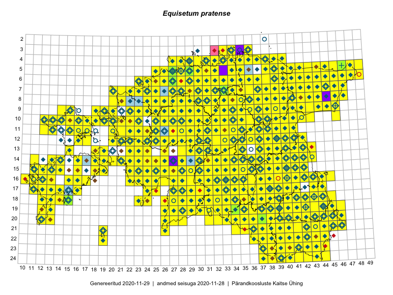

Equisetum pratense — aasosi
Equisetaceae :: Equisetum pratense Ehrh. (2137)

Kaart põhineb 3596 kirjel:
vaatlusi 2012
herbaareksemplare 125
PKÜ kirjeid1 816
ELFi kirjeid2 627
LVA kirjeid3 16
Taime kaasaegsed ja ajaloolised leiukohad asuvad 510 ruudus.
Tingmärgid ja leidudega ruutude arvud periooditi uues (u) ja 2005 andmestikus (v)
| █ | vahemik | u4 | v5 |
|---|---|---|---|
| █ | 2006–2020 | 488 | – |
| ◆/◇ | 1971–2005 | 430 | 422 |
| ○ | 1921–1970 | 161 | 24 |
| + | kuni 1920 | 14 | 0 |
| × | hävinud | – | 0 |
| ? | kaheldav | – | 0 |
| Ruut | Leidja(d) | Leiuaeg | Kirje |
|---|---|---|---|
| 20-40 | Toomas Kukk, Kersti Tambets, Sten Mander, Kristine Fenske | 2020-09-30 | ruut/ala: Equisetum pratense Ehrh. |
| 06-34 | Meeli Mesipuu | 2020-09-24 | ruut/ala: Equisetum pratense Ehrh. |
| 19-41 | Art Villem Adojaan, Amaranta Põld, Karl Hendrik Tamkivi, Pelle Mellov, Anni Miller | 2020-09-19 | punkt: Equisetum pratense Ehrh. |
| 13-18 | Meeli Mesipuu | 2020-09-13 | ruut/ala: Equisetum pratense Ehrh. |
| 13-19 | Meeli Mesipuu | 2020-09-13 | ruut/ala: Equisetum pratense Ehrh. |
| 19-39 | Toomas Kukk | 2020-09-12 | ruut/ala: Equisetum pratense Ehrh. |
| 24-38 | Meeli Mesipuu | 2020-09-08 | PKÜ: 20696 |
| 15-16 | Mari Reitalu, Sirje Azarov | 2020-09-07 | ruut/ala: Equisetum pratense Ehrh. |
| 08-32 | Peedu Saar | 2020-09-02 | PKÜ: 20908 |
| 16-23 | Toomas Kukk | 2020-09-01 | PKÜ: 20992 |
| 16-23 | Toomas Kukk | 2020-09-01 | PKÜ: 20996 |
| 16-23 | Toomas Kukk | 2020-09-01 | PKÜ: 20997 |
| 16-23 | Toomas Kukk | 2020-09-01 | PKÜ: 20998 |
| 16-30 | Ott Luuk, Meeli Mesipuu | 2020-09-01 | PKÜ: 20871 |
| 15-36 | Art Villem Adojaan, Johan Boeijkens | 2020-08-30 | punkt: Equisetum pratense Ehrh. |
| 05-31 | Rein Kalamees | 2020-08-28 | ruut/ala: Equisetum pratense Ehrh. |
| 19-29 | Meeli Mesipuu | 2020-08-28 | punkt: Equisetum pratense Ehrh. |
| 19-29 | Meeli Mesipuu | 2020-08-28 | ruut/ala: Equisetum pratense Ehrh. |
| 19-29 | Meeli Mesipuu | 2020-08-28 | ruut/ala: Equisetum pratense Ehrh. |
| 06-35 | Toomas Kukk | 2020-08-27 | PKÜ: 21010 |
| 06-35 | Toomas Kukk | 2020-08-27 | PKÜ: 21011 |
| 06-36 | Toomas Kukk | 2020-08-27 | PKÜ: 21019 |
| 04-36 | Toomas Kukk, Peedu Saar | 2020-08-26 | PKÜ: 20910 |
| 05-40 | Toomas Kukk, Peedu Saar | 2020-08-26 | PKÜ: 20912 |
| 05-40 | Peedu Saar, Toomas Kukk | 2020-08-26 | PKÜ: 20915 |
| 10-36 | Peedu Saar | 2020-08-25 | ruut/ala: Equisetum pratense Ehrh. |
| 10-30 | Ott Luuk | 2020-08-24 | ruut/ala: Equisetum pratense Ehrh. |
| 10-29 | Ott Luuk | 2020-08-24 | ruut/ala: Equisetum pratense Ehrh. |
| 18-33 | Ott Luuk, Jaak-Albert Metsoja | 2020-08-21 | ruut/ala: Equisetum pratense Ehrh. |
| 23-39 | Meeli Mesipuu | 2020-08-20 | punkt: Equisetum pratense Ehrh. |
| 19-35 | Meeli Mesipuu | 2020-08-19 | ruut/ala: Equisetum pratense Ehrh. |
| 17-33;18-33 | Meeli Mesipuu | 2020-08-19 | PKÜ: 20370 |
| 08-43 | Toomas Kukk, Ott Luuk, Kersti Tambets, Sten Mander, Kristine Fenske | 2020-08-18 | ruut/ala: Equisetum pratense Ehrh. |
| 18-38 | Nele Ingerpuu | 2020-08-14 | ELF: 705 |
| 14-19 | Meeli Mesipuu | 2020-08-12 | ruut/ala: Equisetum pratense Ehrh. |
| 14-16 | Meeli Mesipuu | 2020-08-11 | PKÜ: 20285 |
| 14-16 | Meeli Mesipuu | 2020-08-11 | PKÜ: 20316 |
| 21-35 | Tiit Hallikma | 2020-08-08 | ELF: 16041 |
| 22-40 | Toomas Kukk, Eerik Leibak | 2020-08-06 | ruut/ala: Equisetum pratense Ehrh. |
| 22-41 | Toomas Kukk, Eerik Leibak | 2020-08-05 | ruut/ala: Equisetum pratense Ehrh. |
| 10-23 | Peedu Saar | 2020-08-05 | ruut/ala: Equisetum pratense Ehrh. |
| 12-39 | Ulvi Selgis, Enn Selgis | 2020-07-29 | punkt: Equisetum pratense Ehrh. |
| 07-44 | Toomas Kukk | 2020-07-29 | PKÜ: 21084 |
| 09-45 | Peedu Saar | 2020-07-29 | PKÜ: 20504 |
| 09-43 | Toomas Kukk | 2020-07-28 | ruut/ala: Equisetum pratense Ehrh. |
| 09-43 | Toomas Kukk | 2020-07-28 | PKÜ: 21089 |
| 09-43 | Toomas Kukk | 2020-07-28 | PKÜ: 21091 |
| 19-43 | Silvia Pihu | 2020-07-27 | ELF: 2310 |
| 14-14 | Mari Reitalu, Sirje Azarov, Aira Alasi | 2020-07-23 | ruut/ala: Equisetum pratense Ehrh. |
| 08-25 | Ott Luuk | 2020-07-22–2020-07-23 | ruut/ala: Equisetum pratense Ehrh. |
| 03-35 | Jaan Spiegel | 2020-07-21 | ELF: 2640 |
| 15-36 | Art Villem Adojaan | 2020-07-21 | punkt: Equisetum pratense Ehrh. |
| 16-39 | Art Villem Adojaan, Amaranta Põld | 2020-07-19 | punkt: Equisetum pratense Ehrh. |
| 05-32 | Rein Kalamees | 2020-07-12 | ruut/ala: Equisetum pratense Ehrh. |
| 20-37 | Ott Luuk | 2020-06-27 | ruut/ala: Equisetum pratense Ehrh. |
| 08-28 | Ott Luuk | 2020-06-21 | ruut/ala: Equisetum pratense Ehrh. |
| 07-28 | Ott Luuk | 2020-06-21 | ruut/ala: Equisetum pratense Ehrh. |
| 05-26 | Liivi Mäekallas | 2020-06-20 | LVA: 40312102 |
| 11-22 | Meeli Mesipuu, Ott Luuk | 2020-06-17 | PKÜ: 21119 |
| 05-26 | Toomas Kukk, Rein Kalamees, Martin Tikk | 2020-06-16 | PKÜ: 20850 |
| 06-27 | Toomas Kukk, Rein Kalamees, Martin Tikk | 2020-06-16 | PKÜ: 20861 |
| 08-27 | Toomas Kukk, Rein Kalamees | 2020-06-15 | PKÜ: 20462 |
| 09-28 | Toomas Kukk, Rein Kalamees | 2020-06-15 | PKÜ: 20465 |
| 09-28 | Toomas Kukk, Rein Kalamees | 2020-06-15 | PKÜ: 20466 |
| 09-28 | Toomas Kukk, Rein Kalamees | 2020-06-15 | PKÜ: 20467 |
| 08-27 | Toomas Kukk, Rein Kalamees | 2020-06-15 | PKÜ: 20486 |
| 10-30 | Peedu Saar | 2020-06-15 | PKÜ: 20384 |
| 10-30 | Ott Luuk, Peedu Saar | 2020-06-15 | PKÜ: 20400 |
| 10-30 | Ott Luuk, Peedu Saar | 2020-06-15 | PKÜ: 20401 |
| 10-30 | Ott Luuk, Peedu Saar | 2020-06-15 | PKÜ: 20402 |
| 10-30 | Ott Luuk, Peedu Saar | 2020-06-15 | PKÜ: 20407 |
| 10-30 | Ott Luuk, Peedu Saar | 2020-06-15 | PKÜ: 20408 |
| 10-30 | Ott Luuk, Peedu Saar | 2020-06-15 | PKÜ: 20409 |
| 11-32 | Ott Luuk, Peedu Saar | 2020-06-15 | PKÜ: 20415 |
| 13-31 | Meeli Mesipuu | 2020-06-15 | PKÜ: 21126 |
| 13-31 | Meeli Mesipuu | 2020-06-15 | PKÜ: 21128 |
| 13-31 | Meeli Mesipuu | 2020-06-15 | PKÜ: 21136 |
| 04-33 | Meeli Mesipuu | 2020-06-11 | PKÜ: 21071 |
| 05-32 | Ene Kook, Peedu Saar | 2020-06-11 | PKÜ: 20372 |
| 04-32 | Ene Kook | 2020-06-11 | PKÜ: 20376 |
| 03-33 | Toomas Kukk, Meeli Mesipuu | 2020-06-10 | ruut/ala: Equisetum pratense Ehrh. |
| 05-34 | Rein Kalamees, Ott Luuk | 2020-06-10 | PKÜ: 20669 |
| 04-34 | Ene Kook | 2020-06-10 | PKÜ: 20351 |
| 04-33 | Toomas Kukk | 2020-06-09 | PKÜ: 20828 |
| 05-34 | Rein Kalamees, Ott Luuk | 2020-06-09 | PKÜ: 20263 |
| 04-33 | Meeli Mesipuu, Toomas Kukk | 2020-06-09 | PKÜ: 20825 |
| 04-33 | Meeli Mesipuu, Toomas Kukk | 2020-06-09 | PKÜ: 21049 |
| 04-33 | Meeli Mesipuu, Toomas Kukk | 2020-06-09 | PKÜ: 21051 |
| 04-33 | Meeli Mesipuu | 2020-06-09 | PKÜ: 21056 |
| 03-34 | Ene Kook | 2020-06-09 | PKÜ: 20322 |
| 03-34 | Ene Kook | 2020-06-09 | PKÜ: 20336 |
| 03-34 | Ene Kook | 2020-06-09 | PKÜ: 20337 |
| 07-37 | Toomas Kukk, Meeli Mesipuu | 2020-06-08 | ruut/ala: Equisetum pratense Ehrh. |
| 07-37 | Toomas Kukk, Meeli Mesipuu | 2020-06-08 | PKÜ: 20792 |
| 09-35 | Meeli Mesipuu | 2020-06-08 | PKÜ: 20757 |
| 03-34 | Ene Kook, Peedu Saar | 2020-06-08 | PKÜ: 20290 |
| 03-34 | Ene Kook, Peedu Saar | 2020-06-08 | PKÜ: 20293 |
| 15-36 | Amaranta Põld, Art Villem Adojaan, Johan Boeijkens, Lisell Toomla, Anni Miller, Mari Remm, Ingrid Alla, Kristjan Adojaan, Jaak Pärtel, Pelle Mellov, Jaan Grosberg | 2020-06-07 | punkt: Equisetum pratense Ehrh. |
| 04-36 | Tiina Reintal | 2020-06-06 | punkt: Equisetum pratense Ehrh. |
| 10-28 | Terje Villems | 2020-06-06 | punkt: Equisetum pratense Ehrh. |
| 23-40 | Taavi Tatsi, Jaak-Albert Metsoja | 2020-06-06 | punkt: Equisetum pratense Ehrh. |
| 19-41 | Merje Malkki, Virve Malkki | 2020-06-06 | punkt: Equisetum pratense Ehrh. |
| 19-41 | Merje Malkki, Virve Malkki | 2020-06-06 | punkt: Equisetum pratense Ehrh. |
| 22-43 | Margus Ots, Karin Pai, Margit Hirv, Marko Mägi, Kadi Külm, Kuido Külm, Ekke Rikka, Sigrid Ots, Triin Karusaar, Veljo Runnel, Uku Laur Pai | 2020-06-06 | punkt: Equisetum pratense Ehrh. |
| 19-35 | Magda Kõljalg, Linda-Liisa Veromann-Jürgenson, Martin Jürgenson, Valev Vahter | 2020-06-06 | punkt: Equisetum pratense Ehrh. |
| 10-21 | Külli Kivi | 2020-06-06 | punkt: Equisetum pratense Ehrh. |
| 05-35 | Kristel Turja | 2020-06-06 | punkt: Equisetum pratense Ehrh. |
| 10-28 | Kalev Tihkan | 2020-06-06 | punkt: Equisetum pratense Ehrh. |
| 08-33 | Ester Valdvee | 2020-06-06 | punkt: Equisetum pratense Ehrh. |
| 19-42 | Elis Sepp | 2020-06-06 | punkt: Equisetum pratense Ehrh. |
| 17-14 | Mari Reitalu, Triin Reitalu, Sirje Azarov | 2020-05-26 | ruut/ala: Equisetum pratense Ehrh. |
| 17-38 | Jaak Pärtel | 2020-04-21 | punkt: Equisetum pratense Ehrh. |
| 09-31 | Toivo Sepp | 2019-09-29 | ELF: 1066 |
| 18-41 | Peedu Saar, Ott Luuk | 2019-09-24 | ruut/ala: Equisetum pratense Ehrh. |
| 17-13 | Mari Reitalu, Triin Reitalu | 2019-09-20 | ruut/ala: Equisetum pratense Ehrh. |
| 09-19 | Toomas Kukk, Peedu Saar | 2019-09-17 | ruut/ala: Equisetum pratense Ehrh. |
| 10-18 | Ott Luuk | 2019-09-17 | ruut/ala: Equisetum pratense Ehrh. |
| 08-44 | Thea Kull, Toomas Kukk | 2019-09-12 | ruut/ala: Equisetum pratense Ehrh. |
| 07-43 | Meeli Mesipuu, Ott Luuk | 2019-09-12 | ruut/ala: Equisetum pratense Ehrh. |
| 06-45 | Thea Kull, Toomas Kukk | 2019-09-11 | punkt: Equisetum pratense Ehrh. |
| 09-46 | Peedu Saar, Timo Luhamäe | 2019-09-11 | ruut/ala: Equisetum pratense Ehrh. |
| 05-44 | Meeli Mesipuu, Ott Luuk | 2019-09-11 | ruut/ala: Equisetum pratense Ehrh. |
| 10-39 | Toomas Kukk, Thea Kull | 2019-09-10 | ruut/ala: Equisetum pratense Ehrh. |
| 10-40 | Toomas Kukk, Thea Kull | 2019-09-10 | ruut/ala: Equisetum pratense Ehrh. |
| 08-41 | Peedu Saar, Timo Luhamäe | 2019-09-10 | ruut/ala: Equisetum pratense Ehrh. |
| 08-24 | Peedu Saar, Ott Luuk | 2019-09-05 | ruut/ala: Equisetum pratense Ehrh. |
| 14-14 | Mari Reitalu, Sirje Azarov, Anne Teigamägi | 2019-09-04 | ruut/ala: Equisetum pratense Ehrh. |
| 09-22 | Ott Luuk | 2019-09-03–2019-09-04 | ruut/ala: Equisetum pratense Ehrh. |
| 14-40 | Kaili Kattai | 2019-08-30 | punkt: Equisetum pratense Ehrh. |
| 15-28 | Toomas Kukk, Peedu Saar | 2019-08-29 | ruut/ala: Equisetum pratense Ehrh. |
| 15-29 | Peedu Saar, Toomas Kukk | 2019-08-29 | ruut/ala: Equisetum pratense Ehrh. |
| 13-32 | Ott Luuk, Eerik Leibak | 2019-08-29 | ruut/ala: Equisetum pratense Ehrh. |
| 13-31 | Ott Luuk, Eerik Leibak | 2019-08-29 | ruut/ala: Equisetum pratense Ehrh. |
| 14-32 | Meeli Mesipuu, Timo Luhamäe | 2019-08-29 | ruut/ala: Equisetum pratense Ehrh. |
| 14-33 | Meeli Mesipuu, Timo Luhamäe | 2019-08-29 | ruut/ala: Equisetum pratense Ehrh. |
| 15-32 | Mari Reitalu, Thea Kull, Martin Tikk | 2019-08-29 | ruut/ala: Equisetum pratense Ehrh. |
| 16-31 | Toomas Kukk, Peedu Saar, Martin Tikk | 2019-08-28 | ruut/ala: Equisetum pratense Ehrh. |
| 16-30 | Peedu Saar, Martin Tikk, Toomas Kukk | 2019-08-28 | ruut/ala: Equisetum pratense Ehrh. |
| 14-31 | Ott Luuk, Eerik Leibak | 2019-08-28 | ruut/ala: Equisetum pratense Ehrh. |
| 15-31 | Meeli Mesipuu, Timo Luhamäe | 2019-08-28 | ruut/ala: Equisetum pratense Ehrh. |
| 13-30 | Mari Reitalu, Thea Kull | 2019-08-28 | ruut/ala: Equisetum pratense Ehrh. |
| 13-29 | Mari Reitalu, Thea Kull | 2019-08-28 | ruut/ala: Equisetum pratense Ehrh. |
| 17-33 | Toomas Kukk, Peedu Saar, Martin Tikk | 2019-08-27 | ruut/ala: Equisetum pratense Ehrh. |
| 17-35 | Peedu Saar, Martin Tikk, Toomas Kukk | 2019-08-27 | ruut/ala: Equisetum pratense Ehrh. |
| 12-34 | Ott Luuk, Eerik Leibak | 2019-08-27 | ruut/ala: Equisetum pratense Ehrh. |
| 16-33 | Mari Reitalu, Thea Kull | 2019-08-27 | ruut/ala: Equisetum pratense Ehrh. |
| 15-39 | Kaili Kattai | 2019-08-24 | punkt: Equisetum pratense Ehrh. |
| 18-43 | Peedu Saar, Ott Luuk | 2019-08-21 | ruut/ala: Equisetum pratense Ehrh. |
| 16-42 | Kaili Kattai | 2019-08-19 | punkt: Equisetum pratense Ehrh. |
| 12-26 | Thea Kull | 2019-08-17 | ruut/ala: Equisetum pratense Ehrh. |
| 11-36 | Peedu Saar | 2019-08-10 | ruut/ala: Equisetum pratense Ehrh. |
| 09-40 | Rein Kalamees, Toomas Kukk | 2019-08-09 | ruut/ala: Equisetum pratense Ehrh. |
| 08-39 | Rein Kalamees, Toomas Kukk | 2019-08-08 | ruut/ala: Equisetum pratense Ehrh. |
| 09-39 | Rein Kalamees, Toomas Kukk | 2019-08-08 | ruut/ala: Equisetum pratense Ehrh. |
| 07-32 | Ott Luuk, Jaak-Albert Metsoja | 2019-08-08 | ruut/ala: Equisetum pratense Ehrh. |
| 08-33 | Ott Luuk, Jaak-Albert Metsoja | 2019-08-08 | ruut/ala: Equisetum pratense Ehrh. |
| 07-33 | Ott Luuk, Jaak-Albert Metsoja | 2019-08-08 | ruut/ala: Equisetum pratense Ehrh. |
| 04-35 | Meeli Mesipuu | 2019-08-08 | ruut/ala: Equisetum pratense Ehrh. |
| 07-34 | Toomas Kukk, Rein Kalamees, Kaur Maran | 2019-08-07 | ruut/ala: Equisetum pratense Ehrh. |
| 04-33 | Ott Luuk, Jaak-Albert Metsoja | 2019-08-07 | ruut/ala: Equisetum pratense Ehrh. |
| 04-37 | Meeli Mesipuu | 2019-08-07 | ruut/ala: Equisetum pratense Ehrh. |
| 04-36 | Meeli Mesipuu | 2019-08-06–2019-08-07 | ruut/ala: Equisetum pratense Ehrh. |
| 03-34 | Rein Kalamees, Toomas Kukk | 2019-08-06 | ruut/ala: Equisetum pratense Ehrh. |
| 04-34 | Rein Kalamees, Toomas Kukk | 2019-08-06 | ruut/ala: Equisetum pratense Ehrh. |
| 04-38 | Ott Luuk, Jaak-Albert Metsoja | 2019-08-06 | ruut/ala: Equisetum pratense Ehrh. |
| 05-32 | Rein Kalamees, Toomas Kukk | 2019-08-05 | ruut/ala: Equisetum pratense Ehrh. |
| 04-32 | Rein Kalamees, Toomas Kukk | 2019-08-05 | ruut/ala: Equisetum pratense Ehrh. |
| 08-36 | Ott Luuk, Jaak-Albert Metsoja | 2019-08-05 | ruut/ala: Equisetum pratense Ehrh. |
| 07-36 | Ott Luuk, Jaak-Albert Metsoja | 2019-08-05 | ruut/ala: Equisetum pratense Ehrh. |
| 06-39 | Meeli Mesipuu | 2019-08-05 | ruut/ala: Equisetum pratense Ehrh. |
| 19-38 | Toomas Kukk, Peedu Saar | 2019-08-01 | ruut/ala: Equisetum pratense Ehrh. |
| 10-32 | Ott Luuk | 2019-07-31 | ruut/ala: Equisetum pratense Ehrh. |
| 22-38 | Kaili Kattai, Tiit Hallikma | 2019-07-30 | punkt: Equisetum pratense Ehrh. |
| 08-44 | Thea Kull | 2019-07-26 | punkt: Equisetum pratense Ehrh. |
| 09-31 | Ott Luuk, Toivo Sepp | 2019-07-25 | ruut/ala: Equisetum pratense Ehrh. |
| 11-30 | Ott Luuk, Toivo Sepp | 2019-07-23 | ruut/ala: Equisetum pratense Ehrh. |
| 17-38 | Meeli Mesipuu | 2019-07-23 | ruut/ala: Equisetum pratense Ehrh. |
| 16-40 | Meeli Mesipuu | 2019-07-17 | ruut/ala: Equisetum pratense Ehrh. |
| 19-36 | Ott Luuk, Peedu Saar | 2019-07-16 | ruut/ala: Equisetum pratense Ehrh. |
| 17-38 | Peedu Saar, Ott Luuk | 2019-07-15 | ruut/ala: Equisetum pratense Ehrh. |
| 23-41 | Toomas Kukk, Indrek Tammekänd | 2019-07-12 | ruut/ala: Equisetum pratense Ehrh. |
| 23-42 | Toomas Kukk, Indrek Tammekänd | 2019-07-12 | ruut/ala: Equisetum pratense Ehrh. |
| 17-39 | Thea Kull | 2019-07-12 | ruut/ala: Equisetum pratense Ehrh. |
| 24-37 | Peedu Saar, Timo Luhamäe | 2019-07-12 | ruut/ala: Equisetum pratense Ehrh. |
| 19-40 | Meeli Mesipuu | 2019-07-12 | ruut/ala: Equisetum pratense Ehrh. |
| 19-42 | Meeli Mesipuu | 2019-07-12 | ruut/ala: Equisetum pratense Ehrh. |
| 22-40 | Toomas Kukk, Indrek Tammekänd | 2019-07-11 | ruut/ala: Equisetum pratense Ehrh. |
| 22-41 | Toomas Kukk, Indrek Tammekänd | 2019-07-11 | ruut/ala: Equisetum pratense Ehrh. |
| 23-37 | Peedu Saar, Timo Luhamäe | 2019-07-11 | ruut/ala: Equisetum pratense Ehrh. |
| 23-44 | Ott Luuk, Tiit Hallikma | 2019-07-11 | ruut/ala: Equisetum pratense Ehrh. |
| 24-44 | Ott Luuk, Tiit Hallikma | 2019-07-11 | ruut/ala: Equisetum pratense Ehrh. |
| 24-43 | Ott Luuk, Tiit Hallikma | 2019-07-11 | ruut/ala: Equisetum pratense Ehrh. |
| 19-41 | Meeli Mesipuu | 2019-07-11 | ruut/ala: Equisetum pratense Ehrh. |
| 21-40 | Toomas Kukk, Indrek Tammekänd | 2019-07-10 | ruut/ala: Equisetum pratense Ehrh. |
| 21-41 | Toomas Kukk, Indrek Tammekänd | 2019-07-10 | ruut/ala: Equisetum pratense Ehrh. |
| 21-42 | Toomas Kukk, Indrek Tammekänd | 2019-07-10 | ruut/ala: Equisetum pratense Ehrh. |
| 19-39 | Thea Kull | 2019-07-10 | ruut/ala: Equisetum pratense Ehrh. |
| 20-46 | Ott Luuk, Tiit Hallikma | 2019-07-10 | ruut/ala: Equisetum pratense Ehrh. |
| 20-45 | Ott Luuk, Tiit Hallikma | 2019-07-10 | ruut/ala: Equisetum pratense Ehrh. |
| 20-40 | Toomas Kukk, Indrek Tammekänd | 2019-07-09 | ruut/ala: Equisetum pratense Ehrh. |
| 20-41 | Toomas Kukk, Indrek Tammekänd | 2019-07-09 | ruut/ala: Equisetum pratense Ehrh. |
| 18-42 | Thea Kull, Meeli Mesipuu | 2019-07-09 | ruut/ala: Equisetum pratense Ehrh. |
| 20-36 | Peedu Saar, Timo Luhamäe | 2019-07-09 | ruut/ala: Equisetum pratense Ehrh. |
| 20-43 | Ott Luuk, Tiit Hallikma | 2019-07-09 | ruut/ala: Equisetum pratense Ehrh. |
| 20-44 | Ott Luuk, Tiit Hallikma | 2019-07-09 | ruut/ala: Equisetum pratense Ehrh. |
| 10-16 | Toomas Kukk | 2019-07-03 | ruut/ala: Equisetum pratense Ehrh. |
| 15-40 | Ott Luuk, Kaili Kattai | 2019-07-03 | ruut/ala: Equisetum pratense Ehrh. |
| 05-28 | Meeli Mesipuu | 2019-06-30 | ruut/ala: Equisetum pratense Ehrh. |
| 05-28 | Meeli Mesipuu | 2019-06-30 | ruut/ala: Equisetum pratense Ehrh. |
| 05-28 | Meeli Mesipuu | 2019-06-30 | ruut/ala: Equisetum pratense Ehrh. |
| 05-28 | Meeli Mesipuu | 2019-06-26 | ruut/ala: Equisetum pratense Ehrh. |
| 06-27 | Meeli Mesipuu | 2019-06-22 | ruut/ala: Equisetum pratense Ehrh. |
| 17-40 | Meeli Mesipuu | 2019-06-19 | ruut/ala: Equisetum pratense Ehrh. |
| 19-41 | Merje Malkki | 2019-06-15 | punkt: Equisetum pratense Ehrh. |
| 19-42 | Elis Sepp | 2019-06-15 | punkt: Equisetum pratense Ehrh. |
| 17-40 | Margus Ots, Ekke Rikka, Sigrid Ots, Meelis Pärtel, Kadri Pärtel, Jaak Pärtel, Karin Pai, Marko Mägi, Leene Pärtel | 2019-06-14–2019-06-15 | punkt: Equisetum pratense Ehrh. |
| 16-40 | Thea Kull | 2019-06-14 | ruut/ala: Equisetum pratense Ehrh. |
| 19-35 | Siiri Kõljalg | 2019-06-14 | punkt: Equisetum pratense Ehrh. |
| 19-44 | Mari Kala, Ain Piir | 2019-06-14 | punkt: Equisetum pratense Ehrh. |
| 19-35 | Liisi Tamm | 2019-06-14 | punkt: Equisetum pratense Ehrh. |
| 05-27 | Leif-August Kirs, Anna-Grete Rebane, Urmas Lanto | 2019-06-14 | punkt: Equisetum pratense Ehrh. |
| 16-40 | Aivi Kasik, Martin Tikk, Weralda Lakeman, Thea Kull | 2019-06-14 | punkt: Equisetum pratense Ehrh. |
| 10-28 | Aat Sarv, Ott Luuk | 2019-06-14 | punkt: Equisetum pratense Ehrh. |
| 05-29 | Thea Kull | 2019-06-12 | ruut/ala: Equisetum pratense Ehrh. |
| 05-29 | Thea Kull | 2019-06-12 | ruut/ala: Equisetum pratense Ehrh. |
| 04-33 | Peedu Saar, Ott Luuk | 2019-06-11 | ruut/ala: Equisetum pratense Ehrh. |
| 11-37 | Ott Luuk, Peedu Saar | 2019-06-10 | ruut/ala: Equisetum pratense Ehrh. |
| 18-42 | Thea Kull | 2019-06-07 | ruut/ala: Equisetum pratense Ehrh. |
| 15-26 | Indrek Tammekänd | 2019-06-05 | ruut/ala: Equisetum pratense Ehrh. |
| 10-13 | Toomas Kukk, Indrek Tammekänd | 2019-06-02 | ruut/ala: Equisetum pratense Ehrh. |
| 10-13 | Toomas Kukk, Indrek Tammekänd | 2019-06-02 | ELF: 24687 |
| 18-32 | Meeli Mesipuu | 2019-05-31 | ruut/ala: Equisetum pratense Ehrh. |
| 15-40 | Ott Luuk, Thea Kull, Meeli Mesipuu | 2019-05-30 | ruut/ala: Equisetum pratense Ehrh. |
| 16-28 | Indrek Tammekänd | 2019-05-29–2019-08-23 | ruut/ala: Equisetum pratense Ehrh. |
| 14-40 | Ott Luuk, Sten Mander, Kersti Tambets | 2019-05-28 | punkt: Equisetum pratense Ehrh. |
| 16-33 | Ott Luuk, Peedu Saar, Toomas Kukk | 2019-05-13 | ruut/ala: Equisetum pratense Ehrh. |
| 16-40 | Elisabeth Paenurm | 2019-05-12 | LVA: -1907270018 |
| 19-38 | Ott Luuk, Meeli Mesipuu | 2019-05-09 | ruut/ala: Equisetum pratense Ehrh. |
| 19-42 | Ott Luuk, Meeli Mesipuu | 2019-05-09 | punkt: Equisetum pratense Ehrh. |
| 05-32 | Eerik Leibak | 2019-05-06 | ELF: 5367 |
| 21-39 | Toomas Kukk, Tiina Elvisto, Eerik Leibak, Tõnu Ploompuu | 2019-04-27 | ruut/ala: Equisetum pratense Ehrh. |
| 15-42 | Ott Luuk, Meeli Mesipuu | 2018-09-19 | ruut/ala: Equisetum pratense Ehrh. |
| 17-43 | Ott Luuk, Meeli Mesipuu | 2018-09-19 | ruut/ala: Equisetum pratense Ehrh. |
| 04-28 | Ott Luuk | 2018-09-07 | ruut/ala: Equisetum pratense Ehrh. |
| 05-41 | Peedu Saar, Toomas Kukk | 2018-09-03 | ruut/ala: Equisetum pratense Ehrh. |
| 10-31 | Ott Luuk | 2018-08-28 | ruut/ala: Equisetum pratense Ehrh. |
| 19-44 | Toomas Kukk, Eerik Leibak, Timo Luhamäe | 2018-08-27 | ruut/ala: Equisetum pratense Ehrh. |
| 10-30 | Ott Luuk, Toivo Sepp | 2018-08-27 | ruut/ala: Equisetum pratense Ehrh. |
| 14-37 | Peedu Saar | 2018-08-23 | ruut/ala: Equisetum pratense Ehrh. |
| 11-31 | Ott Luuk | 2018-08-23 | ruut/ala: Equisetum pratense Ehrh. |
| 14-31 | Toomas Kukk | 2018-08-18 | ruut/ala: Equisetum pratense Ehrh. |
| 14-32 | Toomas Kukk | 2018-08-18 | ruut/ala: Equisetum pratense Ehrh. |
| 19-28 | Peedu Saar, Polina Degtjarenko | 2018-08-14 | ruut/ala: Equisetum pratense Ehrh. |
| 05-43 | Indrek Tammekänd | 2018-08-11 | ruut/ala: Equisetum pratense Ehrh. |
| 05-44 | Indrek Tammekänd | 2018-08-10–2018-08-11 | ruut/ala: Equisetum pratense Ehrh. |
| 05-48 | Vello Keppart | 2018-08-10 | punkt: Equisetum pratense Ehrh. |
| 17-12 | Triin Reitalu, Mari Lepik | 2018-08-08 | punkt: Equisetum pratense Ehrh. |
| 04-33 | Peedu Saar, Toomas Kukk | 2018-08-08 | ruut/ala: Equisetum pratense Ehrh. |
| 07-28 | Peedu Saar, Toomas Kukk | 2018-08-07 | ruut/ala: Equisetum pratense Ehrh. |
| 05-31 | Peedu Saar, Toomas Kukk | 2018-08-07 | ruut/ala: Equisetum pratense Ehrh. |
| 14-16;14-17 | Mari Reitalu, Sirje Azarov | 2018-08-07 | ELF: 2585 |
| 14-14 | Mari Reitalu, Sirje Azarov | 2018-08-07 | ELF: 24665 |
| 16-43 | Peedu Saar | 2018-08-06 | ruut/ala: Equisetum pratense Ehrh. |
| 08-28 | Tiina Elvisto, Riima Niidas | 2018-08-01 | punkt: Equisetum pratense Ehrh. |
| 18-33 | Peedu Saar | 2018-08-01 | ruut/ala: Equisetum pratense Ehrh. |
| 16-33 | Peedu Saar | 2018-08-01 | ruut/ala: Equisetum pratense Ehrh. |
| 17-33 | Peedu Saar | 2018-08-01 | ruut/ala: Equisetum pratense Ehrh. |
| 10-31 | Ott Luuk | 2018-08-01 | ruut/ala: Equisetum pratense Ehrh. |
| 05-29 | Anna-Maria Angilova | 2018-07-30 | TALL C011609: Equisetum pratense Ehrh. |
| 15-42 | Peedu Saar | 2018-07-20 | ruut/ala: Equisetum pratense Ehrh. |
| 12-40 | Peedu Saar | 2018-07-19 | ruut/ala: Equisetum pratense Ehrh. |
| 23-43 | Toomas Kukk, Eerik Leibak | 2018-07-18 | ruut/ala: Equisetum pratense Ehrh. |
| 23-42 | Toomas Kukk, Eerik Leibak | 2018-07-18 | ruut/ala: Equisetum pratense Ehrh. |
| 18-30 | Indrek Tammekänd | 2018-07-15 | ELF: 24579 |
| 16-12 | Triin Reitalu, Ansis Blaus | 2018-07-13 | punkt: Equisetum pratense Ehrh. |
| 15-12 | Triin Reitalu, Ansis Blaus | 2018-07-12 | punkt: Equisetum pratense Ehrh. |
| 14-14 | Triin Reitalu, Ansis Blaus | 2018-07-09 | punkt: Equisetum pratense Ehrh. |
| 14-14 | Triin Reitalu, Ansis Blaus | 2018-07-09 | punkt: Equisetum pratense Ehrh. |
| 05-48 | Vello Keppart | 2018-07-07 | punkt: Equisetum pratense Ehrh. |
| 21-45 | Toomas Kukk, Eerik Leibak | 2018-07-06 | ruut/ala: Equisetum pratense Ehrh. |
| 20-46 | Toomas Kukk, Eerik Leibak | 2018-07-06 | ruut/ala: Equisetum pratense Ehrh. |
| 06-27 | Rein Kalamees | 2018-07-06 | ruut/ala: Equisetum pratense Ehrh. |
| 06-23 | Peedu Saar | 2018-07-04 | ruut/ala: Equisetum pratense Ehrh. |
| 20-45 | Argo Kuusk | 2018-06-30 | LVA: 386595500 |
| 13-42 | Toomas Kukk, Ilmar Uibopuu | 2018-06-17 | ruut/ala: Equisetum pratense Ehrh. |
| 14-42 | Toomas Kukk, Ilmar Uibopuu | 2018-06-17 | punkt: Equisetum pratense Ehrh. |
| 17-40 | Margus Ots, Sigrid Ots, Ekke Rikka | 2018-06-16 | punkt: Equisetum pratense Ehrh. |
| 06-28 | Leelo Rood | 2018-06-16 | punkt: Equisetum pratense Ehrh. |
| 19-35 | Meeta Kõljalg | 2018-06-15 | punkt: Equisetum pratense Ehrh. |
| 19-38 | Margit Turb | 2018-06-15 | punkt: Equisetum pratense Ehrh. |
| 10-12 | Liis Soonik | 2018-06-15 | punkt: Equisetum pratense Ehrh. |
| 07-33 | Indrek Tammekänd, Eike Tammekänd, Murel Truu | 2018-06-09–2018-06-10 | ruut/ala: Equisetum pratense Ehrh. |
| 17-30 | Indrek Tammekänd | 2018-06-06 | ruut/ala: Equisetum pratense Ehrh. |
| 16-31 | Indrek Tammekänd | 2018-06-04–2018-06-05 | ruut/ala: Equisetum pratense Ehrh. |
| 19-33 | Mari Reitalu, Elle Roosaluste | 2018-06-02–2018-06-03 | ruut/ala: Equisetum pratense Ehrh. |
| 18-23 | Indrek Tammekänd | 2018-05-31–2018-06-02 | ruut/ala: Equisetum pratense Ehrh. |
| 17-43 | Peedu Saar, Thea Kull, Malle Leht | 2018-05-28–2018-05-30 | ruut/ala: Equisetum pratense Ehrh. |
| 16-15 | Toomas Kukk, Ilmar Uibopuu | 2018-05-27 | ruut/ala: Equisetum pratense Ehrh. |
| 10-36 | Indrek Tammekänd | 2018-05-27 | ruut/ala: Equisetum pratense Ehrh. |
| 08-28 | Helen Õunap | 2018-05-26 | LVA: -1929201304 |
| 17-43 | Aivi Kasik, Kätlin Maran | 2018-05-21 | LVA: -709819738 |
| 24-44 | Toomas Kukk, Peedu Saar | 2018-05-17 | punkt: Equisetum pratense Ehrh. |
| 24-43 | Peedu Saar, Toomas Kukk | 2018-05-17 | punkt: Equisetum pratense Ehrh. |
| 17-39 | Ketryn Õun | 2018-05-17 | LVA: 212121932 |
| 16-23 | Indrek Tammekänd | 2017-10-19 | ruut/ala: Equisetum pratense Ehrh. |
| 07-37 | Toomas Kukk, Peedu Saar | 2017-09-28 | ruut/ala: Equisetum pratense Ehrh. |
| 04-38 | Peedu Saar, Toomas Kukk | 2017-09-28 | ruut/ala: Equisetum pratense Ehrh. |
| 10-14 | Peedu Saar, Ott Luuk | 2017-09-14 | ruut/ala: Equisetum pratense Ehrh. |
| 10-13 | Ott Luuk, Peedu Saar | 2017-09-14 | ruut/ala: Equisetum pratense Ehrh. |
| 11-15 | Peedu Saar, Ott Luuk | 2017-09-13 | ruut/ala: Equisetum pratense Ehrh. |
| 11-12 | Toomas Kukk, Indrek Tammekänd | 2017-09-12 | ruut/ala: Equisetum pratense Ehrh. |
| 10-12 | Toomas Kukk, Indrek Tammekänd | 2017-09-12 | ruut/ala: Equisetum pratense Ehrh. |
| 12-17 | Toomas Kukk, Indrek Tammekänd | 2017-09-11 | ruut/ala: Equisetum pratense Ehrh. |
| 11-17 | Toomas Kukk, Indrek Tammekänd | 2017-09-11 | ruut/ala: Equisetum pratense Ehrh. |
| 08-31 | Rein Kalamees | 2017-09-06 | ruut/ala: Equisetum pratense Ehrh. |
| 18-27 | Peedu Saar, Toomas Kukk | 2017-09-06 | ruut/ala: Equisetum pratense Ehrh. |
| 14-26 | Indrek Tammekänd | 2017-09-04 | ruut/ala: Equisetum pratense Ehrh. |
| 06-27 | Caroline Pärn | 2017-09-04 | TU284269: Equisetum pratense Ehrh. |
| 11-40 | Peedu Saar, Ott Luuk | 2017-08-23 | ruut/ala: Equisetum pratense Ehrh. |
| 14-37 | Indrek Tammekänd | 2017-08-17–2017-08-18 | ruut/ala: Equisetum pratense Ehrh. |
| 14-36 | Indrek Tammekänd | 2017-08-16 | ruut/ala: Equisetum pratense Ehrh. |
| 14-35 | Peedu Saar | 2017-08-15–2017-09-16 | ruut/ala: Equisetum pratense Ehrh. |
| 14-36 | Meeli Mesipuu, Helen Toom | 2017-08-15 | ruut/ala: Equisetum pratense Ehrh. |
| 14-37 | Meeli Mesipuu, Helen Toom | 2017-08-14 | ruut/ala: Equisetum pratense Ehrh. |
| 14-37 | Meeli Mesipuu | 2017-08-14 | ruut/ala: Equisetum pratense Ehrh. |
| 16-28 | Peedu Saar, Timo Luhamäe | 2017-08-11 | ruut/ala: Equisetum pratense Ehrh. |
| 15-28 | Peedu Saar, Timo Luhamäe | 2017-08-11 | ruut/ala: Equisetum pratense Ehrh. |
| 09-24 | Mari Reitalu, Eerik Leibak | 2017-08-11 | ruut/ala: Equisetum pratense Ehrh. |
| 15-29 | Ilmar Uibopuu, Toomas Kukk | 2017-08-11 | ruut/ala: Equisetum pratense Ehrh. |
| 05-27 | Peedu Saar, Timo Luhamäe | 2017-08-10 | ruut/ala: Equisetum pratense Ehrh. |
| 11-20 | Ott Luuk, Ilmar Uibopuu | 2017-08-10 | ruut/ala: Equisetum pratense Ehrh. |
| 11-24 | Eerik Leibak, Toomas Kukk | 2017-08-10 | ruut/ala: Equisetum pratense Ehrh. |
| 12-25 | Peedu Saar, Timo Luhamäe | 2017-08-09 | ruut/ala: Equisetum pratense Ehrh. |
| 08-29 | Ott Luuk, Thea Kull | 2017-08-09 | ruut/ala: Equisetum pratense Ehrh. |
| 12-30 | Meeli Mesipuu, Indrek Tammekänd | 2017-08-09 | ruut/ala: Equisetum pratense Ehrh. |
| 12-27 | Mari Reitalu, Eerik Leibak | 2017-08-09 | ruut/ala: Equisetum pratense Ehrh. |
| 12-29 | Indrek Tammekänd | 2017-08-09 | ruut/ala: Equisetum pratense Ehrh. |
| 09-28 | Ilmar Uibopuu, Kadri Kuusksalu, Toomas Kukk, Ott Luuk | 2017-08-09 | ruut/ala: Equisetum pratense Ehrh. |
| 10-28 | Thea Kull, Ott Luuk | 2017-08-08 | ruut/ala: Equisetum pratense Ehrh. |
| 07-28 | Peedu Saar, Timo Luhamäe | 2017-08-08 | ruut/ala: Equisetum pratense Ehrh. |
| 08-28 | Mari Reitalu, Eerik Leibak | 2017-08-08 | ruut/ala: Equisetum pratense Ehrh. |
| 12-33 | Thea Kull, Ott Luuk | 2017-08-07 | ruut/ala: Equisetum pratense Ehrh. |
| 14-34 | Peedu Saar, Timo Luhamäe | 2017-08-07 | ruut/ala: Equisetum pratense Ehrh. |
| 13-34 | Peedu Saar, Timo Luhamäe | 2017-08-07 | ruut/ala: Equisetum pratense Ehrh. |
| 12-32 | Ott Luuk, Thea Kull | 2017-08-07 | ruut/ala: Equisetum pratense Ehrh. |
| 14-19 | Meeli Mesipuu | 2017-08-07 | ruut/ala: Equisetum pratense Ehrh. |
| 13-18 | Meeli Mesipuu | 2017-08-06 | ruut/ala: Equisetum pratense Ehrh. |
| 11-33 | Ott Luuk, Thea Kull | 2017-08-03 | ruut/ala: Equisetum pratense Ehrh. |
| 12-34 | Ott Luuk, Thea Kull | 2017-08-03 | ruut/ala: Equisetum pratense Ehrh. |
| 16-37 | Ott Luuk, Thea Kull | 2017-08-01 | ruut/ala: Equisetum pratense Ehrh. |
| 24-43 | Meeli Mesipuu | 2017-07-31 | ruut/ala: Equisetum pratense Ehrh. |
| 07-24 | Toomas Kukk, Ilmar Uibopuu | 2017-07-30 | ruut/ala: Equisetum pratense Ehrh. |
| 21-36 | Peedu Saar, Ott Luuk | 2017-07-28 | ruut/ala: Equisetum pratense Ehrh. |
| 18-36 | Meeli Mesipuu | 2017-07-28 | ruut/ala: Equisetum pratense Ehrh. |
| 23-39 | Peedu Saar, Ott Luuk | 2017-07-27 | ruut/ala: Equisetum pratense Ehrh. |
| 22-39 | Ott Luuk, Peedu Saar | 2017-07-27 | ruut/ala: Equisetum pratense Ehrh. |
| 16-37 | Meeli Mesipuu | 2017-07-27 | ruut/ala: Equisetum pratense Ehrh. |
| 06-23 | Ilmar Uibopuu, Kadri Kuusksalu | 2017-07-27 | ruut/ala: Equisetum pratense Ehrh. |
| 06-24 | Ilmar Uibopuu, Kadri Kuusksalu | 2017-07-27 | ruut/ala: Equisetum pratense Ehrh. |
| 14-39 | Peedu Saar | 2017-07-26 | ruut/ala: Equisetum pratense Ehrh. |
| 06-34 | Meeli Mesipuu | 2017-07-26 | ruut/ala: Equisetum pratense Ehrh. |
| 19-38 | Peedu Saar, Ott Luuk | 2017-07-25 | ruut/ala: Equisetum pratense Ehrh. |
| 20-38 | Ott Luuk, Peedu Saar | 2017-07-25 | ruut/ala: Equisetum pratense Ehrh. |
| 12-42 | Peedu Saar | 2017-07-24 | ruut/ala: Equisetum pratense Ehrh. |
| 13-43 | Peedu Saar | 2017-07-24 | ruut/ala: Equisetum pratense Ehrh. |
| 20-39 | Ilmar Uibopuu | 2017-07-21–2017-07-24 | ruut/ala: Equisetum pratense Ehrh. |
| 06-48 | Toomas Kukk | 2017-07-21 | ruut/ala: Equisetum pratense Ehrh. |
| 06-33 | Ott Luuk, Peedu Saar | 2017-07-21 | ruut/ala: Equisetum pratense Ehrh. |
| 04-27 | Peedu Saar | 2017-07-20 | ruut/ala: Equisetum pratense Ehrh. |
| 06-34 | Peedu Saar, Ott Luuk | 2017-07-19 | ruut/ala: Equisetum pratense Ehrh. |
| 06-35 | Ott Luuk, Peedu Saar | 2017-07-19 | ruut/ala: Equisetum pratense Ehrh. |
| 22-41 | Triin Reitalu, Ansis Blaus | 2017-07-18 | punkt: Equisetum pratense Ehrh. |
| 22-41 | Triin Reitalu, Ansis Blaus | 2017-07-18 | punkt: Equisetum pratense Ehrh. |
| 20-46 | Meeli Mesipuu | 2017-07-18 | ruut/ala: Equisetum pratense Ehrh. |
| 22-38 | Triin Reitalu, Ansis Blaus | 2017-07-17 | punkt: Equisetum pratense Ehrh. |
| 22-38 | Triin Reitalu, Ansis Blaus | 2017-07-17 | punkt: Equisetum pratense Ehrh. |
| 20-45 | Meeli Mesipuu | 2017-07-12–2017-07-18 | ruut/ala: Equisetum pratense Ehrh. |
| 21-45 | Meeli Mesipuu | 2017-07-12–2017-07-13 | ruut/ala: Equisetum pratense Ehrh. |
| 15-18 | Heete Ausmeel, Triin Edovald, Evelin Laanest, Ilmar Uibopuu, Marko Vainu | 2017-07-06 | LVA: -1468656948 |
| 18-29 | Indrek Tammekänd | 2017-07-05 | ruut/ala: Equisetum pratense Ehrh. |
| 18-39 | Avo Veermäe | 2017-07-05 | LVA: -24786714 |
| 15-41 | Ott Luuk, Peedu Saar | 2017-07-04 | ruut/ala: Equisetum pratense Ehrh. |
| 16-41 | Peedu Saar, Ott Luuk | 2017-07-03–2017-07-04 | ruut/ala: Equisetum pratense Ehrh. |
| 17-37 | Helle Mäemets | 2017-07-01 | ruut/ala: Equisetum pratense Ehrh. |
| 17-28 | Helle Mäemets, Kadi Palmik | 2017-06-28 | ruut/ala: Equisetum pratense Ehrh. |
| 16-34 | Thea Kull, Ott Luuk | 2017-06-22 | ruut/ala: Equisetum pratense Ehrh. |
| 15-41 | Peedu Saar | 2017-06-22 | ruut/ala: Equisetum pratense Ehrh. |
| 16-35 | Ott Luuk, Thea Kull | 2017-06-22 | ruut/ala: Equisetum pratense Ehrh. |
| 15-36 | Ott Luuk, Thea Kull | 2017-06-22 | punkt: Equisetum pratense Ehrh. |
| 15-40 | Peedu Saar | 2017-06-21–2017-06-22 | ruut/ala: Equisetum pratense Ehrh. |
| 17-37 | Thea Kull, Ott Luuk | 2017-06-21 | ruut/ala: Equisetum pratense Ehrh. |
| 15-37 | Meeli Mesipuu | 2017-06-21 | ruut/ala: Equisetum pratense Ehrh. |
| 14-35 | Peedu Saar, Ott Luuk | 2017-06-20 | ruut/ala: Equisetum pratense Ehrh. |
| 15-35 | Ott Luuk, Peedu Saar | 2017-06-20 | ruut/ala: Equisetum pratense Ehrh. |
| 14-37 | Thea Kull, Meeli Mesipuu | 2017-06-19 | ruut/ala: Equisetum pratense Ehrh. |
| 17-38 | Ott Luuk | 2017-06-11 | ruut/ala: Equisetum pratense Ehrh. |
| 12-28 | Ott Luuk | 2017-05-28 | ruut/ala: Equisetum pratense Ehrh. |
| 13-29 | Ott Luuk | 2017-05-28 | ruut/ala: Equisetum pratense Ehrh. |
| 18-39 | Avo Veermäe | 2017-05-28 | LVA: -418499142 |
| 13-31 | Ott Luuk | 2017-05-27 | ruut/ala: Equisetum pratense Ehrh. |
| 17-13 | Ott Luuk, Peedu Saar | 2016-10-08 | ruut/ala: Equisetum pratense Ehrh. |
| 19-12 | Ott Luuk, Peedu Saar | 2016-10-07 | ruut/ala: Equisetum pratense Ehrh. |
| 19-30 | Peedu Saar, Ott Luuk | 2016-10-06 | ruut/ala: Equisetum pratense Ehrh. |
| 19-31 | Ott Luuk, Peedu Saar | 2016-10-06 | ruut/ala: Equisetum pratense Ehrh. |
| 15-13 | Meeli Mesipuu, Toomas Kukk, Mari Reitalu | 2016-10-06 | ruut/ala: Equisetum pratense Ehrh. |
| 16-10 | Sirje Azarov | 2016-10-05 | ruut/ala: Equisetum pratense Ehrh. |
| 07-32 | Peedu Saar, Ott Luuk | 2016-09-28 | ruut/ala: Equisetum pratense Ehrh. |
| 08-32 | Ott Luuk, Peedu Saar | 2016-09-28 | ruut/ala: Equisetum pratense Ehrh. |
| 16-16 | Meeli Mesipuu | 2016-09-25 | ruut/ala: Equisetum pratense Ehrh. |
| 21-34 | Peedu Saar, Ott Luuk | 2016-09-22 | ruut/ala: Equisetum pratense Ehrh. |
| 21-35 | Ott Luuk, Peedu Saar | 2016-09-22 | ruut/ala: Equisetum pratense Ehrh. |
| 20-32 | Meeli Mesipuu, Ott Luuk | 2016-09-18 | ruut/ala: Equisetum pratense Ehrh. |
| 09-32 | Toomas Kukk, Peedu Saar | 2016-09-16 | ruut/ala: Equisetum pratense Ehrh. |
| 09-19 | Meeli Mesipuu, Ott Luuk | 2016-09-16 | ruut/ala: Equisetum pratense Ehrh. |
| 08-33 | Peedu Saar, Toomas Kukk | 2016-09-15 | ruut/ala: Equisetum pratense Ehrh. |
| 06-33 | Peedu Saar, Toomas Kukk | 2016-09-14 | ruut/ala: Equisetum pratense Ehrh. |
| 07-33 | Peedu Saar, Toomas Kukk | 2016-09-13 | ruut/ala: Equisetum pratense Ehrh. |
| 05-44 | Peedu Saar, Toomas Kukk | 2016-09-13 | ruut/ala: Equisetum pratense Ehrh. |
| 21-19 | Meeli Mesipuu, Ott Luuk | 2016-09-10 | ruut/ala: Equisetum pratense Ehrh. |
| 07-30 | Toomas Kukk, Peedu Saar | 2016-09-09 | ruut/ala: Equisetum pratense Ehrh. |
| 08-30 | Peedu Saar, Toomas Kukk | 2016-09-09 | ruut/ala: Equisetum pratense Ehrh. |
| 06-32 | Toomas Kukk, Peedu Saar | 2016-09-08 | ruut/ala: Equisetum pratense Ehrh. |
| 06-31 | Peedu Saar, Toomas Kukk | 2016-09-08 | ruut/ala: Equisetum pratense Ehrh. |
| 09-31 | Peedu Saar, Ott Luuk | 2016-09-07 | ruut/ala: Equisetum pratense Ehrh. |
| 08-28 | Peedu Saar, Ott Luuk | 2016-09-07 | ruut/ala: Equisetum pratense Ehrh. |
| 09-30 | Ott Luuk, Peedu Saar | 2016-09-06–2016-09-07 | ruut/ala: Equisetum pratense Ehrh. |
| 05-38 | Thea Kull, Toomas Kukk | 2016-09-06 | ruut/ala: Equisetum pratense Ehrh. |
| 05-38 | Thea Kull, Toomas Kukk | 2016-09-05 | ruut/ala: Equisetum pratense Ehrh. |
| 10-25 | Peedu Saar, Ott Luuk | 2016-09-05 | ruut/ala: Equisetum pratense Ehrh. |
| 16-17 | Peedu Saar, Ott Luuk | 2016-09-01 | ruut/ala: Equisetum pratense Ehrh. |
| 05-32 | Toomas Kukk, Sander Laherand | 2016-08-31 | ruut/ala: Equisetum pratense Ehrh. |
| 04-31 | Sander Laherand, Toomas Kukk | 2016-08-31 | ruut/ala: Equisetum pratense Ehrh. |
| 14-16 | Ott Luuk, Peedu Saar | 2016-08-31 | ruut/ala: Equisetum pratense Ehrh. |
| 09-46 | Meeli Mesipuu, Karin Kikas | 2016-08-31 | ruut/ala: Equisetum pratense Ehrh. |
| 06-30 | Toomas Kukk, Sander Laherand | 2016-08-30 | ruut/ala: Equisetum pratense Ehrh. |
| 05-31 | Sander Laherand, Toomas Kukk | 2016-08-30 | ruut/ala: Equisetum pratense Ehrh. |
| 18-15 | Peedu Saar | 2016-08-30 | ruut/ala: Equisetum pratense Ehrh. |
| 18-15 | Ott Luuk | 2016-08-30 | ruut/ala: Equisetum pratense Ehrh. |
| 18-14 | Ott Luuk | 2016-08-30 | ruut/ala: Equisetum pratense Ehrh. |
| 22-42 | Kai Rünk | 2016-08-25 | punkt: Equisetum pratense Ehrh. |
| 20-36 | Thea Kull, Ott Luuk | 2016-08-23 | ruut/ala: Equisetum pratense Ehrh. |
| 18-38 | Ott Luuk, Thea Kull | 2016-08-23 | ruut/ala: Equisetum pratense Ehrh. |
| 21-26 | Jüri Kõiv | 2016-08-23 | LVA: 525652878 |
| 10-30 | Indrek Tammekänd, Janno Tammekänd, Üllar Tammekänd, Andreas Tammekänd, Tene Johanson | 2016-08-20–2016-08-21 | ruut/ala: Equisetum pratense Ehrh. |
| 10-29 | Indrek Tammekänd, Janno Tammekänd, Üllar Tammekänd, Andreas Tammekänd, Tene Johanson | 2016-08-20–2016-08-21 | ruut/ala: Equisetum pratense Ehrh. |
| 17-38 | Heete Ausmeel, Triin Edovald, Marko Vainu | 2016-08-20 | LVA: -1553267614 |
| 22-44 | Peedu Saar, Karin Kikas | 2016-08-19 | ruut/ala: Equisetum pratense Ehrh. |
| 23-44 | Peedu Saar, Karin Kikas | 2016-08-19 | ruut/ala: Equisetum pratense Ehrh. |
| 22-42 | Kaili Kattai | 2016-08-19 | punkt: Equisetum pratense Ehrh. |
| 22-42 | Kaili Kattai | 2016-08-19 | punkt: Equisetum pratense Ehrh. |
| 21-44 | Peedu Saar, Karin Kikas | 2016-08-18 | ruut/ala: Equisetum pratense Ehrh. |
| 14-20 | Mari Reitalu, Sirje Azarov | 2016-08-17 | ruut/ala: Equisetum pratense Ehrh. |
| 19-27 | Ott Luuk, Meeli Mesipuu | 2016-08-15 | ruut/ala: Equisetum pratense Ehrh. |
| 16-33 | Kaili Kattai | 2016-08-15 | punkt: Equisetum pratense Ehrh. |
| 15-19 | Mari Reitalu, Triin Reitalu | 2016-08-14 | ruut/ala: Equisetum pratense Ehrh. |
| 14-14 | Peedu Saar, Maret Gerz | 2016-08-12 | ruut/ala: Equisetum pratense Ehrh. |
| 15-14 | Maret Gerz, Peedu Saar | 2016-08-12 | ruut/ala: Equisetum pratense Ehrh. |
| 17-14 | Toomas Kukk, Meeli Mesipuu, Johannes Kõdar | 2016-08-11 | ruut/ala: Equisetum pratense Ehrh. |
| 12-17 | Thea Kull, Sander Laherand | 2016-08-11 | ruut/ala: Equisetum pratense Ehrh. |
| 04-39 | Ott Luuk, Kersti Tambets, Ülle Jõgar, Janika Sammasto, Sten Mander | 2016-08-11 | ruut/ala: Equisetum pratense Ehrh. |
| 13-15 | Maret Gerz, Peedu Saar | 2016-08-11 | ruut/ala: Equisetum pratense Ehrh. |
| 10-12 | Sander Laherand, Maret Gerz, Nele Jõessar | 2016-08-10 | ruut/ala: Equisetum pratense Ehrh. |
| 11-12 | Peedu Saar, Thea Kull | 2016-08-10 | ruut/ala: Equisetum pratense Ehrh. |
| 08-47 | Ott Luuk, Kersti Tambets, Janika Sammasto, Ülle Jõgar, Sten Mander | 2016-08-10 | ruut/ala: Equisetum pratense Ehrh. |
| 06-47 | Ott Luuk, Kersti Tambets, Janika Sammasto, Ülle Jõgar, Sten Mander | 2016-08-10 | ruut/ala: Equisetum pratense Ehrh. |
| 08-46 | Ott Luuk, Kersti Tambets, Janika Sammasto, Ülle Jõgar, Sten Mander | 2016-08-10 | ruut/ala: Equisetum pratense Ehrh. |
| 10-13 | Maret Gerz, Sander Laherand | 2016-08-10 | ruut/ala: Equisetum pratense Ehrh. |
| 11-15 | Thea Kull, Peedu Saar | 2016-08-09 | ruut/ala: Equisetum pratense Ehrh. |
| 10-14 | Sander Laherand, Toomas Kukk, Nele Jõessar | 2016-08-09 | ruut/ala: Equisetum pratense Ehrh. |
| 09-40 | Ott Luuk, Eerik Leibak | 2016-08-09 | ruut/ala: Equisetum pratense Ehrh. |
| 09-39 | Ott Luuk, Eerik Leibak | 2016-08-09 | ruut/ala: Equisetum pratense Ehrh. |
| 10-16 | Meeli Mesipuu, Maret Gerz | 2016-08-09 | ruut/ala: Equisetum pratense Ehrh. |
| 09-14 | Meeli Mesipuu, Maret Gerz | 2016-08-09 | ruut/ala: Equisetum pratense Ehrh. |
| 10-38 | Ott Luuk, Eerik Leibak | 2016-08-08 | ruut/ala: Equisetum pratense Ehrh. |
| 20-13 | Mari Reitalu, Sirje Azarov | 2016-08-08 | ruut/ala: Equisetum pratense Ehrh. |
| 11-17 | Maret Gerz, Meeli Mesipuu | 2016-08-08 | ruut/ala: Equisetum pratense Ehrh. |
| 21-43 | Thea Kull, Peedu Saar | 2016-08-05 | ruut/ala: Equisetum pratense Ehrh. |
| 20-43 | Peedu Saar, Thea Kull | 2016-08-05 | ruut/ala: Equisetum pratense Ehrh. |
| 09-42 | Ott Luuk, Eerik Leibak | 2016-08-05 | ruut/ala: Equisetum pratense Ehrh. |
| 09-41 | Ott Luuk, Eerik Leibak | 2016-08-05 | ruut/ala: Equisetum pratense Ehrh. |
| 22-42 | Thea Kull, Peedu Saar | 2016-08-04 | ruut/ala: Equisetum pratense Ehrh. |
| 22-43 | Peedu Saar, Thea Kull | 2016-08-04 | ruut/ala: Equisetum pratense Ehrh. |
| 10-41 | Ott Luuk, Eerik Leibak | 2016-08-04 | ruut/ala: Equisetum pratense Ehrh. |
| 10-39 | Ott Luuk, Eerik Leibak | 2016-08-03 | ruut/ala: Equisetum pratense Ehrh. |
| 10-40 | Ott Luuk, Eerik Leibak | 2016-08-03 | ruut/ala: Equisetum pratense Ehrh. |
| 15-39 | Kaili Kattai, Karin Kaljund | 2016-08-01 | punkt: Equisetum pratense Ehrh. |
| 08-40 | Toomas Kukk, Tiit Hallikma | 2016-07-29 | ruut/ala: Equisetum pratense Ehrh. |
| 07-40 | Toomas Kukk, Tiit Hallikma | 2016-07-29 | ruut/ala: Equisetum pratense Ehrh. |
| 04-30 | Sander Laherand, Eerik Leibak | 2016-07-29 | ruut/ala: Equisetum pratense Ehrh. |
| 05-30 | Sander Laherand, Eerik Leibak | 2016-07-29 | ruut/ala: Equisetum pratense Ehrh. |
| 08-42 | Peedu Saar, Timo Luhamäe | 2016-07-29 | ruut/ala: Equisetum pratense Ehrh. |
| 08-41 | Peedu Saar, Timo Luhamäe | 2016-07-29 | ruut/ala: Equisetum pratense Ehrh. |
| 07-39 | Meeli Mesipuu, Liina Oja | 2016-07-29 | ruut/ala: Equisetum pratense Ehrh. |
| 17-41 | Kersti Püssa, Rein Kalamees | 2016-07-29 | ruut/ala: Equisetum pratense Ehrh. |
| 15-36 | Karin Kaljund, Kaire Lanno | 2016-07-29 | ruut/ala: Equisetum pratense Ehrh. |
| 09-43 | Hannes Pehlak, Ott Luuk | 2016-07-29 | ruut/ala: Equisetum pratense Ehrh. |
| 04-40 | Tiit Hallikma, Ott Luuk | 2016-07-28 | ruut/ala: Equisetum pratense Ehrh. |
| 06-40 | Sander Laherand, Peedu Saar | 2016-07-28 | ruut/ala: Equisetum pratense Ehrh. |
| 05-40 | Peedu Saar, Sander Laherand | 2016-07-28 | ruut/ala: Equisetum pratense Ehrh. |
| 05-39 | Ott Luuk, Tiit Hallikma | 2016-07-28 | ruut/ala: Equisetum pratense Ehrh. |
| 04-33 | Meeli Mesipuu, Timo Luhamäe | 2016-07-28 | ruut/ala: Equisetum pratense Ehrh. |
| 07-38 | Liina Oja, Eerik Leibak | 2016-07-28 | ruut/ala: Equisetum pratense Ehrh. |
| 17-40 | Kersti Püssa, Rein Kalamees | 2016-07-28 | ruut/ala: Equisetum pratense Ehrh. |
| 04-39 | Hannes Pehlak, Toomas Kukk, Susanna Vain | 2016-07-28 | ruut/ala: Equisetum pratense Ehrh. |
| 08-36 | Thea Kull, Timo Luhamäe | 2016-07-27 | ruut/ala: Equisetum pratense Ehrh. |
| 07-36 | Thea Kull, Timo Luhamäe | 2016-07-27 | ruut/ala: Equisetum pratense Ehrh. |
| 08-35 | Sander Laherand, Toomas Kukk, Nele Jõessar | 2016-07-27 | ruut/ala: Equisetum pratense Ehrh. |
| 06-36 | Peedu Saar, Liina Oja, Susanna Vain | 2016-07-27 | ruut/ala: Equisetum pratense Ehrh. |
| 05-35 | Peedu Saar, Liina Oja, Susanna Vain | 2016-07-27 | ruut/ala: Equisetum pratense Ehrh. |
| 05-34 | Ott Luuk, Hannes Pehlak | 2016-07-27 | ruut/ala: Equisetum pratense Ehrh. |
| 16-41 | Kersti Püssa, Rein Kalamees | 2016-07-27 | ruut/ala: Equisetum pratense Ehrh. |
| 08-27 | Erkki Otsman, Sergei Smirnov | 2016-07-27 | ruut/ala: Equisetum pratense Ehrh. |
| 05-42 | Tiit Hallikma, Tõnu Ploompuu | 2016-07-26 | ruut/ala: Equisetum pratense Ehrh. |
| 05-41 | Tiit Hallikma, Tõnu Ploompuu | 2016-07-26 | ruut/ala: Equisetum pratense Ehrh. |
| 04-38 | Thea Kull, Susanna Vain, Eerik Leibak | 2016-07-26 | ruut/ala: Equisetum pratense Ehrh. |
| 04-37 | Thea Kull, Eerik Leibak, Susanna Vain | 2016-07-26 | ruut/ala: Equisetum pratense Ehrh. |
| 04-35 | Sander Laherand, Ott Luuk, Nele Jõessar | 2016-07-26 | ruut/ala: Equisetum pratense Ehrh. |
| 04-32 | Peedu Saar, Timo Luhamäe | 2016-07-26 | ruut/ala: Equisetum pratense Ehrh. |
| 04-36 | Meeli Mesipuu, Liina Oja | 2016-07-26 | ruut/ala: Equisetum pratense Ehrh. |
| 03-36 | Meeli Mesipuu, Liina Oja | 2016-07-26 | ruut/ala: Equisetum pratense Ehrh. |
| 18-24 | Karin Kaljund, Kaire Lanno, Indrek Melts | 2016-07-26 | ruut/ala: Equisetum pratense Ehrh. |
| 03-34 | Hannes Pehlak, Toomas Kukk | 2016-07-26 | ruut/ala: Equisetum pratense Ehrh. |
| 04-34 | Hannes Pehlak, Toomas Kukk | 2016-07-26 | ruut/ala: Equisetum pratense Ehrh. |
| 10-35 | Toomas Kukk, Tiit Hallikma | 2016-07-25 | ruut/ala: Equisetum pratense Ehrh. |
| 09-35 | Toomas Kukk, Tiit Hallikma | 2016-07-25 | ruut/ala: Equisetum pratense Ehrh. |
| 06-39 | Thea Kull, Hannes Pehlak | 2016-07-25 | ruut/ala: Equisetum pratense Ehrh. |
| 04-29 | Sander Laherand, Tõnu Ploompuu, Nele Jõessar | 2016-07-25 | ruut/ala: Equisetum pratense Ehrh. |
| 04-28 | Sander Laherand, Tõnu Ploompuu, Nele Jõessar | 2016-07-25 | ruut/ala: Equisetum pratense Ehrh. |
| 10-37 | Peedu Saar, Liina Oja, Susanna Vain | 2016-07-25 | ruut/ala: Equisetum pratense Ehrh. |
| 09-33 | Ott Luuk, Eerik Leibak | 2016-07-25 | ruut/ala: Equisetum pratense Ehrh. |
| 10-36 | Meeli Mesipuu, Timo Luhamäe | 2016-07-25 | ruut/ala: Equisetum pratense Ehrh. |
| 17-38 | Kersti Püssa, Rein Kalamees | 2016-07-25 | ruut/ala: Equisetum pratense Ehrh. |
| 10-30 | Erkki Otsman, Sergei Smirnov | 2016-07-25 | ruut/ala: Equisetum pratense Ehrh. |
| 08-31 | Erkki Otsman, Sergei Smirnov | 2016-07-24 | ruut/ala: Equisetum pratense Ehrh. |
| 13-38 | Eeva-Maria Jeletsky, Tarmo Niitla | 2016-07-23 | ruut/ala: Equisetum pratense Ehrh. |
| 14-37 | Eeva-Maria Jeletsky, Tarmo Niitla | 2016-07-23 | ruut/ala: Equisetum pratense Ehrh. |
| 12-33 | Tõnu Ploompuu, Marko Veinbergs, Eerik Leibak | 2016-07-22 | ruut/ala: Equisetum pratense Ehrh. |
| 11-33 | Tõnu Ploompuu, Marko Veinbergs, Eerik Leibak | 2016-07-22 | ruut/ala: Equisetum pratense Ehrh. |
| 10-31 | Toivo Sepp, Peedu Saar | 2016-07-22 | ruut/ala: Equisetum pratense Ehrh. |
| 15-34 | Thea Kull, Tiit Hallikma | 2016-07-22 | ruut/ala: Equisetum pratense Ehrh. |
| 14-34 | Thea Kull, Tiit Hallikma | 2016-07-22 | ruut/ala: Equisetum pratense Ehrh. |
| 13-29 | Sirje Azarov, Oliver Parrest | 2016-07-22 | ruut/ala: Equisetum pratense Ehrh. |
| 11-31 | Peedu Saar, Toivo Sepp | 2016-07-22 | ruut/ala: Equisetum pratense Ehrh. |
| 12-35 | Ott Luuk, Hannes Pehlak | 2016-07-22 | ruut/ala: Equisetum pratense Ehrh. |
| 13-35 | Ott Luuk, Hannes Pehlak | 2016-07-22 | ruut/ala: Equisetum pratense Ehrh. |
| 12-34 | Meeli Mesipuu, Timo Luhamäe | 2016-07-22 | ruut/ala: Equisetum pratense Ehrh. |
| 13-34 | Meeli Mesipuu, Timo Luhamäe | 2016-07-22 | ruut/ala: Equisetum pratense Ehrh. |
| 14-35 | Liina Oja, Elle Rajandu, Susanna Vain | 2016-07-22 | ruut/ala: Equisetum pratense Ehrh. |
| 16-33 | Jaak-Albert Metsoja, Mari Metsoja | 2016-07-22 | ruut/ala: Equisetum pratense Ehrh. |
| 15-33 | Jaak-Albert Metsoja, Mari Metsoja | 2016-07-22 | ruut/ala: Equisetum pratense Ehrh. |
| 07-33 | Ester Valdvee | 2016-07-22 | punkt: Equisetum pratense Ehrh. |
| 07-31 | Erkki Otsman, Sergei Smirnov | 2016-07-22 | ruut/ala: Equisetum pratense Ehrh. |
| 08-31 | Erkki Otsman, Sergei Smirnov | 2016-07-22 | ruut/ala: Equisetum pratense Ehrh. |
| 13-37 | Eeva-Maria Jeletsky, Tarmo Niitla | 2016-07-22 | ruut/ala: Equisetum pratense Ehrh. |
| 12-31 | Aat Sarv, Indrek Tammekänd | 2016-07-22 | ruut/ala: Equisetum pratense Ehrh. |
| 12-30 | Aat Sarv, Indrek Tammekänd | 2016-07-22 | ruut/ala: Equisetum pratense Ehrh. |
| 13-30 | Tõnu Ploompuu, Hannes Pehlak, Marko Veinbergs | 2016-07-21 | ruut/ala: Equisetum pratense Ehrh. |
| 14-32 | Toomas Kukk, Liina Oja | 2016-07-21 | ruut/ala: Equisetum pratense Ehrh. |
| 15-32 | Toomas Kukk, Liina Oja | 2016-07-21 | ruut/ala: Equisetum pratense Ehrh. |
| 14-31 | Toivo Sepp, Oliver Parrest | 2016-07-21 | ruut/ala: Equisetum pratense Ehrh. |
| 12-32 | Thea Kull, Raivo Kalle, Susanna Vain | 2016-07-21 | ruut/ala: Equisetum pratense Ehrh. |
| 13-32 | Thea Kull, Raivo Kalle, Susanna Vain | 2016-07-21 | ruut/ala: Equisetum pratense Ehrh. |
| 15-30 | Sirje Azarov, Meeli Mesipuu | 2016-07-21 | ruut/ala: Equisetum pratense Ehrh. |
| 17-39 | Rein Kalamees, Kersti Püssa | 2016-07-21 | ruut/ala: Equisetum pratense Ehrh. |
| 18-37 | Rein Kalamees, Kersti Püssa | 2016-07-21 | ruut/ala: Equisetum pratense Ehrh. |
| 11-34 | Peedu Saar, Timo Luhamäe | 2016-07-21 | ruut/ala: Equisetum pratense Ehrh. |
| 11-35 | Peedu Saar, Timo Luhamäe | 2016-07-21 | ruut/ala: Equisetum pratense Ehrh. |
| 13-33 | Ott Luuk, Indrek Tammekänd | 2016-07-21 | ruut/ala: Equisetum pratense Ehrh. |
| 14-33 | Ott Luuk, Indrek Tammekänd | 2016-07-21 | ruut/ala: Equisetum pratense Ehrh. |
| 15-31 | Meeli Mesipuu, Sirje Azarov | 2016-07-21 | ruut/ala: Equisetum pratense Ehrh. |
| 10-34 | Mari Metsoja, Eerik Leibak | 2016-07-21 | ruut/ala: Equisetum pratense Ehrh. |
| 10-33 | Mari Metsoja, Eerik Leibak | 2016-07-21 | ruut/ala: Equisetum pratense Ehrh. |
| 15-41 | Kaire Lanno, Karin Kaljund | 2016-07-21 | ruut/ala: Equisetum pratense Ehrh. |
| 14-30 | Hannes Pehlak, Tõnu Ploompuu, Marko Veinbergs | 2016-07-21 | ruut/ala: Equisetum pratense Ehrh. |
| 07-27 | Erkki Otsman, Sergei Smirnov | 2016-07-21 | ruut/ala: Equisetum pratense Ehrh. |
| 15-28 | Elle Rajandu, Tiit Hallikma | 2016-07-21 | ruut/ala: Equisetum pratense Ehrh. |
| 15-29 | Elle Rajandu, Tiit Hallikma | 2016-07-21 | ruut/ala: Equisetum pratense Ehrh. |
| 14-42 | Eeva-Maria Jeletsky, Tarmo Niitla | 2016-07-21 | ruut/ala: Equisetum pratense Ehrh. |
| 14-41 | Eeva-Maria Jeletsky, Tarmo Niitla | 2016-07-21 | ruut/ala: Equisetum pratense Ehrh. |
| 11-32 | Aat Sarv, Jaak-Albert Metsoja | 2016-07-21 | ruut/ala: Equisetum pratense Ehrh. |
| 17-32 | Toomas Kukk, Eerik Leibak | 2016-07-20 | ruut/ala: Equisetum pratense Ehrh. |
| 17-34 | Toivo Sepp, Meeli Mesipuu, Susanna Vain | 2016-07-20 | ruut/ala: Equisetum pratense Ehrh. |
| 15-27 | Tiit Hallikma, Tõnu Ploompuu | 2016-07-20 | ruut/ala: Equisetum pratense Ehrh. |
| 16-29 | Thea Kull, Hannes Pehlak | 2016-07-20 | ruut/ala: Equisetum pratense Ehrh. |
| 17-36 | Rein Kalamees, Kersti Püssa | 2016-07-20 | ruut/ala: Equisetum pratense Ehrh. |
| 17-37 | Rein Kalamees, Kersti Püssa | 2016-07-20 | ruut/ala: Equisetum pratense Ehrh. |
| 17-28 | Ott Luuk, Liina Oja | 2016-07-20 | ruut/ala: Equisetum pratense Ehrh. |
| 16-28 | Ott Luuk, Liina Oja | 2016-07-20 | ruut/ala: Equisetum pratense Ehrh. |
| 17-30 | Oliver Parrest, Timo Luhamäe | 2016-07-20 | ruut/ala: Equisetum pratense Ehrh. |
| 17-31 | Oliver Parrest, Timo Luhamäe | 2016-07-20 | ruut/ala: Equisetum pratense Ehrh. |
| 18-35 | Mari Metsoja, Peedu Saar | 2016-07-20 | ruut/ala: Equisetum pratense Ehrh. |
| 18-36 | Mari Metsoja, Peedu Saar | 2016-07-20 | ruut/ala: Equisetum pratense Ehrh. |
| 15-38 | Kaire Lanno, Karin Kaljund | 2016-07-20 | ruut/ala: Equisetum pratense Ehrh. |
| 16-34 | Jaak-Albert Metsoja, Lena Neuenkamp, Sirje Azarov | 2016-07-20 | ruut/ala: Equisetum pratense Ehrh. |
| 16-35 | Jaak-Albert Metsoja, Lena Neuenkamp, Sirje Azarov | 2016-07-20 | ruut/ala: Equisetum pratense Ehrh. |
| 16-30 | Hannes Pehlak, Thea Kull | 2016-07-20 | ruut/ala: Equisetum pratense Ehrh. |
| 16-31 | Elle Rajandu, Indrek Tammekänd | 2016-07-20 | ruut/ala: Equisetum pratense Ehrh. |
| 16-32 | Elle Rajandu, Indrek Tammekänd | 2016-07-20 | ruut/ala: Equisetum pratense Ehrh. |
| 17-29 | Aat Sarv, Raivo Kalle | 2016-07-20 | ruut/ala: Equisetum pratense Ehrh. |
| 18-31 | Toomas Kukk, Hannes Pehlak | 2016-07-19 | ruut/ala: Equisetum pratense Ehrh. |
| 18-32 | Toomas Kukk, Hannes Pehlak | 2016-07-19 | ruut/ala: Equisetum pratense Ehrh. |
| 19-28 | Toivo Sepp, Liina Oja | 2016-07-19 | ruut/ala: Equisetum pratense Ehrh. |
| 18-34 | Thea Kull, Indrek Tammekänd | 2016-07-19 | ruut/ala: Equisetum pratense Ehrh. |
| 18-33 | Thea Kull, Indrek Tammekänd | 2016-07-19 | ruut/ala: Equisetum pratense Ehrh. |
| 19-35 | Sirje Azarov, Peedu Saar | 2016-07-19 | ruut/ala: Equisetum pratense Ehrh. |
| 19-34 | Peedu Saar, Sirje Azarov | 2016-07-19 | ruut/ala: Equisetum pratense Ehrh. |
| 18-30 | Ott Luuk, Raivo Kalle, Susanna Vain | 2016-07-19 | ruut/ala: Equisetum pratense Ehrh. |
| 19-30 | Ott Luuk, Raivo Kalle, Susanna Vain | 2016-07-19 | ruut/ala: Equisetum pratense Ehrh. |
| 19-31 | Meeli Mesipuu, Mari Metsoja | 2016-07-19 | ruut/ala: Equisetum pratense Ehrh. |
| 20-31 | Mari Metsoja, Meeli Mesipuu | 2016-07-19 | ruut/ala: Equisetum pratense Ehrh. |
| 15-39 | Kaire Lanno, Karin Kaljund | 2016-07-19 | ruut/ala: Equisetum pratense Ehrh. |
| 20-28 | Aat Sarv, Eerik Leibak | 2016-07-19 | ruut/ala: Equisetum pratense Ehrh. |
| 20-27 | Aat Sarv, Eerik Leibak | 2016-07-19 | ruut/ala: Equisetum pratense Ehrh. |
| 11-30 | Erkki Otsman, Sergei Smirnov | 2016-07-18–2016-07-25 | ruut/ala: Equisetum pratense Ehrh. |
| 21-34 | Toomas Kukk, Susanna Vain, Raivo Kalle | 2016-07-18 | ruut/ala: Equisetum pratense Ehrh. |
| 21-35 | Toomas Kukk, Susanna Vain, Raivo Kalle | 2016-07-18 | ruut/ala: Equisetum pratense Ehrh. |
| 08-31 | Toivo Sepp, Peedu Saar | 2016-07-18 | ruut/ala: Equisetum pratense Ehrh. |
| 20-35 | Thea Kull, Eerik Leibak | 2016-07-18 | ruut/ala: Equisetum pratense Ehrh. |
| 20-34 | Thea Kull, Eerik Leibak | 2016-07-18 | ruut/ala: Equisetum pratense Ehrh. |
| 20-26 | Sirje Azarov, Indrek Tammekänd | 2016-07-18 | ruut/ala: Equisetum pratense Ehrh. |
| 19-27 | Ott Luuk, Hannes Pehlak | 2016-07-18 | ruut/ala: Equisetum pratense Ehrh. |
| 19-26 | Ott Luuk, Hannes Pehlak | 2016-07-18 | ruut/ala: Equisetum pratense Ehrh. |
| 20-33 | Liina Oja, Elle Rajandu | 2016-07-18 | ruut/ala: Equisetum pratense Ehrh. |
| 15-40 | Kaire Lanno, Karin Kaljund | 2016-07-18 | ruut/ala: Equisetum pratense Ehrh. |
| 19-32 | Jaak-Albert Metsoja, Mari Metsoja, Lena Neuenkamp | 2016-07-18 | ruut/ala: Equisetum pratense Ehrh. |
| 14-24 | Aat Sarv, Oliver Parrest | 2016-07-18 | ruut/ala: Equisetum pratense Ehrh. |
| 15-24 | Aat Sarv, Oliver Parrest | 2016-07-18 | ruut/ala: Equisetum pratense Ehrh. |
| 08-28 | Erkki Otsman, Sergei Smirnov | 2016-07-17 | ruut/ala: Equisetum pratense Ehrh. |
| 04-35 | Tõnu Ploompuu | 2016-07-16 | ruut/ala: Equisetum pratense Ehrh. |
| 07-28 | Erkki Otsman, Sergei Smirnov | 2016-07-15 | ruut/ala: Equisetum pratense Ehrh. |
| 06-28 | Erkki Otsman, Sergei Smirnov | 2016-07-14 | ruut/ala: Equisetum pratense Ehrh. |
| 10-17 | Eeva-Maria Jeletsky, Tarmo Niitla | 2016-07-14 | ruut/ala: Equisetum pratense Ehrh. |
| 16-39 | Kersti Püssa, Rein Kalamees | 2016-07-13 | ruut/ala: Equisetum pratense Ehrh. |
| 09-15 | Eeva-Maria Jeletsky, Tarmo Niitla | 2016-07-13 | ruut/ala: Equisetum pratense Ehrh. |
| 17-27 | Indrek Tammekänd | 2016-07-12 | ruut/ala: Equisetum pratense Ehrh. |
| 06-27 | Erkki Otsman, Sergei Smirnov | 2016-07-12 | ruut/ala: Equisetum pratense Ehrh. |
| 09-37 | Mari Reitalu, Triin Reitalu | 2016-07-11 | ruut/ala: Equisetum pratense Ehrh. |
| 11-27 | Ranno Puumets | 2016-07-09 | ruut/ala: Equisetum pratense Ehrh. |
| 11-24 | Aat Sarv | 2016-07-09 | ruut/ala: Equisetum pratense Ehrh. |
| 14-28 | Thea Kull, Tiit Hallikma | 2016-07-08 | ruut/ala: Equisetum pratense Ehrh. |
| 07-29 | Rein Kalamees, Sander Laherand | 2016-07-08 | ruut/ala: Equisetum pratense Ehrh. |
| 12-21 | Rein Kalamees, Liina Oja | 2016-07-08 | ruut/ala: Equisetum pratense Ehrh. |
| 12-20 | Rein Kalamees, Liina Oja | 2016-07-08 | ruut/ala: Equisetum pratense Ehrh. |
| 11-27 | Meeli Mesipuu | 2016-07-08 | ruut/ala: Equisetum pratense Ehrh. |
| 14-26 | Maret Gerz, Liina Oja | 2016-07-08 | ruut/ala: Equisetum pratense Ehrh. |
| 13-26 | Maret Gerz, Liina Oja | 2016-07-08 | ruut/ala: Equisetum pratense Ehrh. |
| 08-24 | Jaak-Albert Metsoja, Mari Metsoja | 2016-07-08 | ruut/ala: Equisetum pratense Ehrh. |
| 09-24 | Jaak-Albert Metsoja, Mari Metsoja | 2016-07-08 | ruut/ala: Equisetum pratense Ehrh. |
| 15-26 | Indrek Tammekänd | 2016-07-08 | ruut/ala: Equisetum pratense Ehrh. |
| 07-23 | Aat Sarv, Helle Mäemets, Mari Reitalu, Sirje Azarov | 2016-07-08 | ruut/ala: Equisetum pratense Ehrh. |
| 08-21 | Tiit Hallikma, Tõnu Ploompuu | 2016-07-07 | ruut/ala: Equisetum pratense Ehrh. |
| 06-24 | Thea Kull, Helle Mäemets | 2016-07-07 | ruut/ala: Equisetum pratense Ehrh. |
| 10-22 | Sirje Azarov, Oliver Parrest | 2016-07-07 | ruut/ala: Equisetum pratense Ehrh. |
| 11-22 | Sirje Azarov, Oliver Parrest | 2016-07-07 | ruut/ala: Equisetum pratense Ehrh. |
| 10-19 | Rein Kalamees, Liina Oja | 2016-07-07 | ruut/ala: Equisetum pratense Ehrh. |
| 07-21 | Meeli Mesipuu | 2016-07-07 | ruut/ala: Equisetum pratense Ehrh. |
| 10-21 | Jaak-Albert Metsoja, Mari Metsoja | 2016-07-07 | ruut/ala: Equisetum pratense Ehrh. |
| 11-21 | Aat Sarv, Maret Gerz | 2016-07-07 | ruut/ala: Equisetum pratense Ehrh. |
| 17-24 | Tiit Hallikma, Tõnu Ploompuu | 2016-07-06 | ruut/ala: Equisetum pratense Ehrh. |
| 17-25 | Tiit Hallikma, Tõnu Ploompuu | 2016-07-06 | ruut/ala: Equisetum pratense Ehrh. |
| 09-25 | Thea Kull, Oliver Parrest | 2016-07-06 | ruut/ala: Equisetum pratense Ehrh. |
| 09-26 | Thea Kull, Oliver Parrest | 2016-07-06 | ruut/ala: Equisetum pratense Ehrh. |
| 09-30 | Sander Laherand, Toomas Kukk | 2016-07-06 | ruut/ala: Equisetum pratense Ehrh. |
| 10-27 | Peedu Saar, Timo Luhamäe, Johannes Kõdar | 2016-07-06 | ruut/ala: Equisetum pratense Ehrh. |
| 10-28 | Peedu Saar, Timo Luhamäe, Johannes Kõdar | 2016-07-06 | ruut/ala: Equisetum pratense Ehrh. |
| 10-26 | Meeli Mesipuu, Sirje Azarov | 2016-07-06 | ruut/ala: Equisetum pratense Ehrh. |
| 12-29 | Mari Reitalu, Eerik Leibak | 2016-07-06 | ruut/ala: Equisetum pratense Ehrh. |
| 11-24 | Helle Mäemets, Tiina Elvisto | 2016-07-06 | ruut/ala: Equisetum pratense Ehrh. |
| 11-23 | Aat Sarv, Maret Gerz | 2016-07-06 | ruut/ala: Equisetum pratense Ehrh. |
| 10-23 | Aat Sarv, Maret Gerz | 2016-07-06 | ruut/ala: Equisetum pratense Ehrh. |
| 06-25 | Toomas Kukk, Sander Laherand | 2016-07-05 | ruut/ala: Equisetum pratense Ehrh. |
| 14-23 | Thea Kull, Eerik Leibak | 2016-07-05 | ruut/ala: Equisetum pratense Ehrh. |
| 13-23 | Thea Kull, Eerik Leibak | 2016-07-05 | ruut/ala: Equisetum pratense Ehrh. |
| 12-24 | Sirje Azarov, Meeli Mesipuu | 2016-07-05 | ruut/ala: Equisetum pratense Ehrh. |
| 05-25 | Sander Laherand, Toomas Kukk | 2016-07-05 | ruut/ala: Equisetum pratense Ehrh. |
| 12-22 | Mari Reitalu, Oliver Parrest | 2016-07-05 | ruut/ala: Equisetum pratense Ehrh. |
| 12-23 | Mari Reitalu, Oliver Parrest | 2016-07-05 | ruut/ala: Equisetum pratense Ehrh. |
| 12-27 | Jaak-Albert Metsoja, Mari Metsoja | 2016-07-05 | ruut/ala: Equisetum pratense Ehrh. |
| 17-28 | Indrek Tammekänd | 2016-07-05 | ruut/ala: Equisetum pratense Ehrh. |
| 19-28 | Indrek Tammekänd | 2016-07-05 | ruut/ala: Equisetum pratense Ehrh. |
| 18-28 | Indrek Tammekänd | 2016-07-05 | ruut/ala: Equisetum pratense Ehrh. |
| 08-25 | Helle Mäemets, Tiina Elvisto | 2016-07-05 | ruut/ala: Equisetum pratense Ehrh. |
| 07-25 | Helle Mäemets, Tiina Elvisto | 2016-07-05 | ruut/ala: Equisetum pratense Ehrh. |
| 13-22 | Aat Sarv, Maret Gerz | 2016-07-05 | ruut/ala: Equisetum pratense Ehrh. |
| 06-28 | Toomas Kukk | 2016-07-04 | ruut/ala: Equisetum pratense Ehrh. |
| 05-26 | Tiina Elvisto, Eerik Leibak | 2016-07-04 | ruut/ala: Equisetum pratense Ehrh. |
| 16-25 | Thea Kull, Helle Mäemets | 2016-07-04 | ruut/ala: Equisetum pratense Ehrh. |
| 15-23 | Sirje Azarov, Meeli Mesipuu | 2016-07-04 | ruut/ala: Equisetum pratense Ehrh. |
| 07-30 | Rein Kalamees, Liina Oja | 2016-07-04 | ruut/ala: Equisetum pratense Ehrh. |
| 16-23 | Peedu Saar, Timo Luhamäe, Johannes Kõdar | 2016-07-04 | ruut/ala: Equisetum pratense Ehrh. |
| 16-22 | Peedu Saar, Timo Luhamäe, Johannes Kõdar | 2016-07-04 | ruut/ala: Equisetum pratense Ehrh. |
| 15-22 | Meeli Mesipuu, Sirje Azarov | 2016-07-04 | ruut/ala: Equisetum pratense Ehrh. |
| 14-21 | Mari Reitalu, Oliver Parrest | 2016-07-04 | ruut/ala: Equisetum pratense Ehrh. |
| 08-26 | Jaak-Albert Metsoja, Mari Metsoja | 2016-07-04 | ruut/ala: Equisetum pratense Ehrh. |
| 16-24 | Helle Mäemets, Thea Kull | 2016-07-04 | ruut/ala: Equisetum pratense Ehrh. |
| 15-26 | Aat Sarv, Maret Gerz | 2016-07-04 | ruut/ala: Equisetum pratense Ehrh. |
| 16-26 | Aat Sarv, Maret Gerz | 2016-07-04 | ruut/ala: Equisetum pratense Ehrh. |
| 19-28 | Indrek Tammekänd | 2016-07-02 | ruut/ala: Equisetum pratense Ehrh. |
| 19-28 | Indrek Tammekänd | 2016-07-02 | ruut/ala: Equisetum pratense Ehrh. |
| 08-32 | Rein Kalamees, Kersti Püssa | 2016-07-01 | ruut/ala: Equisetum pratense Ehrh. |
| 14-40 | Karin Kikas, Elle Rajandu | 2016-07-01 | ruut/ala: Equisetum pratense Ehrh. |
| 14-39 | Karin Kikas, Elle Rajandu | 2016-07-01 | ruut/ala: Equisetum pratense Ehrh. |
| 07-20 | Jaak-Albert Metsoja, Mari Metsoja | 2016-07-01 | ruut/ala: Equisetum pratense Ehrh. |
| 10-36 | Karin Kikas, Elle Rajandu | 2016-06-30 | ruut/ala: Equisetum pratense Ehrh. |
| 15-42 | Karin Kikas, Elle Rajandu | 2016-06-30 | ruut/ala: Equisetum pratense Ehrh. |
| 19-34 | Ilmar Uibopuu | 2016-06-30 | LVA: 1664585574 |
| 09-43 | Rein Kalamees, Kersti Püssa | 2016-06-29 | ruut/ala: Equisetum pratense Ehrh. |
| 14-19 | Meeli Mesipuu | 2016-06-29 | ruut/ala: Equisetum pratense Ehrh. |
| 19-26 | Indrek Tammekänd | 2016-06-29 | ruut/ala: Equisetum pratense Ehrh. |
| 05-26 | Erkki Otsman, Sergei Smirnov | 2016-06-29 | ruut/ala: Equisetum pratense Ehrh. |
| 10-46 | Rein Kalamees, Kersti Püssa | 2016-06-28 | ruut/ala: Equisetum pratense Ehrh. |
| 09-46 | Rein Kalamees, Kersti Püssa | 2016-06-28 | ruut/ala: Equisetum pratense Ehrh. |
| 16-15 | Meeli Mesipuu | 2016-06-28 | ruut/ala: Equisetum pratense Ehrh. |
| 06-37 | Karin Kikas, Elle Rajandu | 2016-06-28 | ruut/ala: Equisetum pratense Ehrh. |
| 06-36 | Karin Kikas, Elle Rajandu | 2016-06-28 | ruut/ala: Equisetum pratense Ehrh. |
| 08-36 | Karin Kikas, Elle Rajandu | 2016-06-27 | ruut/ala: Equisetum pratense Ehrh. |
| 12-39 | Eeva-Maria Jeletsky, Tarmo Niitla | 2016-06-26 | ruut/ala: Equisetum pratense Ehrh. |
| 12-40 | Eeva-Maria Jeletsky, Tarmo Niitla | 2016-06-26 | ruut/ala: Equisetum pratense Ehrh. |
| 16-40 | Kersti Püssa, Rein Kalamees | 2016-06-25 | ruut/ala: Equisetum pratense Ehrh. |
| 15-23 | Indrek Tammekänd | 2016-06-25 | ruut/ala: Equisetum pratense Ehrh. |
| 14-21 | Erkki Otsman, Sergei Smirnov | 2016-06-24 | ruut/ala: Equisetum pratense Ehrh. |
| 07-32 | Rein Kalamees, Kersti Püssa | 2016-06-23 | ruut/ala: Equisetum pratense Ehrh. |
| 14-22 | Erkki Otsman, Sergei Smirnov | 2016-06-23 | ruut/ala: Equisetum pratense Ehrh. |
| 14-23 | Erkki Otsman, Sergei Smirnov | 2016-06-22 | ruut/ala: Equisetum pratense Ehrh. |
| 14-25 | Thea Kull | 2016-06-21 | ruut/ala: Equisetum pratense Ehrh. |
| 14-30 | Indrek Tammekänd, Marja-Liisa Meriste | 2016-06-21 | ruut/ala: Equisetum pratense Ehrh. |
| 06-28 | Mari Reitalu, Olev Abner, Ester Valdvee, Tõnu Ploompuu | 2016-06-18 | ruut/ala: Equisetum pratense Ehrh. |
| 24-39 | Indrek Tammekänd | 2016-06-18 | ruut/ala: Equisetum pratense Ehrh. |
| 06-46 | Erkki Otsman, Sergei Smirnov | 2016-06-17–2016-06-18 | ruut/ala: Equisetum pratense Ehrh. |
| 19-45 | Toomas Kukk, Tiit Hallikma | 2016-06-17 | ruut/ala: Equisetum pratense Ehrh. |
| 21-40 | Tarmo Niitla, Peedu Saar | 2016-06-17 | ruut/ala: Equisetum pratense Ehrh. |
| 19-43 | Sander Laherand, Ott Luuk | 2016-06-17 | ruut/ala: Equisetum pratense Ehrh. |
| 21-39 | Rein Kalamees, Eerik Leibak | 2016-06-17 | ruut/ala: Equisetum pratense Ehrh. |
| 20-39 | Rein Kalamees, Eerik Leibak | 2016-06-17 | ruut/ala: Equisetum pratense Ehrh. |
| 20-40 | Peedu Saar, Tarmo Niitla | 2016-06-17 | ruut/ala: Equisetum pratense Ehrh. |
| 19-42 | Ott Luuk, Sander Laherand | 2016-06-17 | ruut/ala: Equisetum pratense Ehrh. |
| 20-43 | Meeli Mesipuu, Timo Luhamäe | 2016-06-17 | ruut/ala: Equisetum pratense Ehrh. |
| 18-44 | Maret Gerz, Liina Oja | 2016-06-17 | ruut/ala: Equisetum pratense Ehrh. |
| 18-43 | Maret Gerz, Liina Oja | 2016-06-17 | ruut/ala: Equisetum pratense Ehrh. |
| 21-38 | Jaak-Albert Metsoja, Mari Metsoja | 2016-06-17 | ruut/ala: Equisetum pratense Ehrh. |
| 05-43 | Erkki Otsman, Sergei Smirnov | 2016-06-17 | ruut/ala: Equisetum pratense Ehrh. |
| 22-40 | Toomas Kukk, Tiit Hallikma | 2016-06-16 | ruut/ala: Equisetum pratense Ehrh. |
| 22-41 | Toomas Kukk, Tiit Hallikma | 2016-06-16 | ruut/ala: Equisetum pratense Ehrh. |
| 20-42 | Tarmo Niitla, Peedu Saar | 2016-06-16 | ruut/ala: Equisetum pratense Ehrh. |
| 22-38 | Rein Kalamees, Eerik Leibak | 2016-06-16 | ruut/ala: Equisetum pratense Ehrh. |
| 23-38 | Rein Kalamees, Eerik Leibak | 2016-06-16 | ruut/ala: Equisetum pratense Ehrh. |
| 20-41 | Peedu Saar, Tarmo Niitla | 2016-06-16 | ruut/ala: Equisetum pratense Ehrh. |
| 21-41 | Ott Luuk, Sander Laherand | 2016-06-16 | ruut/ala: Equisetum pratense Ehrh. |
| 22-39 | Meeli Mesipuu, Timo Luhamäe | 2016-06-16 | ruut/ala: Equisetum pratense Ehrh. |
| 23-39 | Meeli Mesipuu, Timo Luhamäe | 2016-06-16 | ruut/ala: Equisetum pratense Ehrh. |
| 19-37 | Maret Gerz, Liina Oja | 2016-06-16 | ruut/ala: Equisetum pratense Ehrh. |
| 20-37 | Maret Gerz, Liina Oja | 2016-06-16 | ruut/ala: Equisetum pratense Ehrh. |
| 22-37 | Jaak-Albert Metsoja, Mari Metsoja | 2016-06-16 | ruut/ala: Equisetum pratense Ehrh. |
| 21-37 | Jaak-Albert Metsoja, Mari Metsoja | 2016-06-16 | ruut/ala: Equisetum pratense Ehrh. |
| 05-47 | Erkki Otsman, Sergei Smirnov | 2016-06-16 | ruut/ala: Equisetum pratense Ehrh. |
| 22-42 | Toomas Kukk, Tiit Hallikma, Johannes Kõdar | 2016-06-15 | ruut/ala: Equisetum pratense Ehrh. |
| 22-43 | Toomas Kukk, Tiit Hallikma, Johannes Kõdar | 2016-06-15 | ruut/ala: Equisetum pratense Ehrh. |
| 19-44 | Tarmo Niitla, Peedu Saar | 2016-06-15 | ruut/ala: Equisetum pratense Ehrh. |
| 23-41 | Sander Laherand, Ott Luuk, Susanna Vain | 2016-06-15 | ruut/ala: Equisetum pratense Ehrh. |
| 23-44 | Rein Kalamees, Eerik Leibak | 2016-06-15 | ruut/ala: Equisetum pratense Ehrh. |
| 24-44 | Rein Kalamees, Eerik Leibak | 2016-06-15 | ruut/ala: Equisetum pratense Ehrh. |
| 24-41 | Ott Luuk, Sander Laherand, Susanna Vain | 2016-06-15 | ruut/ala: Equisetum pratense Ehrh. |
| 24-43 | Meeli Mesipuu, Timo Luhamäe | 2016-06-15 | ruut/ala: Equisetum pratense Ehrh. |
| 23-43 | Meeli Mesipuu, Timo Luhamäe | 2016-06-15 | ruut/ala: Equisetum pratense Ehrh. |
| 23-37 | Maret Gerz, Liina Oja | 2016-06-15 | ruut/ala: Equisetum pratense Ehrh. |
| 24-37 | Maret Gerz, Liina Oja | 2016-06-15 | ruut/ala: Equisetum pratense Ehrh. |
| 09-40 | Kersti Püssa, Rein Kalamees | 2016-06-15 | ruut/ala: Equisetum pratense Ehrh. |
| 09-41 | Kersti Püssa, Rein Kalamees | 2016-06-15 | ruut/ala: Equisetum pratense Ehrh. |
| 21-36 | Kai Rünk, Ülle Jõgar, Illi Tarmu | 2016-06-15 | ruut/ala: Equisetum pratense Ehrh. |
| 22-44 | Jaak-Albert Metsoja, Mari Metsoja | 2016-06-15 | ruut/ala: Equisetum pratense Ehrh. |
| 06-49 | Erkki Otsman, Sergei Smirnov | 2016-06-15 | ruut/ala: Equisetum pratense Ehrh. |
| 05-49 | Erkki Otsman, Sergei Smirnov | 2016-06-15 | ruut/ala: Equisetum pratense Ehrh. |
| 21-44 | Toomas Kukk, Tiit Hallikma, Johannes Kõdar | 2016-06-14 | ruut/ala: Equisetum pratense Ehrh. |
| 20-36 | Tarmo Niitla, Peedu Saar | 2016-06-14 | ruut/ala: Equisetum pratense Ehrh. |
| 23-42 | Rein Kalamees, Eerik Leibak | 2016-06-14 | ruut/ala: Equisetum pratense Ehrh. |
| 19-36 | Peedu Saar, Tarmo Niitla | 2016-06-14 | ruut/ala: Equisetum pratense Ehrh. |
| 24-40 | Ott Luuk, Sander Laherand, Susanna Vain | 2016-06-14 | ruut/ala: Equisetum pratense Ehrh. |
| 24-38 | Maret Gerz, Liina Oja | 2016-06-14 | ruut/ala: Equisetum pratense Ehrh. |
| 18-40 | Toomas Kukk, Tiit Hallikma, Johannes Kõdar | 2016-06-13 | ruut/ala: Equisetum pratense Ehrh. |
| 19-40 | Toomas Kukk, Tiit Hallikma, Johannes Kõdar | 2016-06-13 | ruut/ala: Equisetum pratense Ehrh. |
| 18-39 | Tarmo Niitla, Peedu Saar | 2016-06-13 | ruut/ala: Equisetum pratense Ehrh. |
| 17-43 | Rein Kalamees, Eerik Leibak | 2016-06-13 | ruut/ala: Equisetum pratense Ehrh. |
| 16-43 | Rein Kalamees, Eerik Leibak | 2016-06-13 | ruut/ala: Equisetum pratense Ehrh. |
| 19-39 | Peedu Saar, Tarmo Niitla | 2016-06-13 | ruut/ala: Equisetum pratense Ehrh. |
| 18-41 | Ott Luuk, Sander Laherand, Susanna Vain | 2016-06-13 | ruut/ala: Equisetum pratense Ehrh. |
| 19-41 | Ott Luuk, Sander Laherand, Susanna Vain | 2016-06-13 | ruut/ala: Equisetum pratense Ehrh. |
| 19-38 | Meeli Mesipuu, Timo Luhamäe | 2016-06-13 | ruut/ala: Equisetum pratense Ehrh. |
| 18-38 | Meeli Mesipuu, Timo Luhamäe | 2016-06-13 | ruut/ala: Equisetum pratense Ehrh. |
| 16-44 | Maret Gerz, Liina Oja | 2016-06-13 | ruut/ala: Equisetum pratense Ehrh. |
| 17-44 | Maret Gerz, Liina Oja | 2016-06-13 | ruut/ala: Equisetum pratense Ehrh. |
| 18-42 | Jaak-Albert Metsoja, Mari Metsoja | 2016-06-13 | ruut/ala: Equisetum pratense Ehrh. |
| 18-27 | Peedu Saar, Ott Luuk | 2016-06-10 | ruut/ala: Equisetum pratense Ehrh. |
| 18-26 | Ott Luuk, Peedu Saar | 2016-06-10 | ruut/ala: Equisetum pratense Ehrh. |
| 13-41 | Kai Rünk, Ülle Jõgar, Illi Tarmu | 2016-06-10 | ruut/ala: Equisetum pratense Ehrh. |
| 13-42 | Kai Rünk, Ülle Jõgar, Illi Tarmu | 2016-06-10 | ruut/ala: Equisetum pratense Ehrh. |
| 13-43 | Kai Rünk, Ülle Jõgar, Illi Tarmu | 2016-06-10 | ruut/ala: Equisetum pratense Ehrh. |
| 12-38 | Eeva-Maria Jeletsky, Tarmo Niitla | 2016-06-10 | ruut/ala: Equisetum pratense Ehrh. |
| 08-47 | Rein Kalamees, Kersti Püssa | 2016-06-09 | ruut/ala: Equisetum pratense Ehrh. |
| 20-28 | Peedu Saar, Ott Luuk | 2016-06-09 | ruut/ala: Equisetum pratense Ehrh. |
| 19-28 | Ott Luuk, Peedu Saar | 2016-06-09 | ruut/ala: Equisetum pratense Ehrh. |
| 11-38 | Eeva-Maria Jeletsky, Tarmo Niitla | 2016-06-09 | ruut/ala: Equisetum pratense Ehrh. |
| 13-39 | Kai Rünk, Ülle Jõgar, Illi Tarmu | 2016-06-08 | ruut/ala: Equisetum pratense Ehrh. |
| 13-40 | Kai Rünk, Ülle Jõgar, Illi Tarmu | 2016-06-08 | ruut/ala: Equisetum pratense Ehrh. |
| 16-30 | Indrek Tammekänd | 2016-06-08 | ruut/ala: Equisetum pratense Ehrh. |
| 21-26 | Thea Kull, Peedu Saar | 2016-06-07 | ruut/ala: Equisetum pratense Ehrh. |
| 19-26 | Peedu Saar, Thea Kull | 2016-06-07 | ruut/ala: Equisetum pratense Ehrh. |
| 16-29 | Indrek Tammekänd | 2016-06-07 | ruut/ala: Equisetum pratense Ehrh. |
| 20-27 | Thea Kull, Peedu Saar | 2016-06-06 | ruut/ala: Equisetum pratense Ehrh. |
| 20-26 | Peedu Saar, Thea Kull | 2016-06-06 | ruut/ala: Equisetum pratense Ehrh. |
| 11-40 | Eeva-Maria Jeletsky, Tarmo Niitla | 2016-06-05 | ruut/ala: Equisetum pratense Ehrh. |
| 11-41 | Eeva-Maria Jeletsky, Tarmo Niitla | 2016-06-05 | ruut/ala: Equisetum pratense Ehrh. |
| 12-41 | Eeva-Maria Jeletsky, Tarmo Niitla | 2016-06-04 | ruut/ala: Equisetum pratense Ehrh. |
| 12-42 | Eeva-Maria Jeletsky, Tarmo Niitla | 2016-06-04 | ruut/ala: Equisetum pratense Ehrh. |
| 18-29 | Toomas Kukk, Tiit Hallikma | 2016-06-03 | ruut/ala: Equisetum pratense Ehrh. |
| 16-28 | Indrek Tammekänd | 2016-06-03 | ruut/ala: Equisetum pratense Ehrh. |
| 07-29 | Thea Kull, Meeli Mesipuu | 2016-06-02 | ruut/ala: Equisetum pratense Ehrh. |
| 16-27 | Indrek Tammekänd | 2016-06-01 | ruut/ala: Equisetum pratense Ehrh. |
| 09-29 | Ott Luuk, Thea Kull | 2016-05-30 | ruut/ala: Equisetum pratense Ehrh. |
| 07-46 | Indrek Tammekänd | 2016-05-30 | ruut/ala: Equisetum pratense Ehrh. |
| 08-46 | Indrek Tammekänd | 2016-05-28–2016-05-29 | ruut/ala: Equisetum pratense Ehrh. |
| 19-41 | Thea Kull | 2016-05-28 | punkt: Equisetum pratense Ehrh. |
| 19-41 | Thea Kull | 2016-05-28 | punkt: Equisetum pratense Ehrh. |
| 05-29 | Peedu Saar | 2016-05-24 | ruut/ala: Equisetum pratense Ehrh. |
| 17-24 | Indrek Tammekänd | 2016-05-23 | ruut/ala: Equisetum pratense Ehrh. |
| 09-45 | Eerik Leibak | 2016-05-18 | ruut/ala: Equisetum pratense Ehrh. |
| 18-29 | Värdi Soomann | 2016-05-16 | LVA: 1276322996 |
| 15-22 | Toomas Kukk, Peedu Saar | 2016-05-14 | ruut/ala: Equisetum pratense Ehrh. |
| 09-18 | Toomas Kukk, Peedu Saar | 2016-05-13 | ruut/ala: Equisetum pratense Ehrh. |
| 09-19 | Toomas Kukk, Peedu Saar | 2016-05-13 | ruut/ala: Equisetum pratense Ehrh. |
| 07-30 | Meeli Mesipuu, Thea Kull | 2016-05-13 | ruut/ala: Equisetum pratense Ehrh. |
| 08-42 | Eerik Leibak | 2016-05-13 | ruut/ala: Equisetum pratense Ehrh. |
| 09-20 | Toomas Kukk, Peedu Saar | 2016-05-12 | ruut/ala: Equisetum pratense Ehrh. |
| 10-20 | Toomas Kukk, Peedu Saar | 2016-05-12 | ruut/ala: Equisetum pratense Ehrh. |
| 08-46 | Eerik Leibak | 2016-05-12 | ruut/ala: Equisetum pratense Ehrh. |
| 09-46 | Eerik Leibak | 2016-05-12 | ruut/ala: Equisetum pratense Ehrh. |
| 08-31 | Thea Kull, Meeli Mesipuu | 2016-05-11 | ruut/ala: Equisetum pratense Ehrh. |
| 16-45 | Peedu Saar | 2016-05-11 | ruut/ala: Equisetum pratense Ehrh. |
| 07-41 | Eerik Leibak | 2016-05-11 | ELF: 24462 |
| 20-26 | Indrek Tammekänd | 2016-05-10 | ruut/ala: Equisetum pratense Ehrh. |
| 10-16 | Toomas Kukk, Peedu Saar | 2016-05-07 | ruut/ala: Equisetum pratense Ehrh. |
| 21-38 | Kaili Kattai | 2016-05-01 | ruut/ala: Equisetum pratense Ehrh. |
| 15-23 | Toomas Kukk, Indrek Tammekänd | 2016-04-29 | ruut/ala: Equisetum pratense Ehrh. |
| 17-31 | Toomas Kukk, Eerik Leibak | 2016-04-28 | ruut/ala: Equisetum pratense Ehrh. |
| 16-31 | Toomas Kukk, Eerik Leibak | 2016-04-28 | ruut/ala: Equisetum pratense Ehrh. |
| 16-30 | Toomas Kukk, Eerik Leibak | 2016-04-28 | ruut/ala: Equisetum pratense Ehrh. |
| 15-30 | Toomas Kukk, Eerik Leibak | 2016-04-28 | ruut/ala: Equisetum pratense Ehrh. |
| 24-38 | Toomas Kukk, Eerik Leibak | 2016-04-27 | ruut/ala: Equisetum pratense Ehrh. |
| 24-37 | Toomas Kukk, Eerik Leibak | 2016-04-27 | ruut/ala: Equisetum pratense Ehrh. |
| 20-42 | Toomas Kukk, Eerik Leibak | 2016-04-25 | ruut/ala: Equisetum pratense Ehrh. |
| 16-16 | Ott Luuk, Jaak-Albert Metsoja | 2015-10-30 | PKÜ: 19454 |
| 15-30 | Meeli Mesipuu, Jaak-Albert Metsoja | 2015-10-27 | PKÜ: 19135 |
| 04-34 | Peedu Saar | 2015-10-21 | PKÜ: 19238 |
| 04-34 | Ott Luuk | 2015-10-21 | PKÜ: 19007 |
| 04-34 | Ott Luuk | 2015-10-20 | PKÜ: 18993 |
| 04-34 | Ott Luuk | 2015-10-20 | PKÜ: 18992 |
| 11-13 | Ott Luuk | 2015-10-16 | PKÜ: 18848 |
| 11-13 | Ott Luuk | 2015-10-16 | PKÜ: 18849 |
| 11-13 | Ott Luuk | 2015-10-16 | PKÜ: 18843 |
| 22-38 | Thea Kull, Jaak-Albert Metsoja | 2015-10-15 | PKÜ: 19428 |
| 18-12 | Peedu Saar | 2015-10-14 | PKÜ: 18770 |
| 18-12 | Peedu Saar | 2015-10-14 | PKÜ: 18771 |
| 16-11 | Ott Luuk, Peedu Saar | 2015-10-14 | PKÜ: 18959 |
| 05-30 | Meeli Mesipuu, Jaak-Albert Metsoja | 2015-10-09 | PKÜ: 18498 |
| 22-39 | Peedu Saar | 2015-10-02 | PKÜ: 18378 |
| 22-38 | Peedu Saar | 2015-10-02 | PKÜ: 18391 |
| 22-38 | Peedu Saar | 2015-10-01–2015-10-02 | ruut/ala: Equisetum pratense Ehrh. |
| 22-38 | Peedu Saar | 2015-10-01 | PKÜ: 18375 |
| 22-38 | Peedu Saar | 2015-10-01 | PKÜ: 18372 |
| 05-30 | Rein Kalamees, Kersti Püssa | 2015-09-27 | ruut/ala: Equisetum pratense Ehrh. |
| 23-42 | Peedu Saar, Ott Luuk | 2015-09-24 | PKÜ: 18420 |
| 24-39 | Ott Luuk, Peedu Saar | 2015-09-24 | PKÜ: 19788 |
| 14-26 | Indrek Tammekänd, Eike Tammekänd | 2015-09-24 | ruut/ala: Equisetum pratense Ehrh. |
| 23-42 | Peedu Saar, Ott Luuk | 2015-09-23 | PKÜ: 18413 |
| 16-25 | Indrek Tammekänd | 2015-09-18 | ruut/ala: Equisetum pratense Ehrh. |
| 15-12 | Peedu Saar | 2015-09-17 | PKÜ: 18485 |
| 15-11 | Ott Luuk | 2015-09-17 | PKÜ: 19816 |
| 15-11 | Meeli Mesipuu, Eerik Leibak | 2015-09-16 | PKÜ: 18904 |
| 15-11 | Meeli Mesipuu | 2015-09-15 | PKÜ: 18935 |
| 06-32 | Rein Kalamees, Kersti Püssa | 2015-09-13 | ruut/ala: Equisetum pratense Ehrh. |
| 06-33 | Rein Kalamees, Kersti Püssa | 2015-09-11 | ruut/ala: Equisetum pratense Ehrh. |
| 15-18 | Ott Luuk, Tiit Hallikma | 2015-09-11 | PKÜ: 18531 |
| 06-47 | Karin Kaljund, Kaili Kattai | 2015-09-11 | punkt: Equisetum pratense Ehrh. |
| 07-41 | Thea Kull, Eerik Leibak | 2015-09-10 | ruut/ala: Equisetum pratense Ehrh. |
| 03-36 | Rein Kalamees, Kersti Püssa | 2015-09-02 | ruut/ala: Equisetum pratense Ehrh. |
| 04-36 | Rein Kalamees, Kersti Püssa | 2015-09-02 | ruut/ala: Equisetum pratense Ehrh. |
| 16-22 | Indrek Tammekänd, Vilma Kuusk | 2015-08-30 | ruut/ala: Equisetum pratense Ehrh. |
| 16-13 | Mari Reitalu | 2015-08-29 | ruut/ala: Equisetum pratense Ehrh. |
| 12-21 | Tiit Hallikma, Toomas Kukk | 2015-08-27 | ruut/ala: Equisetum pratense Ehrh. |
| 17-12 | Mari Reitalu | 2015-08-27 | ruut/ala: Equisetum pratense Ehrh. |
| 09-28 | Aat Sarv | 2015-08-27 | ruut/ala: Equisetum pratense Ehrh. |
| 11-21 | Tiit Hallikma, Toomas Kukk | 2015-08-25 | PKÜ: 18659 |
| 12-20 | Meeli Mesipuu, Maret Gerz | 2015-08-25 | ruut/ala: Equisetum pratense Ehrh. |
| 12-20 | Meeli Mesipuu, Maret Gerz | 2015-08-25 | PKÜ: 18638 |
| 03-34 | Rein Kalamees, Kersti Püssa | 2015-08-23 | ruut/ala: Equisetum pratense Ehrh. |
| 04-34 | Rein Kalamees, Kersti Püssa | 2015-08-23 | ruut/ala: Equisetum pratense Ehrh. |
| 16-12 | Mari Reitalu | 2015-08-23 | ruut/ala: Equisetum pratense Ehrh. |
| 11-41 | Peedu Saar | 2015-08-22 | ruut/ala: Equisetum pratense Ehrh. |
| 20-27 | Indrek Tammekänd | 2015-08-22 | ruut/ala: Equisetum pratense Ehrh. |
| 10-21 | Tõnu Ploompuu | 2015-08-21–2015-08-23 | ruut/ala: Equisetum pratense Ehrh. |
| 10-30 | Toivo Sepp, Ott Luuk | 2015-08-21 | ruut/ala: Equisetum pratense Ehrh. |
| 10-29 | Ott Luuk, Toivo Sepp | 2015-08-21 | ruut/ala: Equisetum pratense Ehrh. |
| 11-30 | Toivo Sepp, Ott Luuk | 2015-08-20 | ruut/ala: Equisetum pratense Ehrh. |
| 11-29 | Ott Luuk, Toivo Sepp | 2015-08-20 | ruut/ala: Equisetum pratense Ehrh. |
| 19-46 | Meeli Mesipuu, Thea Kull | 2015-08-19 | ruut/ala: Equisetum pratense Ehrh. |
| 13-23 | Kirsi Loide, Marje Loide | 2015-08-18–2015-08-20 | ruut/ala: Equisetum pratense Ehrh. |
| 11-32 | Ott Luuk, Toivo Sepp | 2015-08-18–2015-08-19 | ruut/ala: Equisetum pratense Ehrh. |
| 09-24 | Tõnu Ploompuu, Sirje Lagle | 2015-08-18 | ruut/ala: Equisetum pratense Ehrh. |
| 08-24 | Sirje Lagle, Tõnu Ploompuu | 2015-08-18 | ruut/ala: Equisetum pratense Ehrh. |
| 11-39 | Peedu Saar, Eerik Leibak | 2015-08-18 | ruut/ala: Equisetum pratense Ehrh. |
| 11-38 | Peedu Saar, Eerik Leibak | 2015-08-18 | ruut/ala: Equisetum pratense Ehrh. |
| 09-32 | Ott Luuk, Toivo Sepp | 2015-08-18 | ruut/ala: Equisetum pratense Ehrh. |
| 19-12 | Oliver Parrest | 2015-08-18 | ruut/ala: Equisetum pratense Ehrh. |
| 22-42 | Kai Rünk | 2015-08-18 | punkt: Equisetum pratense Ehrh. |
| 08-25 | Meelis Muuga, Tõnu Ploompuu | 2015-08-17 | ruut/ala: Equisetum pratense Ehrh. |
| 12-40 | Peedu Saar, Eerik Leibak | 2015-08-16 | ruut/ala: Equisetum pratense Ehrh. |
| 12-39 | Peedu Saar, Eerik Leibak | 2015-08-16 | ruut/ala: Equisetum pratense Ehrh. |
| 19-36 | Kaili Kattai | 2015-08-16 | ruut/ala: Equisetum pratense Ehrh. |
| 16-33 | Kaili Kattai | 2015-08-16 | punkt: Equisetum pratense Ehrh. |
| 20-12 | Oliver Parrest | 2015-08-15 | ruut/ala: Equisetum pratense Ehrh. |
| 15-23 | Maret Gerz, Leena Gerz | 2015-08-15 | ruut/ala: Equisetum pratense Ehrh. |
| 15-22 | Maret Gerz, Leena Gerz | 2015-08-15 | ruut/ala: Equisetum pratense Ehrh. |
| 09-36 | Jana-Maria Habicht, Ester Valdvee | 2015-08-15 | ruut/ala: Equisetum pratense Ehrh. |
| 13-42 | Meeli Mesipuu, Thea Kull | 2015-08-14 | ruut/ala: Equisetum pratense Ehrh. |
| 24-42 | Peedu Saar, Ott Luuk | 2015-08-13 | ruut/ala: Equisetum pratense Ehrh. |
| 24-43 | Ott Luuk, Peedu Saar | 2015-08-13 | ruut/ala: Equisetum pratense Ehrh. |
| 11-20 | Hanna-Eliisa Luts, Tõnu Ploompuu | 2015-08-13 | ruut/ala: Equisetum pratense Ehrh. |
| 10-17 | Toomas Kukk, Eerik Leibak | 2015-08-12 | ruut/ala: Equisetum pratense Ehrh. |
| 19-44 | Thea Kull, Meeli Mesipuu | 2015-08-12 | ruut/ala: Equisetum pratense Ehrh. |
| 16-43 | Thea Kull, Meeli Mesipuu | 2015-08-12 | ruut/ala: Equisetum pratense Ehrh. |
| 23-42 | Peedu Saar, Ott Luuk | 2015-08-12 | ruut/ala: Equisetum pratense Ehrh. |
| 23-43 | Ott Luuk, Peedu Saar | 2015-08-12 | ruut/ala: Equisetum pratense Ehrh. |
| 17-13 | Mari Reitalu, Oliver Parrest | 2015-08-12 | ruut/ala: Equisetum pratense Ehrh. |
| 19-38 | Eeva-Maria Jeletsky, Tarmo Niitla | 2015-08-12 | ruut/ala: Equisetum pratense Ehrh. |
| 06-27 | Tõnu Ploompuu | 2015-08-11 | ruut/ala: Equisetum pratense Ehrh. |
| 13-41 | Peedu Saar | 2015-08-11 | ruut/ala: Equisetum pratense Ehrh. |
| 05-38 | Kersti Püssa, Rein Kalamees | 2015-08-11 | ruut/ala: Equisetum pratense Ehrh. |
| 20-37 | Eeva-Maria Jeletsky, Tarmo Niitla | 2015-08-11 | ruut/ala: Equisetum pratense Ehrh. |
| 20-38 | Eeva-Maria Jeletsky, Tarmo Niitla | 2015-08-11 | ruut/ala: Equisetum pratense Ehrh. |
| 13-22 | Kirsi Loide, Marje Loide | 2015-08-10–2015-08-13 | ruut/ala: Equisetum pratense Ehrh. |
| 13-40 | Peedu Saar | 2015-08-10 | ruut/ala: Equisetum pratense Ehrh. |
| 15-24 | Maret Gerz, Leena Gerz | 2015-08-10 | ruut/ala: Equisetum pratense Ehrh. |
| 19-37 | Eeva-Maria Jeletsky, Tarmo Niitla | 2015-08-10 | ruut/ala: Equisetum pratense Ehrh. |
| 20-37 | Eeva-Maria Jeletsky, Tarmo Niitla | 2015-08-10 | ruut/ala: Equisetum pratense Ehrh. |
| 16-11 | Triin Reitalu, Mari Reitalu | 2015-08-09–2015-08-10 | ruut/ala: Equisetum pratense Ehrh. |
| 16-11 | Mari Reitalu, Triin Reitalu | 2015-08-09–2015-08-10 | ruut/ala: Equisetum pratense Ehrh. |
| 04-28 | Tiina Elvisto, Maria Ksenofontov | 2015-08-09 | ruut/ala: Equisetum pratense Ehrh. |
| 05-31 | Rein Kalamees, Kersti Püssa | 2015-08-09 | ruut/ala: Equisetum pratense Ehrh. |
| 16-24 | Maret Gerz, Leena Gerz | 2015-08-09 | ruut/ala: Equisetum pratense Ehrh. |
| 16-25 | Maret Gerz, Leena Gerz | 2015-08-09 | ruut/ala: Equisetum pratense Ehrh. |
| 10-27 | Aat Sarv | 2015-08-09 | ruut/ala: Equisetum pratense Ehrh. |
| 15-25 | Maret Gerz, Leena Gerz | 2015-08-08 | ruut/ala: Equisetum pratense Ehrh. |
| 17-25 | Maret Gerz, Leena Gerz | 2015-08-08 | ruut/ala: Equisetum pratense Ehrh. |
| 14-38 | Thea Kull | 2015-08-07 | ruut/ala: Equisetum pratense Ehrh. |
| 19-43 | Vivika Väli, Ülo Väli | 2015-08-05 | ruut/ala: Equisetum pratense Ehrh. |
| 17-11 | Mari Reitalu, Triin Reitalu | 2015-08-05 | ruut/ala: Equisetum pratense Ehrh. |
| 21-46 | Kersti Püssa, Rein Kalamees | 2015-08-05 | ruut/ala: Equisetum pratense Ehrh. |
| 23-40 | Eeva-Maria Jeletsky, Tarmo Niitla | 2015-08-05 | ruut/ala: Equisetum pratense Ehrh. |
| 14-36 | Peedu Saar | 2015-08-04 | ruut/ala: Equisetum pratense Ehrh. |
| 17-13 | Mari Reitalu, Oliver Parrest | 2015-08-04 | ruut/ala: Equisetum pratense Ehrh. |
| 20-44 | Herdis Fridolin | 2015-08-04 | ruut/ala: Equisetum pratense Ehrh. |
| 23-40 | Eeva-Maria Jeletsky, Tarmo Niitla | 2015-08-04 | ruut/ala: Equisetum pratense Ehrh. |
| 24-41 | Eeva-Maria Jeletsky, Tarmo Niitla | 2015-08-04 | ruut/ala: Equisetum pratense Ehrh. |
| 22-41 | Eeva-Maria Jeletsky, Tarmo Niitla | 2015-08-04 | ruut/ala: Equisetum pratense Ehrh. |
| 10-32 | Ott Luuk | 2015-08-03–2015-08-10 | ruut/ala: Equisetum pratense Ehrh. |
| 17-38 | Ülle Kukk | 2015-08-03 | punkt: Equisetum pratense Ehrh. |
| 13-39 | Thea Kull | 2015-08-03 | ruut/ala: Equisetum pratense Ehrh. |
| 23-41 | Eeva-Maria Jeletsky, Tarmo Niitla | 2015-08-03 | ruut/ala: Equisetum pratense Ehrh. |
| 08-28 | Aat Sarv | 2015-08-03 | ruut/ala: Equisetum pratense Ehrh. |
| 18-12 | Mari Reitalu, Sirje Azarov, Oliver Parrest | 2015-08-02 | ruut/ala: Equisetum pratense Ehrh. |
| 21-40 | Malle Leht | 2015-08-02 | ruut/ala: Equisetum pratense Ehrh. |
| 08-20 | Marju Erit | 2015-08-01 | ruut/ala: Equisetum pratense Ehrh. |
| 18-41 | Vivika Väli, Ülo Väli | 2015-07-31 | ruut/ala: Equisetum pratense Ehrh. |
| 16-29 | Indrek Tammekänd | 2015-07-31 | ruut/ala: Equisetum pratense Ehrh. |
| 15-32 | Aat Sarv | 2015-07-31 | ruut/ala: Equisetum pratense Ehrh. |
| 15-42 | Peedu Saar, Eerik Leibak | 2015-07-30 | ruut/ala: Equisetum pratense Ehrh. |
| 16-41 | Peedu Saar, Eerik Leibak | 2015-07-30 | ruut/ala: Equisetum pratense Ehrh. |
| 15-34 | Maria Abakumova, Helle Mäemets | 2015-07-30 | ruut/ala: Equisetum pratense Ehrh. |
| 05-25 | Mari Metsoja, Jaak-Albert Metsoja | 2015-07-30 | ruut/ala: Equisetum pratense Ehrh. |
| 05-46 | Kadi-Liis Kesler, Tiina Elvisto | 2015-07-30 | ruut/ala: Equisetum pratense Ehrh. |
| 09-35 | Jana-Maria Habicht, Ester Valdvee, Kirke Pilvik, Anu Nurk | 2015-07-30 | ruut/ala: Equisetum pratense Ehrh. |
| 12-25 | Aat Sarv | 2015-07-30 | ruut/ala: Equisetum pratense Ehrh. |
| 11-25 | Aat Sarv | 2015-07-30 | ruut/ala: Equisetum pratense Ehrh. |
| 19-42 | Kirsi Loide, Marje Loide | 2015-07-29–2015-07-30 | ruut/ala: Equisetum pratense Ehrh. |
| 16-45 | Toomas Kukk, Eerik Leibak | 2015-07-29 | ruut/ala: Equisetum pratense Ehrh. |
| 16-44 | Toomas Kukk, Eerik Leibak | 2015-07-29 | ruut/ala: Equisetum pratense Ehrh. |
| 09-32 | Ott Luuk, Toivo Sepp | 2015-07-29 | ruut/ala: Equisetum pratense Ehrh. |
| 09-31 | Ott Luuk, Toivo Sepp | 2015-07-29 | ruut/ala: Equisetum pratense Ehrh. |
| 10-41 | Kai Rünk, Ülle Jõgar, Illi Tarmu | 2015-07-29 | ruut/ala: Equisetum pratense Ehrh. |
| 10-42 | Kai Rünk, Ülle Jõgar, Illi Tarmu | 2015-07-29 | ruut/ala: Equisetum pratense Ehrh. |
| 16-13 | Sirje Azarov, Aira Alasi | 2015-07-28 | ruut/ala: Equisetum pratense Ehrh. |
| 16-16 | Sirje Azarov, Aira Alasi | 2015-07-28 | ruut/ala: Equisetum pratense Ehrh. |
| 20-39 | Malle Leht, Raivo Leht | 2015-07-28 | ruut/ala: Equisetum pratense Ehrh. |
| 18-42 | Kirsi Loide, Marje Loide | 2015-07-28 | ruut/ala: Equisetum pratense Ehrh. |
| 15-26 | Kadi-Liis Kesler, Tiina Elvisto | 2015-07-28 | ruut/ala: Equisetum pratense Ehrh. |
| 18-26 | Indrek Tammekänd | 2015-07-28 | ruut/ala: Equisetum pratense Ehrh. |
| 20-40 | Malle Leht, Raivo Leht | 2015-07-27–2015-07-30 | ruut/ala: Equisetum pratense Ehrh. |
| 20-42 | Vivika Väli, Ülo Väli | 2015-07-27 | ruut/ala: Equisetum pratense Ehrh. |
| 20-41 | Vivika Väli, Ülo Väli | 2015-07-27 | ruut/ala: Equisetum pratense Ehrh. |
| 10-35 | Peedu Saar, Ott Luuk | 2015-07-27 | ruut/ala: Equisetum pratense Ehrh. |
| 11-35 | Ott Luuk, Peedu Saar | 2015-07-27 | ruut/ala: Equisetum pratense Ehrh. |
| 16-13 | Mari Reitalu, Oliver Parrest | 2015-07-27 | ruut/ala: Equisetum pratense Ehrh. |
| 16-12 | Mari Reitalu | 2015-07-27 | ruut/ala: Equisetum pratense Ehrh. |
| 10-39 | Kai Rünk, Ülle Jõgar, Illi Tarmu | 2015-07-27 | ruut/ala: Equisetum pratense Ehrh. |
| 21-42 | Vivika Väli, Ülo Väli | 2015-07-26 | ruut/ala: Equisetum pratense Ehrh. |
| 21-39 | Eeva-Maria Jeletsky, Tarmo Niitla | 2015-07-26 | ruut/ala: Equisetum pratense Ehrh. |
| 24-40 | Eeva-Maria Jeletsky, Tarmo Niitla | 2015-07-26 | ruut/ala: Equisetum pratense Ehrh. |
| 09-34 | Jana-Maria Habicht, Ester Valdvee, Kirke Pilvik | 2015-07-25–2015-07-26 | ruut/ala: Equisetum pratense Ehrh. |
| 23-39 | Eeva-Maria Jeletsky, Tarmo Niitla | 2015-07-25 | ruut/ala: Equisetum pratense Ehrh. |
| 11-36 | Ülle Jõgar, Illi Tarmu, Kai Rünk | 2015-07-24 | ruut/ala: Equisetum pratense Ehrh. |
| 11-37 | Ülle Jõgar, Illi Tarmu, K. Rünk | 2015-07-24 | ruut/ala: Equisetum pratense Ehrh. |
| 06-41 | Toomas Kukk, Tiit Hallikma | 2015-07-24 | ruut/ala: Equisetum pratense Ehrh. |
| 08-43 | Thea Kull, Eerik Leibak | 2015-07-24 | ruut/ala: Equisetum pratense Ehrh. |
| 09-45 | Peedu Saar, Liina Oja | 2015-07-24 | ruut/ala: Equisetum pratense Ehrh. |
| 09-44 | Ott Luuk, Hannes Pehlak | 2015-07-24 | ruut/ala: Equisetum pratense Ehrh. |
| 14-13 | Mari Reitalu, Oliver Parrest | 2015-07-24 | ruut/ala: Equisetum pratense Ehrh. |
| 15-13 | Mari Reitalu, Oliver Parrest | 2015-07-24 | ruut/ala: Equisetum pratense Ehrh. |
| 06-40 | Mari Metsoja, Jaak-Albert Metsoja | 2015-07-24 | ruut/ala: Equisetum pratense Ehrh. |
| 07-33 | Ester Valdvee | 2015-07-24 | punkt: Equisetum pratense Ehrh. |
| 22-39 | Eeva-Maria Jeletsky, Tarmo Niitla | 2015-07-24 | ruut/ala: Equisetum pratense Ehrh. |
| 23-39 | Eeva-Maria Jeletsky, Tarmo Niitla | 2015-07-24 | ruut/ala: Equisetum pratense Ehrh. |
| 08-26 | Aat Sarv | 2015-07-24 | ruut/ala: Equisetum pratense Ehrh. |
| 13-37 | Ülle Jõgar, Illi Tarmu, Kai Rünk | 2015-07-23 | ruut/ala: Equisetum pratense Ehrh. |
| 07-41 | Tiit Hallikma, Toomas Kukk | 2015-07-23 | ruut/ala: Equisetum pratense Ehrh. |
| 08-46 | Thea Kull, Eerik Leibak | 2015-07-23 | ruut/ala: Equisetum pratense Ehrh. |
| 05-48 | Meeli Mesipuu, Timo Luhamäe | 2015-07-23 | ruut/ala: Equisetum pratense Ehrh. |
| 15-33 | Maria Abakumova | 2015-07-23 | ruut/ala: Equisetum pratense Ehrh. |
| 07-42 | Mari Metsoja, Jaak-Albert Metsoja | 2015-07-23 | ruut/ala: Equisetum pratense Ehrh. |
| 14-40 | Erkki Otsman, Sergei Smirnov | 2015-07-22–2015-07-23 | ruut/ala: Equisetum pratense Ehrh. |
| 05-49 | Tiit Hallikma, Toomas Kukk | 2015-07-22 | ruut/ala: Equisetum pratense Ehrh. |
| 05-47 | Tiit Hallikma, Toomas Kukk | 2015-07-22 | ruut/ala: Equisetum pratense Ehrh. |
| 05-42 | Thea Kull, Eerik Leibak | 2015-07-22 | ruut/ala: Equisetum pratense Ehrh. |
| 07-45 | Ott Luuk, Hannes Pehlak | 2015-07-22 | ruut/ala: Equisetum pratense Ehrh. |
| 07-43 | Meeli Mesipuu, Timo Luhamäe | 2015-07-22 | ruut/ala: Equisetum pratense Ehrh. |
| 06-47 | Mari Metsoja, Jaak-Albert Metsoja | 2015-07-22 | ruut/ala: Equisetum pratense Ehrh. |
| 13-28 | Indrek Tammekänd, Kadri Hänni, Tuuli Teppo | 2015-07-22 | ruut/ala: Equisetum pratense Ehrh. |
| 18-28 | Indrek Tammekänd, Raivo Endrekson | 2015-07-21–2015-09-10 | ruut/ala: Equisetum pratense Ehrh. |
| 14-39 | Erkki Otsman, Sergei Smirnov | 2015-07-21–2015-07-23 | ruut/ala: Equisetum pratense Ehrh. |
| 05-45 | Tiit Hallikma, Toomas Kukk | 2015-07-21 | ruut/ala: Equisetum pratense Ehrh. |
| 07-47 | Thea Kull, Eerik Leibak | 2015-07-21 | ruut/ala: Equisetum pratense Ehrh. |
| 06-44 | Peedu Saar, Liina Oja | 2015-07-21 | ruut/ala: Equisetum pratense Ehrh. |
| 08-46 | Meeli Mesipuu, Timo Luhamäe | 2015-07-21 | ruut/ala: Equisetum pratense Ehrh. |
| 08-47 | Meeli Mesipuu, Timo Luhamäe | 2015-07-21 | ruut/ala: Equisetum pratense Ehrh. |
| 15-12 | Mari Reitalu, Oliver Parrest | 2015-07-21 | ruut/ala: Equisetum pratense Ehrh. |
| 06-42 | Mari Metsoja, Jaak-Albert Metsoja | 2015-07-21 | ruut/ala: Equisetum pratense Ehrh. |
| 04-40 | Kaili Orav, Silvia Pihu | 2015-07-21 | ruut/ala: Equisetum pratense Ehrh. |
| 07-44 | Tiit Hallikma, Toomas Kukk | 2015-07-20 | ruut/ala: Equisetum pratense Ehrh. |
| 06-45 | Thea Kull, Eerik Leibak | 2015-07-20 | ruut/ala: Equisetum pratense Ehrh. |
| 16-13 | Sirje Azarov, Aira Alasi | 2015-07-20 | ruut/ala: Equisetum pratense Ehrh. |
| 08-44 | Peedu Saar, Liina Oja | 2015-07-20 | ruut/ala: Equisetum pratense Ehrh. |
| 08-41 | Ott Luuk, Meeli Mesipuu | 2015-07-20 | ruut/ala: Equisetum pratense Ehrh. |
| 16-12 | Mari Reitalu, Triin Reitalu | 2015-07-20 | ruut/ala: Equisetum pratense Ehrh. |
| 06-43 | Mari Metsoja, Jaak-Albert Metsoja | 2015-07-20 | ruut/ala: Equisetum pratense Ehrh. |
| 06-38 | Kaili Orav, Silvia Pihu | 2015-07-20 | ruut/ala: Equisetum pratense Ehrh. |
| 06-39 | Kaili Orav, Silvia Pihu | 2015-07-20 | ruut/ala: Equisetum pratense Ehrh. |
| 07-34 | Jana-Maria Habicht, Ester Valdvee | 2015-07-20 | ruut/ala: Equisetum pratense Ehrh. |
| 18-27 | Indrek Tammekänd | 2015-07-19–2015-09-10 | ruut/ala: Equisetum pratense Ehrh. |
| 19-40 | Malle Leht | 2015-07-18–2015-07-21 | ruut/ala: Equisetum pratense Ehrh. |
| 07-25 | Erkki Otsman, Sergei Smirnov | 2015-07-17–2015-07-19 | ruut/ala: Equisetum pratense Ehrh. |
| 22-38 | Eeva-Maria Jeletsky, Tarmo Niitla | 2015-07-17 | ruut/ala: Equisetum pratense Ehrh. |
| 20-45 | Rein Kalamees, Kersti Püssa | 2015-07-16 | ruut/ala: Equisetum pratense Ehrh. |
| 15-11 | Mari Reitalu, Oliver Parrest | 2015-07-16 | ruut/ala: Equisetum pratense Ehrh. |
| 10-23 | Hanna-Eliisa Luts, Tõnu Ploompuu | 2015-07-16 | ruut/ala: Equisetum pratense Ehrh. |
| 09-23 | Hanna-Eliisa Luts, Tõnu Ploompuu | 2015-07-16 | ruut/ala: Equisetum pratense Ehrh. |
| 24-37 | Eeva-Maria Jeletsky, Tarmo Niitla | 2015-07-16 | ruut/ala: Equisetum pratense Ehrh. |
| 21-41 | Vivika Väli, Ülo Väli | 2015-07-15 | ruut/ala: Equisetum pratense Ehrh. |
| 19-41 | Vivika Väli, Ülo Väli | 2015-07-15 | ruut/ala: Equisetum pratense Ehrh. |
| 15-39 | Peedu Saar | 2015-07-15 | ruut/ala: Equisetum pratense Ehrh. |
| 18-13 | Oliver Parrest | 2015-07-15 | ruut/ala: Equisetum pratense Ehrh. |
| 22-38 | Eeva-Maria Jeletsky, Tarmo Niitla | 2015-07-15 | ruut/ala: Equisetum pratense Ehrh. |
| 23-37 | Eeva-Maria Jeletsky, Tarmo Niitla | 2015-07-15 | ruut/ala: Equisetum pratense Ehrh. |
| 08-35 | Jana-Maria Habicht, Ester Valdvee, Kirke Pilvik | 2015-07-14–2015-07-26 | ruut/ala: Equisetum pratense Ehrh. |
| 18-43 | Vivika Väli, Ülo Väli | 2015-07-14 | ruut/ala: Equisetum pratense Ehrh. |
| 15-38 | Peedu Saar | 2015-07-14 | ruut/ala: Equisetum pratense Ehrh. |
| 19-27 | Meeli Mesipuu, Indrek Tammekänd | 2015-07-14 | ruut/ala: Equisetum pratense Ehrh. |
| 14-11 | Mari Reitalu, Oliver Parrest | 2015-07-14 | ruut/ala: Equisetum pratense Ehrh. |
| 15-12 | Mari Reitalu, Oliver Parrest | 2015-07-14 | ruut/ala: Equisetum pratense Ehrh. |
| 20-34 | Silvia Pihu, Illi Tarmu | 2015-07-13 | ruut/ala: Equisetum pratense Ehrh. |
| 05-29 | Erkki Otsman, Sergei Smirnov | 2015-07-12–2015-07-13 | ruut/ala: Equisetum pratense Ehrh. |
| 20-33 | Silvia Pihu, Illi Tarmu | 2015-07-12 | ruut/ala: Equisetum pratense Ehrh. |
| 10-31 | Ott Luuk, Toivo Sepp | 2015-07-12 | ruut/ala: Equisetum pratense Ehrh. |
| 11-31 | Ott Luuk, Toivo Sepp | 2015-07-12 | ruut/ala: Equisetum pratense Ehrh. |
| 19-34 | Silvia Pihu, Illi Tarmu | 2015-07-11 | punkt: Equisetum pratense Ehrh. |
| 14-19 | Meeli Mesipuu | 2015-07-11 | ruut/ala: Equisetum pratense Ehrh. |
| 18-33 | Maria Abakumova, Tiit Hallikma | 2015-07-11 | ruut/ala: Equisetum pratense Ehrh. |
| 19-32 | Maria Abakumova, Tiit Hallikma | 2015-07-11 | ruut/ala: Equisetum pratense Ehrh. |
| 19-33 | Silvia Pihu | 2015-07-10–2016-06-22 | ruut/ala: Equisetum pratense Ehrh. |
| 18-39 | Malle Leht | 2015-07-09–2015-07-19 | ruut/ala: Equisetum pratense Ehrh. |
| 17-32 | Maria Abakumova, Tiit Hallikma | 2015-07-09 | ruut/ala: Equisetum pratense Ehrh. |
| 18-32 | Maria Abakumova, Tiit Hallikma | 2015-07-09 | ruut/ala: Equisetum pratense Ehrh. |
| 19-29 | Indrek Tammekänd | 2015-07-09 | ruut/ala: Equisetum pratense Ehrh. |
| 19-39 | Malle Leht | 2015-07-08 | ruut/ala: Equisetum pratense Ehrh. |
| 05-27 | Erkki Otsman, Sergei Smirnov | 2015-07-08 | ruut/ala: Equisetum pratense Ehrh. |
| 06-42 | Eerik Leibak, Jaanus Paal, Uudo Timm | 2015-07-08 | ruut/ala: Equisetum pratense Ehrh. |
| 16-40 | Thea Kull | 2015-07-07 | ruut/ala: Equisetum pratense Ehrh. |
| 15-35 | Aat Sarv | 2015-07-07 | ruut/ala: Equisetum pratense Ehrh. |
| 15-36 | Helle Mäemets, Mare Leis | 2015-07-06 | ruut/ala: Equisetum pratense Ehrh. |
| 16-42 | Thea Kull, Eerik Leibak | 2015-07-05 | ruut/ala: Equisetum pratense Ehrh. |
| 17-43 | Thea Kull, Eerik Leibak | 2015-07-05 | ruut/ala: Equisetum pratense Ehrh. |
| 15-37 | Helle Mäemets, Mare Leis, Jaak-Albert Metsoja | 2015-07-05 | ruut/ala: Equisetum pratense Ehrh. |
| 16-36 | Helle Mäemets, Mare Leis, Jaak-Albert Metsoja | 2015-07-05 | ruut/ala: Equisetum pratense Ehrh. |
| 12-38 | Ülle Jõgar, Illi Tarmu, K. Rünk | 2015-07-04 | ruut/ala: Equisetum pratense Ehrh. |
| 12-38 | Ülle Jõgar, Illi Tarmu, K. Rünk | 2015-07-04 | ruut/ala: Equisetum pratense Ehrh. |
| 18-45 | Peedu Saar | 2015-07-04 | ruut/ala: Equisetum pratense Ehrh. |
| 18-44 | Peedu Saar | 2015-07-04 | ruut/ala: Equisetum pratense Ehrh. |
| 13-38 | Ülle Jõgar, Illi Tarmu, Kai Rünk | 2015-07-03 | ruut/ala: Equisetum pratense Ehrh. |
| 16-39 | Thea Kull, Eerik Leibak | 2015-07-03 | ruut/ala: Equisetum pratense Ehrh. |
| 16-38 | Thea Kull, Eerik Leibak | 2015-07-03 | ruut/ala: Equisetum pratense Ehrh. |
| 22-19 | Silvia Pihu | 2015-07-03 | ruut/ala: Equisetum pratense Ehrh. |
| 08-33 | Erkki Otsman, Sergei Smirnov | 2015-07-02–2015-07-03 | ruut/ala: Equisetum pratense Ehrh. |
| 21-19 | Silvia Pihu | 2015-07-01 | ruut/ala: Equisetum pratense Ehrh. |
| 19-13 | Oliver Parrest | 2015-07-01 | ruut/ala: Equisetum pratense Ehrh. |
| 14-32 | Maria Abakumova, Helle Mäemets | 2015-07-01 | ruut/ala: Equisetum pratense Ehrh. |
| 09-33 | Erkki Otsman, Sergei Smirnov | 2015-07-01 | ruut/ala: Equisetum pratense Ehrh. |
| 16-34 | Aat Sarv | 2015-07-01 | ruut/ala: Equisetum pratense Ehrh. |
| 15-22 | Vilma Kuusk, Indrek Tammekänd | 2015-06-30 | ruut/ala: Equisetum pratense Ehrh. |
| 13-24 | Rein Kalamees, Kersti Püssa | 2015-06-29 | ruut/ala: Equisetum pratense Ehrh. |
| 07-33 | Meeli Mesipuu | 2015-06-29 | ruut/ala: Equisetum pratense Ehrh. |
| 17-33 | Maria Abakumova | 2015-06-29 | ruut/ala: Equisetum pratense Ehrh. |
| 10-25 | Aat Sarv | 2015-06-29 | ruut/ala: Equisetum pratense Ehrh. |
| 08-34 | Jana-Maria Habicht, Ester Valdvee | 2015-06-28–2015-07-26 | ruut/ala: Equisetum pratense Ehrh. |
| 21-36 | Silvia Pihu | 2015-06-28 | ruut/ala: Equisetum pratense Ehrh. |
| 21-37 | Silvia Pihu | 2015-06-28 | ruut/ala: Equisetum pratense Ehrh. |
| 13-26 | Ott Luuk | 2015-06-28 | ruut/ala: Equisetum pratense Ehrh. |
| 11-13 | Eeva-Maria Jeletsky, Tarmo Niitla | 2015-06-28 | ruut/ala: Equisetum pratense Ehrh. |
| 22-36 | Silvia Pihu | 2015-06-27 | ruut/ala: Equisetum pratense Ehrh. |
| 22-37 | Silvia Pihu | 2015-06-27 | ruut/ala: Equisetum pratense Ehrh. |
| 06-29 | Kadi-Liis Kesler, Tiina Elvisto, Maria Ksenofontov | 2015-06-27 | ruut/ala: Equisetum pratense Ehrh. |
| 07-34 | Jana-Maria Habicht, Ester Valdvee | 2015-06-27 | ruut/ala: Equisetum pratense Ehrh. |
| 11-12 | Eeva-Maria Jeletsky, Tarmo Niitla | 2015-06-27 | ruut/ala: Equisetum pratense Ehrh. |
| 11-15 | Eeva-Maria Jeletsky, Tarmo Niitla | 2015-06-27 | ruut/ala: Equisetum pratense Ehrh. |
| 05-28 | Erkki Otsman, Sergei Smirnov | 2015-06-26–2015-06-30 | ruut/ala: Equisetum pratense Ehrh. |
| 14-20 | Meeli Mesipuu, Kadri Tali | 2015-06-26 | ruut/ala: Equisetum pratense Ehrh. |
| 17-12 | Mari Reitalu | 2015-06-26 | ruut/ala: Equisetum pratense Ehrh. |
| 10-12 | Eeva-Maria Jeletsky, Tarmo Niitla | 2015-06-26 | ruut/ala: Equisetum pratense Ehrh. |
| 09-20 | Kadi-Liis Kesler | 2015-06-25–2015-10-11 | ruut/ala: Equisetum pratense Ehrh. |
| 17-29 | Indrek Tammekänd | 2015-06-25–2015-06-28 | ruut/ala: Equisetum pratense Ehrh. |
| 13-18 | Meeli Mesipuu, Kadri Tali | 2015-06-25 | ruut/ala: Equisetum pratense Ehrh. |
| 17-36 | Helle Mäemets, Mare Leis, Malle Timm | 2015-06-25 | ruut/ala: Equisetum pratense Ehrh. |
| 18-35 | Helle Mäemets, Mare Leis | 2015-06-24 | ruut/ala: Equisetum pratense Ehrh. |
| 18-36 | Helle Mäemets, Mare Leis | 2015-06-24 | ruut/ala: Equisetum pratense Ehrh. |
| 15-41 | Hannes Pehlak, Pille Säälik | 2015-06-24 | ruut/ala: Equisetum pratense Ehrh. |
| 17-35 | Helle Mäemets, Mare Leis | 2015-06-23 | ruut/ala: Equisetum pratense Ehrh. |
| 16-37 | Helle Mäemets, Mare Leis | 2015-06-22 | ruut/ala: Equisetum pratense Ehrh. |
| 07-24 | Erkki Otsman, Sergei Smirnov | 2015-06-22 | ruut/ala: Equisetum pratense Ehrh. |
| 11-16 | Eeva-Maria Jeletsky, Tarmo Niitla | 2015-06-22 | ruut/ala: Equisetum pratense Ehrh. |
| 15-41 | Thea Kull | 2015-06-21–2015-07-28 | ruut/ala: Equisetum pratense Ehrh. |
| 14-41 | Peedu Saar, Ott Luuk | 2015-06-21 | ruut/ala: Equisetum pratense Ehrh. |
| 14-42 | Peedu Saar, Ott Luuk | 2015-06-21 | ruut/ala: Equisetum pratense Ehrh. |
| 12-17 | Eeva-Maria Jeletsky, Tarmo Niitla | 2015-06-21 | ruut/ala: Equisetum pratense Ehrh. |
| 17-28 | Indrek Tammekänd | 2015-06-20–2015-08-24 | ruut/ala: Equisetum pratense Ehrh. |
| 14-19 | Meeli Mesipuu | 2015-06-20 | ruut/ala: Equisetum pratense Ehrh. |
| 11-17 | Eeva-Maria Jeletsky, Tarmo Niitla | 2015-06-20 | ruut/ala: Equisetum pratense Ehrh. |
| 14-16 | Hannes Pehlak | 2015-06-19–2015-06-20 | ruut/ala: Equisetum pratense Ehrh. |
| 17-40 | Thea Kull, Peedu Saar | 2015-06-19 | ruut/ala: Equisetum pratense Ehrh. |
| 17-41 | Thea Kull, Peedu Saar | 2015-06-19 | ruut/ala: Equisetum pratense Ehrh. |
| 17-12 | Mari Reitalu | 2015-06-19 | ruut/ala: Equisetum pratense Ehrh. |
| 04-39 | Kaili Orav, Silvia Pihu | 2015-06-19 | ruut/ala: Equisetum pratense Ehrh. |
| 05-42 | Kaili Orav, Silvia Pihu | 2015-06-18 | ruut/ala: Equisetum pratense Ehrh. |
| 17-39 | Thea Kull, Peedu Saar | 2015-06-17 | ruut/ala: Equisetum pratense Ehrh. |
| 17-38 | Thea Kull, Peedu Saar | 2015-06-17 | ruut/ala: Equisetum pratense Ehrh. |
| 14-18 | Ott Luuk, Elle Roosaluste, Jaak-Albert Metsoja | 2015-06-17 | ruut/ala: Equisetum pratense Ehrh. |
| 07-39 | Kaili Orav, Silvia Pihu | 2015-06-17 | ruut/ala: Equisetum pratense Ehrh. |
| 07-38 | Kaili Orav, Silvia Pihu | 2015-06-17 | ruut/ala: Equisetum pratense Ehrh. |
| 18-15 | Ott Luuk, Elle Roosaluste, Jaak-Albert Metsoja | 2015-06-16 | ruut/ala: Equisetum pratense Ehrh. |
| 16-12 | Mari Reitalu | 2015-06-16 | ruut/ala: Equisetum pratense Ehrh. |
| 10-15 | Thea Kull | 2015-06-15 | ruut/ala: Equisetum pratense Ehrh. |
| 15-40 | Thea Kull | 2015-06-15 | ruut/ala: Equisetum pratense Ehrh. |
| 14-16 | Ott Luuk, Elle Roosaluste, Jaak-Albert Metsoja | 2015-06-15 | ruut/ala: Equisetum pratense Ehrh. |
| 10-14 | Thea Kull | 2015-06-14 | ruut/ala: Equisetum pratense Ehrh. |
| 08-37 | Karin Kikas, Elle Rajandu | 2015-06-14 | ruut/ala: Equisetum pratense Ehrh. |
| 12-34 | Toomas Kukk, Tiit Hallikma | 2015-06-12 | ruut/ala: Equisetum pratense Ehrh. |
| 12-35 | Toomas Kukk, Tiit Hallikma | 2015-06-12 | ruut/ala: Equisetum pratense Ehrh. |
| 13-35 | Peedu Saar, Liina Oja | 2015-06-12 | ruut/ala: Equisetum pratense Ehrh. |
| 20-35 | Ott Luuk, Hannes Pehlak | 2015-06-12 | ruut/ala: Equisetum pratense Ehrh. |
| 19-35 | Ott Luuk, Hannes Pehlak | 2015-06-12 | ruut/ala: Equisetum pratense Ehrh. |
| 14-37 | Meeli Mesipuu, Timo Luhamäe | 2015-06-12 | ruut/ala: Equisetum pratense Ehrh. |
| 15-28 | Mari Metsoja, Jaak-Albert Metsoja | 2015-06-12 | ruut/ala: Equisetum pratense Ehrh. |
| 11-29 | Toomas Kukk, Tiit Hallikma | 2015-06-11 | ruut/ala: Equisetum pratense Ehrh. |
| 10-29 | Tiit Hallikma, Toomas Kukk | 2015-06-11 | ruut/ala: Equisetum pratense Ehrh. |
| 15-29 | Peedu Saar, Liina Oja | 2015-06-11 | ruut/ala: Equisetum pratense Ehrh. |
| 16-29 | Peedu Saar, Liina Oja | 2015-06-11 | ruut/ala: Equisetum pratense Ehrh. |
| 17-30 | Ott Luuk, Hannes Pehlak | 2015-06-11 | ruut/ala: Equisetum pratense Ehrh. |
| 12-32 | Meeli Mesipuu, Timo Luhamäe | 2015-06-11 | ruut/ala: Equisetum pratense Ehrh. |
| 12-33 | Meeli Mesipuu, Timo Luhamäe | 2015-06-11 | ruut/ala: Equisetum pratense Ehrh. |
| 13-33 | Mari Metsoja, Jaak-Albert Metsoja | 2015-06-11 | ruut/ala: Equisetum pratense Ehrh. |
| 17-27 | Indrek Tammekänd, Eike Tammekänd, Raivo Endrekson | 2015-06-10–2015-09-01 | ruut/ala: Equisetum pratense Ehrh. |
| 15-31 | Toomas Kukk, Tiit Hallikma | 2015-06-10 | ruut/ala: Equisetum pratense Ehrh. |
| 15-30 | Tiit Hallikma, Toomas Kukk | 2015-06-10 | ruut/ala: Equisetum pratense Ehrh. |
| 14-30 | Peedu Saar, Liina Oja | 2015-06-10 | ruut/ala: Equisetum pratense Ehrh. |
| 14-31 | Peedu Saar, Liina Oja | 2015-06-10 | ruut/ala: Equisetum pratense Ehrh. |
| 14-28 | Ott Luuk, Hannes Pehlak | 2015-06-10 | ruut/ala: Equisetum pratense Ehrh. |
| 13-29 | Meeli Mesipuu, Timo Luhamäe | 2015-06-10 | ruut/ala: Equisetum pratense Ehrh. |
| 13-30 | Meeli Mesipuu, Timo Luhamäe | 2015-06-10 | ruut/ala: Equisetum pratense Ehrh. |
| 12-28 | Tiit Hallikma, Toomas Kukk, Indrek Tammekänd | 2015-06-09 | ruut/ala: Equisetum pratense Ehrh. |
| 12-29 | Tiit Hallikma, Indrek Tammekänd, Toomas Kukk | 2015-06-09 | ruut/ala: Equisetum pratense Ehrh. |
| 17-27 | Peedu Saar, Liina Oja | 2015-06-09 | ruut/ala: Equisetum pratense Ehrh. |
| 17-28 | Peedu Saar, Liina Oja | 2015-06-09 | ruut/ala: Equisetum pratense Ehrh. |
| 12-30 | Ott Luuk, Hannes Pehlak | 2015-06-09 | ruut/ala: Equisetum pratense Ehrh. |
| 12-31 | Ott Luuk, Hannes Pehlak | 2015-06-09 | ruut/ala: Equisetum pratense Ehrh. |
| 17-29 | Meeli Mesipuu, Timo Luhamäe | 2015-06-09 | ruut/ala: Equisetum pratense Ehrh. |
| 18-28 | Meeli Mesipuu, Timo Luhamäe | 2015-06-09 | ruut/ala: Equisetum pratense Ehrh. |
| 16-33 | Maria Abakumova | 2015-06-09 | ruut/ala: Equisetum pratense Ehrh. |
| 16-31 | Mari Metsoja, Jaak-Albert Metsoja | 2015-06-09 | ruut/ala: Equisetum pratense Ehrh. |
| 16-30 | Mari Metsoja, Jaak-Albert Metsoja | 2015-06-09 | ruut/ala: Equisetum pratense Ehrh. |
| 10-33 | Peedu Saar, Liina Oja | 2015-06-08 | ruut/ala: Equisetum pratense Ehrh. |
| 10-34 | Peedu Saar, Liina Oja | 2015-06-08 | ruut/ala: Equisetum pratense Ehrh. |
| 11-34 | Ott Luuk, Hannes Pehlak | 2015-06-08 | ruut/ala: Equisetum pratense Ehrh. |
| 13-32 | Meeli Mesipuu, Timo Luhamäe | 2015-06-08 | ruut/ala: Equisetum pratense Ehrh. |
| 13-31 | Meeli Mesipuu, Timo Luhamäe | 2015-06-08 | ruut/ala: Equisetum pratense Ehrh. |
| 18-30 | Mari Metsoja, Jaak-Albert Metsoja | 2015-06-08 | ruut/ala: Equisetum pratense Ehrh. |
| 04-30 | Rein Kalamees, Kersti Püssa | 2015-06-07 | ruut/ala: Equisetum pratense Ehrh. |
| 17-12 | Mari Reitalu | 2015-06-07 | ruut/ala: Equisetum pratense Ehrh. |
| 08-39 | Karin Kikas, Elle Rajandu | 2015-06-05–2015-08-14 | ruut/ala: Equisetum pratense Ehrh. |
| 16-42 | Peedu Saar | 2015-06-05 | ruut/ala: Equisetum pratense Ehrh. |
| 13-19 | Kadri Tali | 2015-06-03–2015-07-06 | ruut/ala: Equisetum pratense Ehrh. |
| 15-22 | Indrek Tammekänd, Jana Galadi | 2015-06-03 | ruut/ala: Equisetum pratense Ehrh. |
| 10-38 | Karin Kikas, Elle Rajandu | 2015-06-02–2015-08-14 | ruut/ala: Equisetum pratense Ehrh. |
| 08-38 | Karin Kikas, Elle Rajandu | 2015-06-02–2015-06-03 | ruut/ala: Equisetum pratense Ehrh. |
| 12-27 | Ranno Puumets | 2015-06-01–2015-08-31 | ruut/ala: Equisetum pratense Ehrh. |
| 09-37 | Karin Kikas, Elle Rajandu | 2015-06-01–2015-08-13 | ruut/ala: Equisetum pratense Ehrh. |
| 10-37 | Karin Kikas, Elle Rajandu | 2015-06-01–2015-07-13 | ruut/ala: Equisetum pratense Ehrh. |
| 07-45 | Toomas Kukk, Tiit Hallikma | 2015-06-01 | ruut/ala: Equisetum pratense Ehrh. |
| 08-44 | Toomas Kukk, Tiit Hallikma | 2015-06-01 | ruut/ala: Equisetum pratense Ehrh. |
| 06-47 | Timo Luhamäe, Eerik Leibak | 2015-06-01 | ruut/ala: Equisetum pratense Ehrh. |
| 06-48 | Timo Luhamäe, Eerik Leibak | 2015-06-01 | ruut/ala: Equisetum pratense Ehrh. |
| 07-41 | Peedu Saar, Sander Laherand | 2015-06-01 | ruut/ala: Equisetum pratense Ehrh. |
| 07-42 | Peedu Saar, Sander Laherand | 2015-06-01 | ruut/ala: Equisetum pratense Ehrh. |
| 05-45 | Meeli Mesipuu | 2015-06-01 | ruut/ala: Equisetum pratense Ehrh. |
| 05-44 | Meeli Mesipuu | 2015-06-01 | ruut/ala: Equisetum pratense Ehrh. |
| 16-22 | Indrek Tammekänd, Jaak Tammekänd, Raivo Endrekson | 2015-06-01 | ruut/ala: Equisetum pratense Ehrh. |
| 16-23 | Indrek Tammekänd, Jaak Tammekänd, Raivo Endrekson | 2015-06-01 | ruut/ala: Equisetum pratense Ehrh. |
| 07-46 | Timo Luhamäe, Eerik Leibak | 2015-05-31 | ruut/ala: Equisetum pratense Ehrh. |
| 07-47 | Peedu Saar, Sander Laherand | 2015-05-31 | ruut/ala: Equisetum pratense Ehrh. |
| 22-37 | Kaili Kattai | 2015-05-31 | ruut/ala: Equisetum pratense Ehrh. |
| 05-26 | Kadi-Liis Kesler | 2015-05-31 | ruut/ala: Equisetum pratense Ehrh. |
| 14-22 | Indrek Tammekänd | 2015-05-31 | ruut/ala: Equisetum pratense Ehrh. |
| 07-43 | Toomas Kukk, Tiit Hallikma | 2015-05-30 | ruut/ala: Equisetum pratense Ehrh. |
| 06-44 | Timo Luhamäe, Eerik Leibak | 2015-05-30 | ruut/ala: Equisetum pratense Ehrh. |
| 07-44 | Timo Luhamäe, Eerik Leibak | 2015-05-30 | ruut/ala: Equisetum pratense Ehrh. |
| 06-43 | Tiit Hallikma, Toomas Kukk | 2015-05-30 | ruut/ala: Equisetum pratense Ehrh. |
| 06-42 | Peedu Saar, Sander Laherand | 2015-05-30 | ruut/ala: Equisetum pratense Ehrh. |
| 05-25 | Mari Metsoja, Jaak-Albert Metsoja | 2015-05-30 | ruut/ala: Equisetum pratense Ehrh. |
| 22-40 | Kaili Kattai | 2015-05-30 | ruut/ala: Equisetum pratense Ehrh. |
| 20-38 | Kaili Kattai | 2015-05-30 | ruut/ala: Equisetum pratense Ehrh. |
| 05-27 | Kadi-Liis Kesler | 2015-05-30 | ruut/ala: Equisetum pratense Ehrh. |
| 21-19 | Oliver Parrest | 2015-05-29–2015-05-31 | ruut/ala: Equisetum pratense Ehrh. |
| 22-19 | Oliver Parrest | 2015-05-29–2015-05-31 | ruut/ala: Equisetum pratense Ehrh. |
| 10-30 | Toivo Sepp | 2015-05-29 | ruut/ala: Equisetum pratense Ehrh. |
| 22-39 | Kaili Kattai | 2015-05-29 | ruut/ala: Equisetum pratense Ehrh. |
| 07-33 | Jana-Maria Habicht, Ester Valdvee | 2015-05-29 | ruut/ala: Equisetum pratense Ehrh. |
| 08-33 | Jana-Maria Habicht, Ester Valdvee | 2015-05-29 | ruut/ala: Equisetum pratense Ehrh. |
| 06-24 | Erkki Otsman, Sergei Smirnov | 2015-05-29 | ruut/ala: Equisetum pratense Ehrh. |
| 20-46 | Rein Kalamees, Kersti Püssa | 2015-05-28 | ruut/ala: Equisetum pratense Ehrh. |
| 10-15 | Peedu Saar, Toomas Kukk | 2015-05-28 | ruut/ala: Equisetum pratense Ehrh. |
| 12-16 | Meeli Mesipuu, Timo Luhamäe | 2015-05-28 | ruut/ala: Equisetum pratense Ehrh. |
| 16-11 | Mari Reitalu, Triin Reitalu | 2015-05-28 | ruut/ala: Equisetum pratense Ehrh. |
| 11-13 | Meeli Mesipuu, Timo Luhamäe | 2015-05-27 | ruut/ala: Equisetum pratense Ehrh. |
| 17-34 | Maria Abakumova, Helle Mäemets | 2015-05-27 | ruut/ala: Equisetum pratense Ehrh. |
| 18-13 | Mari Reitalu, Oliver Parrest | 2015-05-27 | ruut/ala: Equisetum pratense Ehrh. |
| 04-28 | Kadi-Liis Kesler, Tiina Elvisto | 2015-05-27 | ruut/ala: Equisetum pratense Ehrh. |
| 12-25 | Aat Sarv | 2015-05-27 | ruut/ala: Equisetum pratense Ehrh. |
| 10-16 | Peedu Saar, Toomas Kukk | 2015-05-26–2017-05-27 | ruut/ala: Equisetum pratense Ehrh. |
| 11-28 | Aat Sarv | 2015-05-26–2015-05-30 | ruut/ala: Equisetum pratense Ehrh. |
| 20-12 | Mari Reitalu, Oliver Parrest | 2015-05-26 | ruut/ala: Equisetum pratense Ehrh. |
| 20-37 | Kaili Kattai | 2015-05-26 | ruut/ala: Equisetum pratense Ehrh. |
| 18-33 | Maria Abakumova, Helle Mäemets | 2015-05-25 | ruut/ala: Equisetum pratense Ehrh. |
| 22-42 | Karin Kikas, Elle Rajandu | 2015-05-25 | ruut/ala: Equisetum pratense Ehrh. |
| 22-41 | Karin Kikas, Elle Rajandu | 2015-05-25 | ruut/ala: Equisetum pratense Ehrh. |
| 06-26 | Mari Metsoja, Jaak-Albert Metsoja | 2015-05-24 | ruut/ala: Equisetum pratense Ehrh. |
| 18-32 | Maria Abakumova, Helle Mäemets | 2015-05-23 | ruut/ala: Equisetum pratense Ehrh. |
| 19-30 | Peedu Saar, Liina Oja | 2015-05-22 | ruut/ala: Equisetum pratense Ehrh. |
| 19-29 | Peedu Saar, Liina Oja | 2015-05-22 | ruut/ala: Equisetum pratense Ehrh. |
| 18-31 | Ott Luuk, Indrek Tammekänd | 2015-05-22 | ruut/ala: Equisetum pratense Ehrh. |
| 19-31 | Ott Luuk, Indrek Tammekänd | 2015-05-22 | ruut/ala: Equisetum pratense Ehrh. |
| 20-31 | Ott Luuk, Indrek Tammekänd | 2015-05-22 | ruut/ala: Equisetum pratense Ehrh. |
| 18-29 | Meeli Mesipuu | 2015-05-22 | ruut/ala: Equisetum pratense Ehrh. |
| 17-28 | Meeli Mesipuu | 2015-05-22 | ruut/ala: Equisetum pratense Ehrh. |
| 18-12 | Mari Reitalu, Oliver Parrest | 2015-05-22 | ruut/ala: Equisetum pratense Ehrh. |
| 18-41 | Malle Leht | 2015-05-22 | ruut/ala: Equisetum pratense Ehrh. |
| 06-34 | Kai Rünk, Ülle Jõgar, Illi Tarmu | 2015-05-22 | ruut/ala: Equisetum pratense Ehrh. |
| 16-25 | Peedu Saar, Liina Oja | 2015-05-21 | ruut/ala: Equisetum pratense Ehrh. |
| 17-24 | Ott Luuk, Eerik Leibak | 2015-05-21 | ruut/ala: Equisetum pratense Ehrh. |
| 18-33 | Maria Abakumova, Helle Mäemets | 2015-05-21 | ruut/ala: Equisetum pratense Ehrh. |
| 18-34 | Maria Abakumova, Helle Mäemets | 2015-05-21 | ruut/ala: Equisetum pratense Ehrh. |
| 18-27 | Peedu Saar, Liina Oja | 2015-05-20–2015-05-22 | ruut/ala: Equisetum pratense Ehrh. |
| 18-28 | Peedu Saar, Liina Oja | 2015-05-20 | ruut/ala: Equisetum pratense Ehrh. |
| 20-28 | Ott Luuk, Eerik Leibak, Liisa Rennel | 2015-05-20 | ruut/ala: Equisetum pratense Ehrh. |
| 20-27 | Ott Luuk, Eerik Leibak, Liisa Rennel | 2015-05-20 | ruut/ala: Equisetum pratense Ehrh. |
| 19-27 | Meeli Mesipuu | 2015-05-20 | ruut/ala: Equisetum pratense Ehrh. |
| 19-26 | Meeli Mesipuu | 2015-05-20 | ruut/ala: Equisetum pratense Ehrh. |
| 17-32 | Maria Abakumova | 2015-05-20 | ruut/ala: Equisetum pratense Ehrh. |
| 18-38 | Ülle Jõgar, Illi Tarmu, Kai Rünk | 2015-05-19 | ruut/ala: Equisetum pratense Ehrh. |
| 12-42 | Karin Kikas, Elle Rajandu | 2015-05-19 | ruut/ala: Equisetum pratense Ehrh. |
| 13-42 | Karin Kikas, Elle Rajandu | 2015-05-19 | ruut/ala: Equisetum pratense Ehrh. |
| 13-43 | Karin Kikas, Elle Rajandu | 2015-05-19 | ruut/ala: Equisetum pratense Ehrh. |
| 18-39 | Kai Rünk, Ülle Jõgar, Illi Tarmu | 2015-05-19 | ruut/ala: Equisetum pratense Ehrh. |
| 14-41 | Karin Kikas, Elle Rajandu | 2015-05-18 | ruut/ala: Equisetum pratense Ehrh. |
| 14-42 | Karin Kikas, Elle Rajandu | 2015-05-18 | ruut/ala: Equisetum pratense Ehrh. |
| 14-43 | Karin Kikas, Elle Rajandu | 2015-05-18 | ruut/ala: Equisetum pratense Ehrh. |
| 13-37 | Eeva-Maria Jeletsky, Tarmo Niitla | 2015-05-17 | ruut/ala: Equisetum pratense Ehrh. |
| 14-37 | Eeva-Maria Jeletsky, Tarmo Niitla | 2015-05-17 | ruut/ala: Equisetum pratense Ehrh. |
| 12-26 | Andrus Jair, Tõnu Ploompuu | 2015-05-17 | ruut/ala: Equisetum pratense Ehrh. |
| 11-27 | Andrus Jair, Tõnu Ploompuu | 2015-05-17 | ruut/ala: Equisetum pratense Ehrh. |
| 19-27 | Indrek Tammekänd, Raivo Endrekson | 2015-05-16–2015-07-14 | ruut/ala: Equisetum pratense Ehrh. |
| 19-40 | Malle Leht | 2015-05-16–2015-05-22 | ruut/ala: Equisetum pratense Ehrh. |
| 10-28 | Aat Sarv | 2015-05-16–2015-05-17 | ruut/ala: Equisetum pratense Ehrh. |
| 06-25 | Mari Metsoja, Jaak-Albert Metsoja | 2015-05-16 | ruut/ala: Equisetum pratense Ehrh. |
| 19-35 | Kai Rünk, Ülle Jõgar, Illi Tarmu | 2015-05-16 | ruut/ala: Equisetum pratense Ehrh. |
| 13-38 | Eeva-Maria Jeletsky, Tarmo Niitla | 2015-05-16 | ruut/ala: Equisetum pratense Ehrh. |
| 14-38 | Eeva-Maria Jeletsky, Tarmo Niitla | 2015-05-16 | ruut/ala: Equisetum pratense Ehrh. |
| 09-27 | Aat Sarv | 2015-05-15–2015-05-16 | ruut/ala: Equisetum pratense Ehrh. |
| 16-23 | Peedu Saar, Liina Oja | 2015-05-15 | ruut/ala: Equisetum pratense Ehrh. |
| 19-38 | Karin Kikas, Elle Rajandu | 2015-05-15 | ruut/ala: Equisetum pratense Ehrh. |
| 19-39 | Karin Kikas, Elle Rajandu | 2015-05-15 | ruut/ala: Equisetum pratense Ehrh. |
| 09-40 | Toomas Kukk, Raivo Kalle | 2015-05-14 | ruut/ala: Equisetum pratense Ehrh. |
| 09-41 | Toomas Kukk, Raivo Kalle | 2015-05-14 | ruut/ala: Equisetum pratense Ehrh. |
| 10-43 | Peedu Saar | 2015-05-14 | ruut/ala: Equisetum pratense Ehrh. |
| 10-42 | Peedu Saar | 2015-05-14 | ruut/ala: Equisetum pratense Ehrh. |
| 09-43 | Peedu Saar | 2015-05-14 | ruut/ala: Equisetum pratense Ehrh. |
| 15-13 | Mari Reitalu, Oliver Parrest | 2015-05-14 | ruut/ala: Equisetum pratense Ehrh. |
| 16-40 | Karin Kikas, Elle Rajandu | 2015-05-14 | ruut/ala: Equisetum pratense Ehrh. |
| 17-41 | Karin Kikas, Elle Rajandu | 2015-05-14 | ruut/ala: Equisetum pratense Ehrh. |
| 16-27 | Indrek Tammekänd | 2015-05-13–2015-09-15 | ruut/ala: Equisetum pratense Ehrh. |
| 07-38 | Toomas Kukk, Raivo Kalle | 2015-05-13 | ruut/ala: Equisetum pratense Ehrh. |
| 06-39 | Peedu Saar, Timo Luhamäe | 2015-05-13 | ruut/ala: Equisetum pratense Ehrh. |
| 05-28 | Kadi-Liis Kesler, Tiina Elvisto | 2015-05-12–2015-06-05 | ruut/ala: Equisetum pratense Ehrh. |
| 05-29 | Kadi-Liis Kesler, Tiina Elvisto | 2015-05-12–2015-05-29 | ruut/ala: Equisetum pratense Ehrh. |
| 18-40 | Malle Leht | 2015-05-12–2015-05-26 | ruut/ala: Equisetum pratense Ehrh. |
| 10-39 | Toomas Kukk, Raivo Kalle | 2015-05-12 | ruut/ala: Equisetum pratense Ehrh. |
| 10-40 | Toomas Kukk, Raivo Kalle | 2015-05-12 | ruut/ala: Equisetum pratense Ehrh. |
| 11-40 | Toomas Kukk, Raivo Kalle | 2015-05-12 | ruut/ala: Equisetum pratense Ehrh. |
| 08-35 | Toivo Sepp, Eerik Leibak | 2015-05-12 | ruut/ala: Equisetum pratense Ehrh. |
| 07-35 | Peedu Saar, Timo Luhamäe | 2015-05-12 | ruut/ala: Equisetum pratense Ehrh. |
| 07-36 | Peedu Saar, Timo Luhamäe | 2015-05-12 | ruut/ala: Equisetum pratense Ehrh. |
| 11-39 | Liina Oja, Ott Luuk | 2015-05-12 | ruut/ala: Equisetum pratense Ehrh. |
| 14-33 | Aat Sarv | 2015-05-12 | ruut/ala: Equisetum pratense Ehrh. |
| 16-26 | Indrek Tammekänd | 2015-05-11–2015-07-27 | ruut/ala: Equisetum pratense Ehrh. |
| 10-36 | Toivo Sepp, Eerik Leibak | 2015-05-11–2015-05-13 | ruut/ala: Equisetum pratense Ehrh. |
| 09-36 | Toomas Kukk, Raivo Kalle | 2015-05-11 | ruut/ala: Equisetum pratense Ehrh. |
| 09-37 | Toomas Kukk, Raivo Kalle | 2015-05-11 | ruut/ala: Equisetum pratense Ehrh. |
| 09-38 | Toomas Kukk, Raivo Kalle | 2015-05-11 | ruut/ala: Equisetum pratense Ehrh. |
| 10-38 | Toivo Sepp, Eerik Leibak | 2015-05-11 | ruut/ala: Equisetum pratense Ehrh. |
| 11-36 | Peedu Saar, Timo Luhamäe | 2015-05-11 | ruut/ala: Equisetum pratense Ehrh. |
| 12-36 | Peedu Saar, Timo Luhamäe | 2015-05-11 | ruut/ala: Equisetum pratense Ehrh. |
| 12-37 | Peedu Saar, Timo Luhamäe | 2015-05-11 | ruut/ala: Equisetum pratense Ehrh. |
| 13-35 | Ott Luuk, Liina Oja | 2015-05-11 | ruut/ala: Equisetum pratense Ehrh. |
| 20-28 | Indrek Tammekänd | 2015-05-10–2015-07-04 | ruut/ala: Equisetum pratense Ehrh. |
| 12-34 | Toomas Kukk, Indrek Tammekänd | 2015-05-10 | ruut/ala: Equisetum pratense Ehrh. |
| 13-30 | Liina Oja, Ott Luuk | 2015-05-10 | ruut/ala: Equisetum pratense Ehrh. |
| 13-30 | Peedu Saar | 2015-05-09 | ruut/ala: Equisetum pratense Ehrh. |
| 16-34 | Aat Sarv | 2015-05-08–2015-05-21 | ruut/ala: Equisetum pratense Ehrh. |
| 15-38 | Eeva-Maria Jeletsky, Tarmo Niitla | 2015-05-05 | ruut/ala: Equisetum pratense Ehrh. |
| 17-33 | Maria Abakumova | 2015-05-04 | ruut/ala: Equisetum pratense Ehrh. |
| 07-21 | Marju Erit | 2015-05-03–2015-07-30 | ruut/ala: Equisetum pratense Ehrh. |
| 17-37 | Helle Mäemets | 2015-05-03–2015-07-14 | ruut/ala: Equisetum pratense Ehrh. |
| 16-43 | Toomas Kukk, Eerik Leibak | 2015-05-03 | ruut/ala: Equisetum pratense Ehrh. |
| 18-44 | Toomas Kukk, Eerik Leibak | 2015-05-03 | ruut/ala: Equisetum pratense Ehrh. |
| 13-39 | Eeva-Maria Jeletsky, Tarmo Niitla | 2015-05-03 | ruut/ala: Equisetum pratense Ehrh. |
| 14-39 | Eeva-Maria Jeletsky, Tarmo Niitla | 2015-05-03 | ruut/ala: Equisetum pratense Ehrh. |
| 17-43 | Eerik Leibak, Toomas Kukk | 2015-05-03 | ruut/ala: Equisetum pratense Ehrh. |
| 17-44 | Eerik Leibak, Toomas Kukk | 2015-05-03 | ruut/ala: Equisetum pratense Ehrh. |
| 07-22 | Marju Erit | 2015-05-01–2015-08-20 | ruut/ala: Equisetum pratense Ehrh. |
| 07-33 | Jana-Maria Habicht, Ester Valdvee | 2015-05-01 | ruut/ala: Equisetum pratense Ehrh. |
| 07-33 | Jana-Maria Habicht | 2015-05-01 | TAM0117185: Equisetum pratense Ehrh. |
| 07-33 | Jana-Maria Habicht | 2015-05-01 | TAM0117186: Equisetum pratense Ehrh. |
| 16-12 | Mari Reitalu, Triin Reitalu | 2015-04-30 | ruut/ala: Equisetum pratense Ehrh. |
| 18-42 | Kirsi Loide, Marje Loide | 2015-04-30 | ruut/ala: Equisetum pratense Ehrh. |
| 15-24 | Indrek Tammekänd, Liisa Rennel, Agu Leivits, Hannes Pehlak, Irja Tammekänd | 2015-04-27–2015-08-02 | ruut/ala: Equisetum pratense Ehrh. |
| 07-41 | Toomas Kukk, Eerik Leibak | 2015-04-27 | ruut/ala: Equisetum pratense Ehrh. |
| 05-49 | Toomas Kukk, Eerik Leibak | 2015-04-26 | ruut/ala: Equisetum pratense Ehrh. |
| 08-21 | Marju Erit | 2015-04-25–2015-07-27 | ruut/ala: Equisetum pratense Ehrh. |
| 06-46 | Toomas Kukk, Eerik Leibak | 2015-04-25 | ruut/ala: Equisetum pratense Ehrh. |
| 14-40 | Karin Kikas, Elle Rajandu | 2015-04-20–2015-04-28 | ruut/ala: Equisetum pratense Ehrh. |
| 15-23 | Indrek Tammekänd | 2015-04-06–2015-07-15 | ruut/ala: Equisetum pratense Ehrh. |
| 15-27 | Indrek Tammekänd | 2015-04-04–2015-07-03 | ruut/ala: Equisetum pratense Ehrh. |
| 07-42 | Toomas Kukk, Peedu Saar | 2014-09-25 | ruut/ala: Equisetum pratense Ehrh. |
| 07-42 | Toomas Kukk, Peedu Saar | 2014-09-25 | ELF: 24147 |
| 07-42 | Toomas Kukk, Peedu Saar | 2014-09-25 | ELF: 24150 |
| 07-41 | Thea Kull, Meeli Mesipuu | 2014-09-25 | ELF: 24114 |
| 07-42 | Thea Kull, Meeli Mesipuu | 2014-09-25 | ELF: 24145 |
| 06-42;06-43 | Aat Sarv, Eerik Leibak | 2014-09-25 | ELF: 24165 |
| 06-42 | Aat Sarv, Eerik Leibak | 2014-09-25 | ELF: 24166 |
| 06-42 | Aat Sarv, Eerik Leibak | 2014-09-25 | ELF: 24167 |
| 06-43 | Aat Sarv, Eerik Leibak | 2014-09-25 | ELF: 24169 |
| 06-40 | Toomas Kukk, Peedu Saar | 2014-09-24 | ruut/ala: Equisetum pratense Ehrh. |
| 06-41 | Toomas Kukk, Peedu Saar | 2014-09-24 | ruut/ala: Equisetum pratense Ehrh. |
| 06-40 | Toomas Kukk, Peedu Saar | 2014-09-24 | ELF: 24066 |
| 06-40 | Toomas Kukk, Peedu Saar | 2014-09-24 | ELF: 24068 |
| 07-41 | Thea Kull, Meeli Mesipuu | 2014-09-24 | ELF: 24111 |
| 06-43 | Aat Sarv, Eerik Leibak | 2014-09-24 | ELF: 24183 |
| 06-43 | Aat Sarv, Eerik Leibak | 2014-09-24 | ELF: 24184 |
| 06-43 | Aat Sarv, Eerik Leibak | 2014-09-24 | ELF: 24180 |
| 07-42 | Toomas Kukk, Peedu Saar | 2014-09-23 | ruut/ala: Equisetum pratense Ehrh. |
| 06-40 | Aat Sarv, Eerik Leibak | 2014-09-23 | ELF: 24061 |
| 06-40 | Aat Sarv, Eerik Leibak | 2014-09-23 | ELF: 24063 |
| 07-42 | Toomas Kukk, Peedu Saar | 2014-09-13 | ruut/ala: Equisetum pratense Ehrh. |
| 07-41 | Toomas Kukk, Peedu Saar | 2014-09-12 | ruut/ala: Equisetum pratense Ehrh. |
| 07-41 | Thea Kull, Eerik Leibak | 2014-09-12 | ELF: 24083 |
| 07-41 | Thea Kull, Eerik Leibak | 2014-09-12 | ELF: 24084 |
| 06-41;07-41 | Thea Kull, Eerik Leibak | 2014-09-12 | ELF: 24085 |
| 07-40 | Thea Kull, Eerik Leibak | 2014-09-12 | ELF: 5043 |
| 06-41;07-41 | Thea Kull, Eerik Leibak | 2014-09-12 | ELF: 24091 |
| 06-43;06-44 | Thea Kull, Eerik Leibak | 2014-09-11 | ELF: 24155 |
| 07-43 | Toomas Kukk, Peedu Saar | 2014-09-10 | ruut/ala: Equisetum pratense Ehrh. |
| 07-41 | Thea Kull, Eerik Leibak | 2014-09-10 | ELF: 24092 |
| 07-41 | Thea Kull, Eerik Leibak | 2014-09-10 | ELF: 24093 |
| 07-41 | Thea Kull, Eerik Leibak | 2014-09-10 | ELF: 24094 |
| 07-41 | Thea Kull, Eerik Leibak | 2014-09-10 | ELF: 24095 |
| 22-42 | Kai Rünk | 2014-09-06 | punkt: Equisetum pratense Ehrh. |
| 20-45 | Meeli Mesipuu | 2014-09-02 | punkt: Equisetum pratense Ehrh. |
| 17-12 | Mari Reitalu | 2014-09-02 | ruut/ala: Equisetum pratense Ehrh. |
| 17-12 | Mari Reitalu | 2014-08-31 | ruut/ala: Equisetum pratense Ehrh. |
| 19-27 | Thea Kull | 2014-08-28 | ruut/ala: Equisetum pratense Ehrh. |
| 14-24 | Toomas Kukk, Ott Luuk, Sander Laherand | 2014-08-24 | ruut/ala: Equisetum pratense Ehrh. |
| 08-44 | Jaanus Paal | 2014-08-23 | ELF: 24294 |
| 18-38 | Karin Kaljund, Marilin Mõtlep | 2014-08-22 | punkt: Equisetum pratense Ehrh. |
| 07-44 | Jaanus Paal | 2014-08-22 | ELF: 24291 |
| 10-22 | Toomas Kukk, Thea Kull | 2014-08-21 | ruut/ala: Equisetum pratense Ehrh. |
| 07-43 | Jaanus Paal | 2014-08-21 | ELF: 24247 |
| 06-44 | Elle Rajandu | 2014-08-19 | ELF: 24255 |
| 07-44 | Elle Rajandu | 2014-08-18 | ELF: 24250 |
| 19-13 | Aat Sarv | 2014-08-17 | punkt: Equisetum pratense Ehrh. |
| 13-43 | Meeli Mesipuu, Thea Kull | 2014-08-14 | ruut/ala: Equisetum pratense Ehrh. |
| 07-44 | Elle Rajandu | 2014-08-14 | ELF: 24249 |
| 07-44 | Elle Rajandu | 2014-08-13 | ELF: 24367 |
| 07-44 | Elle Rajandu | 2014-08-05 | ELF: 24357 |
| 07-44 | Elle Rajandu | 2014-08-04 | ELF: 24350 |
| 07-44 | Elle Rajandu | 2014-08-04 | ELF: 24351 |
| 07-44 | Elle Rajandu | 2014-08-04 | ELF: 24353 |
| 07-44 | Elle Rajandu | 2014-08-04 | ELF: 24354 |
| 18-42 | Toomas Kukk, Kersti Tambets, Timo Luhamäe, Janika Sammasto, Sten Mander | 2014-07-29 | ruut/ala: Equisetum pratense Ehrh. |
| 10-20 | Ott Luuk, Peedu Saar | 2014-07-29 | ruut/ala: Equisetum pratense Ehrh. |
| 10-20 | Ott Luuk, Peedu Saar | 2014-07-29 | PKÜ: 18104 |
| 18-38 | Toomas Kukk, Peedu Saar, Mall Värva, Sander Laherand | 2014-07-27 | ruut/ala: Equisetum pratense Ehrh. |
| 08-47 | Thea Kull, Peedu Saar | 2014-07-26 | ruut/ala: Equisetum pratense Ehrh. |
| 07-44;08-44 | Elle Rajandu | 2014-07-25 | ELF: 24387 |
| 07-44 | Elle Rajandu | 2014-07-25 | ELF: 24389 |
| 16-33 | Ülle Kukk | 2014-07-24 | punkt: Equisetum pratense Ehrh. |
| 07-44 | Elle Rajandu | 2014-07-24 | ELF: 24382 |
| 07-33 | Ester Valdvee | 2014-07-23 | punkt: Equisetum pratense Ehrh. |
| 07-44 | Elle Rajandu | 2014-07-23 | ELF: 24380 |
| 07-44 | Elle Rajandu | 2014-07-23 | ELF: 24381 |
| 15-11 | Aat Sarv | 2014-07-23 | punkt: Equisetum pratense Ehrh. |
| 08-32 | Ester Valdvee | 2014-07-21 | punkt: Equisetum pratense Ehrh. |
| 18-14 | Mari Reitalu, Triin Reitalu | 2014-07-17–2014-07-18 | ruut/ala: Equisetum pratense Ehrh. |
| 08-31 | Thea Kull | 2014-07-17 | ruut/ala: Equisetum pratense Ehrh. |
| 09-33 | Thea Kull | 2014-07-14 | ruut/ala: Equisetum pratense Ehrh. |
| 22-38 | Meeli Mesipuu | 2014-07-14 | punkt: Equisetum pratense Ehrh. |
| 22-38 | Meeli Mesipuu | 2014-07-14 | punkt: Equisetum pratense Ehrh. |
| 22-38 | Meeli Mesipuu | 2014-07-13 | punkt: Equisetum pratense Ehrh. |
| 19-34 | Varje Kass | 2014-07-11 | TU385043: Equisetum pratense Ehrh. |
| 06-40 | Thea Kull, Meeli Mesipuu, Eerik Leibak | 2014-07-11 | ruut/ala: Equisetum pratense Ehrh. |
| 07-40 | Thea Kull, Eerik Leibak | 2014-07-11 | ruut/ala: Equisetum pratense Ehrh. |
| 06-40 | Thea Kull, Eerik Leibak | 2014-07-11 | ELF: 24079 |
| 06-40 | Thea Kull | 2014-07-11 | ELF: 24078 |
| 06-40 | Meeli Mesipuu | 2014-07-11 | ELF: 24074 |
| 07-41 | Toomas Kukk, Peedu Saar | 2014-07-10 | ruut/ala: Equisetum pratense Ehrh. |
| 06-41 | Toomas Kukk, Peedu Saar | 2014-07-10 | ELF: 24117 |
| 06-41 | Toomas Kukk, Peedu Saar | 2014-07-10 | ELF: 24119 |
| 07-41 | Toomas Kukk, Peedu Saar | 2014-07-10 | ELF: 24122 |
| 07-44 | Jaanus Paal | 2014-07-10 | ELF: 24345 |
| 08-44 | Toomas Kukk, Peedu Saar | 2014-07-09–2014-07-11 | ruut/ala: Equisetum pratense Ehrh. |
| 06-43 | Thea Kull, Meeli Mesipuu, Eerik Leibak | 2014-07-09–2014-07-10 | ruut/ala: Equisetum pratense Ehrh. |
| 08-43 | Toomas Kukk, Peedu Saar | 2014-07-09 | ruut/ala: Equisetum pratense Ehrh. |
| 08-43 | Toomas Kukk, Peedu Saar | 2014-07-09 | ELF: 24275 |
| 08-43 | Toomas Kukk, Peedu Saar | 2014-07-09 | ELF: 24276 |
| 08-43 | Toomas Kukk, Peedu Saar | 2014-07-09 | ELF: 24278 |
| 08-44 | Meeli Mesipuu, Toomas Kukk, Thea Kull, Peedu Saar, Eerik Leibak | 2014-07-09 | ELF: 24272 |
| 06-43 | Meeli Mesipuu, Thea Kull, Eerik Leibak | 2014-07-09 | ELF: 24175 |
| 07-43 | Jaanus Paal | 2014-07-09 | ELF: 24206 |
| 08-45 | Jaanus Paal | 2014-07-08 | ELF: 24415 |
| 07-44 | Elle Rajandu | 2014-07-05 | ELF: 24375 |
| 07-44 | Elle Rajandu | 2014-07-05 | ELF: 24376 |
| 08-45 | Jaanus Paal | 2014-07-04 | ELF: 24421 |
| 08-45 | Jaanus Paal | 2014-07-04 | ELF: 24422 |
| 08-44 | Elle Rajandu | 2014-07-04 | ELF: 24373 |
| 08-44 | Jaanus Paal | 2014-07-03 | ELF: 24330 |
| 08-44 | Jaanus Paal | 2014-07-03 | ELF: 24331 |
| 07-43 | Jaanus Paal, Elle Rajandu | 2014-06-28 | ELF: 24226 |
| 07-43 | Jaanus Paal, Elle Rajandu | 2014-06-28 | ELF: 24229 |
| 07-43 | Jaanus Paal, Elle Rajandu | 2014-06-28 | ELF: 24230 |
| 07-43 | Jaanus Paal, Elle Rajandu | 2014-06-28 | ELF: 24231 |
| 07-42 | Jaanus Paal, Elle Rajandu | 2014-06-27 | ELF: 24218 |
| 04-27 | Helene Urva | 2014-06-27 | LVA: -1217369190 |
| 08-44 | Jaanus Paal, Elle Rajandu | 2014-06-26 | ELF: 24312 |
| 08-44 | Jaanus Paal, Elle Rajandu | 2014-06-26 | ELF: 24314 |
| 10-17 | Rita Miller | 2014-06-25 | punkt: Equisetum pratense Ehrh. |
| 16-40 | Maret Gerz, Ott Luuk | 2014-06-25 | ruut/ala: Equisetum pratense Ehrh. |
| 16-12 | Toomas Kukk, Mari Reitalu | 2014-06-20 | ruut/ala: Equisetum pratense Ehrh. |
| 06-41 | Jaanus Paal | 2014-06-18 | ELF: 24126 |
| 06-41 | Jaanus Paal | 2014-06-18 | ELF: 24127 |
| 06-41 | Jaanus Paal | 2014-06-18 | ELF: 24129 |
| 06-41 | Jaanus Paal, Eerik Leibak | 2014-06-17 | ELF: 24099 |
| 06-41 | Jaanus Paal, Eerik Leibak | 2014-06-17 | ELF: 24100 |
| 06-41 | Jaanus Paal, Eerik Leibak | 2014-06-17 | ELF: 24103 |
| 08-43;08-44 | Jaanus Paal, Eerik Leibak | 2014-06-16 | ELF: 24296 |
| 08-44 | Jaanus Paal, Eerik Leibak | 2014-06-16 | ELF: 24301 |
| 08-43 | Jaanus Paal, Eerik Leibak | 2014-06-16 | ELF: 24304 |
| 08-43 | Jaanus Paal, Eerik Leibak | 2014-06-16 | ELF: 24305 |
| 15-31 | Priit Voolaid, Ants Animägi, Eerik Leibak | 2014-06-13 | ELF: 24045 |
| 10-30 | Ott Luuk, Jaak-Albert Metsoja, Maret Gerz | 2014-06-10 | ruut/ala: Equisetum pratense Ehrh. |
| 16-15 | Meeli Mesipuu | 2014-06-03 | PKÜ: 17552 |
| 16-33 | Miina Krabbi | 2014-05-18 | LVA: 419394820 |
| 20-45 | Meeli Mesipuu | 2013-09-04 | punkt: Equisetum pratense Ehrh. |
| 16-27 | Meeli Mesipuu | 2013-08-30 | PKÜ: 20121 |
| 22-42 | Kai Rünk | 2013-08-27 | punkt: Equisetum pratense Ehrh. |
| 14-13 | Mari Reitalu | 2013-08-18 | punkt: Equisetum pratense Ehrh. |
| 18-14 | Mari Reitalu | 2013-08-13 | punkt: Equisetum pratense Ehrh. |
| 12-28 | Lauri Lutsar, Kaarin Parts | 2013-08-07 | ELF: 4690 |
| 07-33 | Ester Valdvee | 2013-08-03 | punkt: Equisetum pratense Ehrh. |
| 04-36 | Katrin Jürgens | 2013-08-01 | punkt: Equisetum pratense Ehrh. |
| 15-39 | Kaarin Parts, Eerik Leibak | 2013-07-17 | ELF: 24019 |
| 14-39 | Kaarin Parts, Eerik Leibak | 2013-07-17 | ELF: 24020 |
| 15-42;16-42 | Kaarin Parts, Eerik Leibak | 2013-07-16 | ELF: 24014 |
| 14-42 | Kaarin Parts, Eerik Leibak | 2013-07-16 | ELF: 24016 |
| 14-41 | Kaarin Parts, Eerik Leibak | 2013-07-16 | ELF: 24017 |
| 19-34 | Liis Rebane | 2013-07-03 | TU270263: Equisetum pratense Ehrh. |
| 18-35 | Lauri Lutsar, Kaarin Parts | 2013-06-27 | ELF: 5501 |
| 17-44 | Lauri Lutsar, Kaarin Parts | 2013-06-27 | ELF: 24013 |
| 15-11;16-11 | Mari Reitalu | 2012-09-04 | ELF: 1310 |
| 14-33 | Peedu Saar | 2012-08-29 | ELF: 23907 |
| 14-13 | Mari Reitalu | 2012-08-22 | ELF: 23980 |
| 20-37 | Kai Vellak | 2012-06-02 | TU310123: Equisetum pratense Ehrh. |
| 05-47 | Jana-Maria Habicht | 2012-05-26 | TAM0121178: Equisetum pratense Ehrh. |
| 11-36 | Eerik Leibak | 2011-10-05 | ELF: 23318 |
| 19-38 | Eerik Leibak | 2011-10-02 | ELF: 23362 |
| 19-39 | Eerik Leibak | 2011-10-02 | ELF: 23364 |
| 19-39 | Eerik Leibak | 2011-10-02 | ELF: 23365 |
| 17-36 | Peedu Saar, Ott Luuk | 2011-09-30 | ELF: 23680 |
| 18-36 | Ott Luuk, Peedu Saar | 2011-09-27 | ELF: 23707 |
| 17-36 | Peedu Saar, Ott Luuk | 2011-09-21 | ELF: 23691 |
| 17-36 | Peedu Saar, Ott Luuk | 2011-09-20 | ELF: 23678 |
| 03-36 | Ott Luuk, Peedu Saar | 2011-09-16 | PKÜ: 17330 |
| 03-34 | Ott Luuk, Peedu Saar | 2011-09-16 | PKÜ: 17298 |
| 03-36 | Ott Luuk, Peedu Saar | 2011-09-16 | PKÜ: 17322 |
| 03-35;03-36 | Ott Luuk, Peedu Saar | 2011-09-16 | PKÜ: 17332 |
| 03-34 | Ott Luuk, Peedu Saar | 2011-09-16 | PKÜ: 17290 |
| 03-35 | Ott Luuk, Peedu Saar | 2011-09-15 | PKÜ: 17306 |
| 03-35 | Ott Luuk, Peedu Saar | 2011-09-15 | PKÜ: 17320 |
| 19-38 | Eerik Leibak | 2011-09-10 | ELF: 23358 |
| 15-41 | Toomas Kukk, Eerik Leibak | 2011-09-07 | ELF: 23580 |
| 15-41 | Toomas Kukk, Eerik Leibak | 2011-09-07 | ELF: 23581 |
| 15-41 | Eerik Leibak | 2011-09-07 | ELF: 23582 |
| 04-34 | Peedu Saar, Ott Luuk | 2011-09-06 | PKÜ: 17269 |
| 05-35 | Peedu Saar, Ott Luuk | 2011-09-05 | PKÜ: 17249 |
| 05-35 | Peedu Saar, Ott Luuk | 2011-09-05 | PKÜ: 17246 |
| 03-34 | Meeli Mesipuu, Thea Kull | 2011-08-28 | PKÜ: 17021 |
| 19-38 | Eerik Leibak, Vilge Lahtmets | 2011-08-26 | ELF: 23138 |
| 04-36 | Meeli Mesipuu | 2011-08-15 | PKÜ: 17055 |
| 04-37 | Meeli Mesipuu | 2011-08-15 | PKÜ: 17060 |
| 04-37 | Meeli Mesipuu | 2011-08-15 | PKÜ: 17059 |
| 04-35 | Peedu Saar, Ott Luuk | 2011-08-05 | PKÜ: 16907 |
| 04-35 | Peedu Saar, Ott Luuk | 2011-08-05 | PKÜ: 16898 |
| 04-35 | Peedu Saar, Ott Luuk | 2011-08-04 | PKÜ: 16868 |
| 04-35 | Peedu Saar, Ott Luuk | 2011-08-04 | PKÜ: 16872 |
| 04-36 | Peedu Saar, Ott Luuk | 2011-08-04 | PKÜ: 16883 |
| 04-36 | Peedu Saar, Ott Luuk | 2011-08-04 | PKÜ: 16880 |
| 04-35 | Peedu Saar, Ott Luuk | 2011-08-04 | PKÜ: 16870 |
| 04-36 | Peedu Saar, Ott Luuk | 2011-08-04 | PKÜ: 16874 |
| 04-34 | Ott Luuk, Peedu Saar | 2011-08-03 | PKÜ: 16910 |
| 04-35 | Ott Luuk, Peedu Saar | 2011-08-03 | PKÜ: 16860 |
| 04-35 | Ott Luuk, Peedu Saar | 2011-08-03 | PKÜ: 16867 |
| 03-34 | Meeli Mesipuu, Thea Kull | 2011-07-29 | PKÜ: 17013 |
| 04-34 | Ott Luuk, Peedu Saar | 2011-07-25 | PKÜ: 16845 |
| 04-34 | Ott Luuk, Peedu Saar | 2011-07-25 | PKÜ: 16848 |
| 04-34 | Ott Luuk, Peedu Saar | 2011-07-25 | PKÜ: 16847 |
| 04-34 | Ott Luuk, Peedu Saar | 2011-07-25 | PKÜ: 16856 |
| 04-34 | Ott Luuk, Peedu Saar | 2011-07-25 | PKÜ: 16846 |
| 04-34 | Ott Luuk, Peedu Saar | 2011-07-24 | PKÜ: 16826 |
| 04-34 | Ott Luuk, Peedu Saar | 2011-07-24 | PKÜ: 16827 |
| 04-35 | Ott Luuk, Peedu Saar | 2011-07-23 | PKÜ: 16825 |
| 04-34 | Ott Luuk, Peedu Saar | 2011-07-23 | PKÜ: 16841 |
| 04-35 | Ott Luuk, Peedu Saar | 2011-07-23 | PKÜ: 16837 |
| 04-34 | Ott Luuk, Peedu Saar | 2011-07-23 | PKÜ: 16839 |
| 04-34 | Ott Luuk, Peedu Saar | 2011-07-23 | PKÜ: 16838 |
| 04-35 | Meeli Mesipuu | 2011-07-14 | PKÜ: 17182 |
| 04-35 | Meeli Mesipuu | 2011-07-12 | PKÜ: 17218 |
| 04-35 | Meeli Mesipuu | 2011-07-11 | PKÜ: 17214 |
| 04-35 | Meeli Mesipuu | 2011-07-07 | PKÜ: 17139 |
| 04-35 | Meeli Mesipuu | 2011-07-06 | PKÜ: 17129 |
| 04-35 | Meeli Mesipuu | 2011-07-06 | PKÜ: 17134 |
| 18-15 | J.-M. Habicht | 2011-07-06 | TAM0030868: Equisetum pratense Ehrh. |
| 04-34 | Peedu Saar, Ott Luuk | 2011-07-05 | PKÜ: 16893 |
| 04-36 | Meeli Mesipuu | 2011-06-28 | PKÜ: 17111 |
| 04-37 | Meeli Mesipuu | 2011-06-27 | PKÜ: 17198 |
| 04-36 | Meeli Mesipuu | 2011-06-27 | PKÜ: 17120 |
| 04-35;04-36 | Meeli Mesipuu | 2011-06-27 | PKÜ: 17109 |
| 04-37 | Meeli Mesipuu | 2011-06-16 | PKÜ: 17166 |
| 04-37 | Meeli Mesipuu | 2011-06-16 | PKÜ: 17108 |
| 04-36 | Meeli Mesipuu | 2011-06-14 | PKÜ: 17100 |
| 20-39 | Ilmar Uibopuu | 2011-06-01 | LVA: 300451403 |
| 16-23 | Marika Kose | 2010-11-06 | ELF: 21655 |
| 14-28 | Kuldar Pärn | 2010-10-31 | ELF: 19063 |
| 14-29 | Ott Luuk, Karin Kaja | 2010-10-30 | ELF: 19090 |
| 15-23 | Marika Kose, Marten Kose | 2010-10-30 | ELF: 21660 |
| 14-27 | Kuldar Pärn | 2010-10-30 | ELF: 19066 |
| 18-23 | Marika Kose, Ülle Valgi | 2010-10-23 | ELF: 21625 |
| 16-24 | Marika Kose | 2010-10-16 | ELF: 21627 |
| 11-26 | Aat Sarv | 2010-10-09 | ELF: 20178 |
| 16-13 | Mari Reitalu | 2010-10-03 | ELF: 17185 |
| 16-13 | Mari Reitalu | 2010-10-01 | ELF: 17138 |
| 15-12 | Mari Reitalu | 2010-09-28 | ELF: 17070 |
| 16-13 | Mari Reitalu | 2010-09-25 | ELF: 17132 |
| 19-36;19-37 | Peedu Saar | 2010-09-24 | ELF: 18098 |
| 13-42 | Meelis Sepp | 2010-09-23 | ELF: 16981 |
| 15-13 | Mari Reitalu, Elo Hermann | 2010-09-22 | ELF: 17155 |
| 22-39 | Eerik Leibak | 2010-09-22 | ELF: 19907 |
| 19-37 | Rein Kuresoo | 2010-09-20 | ELF: 22794 |
| 15-12 | Mari Reitalu | 2010-09-16 | ELF: 19539 |
| 19-33 | Kertu Lõhmus, Maarja Kukk | 2010-09-11 | ELF: 16521 |
| 15-41 | Ott Luuk, Peedu Saar | 2010-09-09 | ELF: 19803 |
| 23-43 | Meelis Sepp | 2010-09-09 | ELF: 15277 |
| 08-25 | Egle Puusepp, Helena Tammik | 2010-09-09 | ELF: 21204 |
| 19-36 | Peedu Saar | 2010-09-04 | ELF: 18088 |
| 16-41 | Ott Luuk, Peedu Saar | 2010-09-02 | ELF: 19791 |
| 06-25 | Liis Multer | 2010-09-02 | ELF: 21350 |
| 06-25 | Liis Multer | 2010-09-02 | ELF: 21352 |
| 09-37 | Jaan Spiegel | 2010-08-31 | ELF: 17567 |
| 08-37 | Jaan Spiegel | 2010-08-31 | ELF: 17570 |
| 06-31 | Kuldar Pärn | 2010-08-30 | ELF: 21426 |
| 19-36 | Peedu Saar | 2010-08-28 | ELF: 18078 |
| 19-36 | Peedu Saar | 2010-08-28 | ELF: 18081 |
| 19-36 | Peedu Saar | 2010-08-28 | ELF: 18082 |
| 07-22 | Liis Multer | 2010-08-25 | ELF: 21139 |
| 07-22 | Liis Multer | 2010-08-25 | ELF: 21140 |
| 05-48 | Triin Tekko | 2010-08-24 | ELF: 15425 |
| 06-33 | Vallo Valdmann, Ene Valdmann | 2010-08-23 | ELF: 22233 |
| 05-47;05-48 | Triin Tekko | 2010-08-23 | ELF: 15422 |
| 05-48 | Triin Tekko | 2010-08-22 | ELF: 15431 |
| 20-36 | Peedu Saar | 2010-08-20 | ELF: 18142 |
| 08-21 | Karin Kaja | 2010-08-20 | ELF: 21022 |
| 08-26 | Egle Puusepp, Helena Tammik | 2010-08-20 | ELF: 21294 |
| 15-40 | Peedu Saar | 2010-08-18 | ELF: 18075 |
| 07-22 | Liis Multer, Kuldar Pärn | 2010-08-17 | ELF: 21133 |
| 07-22 | Liis Multer, Kuldar Pärn | 2010-08-17 | ELF: 21136 |
| 07-22 | Liis Multer, Kuldar Pärn | 2010-08-17 | ELF: 21137 |
| 20-12 | Eerik Leibak | 2010-08-16 | ELF: 16809 |
| 20-12 | Eerik Leibak | 2010-08-15 | ELF: 16798 |
| 16-11 | Mari Reitalu | 2010-08-10 | ELF: 16308 |
| 06-23 | Helena Tammik, Egle Puusepp | 2010-08-09 | ELF: 21401 |
| 06-23 | Helena Tammik, Egle Puusepp | 2010-08-08 | ELF: 21390 |
| 06-34 | Vallo Valdmann, Ene Valdmann | 2010-08-06 | ELF: 22013 |
| 06-33 | Vallo Valdmann, Ene Valdmann | 2010-08-06 | ELF: 22171 |
| 06-34 | Vallo Valdmann, Ene Valdmann | 2010-08-05 | ELF: 22018 |
| 19-36 | Peedu Saar | 2010-08-04 | ELF: 18089 |
| 08-23 | Liis Multer, Kuldar Pärn | 2010-08-04 | ELF: 21072 |
| 08-22;08-23 | Liis Multer, Kuldar Pärn | 2010-08-04 | ELF: 21077 |
| 04-34 | Ott Luuk, Peedu Saar | 2010-08-03 | PKÜ: 16476 |
| 22-41 | Meelis Sepp | 2010-08-03 | ELF: 16949 |
| 04-33 | Meeli Mesipuu, Thea Kull | 2010-08-03 | PKÜ: 16549 |
| 04-33 | Meeli Mesipuu, Thea Kull | 2010-08-03 | PKÜ: 16542 |
| 04-33 | Meeli Mesipuu, Thea Kull | 2010-08-03 | PKÜ: 16546 |
| 04-33 | Meeli Mesipuu, Thea Kull | 2010-08-03 | PKÜ: 16544 |
| 04-33 | Meeli Mesipuu, Thea Kull | 2010-08-03 | PKÜ: 16550 |
| 04-33 | Meeli Mesipuu, Thea Kull | 2010-08-03 | PKÜ: 16547 |
| 03-33 | Maarja Kukk, Kertu Lõhmus | 2010-08-03 | PKÜ: 16470 |
| 03-33 | Maarja Kukk, Kertu Lõhmus | 2010-08-03 | PKÜ: 16487 |
| 03-33 | Maarja Kukk, Kertu Lõhmus | 2010-08-03 | PKÜ: 16484 |
| 04-33 | Jaak-Albert Metsoja, Mari Metsoja | 2010-08-03 | PKÜ: 16533 |
| 04-32 | Jaak-Albert Metsoja, Mari Metsoja | 2010-08-03 | PKÜ: 16498 |
| 04-32 | Jaak-Albert Metsoja, Mari Metsoja | 2010-08-03 | PKÜ: 16496 |
| 04-32 | Jaak-Albert Metsoja, Mari Metsoja | 2010-08-03 | PKÜ: 16500 |
| 04-32 | Jaak-Albert Metsoja, Mari Metsoja | 2010-08-03 | PKÜ: 16494 |
| 04-33 | Ott Luuk, Peedu Saar | 2010-08-02 | PKÜ: 16453 |
| 22-41 | Meelis Sepp | 2010-08-02 | ELF: 16927 |
| 22-41 | Meelis Sepp | 2010-08-02 | ELF: 16929 |
| 22-41 | Meelis Sepp | 2010-08-02 | ELF: 16930 |
| 22-41 | Meelis Sepp | 2010-08-02 | ELF: 16937 |
| 04-34 | Meeli Mesipuu, Thea Kull | 2010-08-02 | PKÜ: 16517 |
| 04-34 | Meeli Mesipuu, Thea Kull | 2010-08-02 | PKÜ: 16524 |
| 04-34 | Meeli Mesipuu, Thea Kull | 2010-08-02 | PKÜ: 16523 |
| 04-34 | Meeli Mesipuu, Thea Kull | 2010-08-02 | PKÜ: 16518 |
| 04-34 | Meeli Mesipuu, Thea Kull | 2010-08-02 | PKÜ: 16520 |
| 04-33 | Maarja Kukk, Kertu Lõhmus | 2010-08-02 | PKÜ: 16465 |
| 04-33 | Maarja Kukk, Kertu Lõhmus | 2010-08-02 | PKÜ: 16464 |
| 04-33 | Maarja Kukk, Kertu Lõhmus | 2010-08-02 | PKÜ: 16468 |
| 04-33 | Maarja Kukk, Kertu Lõhmus | 2010-08-02 | PKÜ: 16462 |
| 06-25 | Liis Multer | 2010-08-02 | ELF: 21351 |
| 04-34 | Jaak-Albert Metsoja, Mari Metsoja | 2010-08-02 | PKÜ: 16510 |
| 04-34 | Jaak-Albert Metsoja, Mari Metsoja | 2010-08-02 | PKÜ: 16512 |
| 04-34 | Jaak-Albert Metsoja, Mari Metsoja | 2010-08-02 | PKÜ: 16513 |
| 04-34 | Jaak-Albert Metsoja, Mari Metsoja | 2010-08-02 | PKÜ: 16508 |
| 04-33 | Jaak-Albert Metsoja, Mari Metsoja | 2010-08-02 | PKÜ: 16531 |
| 04-33 | Jaak-Albert Metsoja, Mari Metsoja | 2010-08-02 | PKÜ: 16530 |
| 14-11;15-11 | Mari Reitalu | 2010-08-01 | ELF: 16386 |
| 15-42 | Peedu Saar | 2010-07-31 | ELF: 18070 |
| 15-12 | Mari Reitalu | 2010-07-30 | ELF: 17060 |
| 15-40 | Ott Luuk, Peedu Saar | 2010-07-29 | ELF: 19782 |
| 07-23 | Liis Multer, Aleksander Tukk | 2010-07-29 | ELF: 21158 |
| 06-29 | Kuldar Pärn, Liis Multer | 2010-07-28 | ELF: 15312 |
| 06-29 | Kuldar Pärn, Liis Multer | 2010-07-28 | ELF: 15316 |
| 15-39 | Ott Luuk, Peedu Saar | 2010-07-27 | ELF: 19771 |
| 18-33 | Maria Knüpffer, Mariliis Võsu | 2010-07-26 | ELF: 22469 |
| 17-12 | Mari Reitalu | 2010-07-25 | ELF: 16355 |
| 17-12 | Mari Reitalu | 2010-07-25 | ELF: 16356 |
| 22-41 | Meelis Sepp, Mark Zirk | 2010-07-22 | ELF: 16916 |
| 22-41 | Meelis Sepp, Mark Zirk | 2010-07-22 | ELF: 16917 |
| 22-41 | Meelis Sepp | 2010-07-22 | ELF: 16913 |
| 06-25 | Liis Multer, Kuldar Pärn | 2010-07-22 | ELF: 21339 |
| 22-41 | Meelis Sepp | 2010-07-21 | ELF: 16896 |
| 22-41 | Meelis Sepp | 2010-07-21 | ELF: 16901 |
| 22-42 | Meelis Sepp | 2010-07-21 | ELF: 16903 |
| 06-29 | Kuldar Pärn, Liis Multer | 2010-07-20 | ELF: 15302 |
| 13-34;14-34 | Mari Uudelt, Helen Liiva | 2010-07-19 | ELF: 22390 |
| 23-42 | Raili Hansen, Eva-Stina Kerner | 2010-07-17 | ELF: 15668 |
| 07-25 | Egle Puusepp, Madis Avi | 2010-07-17 | ELF: 21178 |
| 22-42 | Meelis Sepp | 2010-07-14 | ELF: 18460 |
| 17-33 | Maria Knüpffer | 2010-07-13 | ELF: 22550 |
| 09-24 | Johanna-Iisebel Järvelill, Sirje Sildever | 2010-07-13 | ELF: 21273 |
| 09-24 | Johanna-Iisebel Järvelill, Sirje Sildever | 2010-07-13 | ELF: 21281 |
| 09-24 | Johanna-Iisebel Järvelill, Sirje Sildever | 2010-07-13 | ELF: 21282 |
| 09-24 | Johanna-Iisebel Järvelill, Sirje Sildever | 2010-07-13 | ELF: 21283 |
| 09-24 | Johanna-Iisebel Järvelill, Sirje Sildever | 2010-07-13 | ELF: 21284 |
| 07-26 | Egle Puusepp, Egert Puusepp | 2010-07-13 | ELF: 21163 |
| 03-32 | Peedu Saar, Maarja Kukk | 2010-07-12 | PKÜ: 16127 |
| 03-32;03-33 | Peedu Saar, Maarja Kukk | 2010-07-12 | PKÜ: 16128 |
| 03-32;03-33 | Peedu Saar, Maarja Kukk | 2010-07-12 | PKÜ: 16126 |
| 05-34 | Peedu Saar, Maarja Kukk | 2010-07-12 | PKÜ: 16258 |
| 05-34 | Peedu Saar, Maarja Kukk | 2010-07-12 | PKÜ: 16257 |
| 05-34 | Peedu Saar, Maarja Kukk | 2010-07-12 | PKÜ: 16259 |
| 04-33 | Ott Luuk, Jaak-Albert Metsoja | 2010-07-12 | PKÜ: 16263 |
| 04-33 | Meeli Mesipuu, Thea Kull | 2010-07-12 | PKÜ: 16248 |
| 17-33 | Maria Knüpffer | 2010-07-12 | ELF: 22545 |
| 17-33 | Maria Knüpffer | 2010-07-12 | ELF: 22563 |
| 19-38 | Margit Turb, Tarmo Evestus | 2010-07-12 | ELF: 20098 |
| 04-34 | Peedu Saar, Maarja Kukk | 2010-07-11 | PKÜ: 16216 |
| 05-34 | Peedu Saar, Maarja Kukk | 2010-07-11 | PKÜ: 16254 |
| 05-34 | Ott Luuk, Thea Kull | 2010-07-11 | PKÜ: 16133 |
| 04-34 | Ott Luuk, Thea Kull | 2010-07-11 | PKÜ: 16138 |
| 05-34 | Ott Luuk, Thea Kull | 2010-07-11 | PKÜ: 16130 |
| 04-34 | Meeli Mesipuu, Thea Kull | 2010-07-11 | PKÜ: 16799 |
| 04-34;05-34 | Meeli Mesipuu | 2010-07-11 | PKÜ: 16144 |
| 04-34 | Jaak-Albert Metsoja, Mari Metsoja | 2010-07-11 | PKÜ: 16355 |
| 04-34 | Jaak-Albert Metsoja, Mari Metsoja | 2010-07-11 | PKÜ: 16352 |
| 04-34 | Jaak-Albert Metsoja, Mari Metsoja | 2010-07-11 | PKÜ: 16357 |
| 04-34 | Peedu Saar, Maarja Kukk | 2010-07-10 | PKÜ: 16223 |
| 04-34 | Peedu Saar, Maarja Kukk | 2010-07-10 | PKÜ: 16232 |
| 05-34 | Meeli Mesipuu | 2010-07-10 | PKÜ: 16168 |
| 05-34 | Meeli Mesipuu | 2010-07-10 | PKÜ: 16161 |
| 05-34 | Meeli Mesipuu | 2010-07-10 | PKÜ: 16165 |
| 05-34 | Meeli Mesipuu | 2010-07-10 | PKÜ: 16162 |
| 05-34 | Meeli Mesipuu | 2010-07-10 | PKÜ: 16167 |
| 05-34 | Meeli Mesipuu | 2010-07-10 | PKÜ: 16180 |
| 05-33 | Jaak-Albert Metsoja, Mari Metsoja | 2010-07-10 | PKÜ: 16375 |
| 04-33 | Jaak-Albert Metsoja, Mari Metsoja | 2010-07-10 | PKÜ: 16373 |
| 09-23 | Johanna-Iisebel Järvelill, Sirje Sildever | 2010-07-09 | ELF: 21265 |
| 09-23 | Johanna-Iisebel Järvelill, Sirje Sildever | 2010-07-09 | ELF: 21267 |
| 09-23 | Johanna-Iisebel Järvelill, Sirje Sildever | 2010-07-09 | ELF: 21268 |
| 09-24 | Johanna-Iisebel Järvelill, Sirje Sildever | 2010-07-09 | ELF: 21271 |
| 09-26 | Reet Merenäkk, Talvi Jusilo | 2010-07-08 | ELF: 20630 |
| 05-33 | Teisi Lindvest, Liis Multer | 2010-07-07 | ELF: 21457 |
| 05-33 | Liis Multer | 2010-07-07 | ELF: 21460 |
| 17-44 | Thea Kull | 2010-07-05 | ELF: 15163 |
| 05-34 | Virve Sõber | 2010-07-04 | PKÜ: 16288 |
| 04-34 | Virve Sõber | 2010-07-04 | PKÜ: 16297 |
| 04-34 | Virve Sõber | 2010-07-04 | PKÜ: 16298 |
| 04-34;05-34 | Virve Sõber | 2010-07-04 | PKÜ: 16292 |
| 04-33 | Jaak-Albert Metsoja, Mari Metsoja | 2010-07-04 | PKÜ: 16364 |
| 05-34 | Virve Sõber, Inga Hiiesalu | 2010-07-03 | PKÜ: 16276 |
| 04-34;05-34 | Virve Sõber, Inga Hiiesalu | 2010-07-03 | PKÜ: 16278 |
| 05-32 | Ott Luuk, Peedu Saar | 2010-07-03 | PKÜ: 16407 |
| 05-34 | Ott Luuk, Peedu Saar | 2010-07-03 | PKÜ: 16329 |
| 05-34 | Ott Luuk, Peedu Saar | 2010-07-03 | PKÜ: 16330 |
| 05-34 | Ott Luuk, Peedu Saar | 2010-07-03 | PKÜ: 16335 |
| 05-34 | Ott Luuk, Peedu Saar | 2010-07-03 | PKÜ: 16340 |
| 05-34 | Ott Luuk, Peedu Saar | 2010-07-03 | PKÜ: 16337 |
| 05-32 | Ott Luuk, Peedu Saar | 2010-07-03 | PKÜ: 16409 |
| 05-32 | Meeli Mesipuu, Thea Kull | 2010-07-03 | PKÜ: 16405 |
| 05-34 | Meeli Mesipuu, Thea Kull | 2010-07-03 | PKÜ: 16420 |
| 05-32 | Meeli Mesipuu, Thea Kull | 2010-07-03 | PKÜ: 16406 |
| 05-34 | Meeli Mesipuu, Thea Kull | 2010-07-03 | PKÜ: 16412 |
| 05-34 | Meeli Mesipuu, Thea Kull | 2010-07-03 | PKÜ: 16411 |
| 04-33 | Jaak-Albert Metsoja, Mari Metsoja | 2010-07-03 | PKÜ: 16392 |
| 04-33 | Jaak-Albert Metsoja, Mari Metsoja | 2010-07-03 | PKÜ: 16393 |
| 05-33 | Virve Sõber, Inga Hiiesalu | 2010-07-02 | PKÜ: 16303 |
| 04-33 | Virve Sõber, Inga Hiiesalu | 2010-07-02 | PKÜ: 16315 |
| 04-33 | Virve Sõber, Inga Hiiesalu | 2010-07-02 | PKÜ: 16314 |
| 04-33 | Virve Sõber, Inga Hiiesalu | 2010-07-02 | PKÜ: 16317 |
| 04-33 | Virve Sõber, Inga Hiiesalu | 2010-07-02 | PKÜ: 16312 |
| 05-34 | Ott Luuk, Peedu Saar | 2010-07-02 | PKÜ: 16327 |
| 05-34 | Ott Luuk, Peedu Saar | 2010-07-02 | PKÜ: 16320 |
| 05-34 | Ott Luuk, Peedu Saar | 2010-07-02 | PKÜ: 16322 |
| 05-34 | Ott Luuk, Peedu Saar | 2010-07-02 | PKÜ: 16325 |
| 05-34 | Meeli Mesipuu, Thea Kull | 2010-07-02 | PKÜ: 16381 |
| 05-32 | Teisi Lindvest, Liis Multer | 2010-06-29 | ELF: 21433 |
| 23-41 | Meelis Sepp | 2010-06-29 | ELF: 18431 |
| 23-41 | Meelis Sepp | 2010-06-29 | ELF: 18434 |
| 23-41 | Meelis Sepp | 2010-06-29 | ELF: 18436 |
| 23-41 | Meelis Sepp | 2010-06-29 | ELF: 18438 |
| 11-27 | Reet Merenäkk, Luule Linamäe, Meeli Jänes | 2010-06-28 | ELF: 20678 |
| 16-31;17-31 | Maria Knüpffer | 2010-06-28 | ELF: 22442 |
| 06-28 | Egle Puusepp, Liis Multer | 2010-06-28 | ELF: 14356 |
| 23-42 | Merit Mandel | 2010-06-27 | ELF: 14503 |
| 20-43 | Maris Kelner, Allar Annusver | 2010-06-26 | ELF: 14092 |
| 21-41;22-41 | Liis Keerberg | 2010-06-25 | ELF: 15435 |
| 04-33 | Kalle Sõber, Virve Sõber | 2010-06-23 | PKÜ: 16309 |
| 04-33 | Kalle Sõber, Virve Sõber | 2010-06-23 | PKÜ: 16305 |
| 04-33 | Kalle Sõber, Virve Sõber | 2010-06-23 | PKÜ: 16308 |
| 08-27 | Johanna-Iisebel Järvelill, Sirje Sildever | 2010-06-22 | ELF: 14333 |
| 08-27 | Johanna-Iisebel Järvelill, Sirje Sildever | 2010-06-22 | ELF: 14334 |
| 05-45;05-46 | Triin Tekko, Anne Palm | 2010-06-19 | ELF: 15409 |
| 23-42 | Merit Mandel | 2010-06-18 | ELF: 14469 |
| 16-32 | Maria Knüpffer | 2010-06-17 | ELF: 22452 |
| 16-11 | Mari Reitalu | 2010-06-16 | ELF: 16218 |
| 22-42 | Daniel Savka, Ardo Aamer | 2010-06-14 | ELF: 17364 |
| 18-33 | Toivo Sepp, Monika Suškevics | 2010-06-12 | ELF: 22294 |
| 13-40 | Peedu Saar | 2010-06-11 | ELF: 18570 |
| 07-28 | Karin Kaja, Liis Multer | 2010-06-09 | ELF: 14352 |
| 07-28 | Karin Kaja, Liis Multer | 2010-06-09 | ELF: 14353 |
| 05-27 | J.-M. Habicht | 2010-06-09 | TAM0020960: Equisetum pratense Ehrh. |
| 12-41 | Peedu Saar | 2010-06-06 | ELF: 18551 |
| 12-41 | Peedu Saar | 2010-06-06 | ELF: 18552 |
| 10-30 | Toivo Sepp | 2010-06-05 | ELF: 20399 |
| 23-38 | Eerik Leibak | 2010-06-04 | ELF: 13978 |
| 10-30 | Toivo Sepp | 2010-06-03 | ELF: 20389 |
| 12-41 | Peedu Saar | 2010-06-03 | ELF: 18538 |
| 12-41 | Peedu Saar | 2010-06-03 | ELF: 18542 |
| 12-41 | Peedu Saar | 2010-06-02 | ELF: 18536 |
| 22-42 | Meelis Sepp, Liis Kuresoo | 2010-06-02 | ELF: 10429 |
| 07-33 | Kadri Koorem, Virve Sõber | 2009-10-22 | PKÜ: 15807 |
| 22-38 | Karin Kikas | 2009-10-14 | ELF: 11883 |
| 23-38 | Karin Kikas | 2009-10-12 | ELF: 13657 |
| 08-32 | Meeli Mesipuu, Ott Luuk | 2009-10-11 | PKÜ: 15874 |
| 22-37 | Karin Kikas | 2009-10-11 | ELF: 11815 |
| 22-38 | Karin Kikas | 2009-10-11 | ELF: 13681 |
| 09-33 | Meeli Mesipuu, Thea Kull | 2009-10-10 | PKÜ: 15736 |
| 08-33;09-33 | Meeli Mesipuu, Thea Kull | 2009-10-10 | PKÜ: 15735 |
| 07-35 | Vallo Valdmann | 2009-10-08 | ELF: 10539 |
| 06-35 | Vallo Valdmann | 2009-10-03 | ELF: 10517 |
| 06-35 | Vallo Valdmann | 2009-10-03 | ELF: 10518 |
| 06-35 | Vallo Valdmann | 2009-10-03 | ELF: 10519 |
| 06-35 | Vallo Valdmann | 2009-10-03 | ELF: 10521 |
| 15-24 | Meeli Mesipuu | 2009-10-02 | PKÜ: 15520 |
| 04-35 | Vallo Valdmann | 2009-10-01 | ELF: 11957 |
| 04-35 | Vallo Valdmann | 2009-10-01 | ELF: 11961 |
| 05-35 | Vallo Valdmann | 2009-10-01 | ELF: 11962 |
| 05-35 | Vallo Valdmann | 2009-09-30 | ELF: 11997 |
| 06-35 | Vallo Valdmann | 2009-09-30 | ELF: 10501 |
| 18-26;18-27 | Meeli Mesipuu | 2009-09-30 | PKÜ: 15496 |
| 14-24 | Meeli Mesipuu | 2009-09-30 | PKÜ: 15489 |
| 05-29 | Meeli Mesipuu, Virve Sõber | 2009-09-28 | PKÜ: 15409 |
| 05-29 | Meeli Mesipuu, Virve Sõber | 2009-09-28 | PKÜ: 15407 |
| 11-37 | Meeli Mesipuu | 2009-09-28 | PKÜ: 15421 |
| 08-33 | Meeli Mesipuu, Virve Sõber | 2009-09-27 | PKÜ: 15848 |
| 08-32 | Meeli Mesipuu, Virve Sõber | 2009-09-27 | PKÜ: 15845 |
| 08-33 | Meeli Mesipuu, Virve Sõber | 2009-09-27 | PKÜ: 15850 |
| 09-33 | Meeli Mesipuu, Virve Sõber | 2009-09-27 | PKÜ: 15732 |
| 08-33 | Meeli Mesipuu, Virve Sõber | 2009-09-27 | PKÜ: 15849 |
| 22-38 | Karin Kikas, Martti Rohusaar | 2009-09-27 | ELF: 13646 |
| 07-33 | Meeli Mesipuu | 2009-09-25 | PKÜ: 15815 |
| 05-36 | Vallo Valdmann | 2009-09-23 | ELF: 11987 |
| 05-36 | Vallo Valdmann | 2009-09-23 | ELF: 11990 |
| 05-35;06-35 | Vallo Valdmann | 2009-09-23 | ELF: 11991 |
| 06-35 | Vallo Valdmann | 2009-09-23 | ELF: 11992 |
| 15-36 | Meeli Mesipuu, Jaak-Albert Metsoja | 2009-09-23 | PKÜ: 15424 |
| 15-36 | Meeli Mesipuu, Jaak-Albert Metsoja | 2009-09-23 | PKÜ: 15429 |
| 15-36 | Meeli Mesipuu, Jaak-Albert Metsoja | 2009-09-23 | PKÜ: 15426 |
| 17-13 | Mari Reitalu | 2009-09-23 | ELF: 11128 |
| 05-35 | Vallo Valdmann | 2009-09-22 | ELF: 11973 |
| 11-36 | Meeli Mesipuu | 2009-09-21 | PKÜ: 15431 |
| 11-36 | Meeli Mesipuu | 2009-09-21 | PKÜ: 15403 |
| 12-37 | Meeli Mesipuu | 2009-09-21 | PKÜ: 15399 |
| 21-38 | Karin Kikas, Martti Rohumaa | 2009-09-21 | ELF: 12854 |
| 05-34 | Vallo Valdmann | 2009-09-20 | ELF: 11935 |
| 05-34 | Vallo Valdmann | 2009-09-20 | ELF: 11937 |
| 05-34 | Vallo Valdmann | 2009-09-20 | ELF: 11939 |
| 05-34 | Vallo Valdmann | 2009-09-20 | ELF: 11940 |
| 06-35 | Vallo Valdmann | 2009-09-20 | ELF: 11981 |
| 06-35 | Vallo Valdmann | 2009-09-20 | ELF: 11982 |
| 07-32 | Meeli Mesipuu | 2009-09-18 | PKÜ: 15833 |
| 07-32 | Meeli Mesipuu | 2009-09-18 | PKÜ: 15836 |
| 22-38 | Karin Kikas, Martti Rohusaar | 2009-09-17 | ELF: 10066 |
| 18-24 | Meeli Mesipuu | 2009-09-15 | PKÜ: 15546 |
| 10-37 | Katrin Möllits, Taime Puura | 2009-09-15 | ELF: 20250 |
| 18-23 | Meeli Mesipuu, Jaak-Albert Metsoja | 2009-09-14 | PKÜ: 15631 |
| 18-23 | Meeli Mesipuu, Jaak-Albert Metsoja | 2009-09-14 | PKÜ: 15637 |
| 18-23 | Toomas Kukk, Ott Luuk | 2009-09-13 | PKÜ: 15605 |
| 18-23 | Meeli Mesipuu, Jaak-Albert Metsoja | 2009-09-13 | PKÜ: 15617 |
| 18-23 | Meeli Mesipuu, Jaak-Albert Metsoja | 2009-09-13 | PKÜ: 15616 |
| 18-24 | Meeli Mesipuu, Jaak-Albert Metsoja | 2009-09-13 | PKÜ: 15688 |
| 18-24 | Meeli Mesipuu, Jaak-Albert Metsoja | 2009-09-13 | PKÜ: 15689 |
| 18-23 | Toomas Kukk, Ott Luuk | 2009-09-12 | PKÜ: 15591 |
| 18-23 | Meeli Mesipuu, Jaak-Albert Metsoja | 2009-09-12 | PKÜ: 15685 |
| 18-24 | Meeli Mesipuu, Jaak-Albert Metsoja | 2009-09-12 | PKÜ: 15686 |
| 18-24 | Meeli Mesipuu, Jaak-Albert Metsoja | 2009-09-12 | PKÜ: 15681 |
| 15-24;15-25 | Toomas Kukk, Ott Luuk | 2009-09-11 | PKÜ: 15515 |
| 07-32 | Meeli Mesipuu | 2009-09-11 | PKÜ: 15760 |
| 12-35 | Kertu Lõhmus, Maarja Kukk | 2009-09-05 | ELF: 12079 |
| 10-28 | Meeli Mesipuu, Karin Kaljund | 2009-09-03 | PKÜ: 15410 |
| 04-33 | Meeli Mesipuu, Karin Kaljund | 2009-09-02 | PKÜ: 15478 |
| 04-33 | Meeli Mesipuu, Karin Kaljund | 2009-09-02 | PKÜ: 15480 |
| 03-36 | Meeli Mesipuu, Karin Kaljund | 2009-09-01 | PKÜ: 15472 |
| 03-36 | Meeli Mesipuu, Karin Kaljund | 2009-09-01 | PKÜ: 15470 |
| 04-35 | Meeli Mesipuu, Karin Kaljund | 2009-09-01 | PKÜ: 15462 |
| 04-33 | Meeli Mesipuu, Thea Kull | 2009-08-29 | PKÜ: 15440 |
| 04-33 | Meeli Mesipuu, Thea Kull | 2009-08-29 | PKÜ: 15437 |
| 04-34 | Meeli Mesipuu, Thea Kull | 2009-08-28 | PKÜ: 15459 |
| 04-33 | Meeli Mesipuu, Thea Kull | 2009-08-27 | PKÜ: 16011 |
| 12-36 | Kertu Lõhmus, Maarja Kukk | 2009-08-26 | ELF: 12925 |
| 12-38 | Reeli Hansen, Raili Hansen | 2009-08-25 | ELF: 11008 |
| 12-37 | Kertu Lõhmus, Maarja Kukk | 2009-08-25 | ELF: 12920 |
| 12-36 | Kertu Lõhmus, Maarja Kukk | 2009-08-24 | ELF: 12914 |
| 09-19 | Meeli Mesipuu | 2009-08-23 | PKÜ: 15250 |
| 10-19 | Meeli Mesipuu, Vivika Meltsov | 2009-08-22 | PKÜ: 15240 |
| 16-12 | Mari Reitalu | 2009-08-21 | ELF: 11201 |
| 09-15 | Meeli Mesipuu | 2009-08-20 | PKÜ: 15383 |
| 14-13;14-14 | Meeli Mesipuu | 2009-08-17 | PKÜ: 15365 |
| 18-12 | Meeli Mesipuu | 2009-08-17 | PKÜ: 15319 |
| 18-12 | Meeli Mesipuu | 2009-08-17 | PKÜ: 15329 |
| 18-12 | Meeli Mesipuu | 2009-08-17 | PKÜ: 15314 |
| 14-16 | Meeli Mesipuu | 2009-08-14 | PKÜ: 15359 |
| 14-16 | Meeli Mesipuu | 2009-08-14 | PKÜ: 15358 |
| 20-39 | Kairi Sepp, Sille Tammik | 2009-08-14 | ELF: 12255 |
| 09-36 | Kätrin Suurkivi | 2009-08-09 | ELF: 11304 |
| 04-36 | Triin Tekko, Eleriin Tekko | 2009-08-03 | ELF: 13804 |
| 21-42 | Kai Koppel | 2009-08-03 | ELF: 11373 |
| 18-14 | Meeli Mesipuu | 2009-07-31 | PKÜ: 15511 |
| 23-42 | Meelis Sepp, Liis Kuresoo | 2009-07-30 | ELF: 13023 |
| 23-42 | Meelis Sepp, Liis Kuresoo | 2009-07-30 | ELF: 13026 |
| 23-42 | Meelis Sepp, Liis Kuresoo | 2009-07-30 | ELF: 13028 |
| 23-42 | Meelis Sepp, Liis Kuresoo | 2009-07-30 | ELF: 13029 |
| 07-34 | Kristi Parro | 2009-07-28 | ELF: 10252 |
| 21-41 | Kairi Sepp, Sille Tammik | 2009-07-27 | ELF: 12141 |
| 10-23 | Meeli Mesipuu, Virve Sõber | 2009-07-25 | PKÜ: 15290 |
| 17-43 | Ülle Jõgar | 2009-07-23 | ELF: 10258 |
| 11-22 | Meeli Mesipuu | 2009-07-22 | PKÜ: 15270 |
| 11-22 | Meeli Mesipuu | 2009-07-22 | PKÜ: 15264 |
| 11-22 | Meeli Mesipuu | 2009-07-22 | PKÜ: 15268 |
| 12-22 | Meeli Mesipuu | 2009-07-20 | PKÜ: 15277 |
| 17-38 | Maarja Kukk, Kertu Lõhmus | 2009-07-17 | ELF: 10970 |
| 17-38 | Maarja Kukk, Kertu Lõhmus | 2009-07-17 | ELF: 10972 |
| 17-38 | Maarja Kukk, Kertu Lõhmus | 2009-07-17 | ELF: 10973 |
| 17-38 | Maarja Kukk, Kertu Lõhmus | 2009-07-17 | ELF: 10974 |
| 12-24 | Meeli Mesipuu, Mare Leis | 2009-07-14 | PKÜ: 15224 |
| 14-16 | Meeli Mesipuu | 2009-07-14 | PKÜ: 15955 |
| 19-32 | Heidi Öövel, Mihkel Tiido | 2009-07-14 | ELF: 12648 |
| 07-32 | Ott Luuk, Karin Kaljund | 2009-07-12 | PKÜ: 15779 |
| 07-32 | Ott Luuk, Karin Kaljund | 2009-07-12 | PKÜ: 15781 |
| 07-32 | Meeli Mesipuu | 2009-07-12 | PKÜ: 15828 |
| 07-32 | Meeli Mesipuu | 2009-07-12 | PKÜ: 15827 |
| 07-33 | Meeli Mesipuu | 2009-07-12 | PKÜ: 16049 |
| 16-12 | Mari Reitalu | 2009-07-12 | ELF: 11279 |
| 07-32 | Ott Luuk, Karin Kaljund | 2009-07-11 | PKÜ: 15764 |
| 07-32 | Ott Luuk, Karin Kaljund | 2009-07-11 | PKÜ: 15761 |
| 07-33 | Meeli Mesipuu | 2009-07-10 | PKÜ: 15794 |
| 15-39 | Maarja Kukk, Kertu Lõhmus | 2009-07-10 | ELF: 10961 |
| 20-41 | Kai Koppel | 2009-07-09 | ELF: 11364 |
| 16-40 | Maarja Kukk, Kertu Lõhmus | 2009-07-06 | ELF: 10957 |
| 15-42 | Kaupo Kohv | 2009-07-03 | ELF: 13203 |
| 13-37 | Reeli Hansen, Raili Hansen | 2009-07-01 | ELF: 11025 |
| 13-37 | Reeli Hansen, Raili Hansen | 2009-07-01 | ELF: 11026 |
| 13-37 | Reeli Hansen, Raili Hansen | 2009-07-01 | ELF: 11027 |
| 23-41 | Meelis Sepp, Liis Kuresoo | 2009-07-01 | ELF: 13008 |
| 23-42 | Meelis Sepp, Liis Kuresoo | 2009-06-30 | ELF: 13003 |
| 23-41 | Meelis Sepp, Liis Kuresoo | 2009-06-30 | ELF: 13007 |
| 14-21 | Toomas Kukk | 2009-06-29 | ruut/ala: Equisetum pratense Ehrh. |
| 20-40 | Maris Kelner | 2009-06-27 | ELF: 11507 |
| 17-15 | Mari Reitalu | 2009-06-27 | ELF: 11224 |
| 17-16 | Mari Reitalu, Reet Viira | 2009-06-25 | ELF: 11219 |
| 17-16 | Mari Reitalu | 2009-06-25 | ruut/ala: Equisetum pratense Ehrh. |
| 20-42 | Kai Koppel | 2009-06-20 | ELF: 11349 |
| 04-28 | Jane Toomla | 2009-06-20 | ELF: 10789 |
| 17-12 | Mari Reitalu | 2009-06-18 | ELF: 11254 |
| 16-12 | Mari Reitalu | 2009-06-02 | ELF: 11245 |
| 24-37;24-38 | Meeli Mesipuu, Bert Holm | 2008-10-11 | PKÜ: 14827 |
| 16-12 | Mari Reitalu, Eerik Leibak | 2008-10-05 | ELF: 9863 |
| 18-13 | Mari Reitalu, Eerik Leibak | 2008-10-02 | ELF: 9834 |
| 18-13 | Mari Reitalu, Eerik Leibak | 2008-10-02 | ELF: 9836 |
| 19-13 | Mari Reitalu, Eerik Leibak | 2008-10-02 | ELF: 9840 |
| 11-25 | Meeli Mesipuu, Helen Toom | 2008-09-14 | PKÜ: 14774 |
| 10-25 | Meeli Mesipuu, Helen Toom | 2008-09-13 | PKÜ: 14802 |
| 23-37 | Meeli Mesipuu, Ott Luuk | 2008-09-08 | PKÜ: 14812 |
| 23-37 | Meeli Mesipuu, Ott Luuk | 2008-09-08 | PKÜ: 14813 |
| 17-14 | Mari Reitalu | 2008-09-05 | ruut/ala: Equisetum pratense Ehrh. |
| 12-21 | Meeli Mesipuu, Ott Luuk | 2008-08-20 | PKÜ: 14723 |
| 12-22 | Meeli Mesipuu, Ott Luuk | 2008-08-19 | PKÜ: 14733 |
| 12-22 | Meeli Mesipuu, Ott Luuk | 2008-08-19 | PKÜ: 14730 |
| 03-32 | Mare Leis, Maarja Kukk | 2008-08-19 | PKÜ: 14940 |
| 15-30 | Meeli Mesipuu, Jaak-Albert Metsoja | 2008-08-15 | PKÜ: 14818 |
| 13-40 | Meeli Mesipuu, Jaak-Albert Metsoja | 2008-08-08 | PKÜ: 14688 |
| 04-33 | Meeli Mesipuu | 2008-07-31 | PKÜ: 14858 |
| 03-34 | Meeli Mesipuu | 2008-07-30 | PKÜ: 15016 |
| 03-34 | Meeli Mesipuu | 2008-07-30 | PKÜ: 15055 |
| 03-34 | Meeli Mesipuu | 2008-07-30 | PKÜ: 15061 |
| 03-34 | Meeli Mesipuu | 2008-07-30 | PKÜ: 15023 |
| 03-34 | Meeli Mesipuu | 2008-07-30 | PKÜ: 15060 |
| 03-32 | Meeli Mesipuu, Jaak-Albert Metsoja | 2008-07-29 | PKÜ: 15033 |
| 04-33 | Meeli Mesipuu, Jaak-Albert Metsoja | 2008-07-29 | PKÜ: 15008 |
| 04-33 | Meeli Mesipuu, Jaak-Albert Metsoja | 2008-07-29 | PKÜ: 15013 |
| 04-33 | Meeli Mesipuu, Jaak-Albert Metsoja | 2008-07-29 | PKÜ: 15014 |
| 23-40 | Teele Sildvee, Karin Lassmann, Kadri Ligi, Silver Olesk, Kätlin Alasepp, Gristin Rohula, Laura Seedre, Silvia Pihu, Madis Jullinen, Ü. Reier | 2008-07-11 | punkt: Equisetum pratense Ehrh. |
| 23-41 | Silvia Pihu, Nele Ingerpuu | 2008-07-08 | punkt: Equisetum pratense Ehrh. |
| 19-38 | Meeli Mesipuu | 2008-07-08 | PKÜ: 16053 |
| 14-37 | Meeli Mesipuu, Bert Holm | 2008-07-02 | PKÜ: 15107 |
| 12-21 | 2008-07-01 | punkt: Equisetum pratense Ehrh. | |
| 19-28 | 2008-06-28 | punkt: Equisetum pratense Ehrh. | |
| 03-32 | Meeli Mesipuu, Mare Leis, Maarja Kukk | 2008-06-19 | PKÜ: 14933 |
| 03-32;03-33 | Meeli Mesipuu | 2008-06-19 | PKÜ: 14936 |
| 03-32 | Meeli Mesipuu | 2008-06-19 | PKÜ: 14927 |
| 03-32 | Meeli Mesipuu | 2008-06-19 | PKÜ: 14928 |
| 03-32 | Meeli Mesipuu | 2008-06-19 | PKÜ: 14929 |
| 03-32 | Meeli Mesipuu | 2008-06-19 | PKÜ: 14938 |
| 03-32 | Meeli Mesipuu | 2008-06-19 | PKÜ: 14934 |
| 03-33 | Meeli Mesipuu, Mare Leis, Maarja Kukk | 2008-06-18 | PKÜ: 15041 |
| 03-33 | Meeli Mesipuu | 2008-06-18 | PKÜ: 15047 |
| 03-33 | 2008-06-18 | PKÜ: 15040 | |
| 03-33 | Vivika Meltsov, Ott Luuk | 2008-06-17 | PKÜ: 15090 |
| 04-33 | Thea Kull, Mare Leis | 2008-06-17 | PKÜ: 14674 |
| 04-33 | Thea Kull, Mare Leis | 2008-06-17 | PKÜ: 14673 |
| 04-33 | Thea Kull, Mare Leis | 2008-06-17 | PKÜ: 15081 |
| 04-33 | Meeli Mesipuu, Maarja Kukk | 2008-06-17 | PKÜ: 14987 |
| 04-33 | Meeli Mesipuu, Maarja Kukk | 2008-06-17 | PKÜ: 14991 |
| 04-33 | Meeli Mesipuu, Maarja Kukk | 2008-06-17 | PKÜ: 14986 |
| 03-33 | Vivika Meltsov, Ott Luuk | 2008-06-16 | PKÜ: 14651 |
| 04-33 | Thea Kull, Mare Leis | 2008-06-16 | PKÜ: 15074 |
| 04-33 | Thea Kull, Mare Leis | 2008-06-16 | PKÜ: 15076 |
| 04-33 | Thea Kull, Mare Leis | 2008-06-16 | PKÜ: 15072 |
| 04-33 | Thea Kull, Mare Leis | 2008-06-16 | PKÜ: 15073 |
| 04-33 | Thea Kull, Mare Leis | 2008-06-16 | PKÜ: 14670 |
| 04-33 | Thea Kull, Mare Leis | 2008-06-16 | PKÜ: 15077 |
| 04-33 | Meeli Mesipuu, Maarja Kukk | 2008-06-16 | PKÜ: 14867 |
| 04-33 | Meeli Mesipuu, Maarja Kukk | 2008-06-16 | PKÜ: 14868 |
| 04-33 | Meeli Mesipuu, Maarja Kukk | 2008-06-16 | PKÜ: 14873 |
| 04-33 | Meeli Mesipuu, Maarja Kukk | 2008-06-16 | PKÜ: 14866 |
| 16-16 | Mari Reitalu | 2008-05-23 | ruut/ala: Equisetum pratense Ehrh. |
| 15-42 | Mare Toom | 2008 | ruut/ala: Equisetum pratense Ehrh. |
| 13-41 | Mare Toom | 2008 | ruut/ala: Equisetum pratense Ehrh. |
| 18-39 | Mare Toom | 2008 | ruut/ala: Equisetum pratense Ehrh. |
| 22-38 | Meeli Mesipuu, Thea Kull | 2007-10-11 | PKÜ: 14088 |
| 08-44 | Helen Toom, Eerik Leibak | 2007-09-30 | PKÜ: 15124 |
| 06-40 | Helen Toom, Eerik Leibak | 2007-09-29 | PKÜ: 14693 |
| 22-39 | Meeli Mesipuu, Thea Kull | 2007-09-26 | PKÜ: 14189 |
| 22-39 | Meeli Mesipuu, Thea Kull | 2007-09-26 | PKÜ: 14097 |
| 22-39 | Meeli Mesipuu, Thea Kull | 2007-09-26 | PKÜ: 14099 |
| 22-38;22-39 | Meeli Mesipuu, Thea Kull | 2007-09-26 | PKÜ: 14197 |
| 09-42 | Meeli Mesipuu | 2007-09-23 | PKÜ: 13813 |
| 08-45;09-45 | Meeli Mesipuu, Pille Urbas | 2007-09-21 | PKÜ: 13814 |
| 09-45 | Meeli Mesipuu, Pille Urbas | 2007-09-21 | PKÜ: 13815 |
| 09-45 | Meeli Mesipuu, Pille Urbas | 2007-09-21 | PKÜ: 13826 |
| 08-46 | Meeli Mesipuu, Pille Urbas | 2007-09-21 | PKÜ: 13818 |
| 09-45 | Meeli Mesipuu, Pille Urbas | 2007-09-21 | PKÜ: 13817 |
| 22-39 | Meeli Mesipuu | 2007-09-12 | PKÜ: 14185 |
| 22-39 | Meeli Mesipuu | 2007-09-12 | PKÜ: 14184 |
| 22-39 | Meeli Mesipuu | 2007-09-12 | PKÜ: 14188 |
| 22-39 | Meeli Mesipuu | 2007-09-01 | PKÜ: 14217 |
| 22-38 | Meeli Mesipuu | 2007-09-01 | PKÜ: 14214 |
| 22-38 | Meeli Mesipuu | 2007-09-01 | PKÜ: 14211 |
| 22-38 | Meeli Mesipuu | 2007-09-01 | PKÜ: 14210 |
| 22-42 | Kaili Kattai, Vivika Meltsov | 2007-08-25 | PKÜ: 14427 |
| 22-42 | Kaili Kattai, Vivika Meltsov | 2007-08-25 | PKÜ: 14428 |
| 23-42 | Kaili Kattai, Vivika Meltsov | 2007-08-25 | PKÜ: 14434 |
| 06-43 | Toomas Kukk, Tanel Kosk | 2007-08-24 | PKÜ: 13829 |
| 05-41 | Meeli Mesipuu, Tsipe Aavik | 2007-08-24 | PKÜ: 14036 |
| 05-40 | Meeli Mesipuu, Tsipe Aavik | 2007-08-24 | PKÜ: 14029 |
| 23-42 | Kaili Kattai, Vivika Meltsov | 2007-08-24 | PKÜ: 14447 |
| 23-42 | Kaili Kattai, Vivika Meltsov | 2007-08-24 | PKÜ: 14446 |
| 23-42 | Kaili Kattai, Vivika Meltsov | 2007-08-24 | PKÜ: 14472 |
| 05-45 | Toomas Kukk, Tanel Kosk | 2007-08-23 | PKÜ: 13991 |
| 08-41 | Meeli Mesipuu, Tsipe Aavik | 2007-08-23 | PKÜ: 14009 |
| 08-41 | Meeli Mesipuu, Tsipe Aavik | 2007-08-23 | PKÜ: 14015 |
| 08-41 | Meeli Mesipuu, Tsipe Aavik | 2007-08-23 | PKÜ: 14014 |
| 08-41 | Meeli Mesipuu, Tsipe Aavik | 2007-08-20 | PKÜ: 14008 |
| 08-41 | Meeli Mesipuu, Tsipe Aavik | 2007-08-20 | PKÜ: 13921 |
| 12-21 | Meeli Mesipuu, Ott Luuk | 2007-08-20 | PKÜ: 14721 |
| 08-41 | Meeli Mesipuu, Katrin Jürgens | 2007-08-20 | PKÜ: 13922 |
| 23-42 | Kaili Kattai, Vivika Meltsov | 2007-08-20 | PKÜ: 14476 |
| 23-42 | Kaili Kattai, Vivika Meltsov | 2007-08-20 | PKÜ: 14450 |
| 05-41 | Meeli Mesipuu, Kadri Tali | 2007-08-17 | PKÜ: 14596 |
| 05-42;05-43 | Meeli Mesipuu, Kadri Tali | 2007-08-17 | PKÜ: 14109 |
| 23-42 | Kaili Kattai, Vivika Meltsov | 2007-08-17 | PKÜ: 14521 |
| 22-42;23-42 | Kaili Kattai, Vivika Meltsov | 2007-08-17 | PKÜ: 14392 |
| 08-43 | Meeli Mesipuu, Kadri Tali | 2007-08-16 | PKÜ: 14137 |
| 08-42 | Meeli Mesipuu, Kadri Tali | 2007-08-16 | PKÜ: 14140 |
| 08-42 | Meeli Mesipuu, Kadri Tali | 2007-08-16 | PKÜ: 14145 |
| 08-42 | Meeli Mesipuu, Kadri Tali | 2007-08-16 | PKÜ: 14144 |
| 08-43 | Meeli Mesipuu, Kadri Tali | 2007-08-16 | PKÜ: 14130 |
| 08-43 | Meeli Mesipuu, Kadri Tali | 2007-08-16 | PKÜ: 14133 |
| 15-11 | Mari Reitalu | 2007-08-16 | ruut/ala: Equisetum pratense Ehrh. |
| 23-41 | Kaili Kattai, Vivika Meltsov | 2007-08-16 | PKÜ: 14527 |
| 23-41 | Kaili Kattai, Vivika Meltsov | 2007-08-16 | PKÜ: 14525 |
| 22-42 | Kaili Kattai, Vivika Meltsov | 2007-08-15 | PKÜ: 14404 |
| 22-42 | Kaili Kattai, Vivika Meltsov | 2007-08-15 | PKÜ: 14401 |
| 22-42 | Kaili Kattai, Vivika Meltsov | 2007-08-14 | PKÜ: 14396 |
| 22-42 | Kaili Kattai, Vivika Meltsov | 2007-08-14 | PKÜ: 14561 |
| 22-42 | Kaili Kattai, Vivika Meltsov | 2007-08-14 | PKÜ: 14560 |
| 22-42 | Kaili Kattai, Vivika Meltsov | 2007-08-14 | PKÜ: 14385 |
| 22-42 | Kaili Kattai, Vivika Meltsov | 2007-08-14 | PKÜ: 14399 |
| 22-42 | Kaili Kattai, Vivika Meltsov | 2007-08-14 | PKÜ: 14383 |
| 13-24 | Elle Roosaluste | 2007-08-14 | PKÜ: 15128 |
| 22-42 | Kaili Kattai, Vivika Meltsov | 2007-08-13 | PKÜ: 14549 |
| 05-41 | Thea Kull, Jaak-Albert Metsoja | 2007-08-09 | PKÜ: 14281 |
| 04-33 | Meeli Mesipuu | 2007-07-29 | PKÜ: 13752 |
| 04-33 | Meeli Mesipuu | 2007-07-29 | PKÜ: 13756 |
| 04-33 | Meeli Mesipuu | 2007-07-29 | PKÜ: 13741 |
| 10-19 | Toomas Kukk, Mari Reitalu, Mare Leis | 2007-07-25 | ruut/ala: Equisetum pratense Ehrh. |
| 17-14 | Mari Reitalu | 2007-07-17 | ruut/ala: Equisetum pratense Ehrh. |
| 05-41 | Thea Kull, Jaak-Albert Metsoja | 2007-07-10 | PKÜ: 14578 |
| 05-40 | Meeli Mesipuu, Helen Toom | 2007-07-10 | PKÜ: 14265 |
| 04-33 | Meeli Mesipuu | 2007-07-10 | PKÜ: 13724 |
| 05-40 | Meeli Mesipuu, Helen Toom | 2007-07-09 | PKÜ: 14084 |
| 15-11 | Mari Reitalu | 2007-06-30 | ruut/ala: Equisetum pratense Ehrh. |
| 22-41 | Kaili Kattai, Vivika Meltsov | 2007-06-22 | PKÜ: 14343 |
| 22-41 | Kaili Kattai, Vivika Meltsov | 2007-06-21 | PKÜ: 13902 |
| 22-41 | Kaili Kattai, Vivika Meltsov | 2007-06-20 | PKÜ: 14221 |
| 22-41 | Kaili Kattai, Vivika Meltsov | 2007-06-20 | PKÜ: 14227 |
| 22-42 | Kaili Kattai, Vivika Meltsov | 2007-06-16 | PKÜ: 14333 |
| 22-42 | Kaili Kattai, Vivika Meltsov | 2007-06-16 | PKÜ: 14359 |
| 22-42 | Kaili Kattai, Vivika Meltsov | 2007-06-16 | PKÜ: 14335 |
| 22-42 | Kaili Kattai, Vivika Meltsov | 2007-06-16 | PKÜ: 14328 |
| 22-42 | Kaili Kattai, Vivika Meltsov | 2007-06-16 | PKÜ: 14334 |
| 22-42 | Kaili Kattai, Vivika Meltsov | 2007-06-14 | PKÜ: 13875 |
| 03-33 | Meeli Mesipuu, Katrin Jürgens | 2007-06-13 | PKÜ: 14497 |
| 03-33 | Meeli Mesipuu | 2007-06-13 | PKÜ: 14496 |
| 22-42 | Kaili Kattai, Vivika Meltsov | 2007-06-12 | PKÜ: 13863 |
| 22-42 | Kaili Kattai, Vivika Meltsov | 2007-06-12 | PKÜ: 13869 |
| 22-42 | Kaili Kattai, Vivika Meltsov | 2007-06-12 | PKÜ: 13868 |
| 04-33 | Meeli Mesipuu, Katrin Jürgens | 2007-06-11 | PKÜ: 13767 |
| 04-33 | Meeli Mesipuu, Katrin Jürgens | 2007-06-11 | PKÜ: 13770 |
| 03-33;04-33 | Meeli Mesipuu, Katrin Jürgens | 2007-06-11 | PKÜ: 13929 |
| 22-42 | Kaili Kattai, Vivika Meltsov | 2007-06-11 | PKÜ: 13852 |
| 22-38 | Meeli Mesipuu | 2007-06-08 | PKÜ: 14206 |
| 20-12 | Mari Reitalu | 2007-05-10–2007-07-03 | ruut/ala: Equisetum pratense Ehrh. |
| 15-18 | Mari Reitalu | 2007-05-03–2007-08-23 | ruut/ala: Equisetum pratense Ehrh. |
| 14-18 | Mari Reitalu | 2007-05-03–2007-08-23 | ruut/ala: Equisetum pratense Ehrh. |
| 16-13 | Mari Reitalu | 2007-04-26–2007-07-12 | ruut/ala: Equisetum pratense Ehrh. |
| 14-30 | Kaili Kattai, Vivika Meltsov | 2006-10-14 | PKÜ: 13262 |
| 09-40 | Kaili Kattai, Vivika Meltsov | 2006-09-11 | PKÜ: 13052 |
| 16-28 | Meeli Mesipuu, Helen Toom | 2006-09-10 | PKÜ: 13372 |
| 16-28 | Meeli Mesipuu, Helen Toom | 2006-09-08 | ELF: 9755 |
| 13-26 | Kaili Kattai, Helen Toom | 2006-08-25 | PKÜ: 12613 |
| 15-22 | Marje Loide, Marja-Liisa Meriste | 2006-08-24 | PKÜ: 12734 |
| 15-22 | Marje Loide, Marja-Liisa Meriste | 2006-08-23 | PKÜ: 12729 |
| 16-22 | Margit Reintal, Ott Luuk | 2006-08-23 | PKÜ: 12642 |
| 16-22 | Margit Reintal, Ott Luuk | 2006-08-23 | PKÜ: 12643 |
| 04-35 | Tsipe Aavik, Helen Toom | 2006-08-18 | PKÜ: 13118 |
| 04-35 | Tsipe Aavik, Helen Toom | 2006-08-18 | PKÜ: 13109 |
| 04-35 | Tsipe Aavik, Helen Toom | 2006-08-18 | PKÜ: 13107 |
| 15-27 | Jaan Liira | 2006-08-17 | PKÜ: 3402 |
| 15-27 | Jaan Liira | 2006-08-17 | PKÜ: 3409 |
| 15-27 | Jaan Liira | 2006-08-17 | PKÜ: 3404 |
| 04-35 | Helen Toom, Tsipe Aavik | 2006-08-16 | PKÜ: 12930 |
| 04-35 | Helen Toom, Tsipe Aavik | 2006-08-16 | PKÜ: 12942 |
| 04-34 | Helen Toom, Tsipe Aavik | 2006-08-16 | PKÜ: 12936 |
| 04-36 | Meeli Mesipuu, Katrin Jürgens | 2006-08-14 | PKÜ: 12828 |
| 14-25 | Marje Loide, Marja-Liisa Meriste | 2006-08-14 | PKÜ: 12724 |
| 10-35 | Meeli Mesipuu, Katrin Jürgens | 2006-08-13 | PKÜ: 13035 |
| 22-38 | Meeli Mesipuu, Kadri Tali | 2006-08-09 | PKÜ: 12981 |
| 22-38 | Meeli Mesipuu, Kadri Tali | 2006-08-09 | PKÜ: 12985 |
| 10-39 | Kaili Kattai, Vivika Meltsov | 2006-08-09 | PKÜ: 13085 |
| 22-38 | Kadri Tali, Meeli Mesipuu | 2006-08-09 | PKÜ: 12990 |
| 22-39 | Meeli Mesipuu, Kadri Tali | 2006-08-08 | PKÜ: 12959 |
| 23-38 | Meeli Mesipuu, Kadri Tali | 2006-08-08 | PKÜ: 12977 |
| 22-38 | Meeli Mesipuu, Kadri Tali | 2006-08-08 | PKÜ: 12968 |
| 17-24 | Meeli Mesipuu | 2006-08-04 | PKÜ: 13679 |
| 17-24 | Helen Toom, Virve Sõber | 2006-08-04 | PKÜ: 13668 |
| 15-22 | Elle Meier, Aive Rahula | 2006-08-03 | PKÜ: 12902 |
| 14-27 | Virve Sõber, Helen Toom, Meeli Mesipuu | 2006-08-02 | PKÜ: 13655 |
| 14-27 | Virve Sõber, Helen Toom, Meeli Mesipuu | 2006-08-02 | PKÜ: 13652 |
| 14-27 | Virve Sõber, Helen Toom, Meeli Mesipuu | 2006-08-02 | PKÜ: 13653 |
| 14-27 | Virve Sõber, Helen Toom, Meeli Mesipuu | 2006-08-02 | PKÜ: 13656 |
| 14-27 | Virve Sõber, Helen Toom, Meeli Mesipuu | 2006-08-02 | PKÜ: 13654 |
| 14-27 | Virve Sõber, Helen Toom | 2006-08-02 | PKÜ: 13662 |
| 14-23 | Elle Meier, Aive Rahula | 2006-08-02 | PKÜ: 13624 |
| 14-23 | Elle Meier, Aive Rahula | 2006-08-02 | PKÜ: 13627 |
| 14-22;14-23 | Elle Meier, Aive Rahula | 2006-08-02 | PKÜ: 13628 |
| 16-23 | Meeli Mesipuu, Helen Toom, Virve Sõber | 2006-07-31 | PKÜ: 12745 |
| 10-38 | Silvia Pihu, Raul Pihu | 2006-07-21 | PKÜ: 13072 |
| 10-38 | Silvia Pihu, Raul Pihu | 2006-07-21 | PKÜ: 13074 |
| 10-38 | Silvia Pihu, Raul Pihu | 2006-07-21 | PKÜ: 13067 |
| 10-38 | Silvia Pihu, Raul Pihu | 2006-07-21 | PKÜ: 13068 |
| 10-37 | Silvia Pihu, Raul Pihu | 2006-07-21 | PKÜ: 13077 |
| 04-36 | Meeli Mesipuu, Helen Toom | 2006-07-20 | PKÜ: 13194 |
| 04-35 | Meeli Mesipuu, Helen Toom | 2006-07-19 | PKÜ: 13007 |
| 04-35 | Meeli Mesipuu, Helen Toom | 2006-07-19 | PKÜ: 13012 |
| 04-35 | Margit Reintal, Thea Kull | 2006-07-19 | PKÜ: 13302 |
| 04-35 | Margit Reintal, Thea Kull | 2006-07-19 | PKÜ: 13300 |
| 04-35 | Meeli Mesipuu, Helen Toom | 2006-07-18 | PKÜ: 13003 |
| 04-35 | Meeli Mesipuu, Helen Toom | 2006-07-18 | PKÜ: 13000 |
| 04-35 | Meeli Mesipuu, Helen Toom | 2006-07-18 | PKÜ: 12906 |
| 04-35 | Margit Reintal, Thea Kull | 2006-07-18 | PKÜ: 13308 |
| 04-35 | Margit Reintal, Thea Kull | 2006-07-18 | PKÜ: 13304 |
| 04-35 | Margit Reintal, Thea Kull | 2006-07-18 | PKÜ: 13306 |
| 04-35 | Meeli Mesipuu, Helen Toom | 2006-07-17 | PKÜ: 13187 |
| 04-35 | Margit Reintal, Thea Kull | 2006-07-17 | PKÜ: 13324 |
| 16-16 | Mari Reitalu | 2006-07-13 | ruut/ala: Equisetum pratense Ehrh. |
| 19-35;20-35;20-36 | Anneli Palo | 2006-07-11 | ELF: 1086 |
| 17-38 | Anneli Palo | 2006-07-10 | ELF: 5401 |
| 15-22 | Helen Toom, Katrin Jürgens | 2006-06-21 | PKÜ: 13472 |
| 09-22 | Toomas Kukk | 2006-06-19–2006-06-21 | ruut/ala: Equisetum pratense Ehrh. |
| 17-24 | Elle Roosaluste, Heikki Luhamaa | 2006-06-14 | PKÜ: 13291 |
| 17-24 | Elle Roosaluste, Heikki Luhamaa | 2006-06-14 | PKÜ: 13292 |
| 16-24 | Heikki Luhamaa, Elle Roosaluste | 2006-06-13 | PKÜ: 12860 |
| 17-24 | Elle Roosaluste, Heikki Luhamaa | 2006-06-13 | PKÜ: 13289 |
| 17-24 | Elle Roosaluste, Heikki Luhamaa | 2006-06-13 | PKÜ: 13288 |
| 05-26 | Eerik Leibak | 2006-06-12 | ELF: 9718 |
| 16-23 | Heikki Luhamaa, Elle Roosaluste | 2006-06-11 | PKÜ: 12793 |
| 14-23 | Meeli Mesipuu, Helen Toom | 2006-06-09 | PKÜ: 12376 |
| 20-13 | Mari Reitalu | 2006-05-27 | ruut/ala: Equisetum pratense Ehrh. |
| 16-40 | Toomas Kukk | 2006-05-15–2006-07-09 | ruut/ala: Equisetum pratense Ehrh. |
| 18-13 | Mari Reitalu | 2005-08-29 | ruut/ala: Equisetum pratense Ehrh. |
| 10-32 | Tõnu Ploompuu | 2005-08-23–2005-08-27 | ruut/ala: Equisetum pratense Ehrh. |
| 17-38 | Toomas Kukk | 2005-08-19 | ruut/ala: Equisetum pratense Ehrh. |
| 14-35;14-36 | Meeli Mesipuu, Helen Toom | 2005-08-17 | PKÜ: 11983 |
| 14-35 | Meeli Mesipuu, Helen Toom, Jaak-Albert Metsoja, Mari Taul | 2005-08-16 | PKÜ: 11970 |
| 12-21 | Meeli Mesipuu, Helen Toom | 2005-08-04 | PKÜ: 12187 |
| 15-36 | Meeli Mesipuu, Katrin Jürgens | 2005-07-22 | PKÜ: 12055 |
| 15-36 | Meeli Mesipuu, Katrin Jürgens | 2005-07-22 | PKÜ: 12058 |
| 15-36 | Meeli Mesipuu, Katrin Jürgens | 2005-07-22 | PKÜ: 12061 |
| 15-36 | Katrin Jürgens, Meeli Mesipuu | 2005-07-22 | PKÜ: 12057 |
| 15-36 | Meeli Mesipuu, Katrin Jürgens | 2005-07-21 | PKÜ: 12052 |
| 14-37 | Meeli Mesipuu, Katrin Jürgens | 2005-07-20 | PKÜ: 12045 |
| 14-36 | Meeli Mesipuu, Katrin Jürgens | 2005-07-20 | PKÜ: 12047 |
| 14-37 | Meeli Mesipuu, Katrin Jürgens | 2005-07-20 | PKÜ: 12036 |
| 15-37 | Meeli Mesipuu, Katrin Jürgens | 2005-07-12 | PKÜ: 12083 |
| 15-37 | Meeli Mesipuu, Katrin Jürgens | 2005-07-12 | PKÜ: 12086 |
| 15-37 | Meeli Mesipuu, Katrin Jürgens | 2005-07-12 | PKÜ: 12091 |
| 10-13 | Aleksander Sennikov, Rein Kalamees, Raul Sulbi, Toomas Kukk | 2005-07-11–2005-07-12 | ruut/ala: Equisetum pratense Ehrh. |
| 07-40 | Toomas Kukk, Thea Kull | 2005-07-06 | ruut/ala: Equisetum pratense Ehrh. |
| 08-40 | Toomas Kukk, Thea Kull | 2005-07-06 | ruut/ala: Equisetum pratense Ehrh. |
| 09-41 | Toomas Kukk, Thea Kull | 2005-07-06 | ruut/ala: Equisetum pratense Ehrh. |
| 20-38 | Kalle Remm | 2005-07-03 | ELF: 23217 |
| 11-22 | Oliver Parrest, Jaak-Albert Metsoja | 2005-06-17 | PKÜ: 12296 |
| 11-22 | Oliver Parrest, Jaak-Albert Metsoja | 2005-06-17 | PKÜ: 12298 |
| 11-22;12-22 | Meeli Mesipuu, Katrin Jürgens | 2005-06-17 | PKÜ: 12254 |
| 11-22;12-22 | Meeli Mesipuu, Katrin Jürgens | 2005-06-17 | PKÜ: 12252 |
| 12-20 | Kaili Kattai, Helen Toom | 2005-06-17 | PKÜ: 12168 |
| 12-23 | Meeli Mesipuu, Kadri Tali | 2005-06-15 | PKÜ: 12235 |
| 12-23 | Meeli Mesipuu, Kadri Tali | 2005-06-15 | PKÜ: 12228 |
| 12-23 | Meeli Mesipuu, Kadri Tali | 2005-06-15 | PKÜ: 12234 |
| 12-23 | Meeli Mesipuu, Kadri Tali, Toivo Sepp | 2005-06-14 | PKÜ: 12222 |
| 03-34 | Meeli Mesipuu, Katrin Jürgens | 2005-06-08 | PKÜ: 11865 |
| 03-34 | Meeli Mesipuu, Katrin Jürgens | 2005-06-08 | PKÜ: 11871 |
| 03-34 | Meeli Mesipuu, Katrin Jürgens | 2005-06-07 | PKÜ: 11850 |
| 03-34 | Meeli Mesipuu, Katrin Jürgens | 2005-06-07 | PKÜ: 11851 |
| 07-46 | Tiiu Kull, Vivika Meltsov, Meeli Mesipuu, Katrin Jürgens, Kadri Tali, Thea Kull, Merit Otsus, Kai Vellak, Eerik Leibak | 2005-05-20–2005-07-03 | ruut/ala: Equisetum pratense Ehrh. |
| 15-25 | Vilma Kuusk | 2005 | ruut/ala: Equisetum pratense Ehrh. |
| 17-28 | Vilma Kuusk | 2005 | ruut/ala: Equisetum pratense Ehrh. |
| 17-16 | Mari Reitalu | 2005 | ruut/ala: Equisetum pratense Ehrh. |
| 14-13 | Mari Reitalu | 2005 | ruut/ala: Equisetum pratense Ehrh. |
| 15-39 | Toomas Kukk, Eerik Leibak | 2004-09-26 | ruut/ala: Equisetum pratense Ehrh. |
| 14-39 | Toomas Kukk, Eerik Leibak | 2004-09-26 | ruut/ala: Equisetum pratense Ehrh. |
| 10-20 | Meeli Mesipuu | 2004-09-05 | PKÜ: 11839 |
| 06-40 | Toomas Kukk | 2004-07-28 | ruut/ala: Equisetum pratense Ehrh. |
| 06-47 | Toomas Kukk | 2004-07-27 | ruut/ala: Equisetum pratense Ehrh. |
| 22-38 | Meeli Mesipuu, Tsipe Aavik | 2004-07-06 | PKÜ: 11823 |
| 23-39 | Meeli Mesipuu, Tsipe Aavik | 2004-07-06 | PKÜ: 11825 |
| 23-39 | Meeli Mesipuu, Tsipe Aavik | 2004-07-06 | PKÜ: 11832 |
| 22-38 | Meeli Mesipuu, Tsipe Aavik | 2004-07-06 | PKÜ: 11821 |
| 04-38 | Tõnu Ploompuu | 2004-06-28 | punkt: Equisetum pratense Ehrh. |
| 15-11 | Meeli Mesipuu, Katrin Jürgens | 2004-06-16 | PKÜ: 11816 |
| 12-29 | Tõnu Ploompuu | 2004-06-04–2004-06-08 | ruut/ala: Equisetum pratense Ehrh. |
| 22-38 | Kaili Kattai | 2004-06 | TAA0018877: Equisetum pratense Ehrh. |
| 10-13 | Meeli Mesipuu, Katrin Jürgens | 2003-10-06 | PKÜ: 11682 |
| 10-13 | Meeli Mesipuu, Katrin Jürgens | 2003-10-06 | PKÜ: 11683 |
| 10-13 | Meeli Mesipuu, Katrin Jürgens | 2003-10-06 | PKÜ: 11684 |
| 10-12 | Meeli Mesipuu, Katrin Jürgens | 2003-10-05 | PKÜ: 11660 |
| 10-12 | Meeli Mesipuu, Katrin Jürgens | 2003-10-05 | PKÜ: 11659 |
| 14-27 | Meeli Mesipuu, Katrin Jürgens | 2003-10-02 | PKÜ: 10712 |
| 19-39 | Meeli Mesipuu, Kadri Tali | 2003-09-17 | PKÜ: 11576 |
| 19-39 | Eerik Leibak | 2003-09-08 | ELF: 8408 |
| 19-41 | Thea Kull, Eerik Leibak | 2003-09-06 | ELF: 8400 |
| 15-17 | Meeli Mesipuu, Katrin Jürgens | 2003-08-25 | PKÜ: 1432 |
| 15-16 | Meeli Mesipuu, Katrin Jürgens | 2003-08-25 | PKÜ: 11628 |
| 17-12 | Meeli Mesipuu, Katrin Jürgens | 2003-08-24 | PKÜ: 11643 |
| 15-18 | Meeli Mesipuu, Katrin Jürgens | 2003-08-22 | PKÜ: 11594 |
| 15-18 | Meeli Mesipuu, Katrin Jürgens | 2003-08-22 | PKÜ: 11592 |
| 15-18 | Meeli Mesipuu, Katrin Jürgens | 2003-08-22 | PKÜ: 11593 |
| 15-18 | Meeli Mesipuu, Katrin Jürgens | 2003-08-22 | PKÜ: 11597 |
| 19-28 | Vivika Meltsov, Katrin Jürgens | 2003-08-16 | PKÜ: 11332 |
| 06-29 | Thea Kull, Toomas Kukk | 2003-08-12 | ruut/ala: Equisetum pratense Ehrh. |
| 05-34 | Meeli Mesipuu, Katrin Jürgens | 2003-08-12 | PKÜ: 11506 |
| 05-35 | Meeli Mesipuu, Katrin Jürgens | 2003-08-12 | PKÜ: 11507 |
| 14-37 | Tõnu Ploompuu | 2003-08-06–2003-08-09 | ruut/ala: Equisetum pratense Ehrh. |
| 15-25 | Meeli Mesipuu, Katrin Jürgens | 2003-08-05 | PKÜ: 11429 |
| 14-25 | Meeli Mesipuu, Katrin Jürgens | 2003-08-04 | PKÜ: 11450 |
| 14-24 | Meeli Mesipuu, Katrin Jürgens | 2003-08-03 | PKÜ: 11445 |
| 13-26 | Meeli Mesipuu, Katrin Jürgens | 2003-08-02 | PKÜ: 11434 |
| 14-27 | Meeli Mesipuu, Katrin Jürgens | 2003-08-02 | PKÜ: 11431 |
| 19-38 | Malle Leht, Raivo Leht | 2003-07-31 | PKÜ: 11277 |
| 19-38 | Malle Leht, Raivo Leht | 2003-07-31 | PKÜ: 11282 |
| 19-38 | Malle Leht, Raivo Leht | 2003-07-31 | PKÜ: 11272 |
| 19-38 | Malle Leht, Raivo Leht | 2003-07-31 | PKÜ: 11279 |
| 19-38 | Malle Leht, Raivo Leht | 2003-07-31 | PKÜ: 11275 |
| 19-38 | Malle Leht, Raivo Leht | 2003-07-30 | PKÜ: 11254 |
| 19-38 | Malle Leht, Raivo Leht | 2003-07-30 | PKÜ: 11270 |
| 19-38 | Malle Leht, Raivo Leht | 2003-07-30 | PKÜ: 11253 |
| 20-38 | Malle Leht, Raivo Leht | 2003-07-30 | PKÜ: 11268 |
| 19-38 | Malle Leht, Raivo Leht | 2003-07-30 | PKÜ: 11251 |
| 19-38 | Malle Leht, Raivo Leht | 2003-07-30 | PKÜ: 11269 |
| 19-37;20-37 | Vivika Meltsov, Kaili Kattai | 2003-07-27 | PKÜ: 11050 |
| 08-46 | Thea Kull, Toomas Kukk | 2003-07-26 | ruut/ala: Equisetum pratense Ehrh. |
| 19-38 | Malle Leht, Raivo Leht | 2003-07-24 | PKÜ: 11197 |
| 19-38 | Malle Leht, Raivo Leht | 2003-07-24 | PKÜ: 11203 |
| 19-38 | Malle Leht, Raivo Leht | 2003-07-24 | PKÜ: 11200 |
| 19-39 | Malle Leht, Raivo Leht | 2003-07-23 | PKÜ: 11247 |
| 19-39 | Malle Leht, Raivo Leht | 2003-07-23 | PKÜ: 11228 |
| 12-31 | Aveliina Helm, Katrin Jürgens | 2003-07-15 | PKÜ: 11406 |
| 04-34 | Aveliina Helm, Katrin Jürgens | 2003-07-14 | PKÜ: 10905 |
| 04-34 | Aveliina Helm, Katrin Jürgens, Andres Kortel | 2003-07-13 | PKÜ: 10900 |
| 04-35 | Aveliina Helm, Katrin Jürgens, Andres Kortel | 2003-07-13 | PKÜ: 10886 |
| 04-34 | Aveliina Helm, Katrin Jürgens, Andres Kortel | 2003-07-13 | PKÜ: 10899 |
| 07-40 | Tõnu Ploompuu | 2003-07-07 | ruut/ala: Equisetum pratense Ehrh. |
| 15-18 | Meeli Mesipuu, Kadri Tali | 2003-07-06 | PKÜ: 11373 |
| 23-42 | Vivika Meltsov, Remek Meel | 2003-07-05 | PKÜ: 11122 |
| 06-39 | Tõnu Ploompuu | 2003-07-03–2003-07-09 | ruut/ala: Equisetum pratense Ehrh. |
| 07-39 | Tõnu Ploompuu | 2003-07 | ruut/ala: Equisetum pratense Ehrh. |
| 19-12 | Vivika Meltsov, Kaili Kattai | 2003-06-17 | PKÜ: 10949 |
| 16-13 | Vivika Meltsov, Kaili Kattai | 2003-06-17 | PKÜ: 10963 |
| 16-13 | Vivika Meltsov, Kaili Kattai | 2003-06-17 | PKÜ: 10962 |
| 19-12 | Vivika Meltsov, Kaili Kattai | 2003-06-16 | PKÜ: 10936 |
| 24-37 | Jana-Maria Habicht | 2003-06-14 | TAM0104377: Equisetum pratense Ehrh. |
| 06-31 | Meeli Mesipuu, Katrin Jürgens | 2003-06-12 | PKÜ: 11495 |
| 21-44 | Meeli Mesipuu, Helen Toom | 2003-06-08 | PKÜ: 11461 |
| 21-44 | Meeli Mesipuu, Helen Toom | 2003-06-08 | PKÜ: 10865 |
| 22-44 | Meeli Mesipuu, Helen Toom | 2003-06-08 | PKÜ: 11477 |
| 22-38 | Malle Leht, Raivo Leht | 2002-11-07 | PKÜ: 10379 |
| 07-35 | Meeli Mesipuu, Katrin Jürgens | 2002-11-01 | PKÜ: 10159 |
| 13-26 | Meeli Mesipuu, Tõnu Feldmann | 2002-09-26 | PKÜ: 9751 |
| 15-37 | Meeli Mesipuu, Katrin Jürgens | 2002-09-11 | PKÜ: 9352 |
| 24-40 | Vivika Meltsov, Kaili Kattai | 2002-09-08 | PKÜ: 9172 |
| 18-24 | Meeli Mesipuu, Bert Holm | 2002-09-06 | PKÜ: 9561 |
| 14-37 | Elle Meier, Katrin Jürgens | 2002-09-05 | PKÜ: 9283 |
| 14-37 | Elle Meier, Katrin Jürgens | 2002-09-05 | PKÜ: 9281 |
| 23-37 | Meeli Mesipuu, Katrin Jürgens | 2002-09-02 | PKÜ: 9919 |
| 23-37 | Meeli Mesipuu, Katrin Jürgens | 2002-09-02 | PKÜ: 9922 |
| 23-37 | Meeli Mesipuu, Katrin Jürgens | 2002-09-01 | PKÜ: 9902 |
| 23-37 | Meeli Mesipuu, Katrin Jürgens | 2002-08-31 | PKÜ: 9888 |
| 19-38 | Malle Leht, Raivo Leht | 2002-08-30 | PKÜ: 9760 |
| 19-38 | Malle Leht, Raivo Leht | 2002-08-30 | PKÜ: 9765 |
| 19-38 | Malle Leht, Raivo Leht | 2002-08-30 | PKÜ: 9762 |
| 20-38 | Malle Leht, Raivo Leht | 2002-08-29 | PKÜ: 9720 |
| 20-38 | Malle Leht, Raivo Leht | 2002-08-29 | PKÜ: 9719 |
| 19-38 | Malle Leht, Raivo Leht | 2002-08-29 | PKÜ: 9732 |
| 19-38 | Malle Leht, Raivo Leht | 2002-08-29 | PKÜ: 9725 |
| 19-38 | Malle Leht, Raivo Leht | 2002-08-29 | PKÜ: 9729 |
| 19-38 | Malle Leht, Raivo Leht | 2002-08-28 | PKÜ: 9718 |
| 20-38 | Malle Leht, Raivo Leht | 2002-08-28 | PKÜ: 9711 |
| 20-37;20-38 | Malle Leht, Raivo Leht | 2002-08-28 | PKÜ: 9712 |
| 19-38 | Malle Leht, Raivo Leht | 2002-08-27 | PKÜ: 9698 |
| 20-38 | Malle Leht, Raivo Leht | 2002-08-27 | PKÜ: 9704 |
| 19-38 | Malle Leht, Raivo Leht | 2002-08-27 | PKÜ: 9701 |
| 04-34 | Vivika Meltsov, Katrin Jürgens | 2002-08-25 | PKÜ: 10387 |
| 03-34 | Vivika Meltsov, Katrin Jürgens | 2002-08-25 | PKÜ: 10510 |
| 04-34 | Vivika Meltsov, Katrin Jürgens | 2002-08-25 | PKÜ: 10494 |
| 04-34 | Vivika Meltsov, Katrin Jürgens | 2002-08-24 | PKÜ: 10516 |
| 04-34 | Vivika Meltsov, Katrin Jürgens | 2002-08-24 | PKÜ: 10457 |
| 04-35 | Vivika Meltsov, Katrin Jürgens | 2002-08-23 | PKÜ: 10478 |
| 04-34 | Vivika Meltsov, Katrin Jürgens | 2002-08-23 | PKÜ: 10447 |
| 03-36 | Vivika Meltsov, Katrin Jürgens | 2002-08-23 | PKÜ: 9998 |
| 09-26 | Vivika Meltsov, Kaili Kattai | 2002-08-20 | PKÜ: 8934 |
| 12-20 | Marje Loide, Marja-Liisa Meriste | 2002-08-19 | PKÜ: 10255 |
| 12-20 | Marje Loide, Marja-Liisa Meriste | 2002-08-19 | PKÜ: 10254 |
| 11-25 | Vivika Meltsov, Katrin Jürgens | 2002-08-15 | PKÜ: 9509 |
| 19-38 | Malle Leht, Raivo Leht | 2002-08-14 | PKÜ: 9657 |
| 19-38 | Malle Leht, Raivo Leht | 2002-08-14 | PKÜ: 9667 |
| 19-38 | Malle Leht, Raivo Leht | 2002-08-14 | PKÜ: 9663 |
| 19-38 | Malle Leht, Raivo Leht | 2002-08-14 | PKÜ: 9656 |
| 19-38 | Malle Leht, Raivo Leht | 2002-08-14 | PKÜ: 9658 |
| 19-38 | Malle Leht, Raivo Leht | 2002-08-14 | PKÜ: 9668 |
| 10-28 | Vivika Meltsov, Katrin Jürgens | 2002-08-13 | PKÜ: 9465 |
| 18-39 | Malle Leht, Raivo Leht | 2002-08-12 | PKÜ: 9635 |
| 18-39 | Malle Leht, Raivo Leht | 2002-08-12 | PKÜ: 9639 |
| 04-36 | Meeli Mesipuu, Katrin Jürgens | 2002-08-11 | PKÜ: 10003 |
| 14-19 | Meeli Mesipuu | 2002-08-11 | PKÜ: 8960 |
| 06-36 | Meeli Mesipuu, Katrin Jürgens | 2002-08-09 | PKÜ: 8984 |
| 22-43 | Vivika Meltsov, Kaili Kattai | 2002-08-07 | ELF: 9957 |
| 22-41 | Vivika Meltsov, Kaili Kattai | 2002-08-07 | PKÜ: 8927 |
| 04-28;04-29;05-28 | Meeli Mesipuu, Thea Kull | 2002-08-06 | PKÜ: 9537 |
| 22-42 | Vivika Meltsov, Martin Aim | 2002-08-05 | PKÜ: 8946 |
| 22-42 | Vivika Meltsov, Martin Aim | 2002-08-05 | PKÜ: 9006 |
| 06-29 | Meeli Mesipuu, Thea Kull | 2002-08-05 | PKÜ: 9515 |
| 17-16 | Mari Reitalu, Triin Reitalu | 2002-08-02 | ruut/ala: Equisetum pratense Ehrh. |
| 23-42 | Malle Leht, Raivo Leht | 2002-07-20 | PKÜ: 9974 |
| 23-42 | Malle Leht, Raivo Leht | 2002-07-19 | PKÜ: 9966 |
| 23-42 | Malle Leht, Raivo Leht | 2002-07-19 | PKÜ: 9962 |
| 22-42 | Malle Leht, Raivo Leht | 2002-07-18 | PKÜ: 9984 |
| 12-22 | Marje Loide, Marja-Liisa Meriste | 2002-07-17 | PKÜ: 10239 |
| 22-42 | Toomas Kukk, Martin Aim | 2002-07-14 | PKÜ: 9320 |
| 12-31 | Silvia Pihu, Raul Pihu | 2002-07-12 | PKÜ: 9809 |
| 12-31 | Silvia Pihu, Raul Pihu | 2002-07-12 | PKÜ: 9807 |
| 23-42 | Malle Leht, Raivo Leht | 2002-07-09 | PKÜ: 10315 |
| 22-42 | Elle Meier, Martin Aim | 2002-06-27 | PKÜ: 8587 |
| 23-42 | Elle Meier, Martin Aim | 2002-06-27 | PKÜ: 8581 |
| 23-42 | Toomas Kukk, Martin Aim | 2002-06-23 | PKÜ: 8679 |
| 23-42 | Elle Meier, Katrin Jürgens | 2002-06-19 | PKÜ: 8509 |
| 08-44 | Thea Kull, Marek Sammul, Toomas Kukk | 2002-06-18 | ruut/ala: Equisetum pratense Ehrh. |
| 23-41 | Malle Leht, Raivo Leht | 2002-06-18 | PKÜ: 8619 |
| 22-42 | Elle Meier, Katrin Jürgens | 2002-06-18 | PKÜ: 8491 |
| 22-41 | Toomas Kukk, Martin Aim | 2002-06-16 | PKÜ: 8629 |
| 14-19 | Meeli Mesipuu, Thea Kull | 2002-06-08 | PKÜ: 8555 |
| 10-29 | Malle Leht, Raivo Leht | 2002-06-06 | PKÜ: 8716 |
| 11-29 | Malle Leht, Raivo Leht | 2002-06-06 | PKÜ: 8719 |
| 09-29 | Malle Leht, Raivo Leht | 2002-06-05 | PKÜ: 8712 |
| 10-38 | Tõnu Ploompuu | 2002-06 | ruut/ala: Equisetum pratense Ehrh. |
| 09-30 | Elle Meier, Eerik Leibak | 2001-11-15 | PKÜ: 7365 |
| 14-19 | Meeli Mesipuu, Katrin Jürgens | 2001-10-25 | PKÜ: 8046 |
| 09-28 | Heli Laarmann, Marko Kohv | 2001-10-21 | PKÜ: 8365 |
| 23-42 | Silvia Sepp, Marek Sammul | 2001-10-12 | PKÜ: 8061 |
| 23-42 | Silvia Sepp, Marek Sammul | 2001-10-12 | PKÜ: 8063 |
| 21-19 | Elle Roosaluste | 2001-09-30 | PKÜ: 7794 |
| 10-17 | Märt Kesküla, Virve Sõber | 2001-08-31 | PKÜ: 8471 |
| 10-15 | Meeli Mesipuu, Hannes Pehlak | 2001-08-31 | PKÜ: 10672 |
| 08-28 | Elle Meier, Eerik Leibak | 2001-08-30 | PKÜ: 7392 |
| 04-38 | Ü. Reier | 2001-08-28 | ruut/ala: Equisetum pratense Ehrh. |
| 09-30 | Elle Meier, Eerik Leibak | 2001-08-28 | ELF: 6634 |
| 09-44 | Ü. Reier | 2001-08-26 | ruut/ala: Equisetum pratense Ehrh. |
| 11-26 | Meeli Mesipuu, Hannes Pehlak | 2001-08-11 | PKÜ: 7283 |
| 15-12 | Toomas Kukk, Eerik Leibak | 2001-07-12 | PKÜ: 8257 |
| 12-27 | Silvia Sepp, Katrin Jürgens | 2001-07-08 | PKÜ: 7014 |
| 12-26 | Tõnu Ploompuu | 2001-07 | ruut/ala: Equisetum pratense Ehrh. |
| 19-27 | Toomas Kukk, Bert Holm | 2001-06-20 | PKÜ: 6998 |
| 15-28 | Tõnu Ploompuu | 2001-06-10 | ruut/ala: Equisetum pratense Ehrh. |
| 14-29 | Tõnu Ploompuu | 2001-06-10 | ruut/ala: Equisetum pratense Ehrh. |
| 24-37 | Pille Tomson, Eerik Leibak | 2001-06-10 | ELF: 7317 |
| 14-28 | Tõnu Ploompuu | 2001-06 | ruut/ala: Equisetum pratense Ehrh. |
| 14-21 | Toomas Kukk | 2001-01-29 | PKÜ: 3517 |
| 09-26 | Tõnu Ploompuu | 2001–2005 | punkt: Equisetum pratense Ehrh. |
| 08-31 | Tõnu Ploompuu | 2001 | punkt: Equisetum pratense Ehrh. |
| 08-32 | Tõnu Ploompuu | 2001 | ruut/ala: Equisetum pratense Ehrh. |
| 10-24 | Tõnu Ploompuu | 2001 | punkt: Equisetum pratense Ehrh. |
| 13-30 | Meeli Mesipuu, Erki Uustalu | 2000-10-27 | PKÜ: 6459 |
| 11-32 | Meeli Mesipuu, Erki Uustalu | 2000-10-26 | PKÜ: 6486 |
| 11-32 | Meeli Mesipuu, Erki Uustalu | 2000-10-26 | PKÜ: 6485 |
| 06-25;06-26 | Elle Meier, Eerik Leibak | 2000-10-22 | PKÜ: 4509 |
| 14-31 | Meeli Mesipuu, Bert Holm | 2000-10-18 | PKÜ: 3732 |
| 16-22 | Elle Roosaluste, Katrin Jürgens | 2000-10-15 | PKÜ: 4205 |
| 10-28 | Bert Holm, Marju Erit | 2000-10-10 | PKÜ: 3159 |
| 17-24 | Elle Roosaluste, Urmas Vahur | 2000-10-09 | PKÜ: 4254 |
| 20-35 | Erki Uustalu, Tarmo Niitla | 2000-10-08 | PKÜ: 5313 |
| 14-25;15-25 | Elle Roosaluste, Urmas Vahur | 2000-09-30 | PKÜ: 4213 |
| 06-47 | Ülle Reier, Bert Holm | 2000-09-29 | PKÜ: 3497 |
| 05-31 | Laimi Truus, Andres Tõnisson | 2000-09-29 | PKÜ: 5594 |
| 08-32 | Laimi Truus, Andres Tõnisson | 2000-09-28 | PKÜ: 5644 |
| 19-34 | Erki Uustalu, Tarmo Niitla | 2000-09-27 | PKÜ: 4368 |
| 19-35 | Erki Uustalu, Tarmo Niitla | 2000-09-24 | PKÜ: 5348 |
| 19-35 | Erki Uustalu, Tarmo Niitla | 2000-09-24 | PKÜ: 5347 |
| 05-39 | Bert Holm, Marju Erit | 2000-09-21 | PKÜ: 5948 |
| 12-40 | Kersti Püssa, Merit Otsus | 2000-09-20 | PKÜ: 5478 |
| 04-35 | Kadri Tali, Lauri Lutsar | 2000-09-12 | PKÜ: 6054 |
| 04-35 | Kadri Tali, Lauri Lutsar | 2000-09-12 | PKÜ: 6057 |
| 07-30 | Laimi Truus, Mati Ilomets | 2000-09-06 | PKÜ: 4302 |
| 18-38 | Ülle Reier, Erki Uustalu | 2000-09-05 | PKÜ: 6896 |
| 10-15 | Toomas Kukk, Bert Holm | 2000-09-05 | PKÜ: 3839 |
| 23-38;24-38;24-39 | Eerik Leibak, Pille Tomson | 2000-09-02 | PKÜ: 5540 |
| 23-38;24-38 | Eerik Leibak, Pille Tomson | 2000-09-02 | PKÜ: 5538 |
| 23-38 | Eerik Leibak, Pille Tomson | 2000-09-02 | PKÜ: 5541 |
| 23-38;24-37;24-38 | Eerik Leibak, Pille Tomson | 2000-09-01 | PKÜ: 5555 |
| 18-38 | Ülle Reier, Marek Sammul | 2000-08-31 | PKÜ: 6822 |
| 18-38 | Ülle Reier, Marek Sammul | 2000-08-30 | PKÜ: 6826 |
| 12-25 | Aivi Raak, Aivo Lepp | 2000-08-30 | PKÜ: 2677 |
| 05-27;06-27 | Mari Tobias, Kersti Oras | 2000-08-25 | PKÜ: 6236 |
| 10-25 | Aivi Raak, Eerik Leibak | 2000-08-23 | PKÜ: 2963 |
| 10-26 | Aivi Raak, Eerik Leibak | 2000-08-22 | PKÜ: 2980 |
| 10-26 | A. Raak, E. Leibak | 2000-08-22 | ruut/ala: Equisetum pratense Ehrh. |
| 14-12 | Mari Reitalu | 2000-08-19 | ruut/ala: Equisetum pratense Ehrh. |
| 04-34 | Priit Holtsmann, Marju Erit | 2000-08-18 | PKÜ: 5857 |
| 11-39 | Thea Kull, Virve Sõber | 2000-08-17 | PKÜ: 3669 |
| 11-39 | Thea Kull, Virve Sõber | 2000-08-17 | PKÜ: 3666 |
| 04-34 | Priit Holtsmann, Marju Erit | 2000-08-17 | PKÜ: 5832 |
| 10-38 | Thea Kull, Virve Sõber | 2000-08-16 | PKÜ: 3682 |
| 10-37 | Thea Kull, Virve Sõber | 2000-08-16 | PKÜ: 3684 |
| 04-34 | Priit Holtsmann, Marju Erit | 2000-08-16 | PKÜ: 5853 |
| 10-28 | Helina Reino, Arbo Reino | 2000-08-15 | PKÜ: 3138 |
| 10-29 | Helina Reino, Arbo Reino | 2000-08-15 | PKÜ: 3135 |
| 16-23 | Aivo Lepp, Elle Roosaluste | 2000-08-15 | PKÜ: 2192 |
| 16-23 | Aivo Lepp, Elle Roosaluste | 2000-08-14 | PKÜ: 2203 |
| 16-23 | Aivo Lepp, Elle Roosaluste | 2000-08-14 | PKÜ: 2202 |
| 16-23 | Aivo Lepp, Elle Roosaluste | 2000-08-14 | PKÜ: 2195 |
| 16-23 | Aivo Lepp, Elle Roosaluste | 2000-08-14 | PKÜ: 2198 |
| 23-42 | Ülle Reier, Priit Holtsmann | 2000-08-08 | PKÜ: 6828 |
| 10-30 | Eerik Leibak | 2000-08-07 | PKÜ: 2966 |
| 16-27 | Jaan Liira | 2000-08-05 | PKÜ: 3394 |
| 15-27 | Jaan Liira | 2000-08-05 | PKÜ: 3396 |
| 15-27 | Jaan Liira | 2000-08-05 | PKÜ: 3395 |
| 04-31 | Thea Kull | 2000-08-02 | ruut/ala: Equisetum pratense Ehrh. |
| 08-45 | Tõnu Ploompuu | 2000-08-01 | ruut/ala: Equisetum pratense Ehrh. |
| 04-29 | Mari Tobias, Kersti Oras | 2000-07-29 | PKÜ: 3709 |
| 12-21;13-21 | Toomas Kukk, Bert Holm | 2000-07-27 | PKÜ: 2335 |
| 05-31 | Loore Ehrlich, Uve Ramst | 2000-07-26 | PKÜ: 4460 |
| 13-39 | Malle Leht, Aivo Lepp | 2000-07-25 | PKÜ: 6022 |
| 05-30 | Loore Ehrlich, Uve Ramst | 2000-07-25 | PKÜ: 4432 |
| 06-30 | Helina Reino, Martin Pärn | 2000-07-24 | ruut/ala: Equisetum pratense Ehrh. |
| 06-30 | Helina Reino, Martin Pärn | 2000-07-24 | PKÜ: 6181 |
| 11-13 | Elle Roosaluste | 2000-07-20 | PKÜ: 4193 |
| 11-13 | Elle Roosaluste | 2000-07-20 | PKÜ: 4192 |
| 15-22 | Toomas Kukk, Aivo Lepp | 2000-07-19 | PKÜ: 1927 |
| 09-34 | Anneli Tamm, Katrin Heinsoo | 2000-07-19 | PKÜ: 2047 |
| 08-33 | Anneli Tamm, Katrin Heinsoo, Marju Erit | 2000-07-18 | PKÜ: 2036 |
| 11-32 | Bert Holm, Virve Sõber | 2000-07-17 | PKÜ: 3654 |
| 11-32 | Bert Holm, Virve Sõber | 2000-07-17 | PKÜ: 3653 |
| 08-34 | Anneli Tamm, Katrin Heinsoo, Marju Erit | 2000-07-17 | PKÜ: 2028 |
| 08-33 | Anneli Tamm, Katrin Heinsoo, Marju Erit | 2000-07-17 | PKÜ: 2022 |
| 16-31 | Silvia Sepp, Katrin Jürgens | 2000-07-15 | PKÜ: 6388 |
| 07-34 | Anneli Tamm, Katrin Heinsoo | 2000-07-15 | PKÜ: 2004 |
| 08-29 | Helina Reino, Eerik Leibak | 2000-07-14 | PKÜ: 2861 |
| 14-27 | Reelika Rohtla, Toomas Talinurm | 2000-07-13 | PKÜ: 4959 |
| 08-29 | Helina Reino, Eerik Leibak | 2000-07-10 | PKÜ: 2858 |
| 09-29 | Helina Reino, Eerik Leibak | 2000-07-10 | PKÜ: 2889 |
| 17-24 | Elle Roosaluste, Aiki Undrits | 2000-07-08 | PKÜ: 1894 |
| 17-24 | Elle Roosaluste, Aiki Undrits | 2000-07-08 | PKÜ: 1889 |
| 17-24 | Elle Roosaluste, Aiki Undrits | 2000-07-07 | PKÜ: 1885 |
| 18-28 | Malle Leht, Aivo Lepp | 2000-07-04 | PKÜ: 4924 |
| 06-29 | Helina Reino, Arbo Reino | 2000-07-01 | PKÜ: 6175 |
| 06-29 | Helina Reino, Arbo Reino | 2000-07-01 | PKÜ: 6174 |
| 19-26 | Anneli Tamm, Virve Sõber | 2000-06-30 | PKÜ: 1989 |
| 08-41 | Tõnu Ploompuu | 2000-06-27–2000-07-02 | ruut/ala: Equisetum pratense Ehrh. |
| 06-29 | Helina Reino, Martin Pärn, Arbo Reino | 2000-06-26–2000-07-24 | ruut/ala: Equisetum pratense Ehrh. |
| 14-19 | Toomas Kukk, Matis Mägi | 2000-06-25 | PKÜ: 6693 |
| 10-22 | Tõnu Ploompuu, Hannu Ploompuu | 2000-06-24 | PKÜ: 2753 |
| 13-21 | Elle Meier, Katrin Heinsoo | 2000-06-15 | PKÜ: 2447 |
| 14-19 | Tiiu Kull, Kadri Tali | 2000-06-14 | PKÜ: 6692 |
| 12-21 | Toomas Kukk, Elle Meier, Katrin Heinsoo | 2000-06-13 | PKÜ: 3114 |
| 12-21 | Toomas Kukk, Elle Meier, Katrin Heinsoo | 2000-06-13 | PKÜ: 2450 |
| 13-20;13-21 | Elle Meier, Katrin Heinsoo | 2000-06-12 | PKÜ: 2465 |
| 21-38 | Toomas Hirse | 2000-06-10 | TAA0113984: Equisetum pratense Ehrh. |
| 08-21 | Anneli Tamm, Bert Holm | 2000-06-06 | PKÜ: 2423 |
| 08-21 | Anneli Tamm, Bert Holm | 2000-06-06 | PKÜ: 2434 |
| 09-21 | Anneli Tamm, Bert Holm | 2000-06-03 | PKÜ: 2380 |
| 09-21 | Anneli Tamm, Bert Holm | 2000-06-03 | PKÜ: 2382 |
| 17-31 | Jana-Maria Habicht | 2000-05-27 | TAM0101542: Equisetum pratense Ehrh. |
| 10-29 | Toomas Kukk | 2000-05-14 | ruut/ala: Equisetum pratense Ehrh. |
| 06-36 | Tõnu Ploompuu | 2000-05-13 | TALL C008487: Equisetum pratense Ehrh. |
| 06-36 | Tõnu Ploompuu | 2000-05-13 | TALL C008486: Equisetum pratense Ehrh. |
| 19-34 | Toomas Kukk | 2000-04-30 | ruut/ala: Equisetum pratense Ehrh. |
| 18-29 | Toomas Kukk | 2000-04-30 | ruut/ala: Equisetum pratense Ehrh. |
| 09-27 | Tõnu Ploompuu | 2000–2005 | ruut/ala: Equisetum pratense Ehrh. |
| 06-27 | Tõnu Ploompuu | 2000–2003 | ruut/ala: Equisetum pratense Ehrh. |
| 08-33 | Tõnu Ploompuu | 2000 | ruut/ala: Equisetum pratense Ehrh. |
| 09-33 | Tõnu Ploompuu | 2000 | ruut/ala: Equisetum pratense Ehrh. |
| 14-14 | Mari Reitalu, Tõnu Talvi | 1999-10-20 | PKÜ: 575 |
| 15-18;16-18 | Reelika Rohtla, Eerik Leibak | 1999-10-13 | PKÜ: 1692 |
| 10-21 | Heikki Luhamaa, Reelika Rohtla | 1999-09-25 | PKÜ: 53 |
| 10-21 | Heikki Luhamaa, Reelika Rohtla | 1999-09-25 | PKÜ: 52 |
| 15-12 | Mari Reitalu, Tiina Ojala | 1999-09-23 | ELF: 2627 |
| 15-12 | Mari Reitalu, Tiina Ojala | 1999-09-23 | PKÜ: 1241 |
| 08-37 | Mari Reitalu | 1999-09-15–1999-09-16 | ruut/ala: Equisetum pratense Ehrh. |
| 09-37 | M. Reitalu | 1999-09-15–1999-09-16 | ruut/ala: Equisetum pratense Ehrh. |
| 09-19 | Mare Leis, Valdo Kuusemets | 1999-09-15 | PKÜ: 956 |
| 12-24;13-24 | Heikki Luhamaa, Malle Leht | 1999-09-12 | PKÜ: 304 |
| 12-22 | Heikki Luhamaa, Malle Leht | 1999-09-11 | PKÜ: 290 |
| 11-24 | Heikki Luhamaa, Malle Leht | 1999-09-10 | PKÜ: 287 |
| 11-24 | Heikki Luhamaa, Malle Leht | 1999-09-09 | PKÜ: 280 |
| 10-24 | Heikki Luhamaa, Malle Leht | 1999-09-08 | PKÜ: 242 |
| 10-24 | Heikki Luhamaa, Malle Leht | 1999-09-07 | PKÜ: 252 |
| 18-15 | Elle Roosaluste | 1999-09-07 | PKÜ: 1086 |
| 18-15 | Elle Roosaluste | 1999-09-04 | PKÜ: 1082 |
| 19-13 | Toomas Kukk, Eerik Leibak | 1999-09-03 | PKÜ: 1101 |
| 13-21 | Marek Sammul, Reelika Rohtla | 1999-09-03 | PKÜ: 127 |
| 13-21 | Marek Sammul, Reelika Rohtla | 1999-09-03 | PKÜ: 125 |
| 13-21;14-21 | Marek Sammul, Reelika Rohtla | 1999-09-02 | PKÜ: 133 |
| 14-21 | Marek Sammul, Reelika Rohtla | 1999-09-02 | PKÜ: 130 |
| 14-21 | Marek Sammul, Reelika Rohtla | 1999-09-02 | PKÜ: 131 |
| 12-23 | Marek Sammul, Reelika Rohtla | 1999-08-31 | PKÜ: 151 |
| 12-23 | Marek Sammul, Reelika Rohtla | 1999-08-31 | PKÜ: 134 |
| 12-23 | Marek Sammul, Reelika Rohtla | 1999-08-31 | PKÜ: 152 |
| 10-19 | Elle Puurmann | 1999-08-26 | PKÜ: 971 |
| 08-36 | Tiiu Kull, Malle Leht | 1999-08-25 | ruut/ala: Equisetum pratense Ehrh. |
| 09-35 | Tiiu Kull, Malle Leht | 1999-08-24 | ruut/ala: Equisetum pratense Ehrh. |
| 14-23 | Silvia Sepp, Marek Sammul | 1999-08-24 | PKÜ: 376 |
| 14-23 | Silvia Sepp, Marek Sammul | 1999-08-24 | PKÜ: 2623 |
| 14-23 | Erki Uustalu, Reelika Rohtla, Malle Leht | 1999-08-19 | ELF: 9864 |
| 14-23 | Erki Uustalu, Reelika Rohtla, Malle Leht | 1999-08-19 | PKÜ: 50 |
| 13-22 | Malle Leht, Heikki Luhamaa | 1999-08-05 | PKÜ: 635 |
| 13-21 | Mare Leis, Marek Sammul | 1999-08-04 | PKÜ: 789 |
| 13-37 | M. Leht | 1999-07-26 | ruut/ala: Equisetum pratense Ehrh. |
| 18-23 | Celia Hirmo, Kaire Lanno | 1999-07-23 | PKÜ: 1835 |
| 18-24 | Ere Hainas, Leelo Torp | 1999-07-22 | PKÜ: 1833 |
| 15-17 | Tõnu Feldmann, Kärt Padari, Ülle Püttsepp, Uku Püttsepp | 1999-07-20 | PKÜ: 1395 |
| 15-17 | Tõnu Feldmann, Kärt Padari, Ülle Püttsepp, Uku Püttsepp | 1999-07-20 | PKÜ: 1394 |
| 15-17 | Tõnu Feldmann, Kärt Padari | 1999-07-20 | PKÜ: 1384 |
| 18-23 | Elle Roosaluste | 1999-07-19–1999-07-23 | ruut/ala: Equisetum pratense Ehrh. |
| 18-24 | Elle Roosaluste, Leelo Torp, Ere Hainas | 1999-07-19 | PKÜ: 1838 |
| 18-23 | Elle Roosaluste, Egle Puidet, Heiko Annus | 1999-07-19 | PKÜ: 1834 |
| 18-24 | Elle Roosaluste, Reelika Rohtla, Eve Eensalu | 1999-07-15 | PKÜ: 1832 |
| 16-32 | Tiiu Kull, Malle Leht, Heljo Krall | 1999-07-08 | ruut/ala: Equisetum pratense Ehrh. |
| 19-30 | Heljo Krall, Malle Leht, Tiiu Kull | 1999-07-07 | ruut/ala: Equisetum pratense Ehrh. |
| 18-31 | Tiiu Kull, Malle Leht, Heljo Krall | 1999-07-06 | ruut/ala: Equisetum pratense Ehrh. |
| 18-30 | Heljo Krall, Malle Leht, Tiiu Kull | 1999-07-06 | ruut/ala: Equisetum pratense Ehrh. |
| 18-33 | Heljo Krall | 1999-07-05 | ruut/ala: Equisetum pratense Ehrh. |
| 05-39 | Tõnu Ploompuu | 1999-07–2000-07 | ruut/ala: Equisetum pratense Ehrh. |
| 04-27 | Vilma Kuusk, Heljo Krall | 1999-06-27 | ruut/ala: Equisetum pratense Ehrh. |
| 04-29 | Vilma Kuusk, Heljo Krall | 1999-06-26 | ruut/ala: Equisetum pratense Ehrh. |
| 13-19 | Toomas Kukk | 1999-06-16–1999-06-17 | ruut/ala: Equisetum pratense Ehrh. |
| 07-40 | Tõnu Ploompuu | 1999-06-12 | punkt: Equisetum pratense Ehrh. |
| 23-37 | Toomas Kukk | 1999-06-05 | ruut/ala: Equisetum pratense Ehrh. |
| 12-21 | Tõnu Ploompuu | 1999-06-03–1999-06-07 | ruut/ala: Equisetum pratense Ehrh. |
| 13-31 | Toomas Kukk, Tõnu Ploompuu, Ülle Reier | 1999-05-28–1999-05-30 | ruut/ala: Equisetum pratense Ehrh. |
| 22-44 | Toomas Kukk | 1999-04-24 | ruut/ala: Equisetum pratense Ehrh. |
| 05-25 | Tõnu Ploompuu | 1999–2005 | punkt: Equisetum pratense Ehrh. |
| 05-35 | Tõnu Ploompuu | 1999 | punkt: Equisetum pratense Ehrh. |
| 16-15 | Elle Meier | 1999 | ruut/ala: Equisetum pratense Ehrh. |
| 11-36 | Tõnu Ploompuu | 1998-10-04 | ruut/ala: Equisetum pratense Ehrh. |
| 08-22 | Tõnu Ploompuu | 1998-08-17 | ruut/ala: Equisetum pratense Ehrh. |
| 04-38 | Tiiu Kull, Kalevi Kull | 1998-08-15 | ruut/ala: Equisetum pratense Ehrh. |
| 13-42 | Tõnu Ploompuu | 1998-08-01–1998-08-05 | ruut/ala: Equisetum pratense Ehrh. |
| 20-34 | H. Krall | 1998-07-28–1998-07-29 | ruut/ala: Equisetum pratense Ehrh. |
| 07-20 | Toomas Kukk, Vilma Kuusk | 1998-07-27–1998-07-30 | ruut/ala: Equisetum pratense Ehrh. |
| 06-48 | Malle Leht | 1998-07-22 | ruut/ala: Equisetum pratense Ehrh. |
| 07-47 | Malle Leht | 1998-07-22 | ruut/ala: Equisetum pratense Ehrh. |
| 16-37 | Malle Leht | 1998-07-15 | ruut/ala: Equisetum pratense Ehrh. |
| 09-28 | Tõnu Ploompuu | 1998-06-30 | ruut/ala: Equisetum pratense Ehrh. |
| 15-19 | Toomas Kukk | 1998-06-25 | ruut/ala: Equisetum pratense Ehrh. |
| 09-27 | Heinrich Aasamaa | 1998-06-21 | TAM0133060: Equisetum pratense Ehrh. |
| 09-27 | Heinrich Aasamaa | 1998-06-21 | TAM0133065: Equisetum pratense Ehrh. |
| 14-18 | Toomas Kukk | 1998-06-20 | ruut/ala: Equisetum pratense Ehrh. |
| 10-12 | Tõnu Ploompuu | 1998-06-18 | ruut/ala: Equisetum pratense Ehrh. |
| 17-33 | V. Kuusk | 1998-06-10 | ruut/ala: Equisetum pratense Ehrh. |
| 06-24 | Toomas Kukk, Marek Sammul | 1998-06-03 | ruut/ala: Equisetum pratense Ehrh. |
| 17-42 | Malle Leht | 1998-05-28 | ruut/ala: Equisetum pratense Ehrh. |
| 10-30 | J.-M. Habicht | 1998-05-21 | TAM0068648: Equisetum pratense Ehrh. |
| 20-46 | Toomas Kukk | 1998-05-16 | ruut/ala: Equisetum pratense Ehrh. |
| 07-34 | Tõnu Ploompuu | 1998 | ruut/ala: Equisetum pratense Ehrh. |
| 06-34 | Tõnu Ploompuu | 1998 | ruut/ala: Equisetum pratense Ehrh. |
| 08-40 | Tõnu Ploompuu | 1998 | ruut/ala: Equisetum pratense Ehrh. |
| 12-27 | Tõnu Ploompuu | 1998 | ruut/ala: Equisetum pratense Ehrh. |
| 22-39 | Tiiu Kull | 1998 | ruut/ala: Equisetum pratense Ehrh. |
| 16-35 | Mati Ilomets, Laimdota Truus | 1997-09-30 | ELF: 1025 |
| 05-40 | Tõnu Ploompuu | 1997-09-22 | ELF: 943 |
| 05-29 | Toomas Kukk | 1997-08-21 | ruut/ala: Equisetum pratense Ehrh. |
| 14-32 | Raimo Pajula | 1997-08-12 | ELF: 1103 |
| 04-39 | Tõnu Ploompuu | 1997-08-09 | ELF: 965 |
| 20-39 | Jaanus Paal, Taimi Paal | 1997-07-25 | ELF: 544 |
| 10-27 | Eerik Leibak, Piret Lõhmus, Valdo Kuusemets | 1997-07-23 | ELF: 149 |
| 18-38 | Nele Ingerpuu, Ülle Püttsepp | 1997-07-17 | ELF: 703 |
| 14-30 | Raimo Pajula | 1997-07-11 | ELF: 1112 |
| 14-30 | Raimo Pajula | 1997-07-11 | ELF: 1364 |
| 13-27 | Laimdota Truus, Mati Ilomets | 1997-07-11 | ELF: 983 |
| 14-32 | Herdis Fridolin | 1997-07-09 | ELF: 23119 |
| 19-41 | Herdis Fridolin | 1997-07 | ELF: 1000 |
| 18-41 | Herdis Fridolin | 1997-07 | ELF: 1001 |
| 13-21 | Ülle Püttsepp, Nele Ingerpuu, Eerik Leibak | 1997-06-19 | ELF: 42 |
| 10-17;10-18 | Jaanus Paal, Aino Kalda, Eli Fremstad, Asbjørn Moen | 1997-06-19 | ELF: 611 |
| 13-18 | Eerik Leibak, Mart Jüssi, Andrus Kuus | 1997-06-19 | ELF: 77 |
| 14-22;15-22 | Jaanus Paal, Asbjørn Moen, Valdo Kuusemets | 1997-06-18 | ELF: 46 |
| 05-29 | Toomas Kukk | 1997-06-15–1997-08-21 | ruut/ala: Equisetum pratense Ehrh. |
| 05-29 | Toomas Kukk | 1997-06-14 | ruut/ala: Equisetum pratense Ehrh. |
| 19-12 | Ülle Püttsepp, Lauri Lutsar, Eerik Leibak | 1997-06-07 | ELF: 6 |
| 19-28 | Vilma Kuusk | 1996-09-17 | ruut/ala: Equisetum pratense Ehrh. |
| 17-43 | J.-M. Habicht | 1996-06-21 | TAM0068063: Equisetum pratense Ehrh. |
| 09-27 | H. Aasamaa | 1996-05-26 | TAM0068542: Equisetum pratense Ehrh. |
| 09-27 | Heinrich Aasamaa | 1996-05-15 | TAM0133062: Equisetum pratense Ehrh. |
| 15-11 | M. Reitalu | 1996–1999 | ruut/ala: Equisetum pratense Ehrh. |
| 14-37 | 1996–1997 | ruut/ala: Equisetum pratense Ehrh. | |
| 15-37 | 1996–1997 | ruut/ala: Equisetum pratense Ehrh. | |
| 21-46 | Ülle Püttsepp, Lauri Lutsar | 1995-10-01 | ELF: 1530 |
| 19-33 | Tiiu Kull, Kalevi Kull | 1995-10-01 | ELF: 7477 |
| 20-34 | Tiiu Kull, Kalevi Kull | 1995-10-01 | ELF: 7481 |
| 20-33;20-34 | Tiiu Kull, Kalevi Kull | 1995-10-01 | ELF: 7482 |
| 19-34 | Tiiu Kull, Kalevi Kull | 1995-09-30 | ELF: 7471 |
| 19-34 | Tiiu Kull, Kalevi Kull | 1995-09-30 | ELF: 7473 |
| 19-34 | Tiiu Kull, Kalevi Kull | 1995-09-30 | ELF: 7472 |
| 19-35 | Tiiu Kull, Kalevi Kull | 1995-09-17 | ELF: 5495 |
| 19-34 | Tiiu Kull, Kalevi Kull | 1995-09-12 | ELF: 5492 |
| 19-34 | Tiiu Kull, Kalevi Kull | 1995-09-12 | ELF: 7464 |
| 19-34 | Tiiu Kull, Kalevi Kull | 1995-09-12 | ELF: 7466 |
| 19-34 | Tiiu Kull, Kalevi Kull | 1995-09-12 | ELF: 7465 |
| 18-35 | Tiiu Kull, Kalevi Kull | 1995-09-12 | ELF: 5501 |
| 14-27 | Toomas Kukk, Toomas Trapido | 1995-08-25 | ELF: 6449 |
| 14-27 | Toomas Kukk | 1995-08-25 | ruut/ala: Equisetum pratense Ehrh. |
| 10-27 | Ruth Aguraiuja | 1995-08-18 | TALL C000373: Equisetum pratense Ehrh. |
| 10-14 | Ülle Püttsepp, Tarmo Niitla, Erki Uustalu | 1995-08-13 | ELF: 9607 |
| 10-14 | Ülle Püttsepp, Tarmo Niitla, Erki Uustalu | 1995-08-13 | ELF: 9608 |
| 10-13 | Ülle Püttsepp, Tarmo Niitla, Erki Uustalu | 1995-08-13 | ELF: 4568 |
| 10-12 | Ülle Püttsepp, Tarmo Niitla, Erki Uustalu | 1995-08-12 | ELF: 4542 |
| 09-19 | Helina Otsnik, Lilian Maaring | 1995-07-20 | ELF: 5751 |
| 09-19 | Helina Otsnik, Lilian Maaring | 1995-07-20 | ELF: 5752 |
| 09-19 | Toomas Kukk | 1995-07-15–1996-07-13 | ruut/ala: Equisetum pratense Ehrh. |
| 09-19 | Toomas Kukk | 1995-07-15 | ELF: 6382 |
| 16-30 | Uudo Timm, Eerik Leibak | 1995-07-11 | ELF: 8546 |
| 09-22;10-22 | Toomas Kukk, Toomas Trapido | 1995-07-02 | ELF: 6362 |
| 10-20 | Helina Otsnik, Lilian Maaring | 1995-07 | ELF: 7534 |
| 08-21 | Helina Otsnik, Lilian Maaring | 1995-07 | ELF: 6118 |
| 12-22 | Toomas Kukk, Kalevi Kull, Toomas Trapido | 1995-06-22 | ELF: 6358 |
| 12-22 | Toomas Kukk, Kalevi Kull, Toomas Trapido | 1995-06-22 | ELF: 6360 |
| 21-36 | Heljo Krall | 1995-06-14–1995-06-15 | ruut/ala: Equisetum pratense Ehrh. |
| 08-46 | Eerik Leibak | 1995-06-02 | ELF: 1716 |
| 17-14 | M. Reitalu | 1995–1996 | ruut/ala: Equisetum pratense Ehrh. |
| 06-33 | Hendrik Relve, Arvo Tuvikene, Andrus Kuus | 1994-11-01 | ELF: 4683 |
| 09-45 | Tarmo Niitla, Heikki Holmström | 1994-10-21 | ELF: 5137 |
| 09-45 | Tarmo Niitla, Heikki Holmström | 1994-10-20 | ELF: 6918 |
| 08-45 | Tarmo Niitla, Heikki Holmström | 1994-10-19 | ELF: 6928 |
| 08-45 | Tarmo Niitla, Heikki Holmström | 1994-10-19 | ELF: 5093 |
| 08-45 | Tarmo Niitla, Heikki Holmström | 1994-10-19 | ELF: 6930 |
| 09-45 | Tarmo Niitla, Heikki Holmström | 1994-10-17 | ELF: 5135 |
| 09-45 | Tarmo Niitla, Heikki Holmström | 1994-10-14 | ELF: 5127 |
| 08-46 | Tarmo Niitla, Heikki Holmström | 1994-10-11 | ELF: 1722 |
| 09-46 | Tarmo Niitla, Heikki Holmström | 1994-10-11 | ELF: 5121 |
| 09-46 | Tarmo Niitla, Heikki Holmström | 1994-10-11 | ELF: 6963 |
| 08-46 | Tarmo Niitla, Heikki Holmström | 1994-10-11 | ELF: 5122 |
| 08-46 | Tarmo Niitla, Heikki Holmström | 1994-10-11 | ELF: 5122 |
| 20-33 | Kaja Kübar, Enn Vilbaste | 1994-09-30 | ELF: 5508 |
| 20-33 | Kaja Kübar, Enn Vilbaste | 1994-09-30 | ELF: 7488 |
| 20-33 | Kaja Kübar, Enn Vilbaste | 1994-09-30 | ELF: 7485 |
| 20-34 | Kaja Kübar, Enn Vilbaste | 1994-09-30 | ELF: 7492 |
| 20-34 | Kaja Kübar, Enn Vilbaste | 1994-09-30 | ELF: 7489 |
| 20-33 | Kaja Kübar, Enn Vilbaste | 1994-09-30 | ELF: 7484 |
| 07-32 | Hendrik Relve, Margus Elts | 1994-09-15 | ELF: 5631 |
| 11-15 | Tarmo Niitla, Urmas Sellis | 1994-09-14 | ELF: 9499 |
| 07-31 | Hendrik Relve, Margus Elts | 1994-09-14 | ELF: 9052 |
| 06-32 | Hendrik Relve, Margus Elts | 1994-09-14 | ELF: 5627 |
| 06-32 | Hendrik Relve, Margus Elts | 1994-09-14 | ELF: 5627 |
| 11-15 | Tarmo Niitla, Urmas Sellis | 1994-09-13 | ELF: 9494 |
| 11-15 | Tarmo Niitla, Urmas Sellis | 1994-09-13 | ELF: 9491 |
| 11-15 | Tarmo Niitla, Urmas Sellis | 1994-09-13 | ELF: 4784 |
| 08-32 | Hendrik Relve, Margus Elts | 1994-09-13 | ELF: 5620 |
| 08-32 | Hendrik Relve, Margus Elts | 1994-09-13 | ELF: 5620 |
| 11-14 | Anneli Palo | 1994-09-13 | ELF: 9456 |
| 10-15 | Tarmo Niitla, Urmas Sellis | 1994-09-12 | ELF: 9511 |
| 10-15 | Tarmo Niitla, Urmas Sellis | 1994-09-12 | ELF: 9506 |
| 10-14 | Anneli Palo | 1994-09-12 | ELF: 4526 |
| 10-14 | Anneli Palo | 1994-09-12 | ELF: 9594 |
| 15-30 | Dietrich Cerff | 1994-09-06 | ELF: 5717 |
| 15-30 | Dietrich Cerff | 1994-09-06 | ELF: 5717 |
| 08-42 | Janno Jõe, Janne Kumpulainen, Madli Luuk | 1994-09-02 | ELF: 3158 |
| 08-42 | Erki Uustalu, Aune Veersalu | 1994-09-02 | ELF: 4999 |
| 07-43 | Erki Uustalu, Aune Veersalu | 1994-09-01 | ELF: 4994 |
| 07-43 | Erki Uustalu, Aune Veersalu | 1994-09-01 | ELF: 7142 |
| 07-43 | Erki Uustalu, Aune Veersalu | 1994-09-01 | ELF: 7137 |
| 07-43 | Erki Uustalu, Aune Veersalu | 1994-09-01 | ELF: 7138 |
| 09-44 | Erki Püssa, Kersti Püssa | 1994-09-01 | ELF: 4915 |
| 09-44 | Erki Püssa, Kersti Püssa | 1994-09-01 | ELF: 7201 |
| 19-13 | Ülle Püttsepp, Eerik Leibak | 1994-08-30 | ELF: 6715 |
| 19-13 | Ülle Püttsepp, Eerik Leibak | 1994-08-30 | ELF: 6716 |
| 19-13 | Ülle Püttsepp, Eerik Leibak | 1994-08-30 | ELF: 6720 |
| 06-43 | Erki Uustalu, Aune Veersalu | 1994-08-30 | ELF: 4980 |
| 06-43 | Erki Uustalu, Aune Veersalu | 1994-08-30 | ELF: 7037 |
| 07-44 | Erki Püssa, Kersti Püssa | 1994-08-30 | ELF: 6955 |
| 07-44 | Erki Püssa, Kersti Püssa | 1994-08-30 | ELF: 4912 |
| 07-44 | Erki Püssa, Kersti Püssa | 1994-08-30 | ELF: 4912 |
| 18-15 | Ülle Püttsepp, Eerik Leibak | 1994-08-28 | ELF: 4311 |
| 18-14;18-15 | Ülle Püttsepp, Eerik Leibak | 1994-08-28 | ELF: 4654 |
| 18-14;18-15 | Ülle Püttsepp, Eerik Leibak | 1994-08-28 | ELF: 6854 |
| 18-15 | Ülle Püttsepp, Eerik Leibak | 1994-08-28 | ELF: 6858 |
| 18-15 | Ülle Püttsepp, Eerik Leibak | 1994-08-28 | ELF: 6858 |
| 18-14;18-15 | Ülle Püttsepp, Eerik Leibak | 1994-08-27 | ELF: 6854 |
| 18-15 | Ülle Püttsepp, Eerik Leibak | 1994-08-27 | ELF: 4656 |
| 18-14 | Ülle Püttsepp, Eerik Leibak | 1994-08-27 | ELF: 6856 |
| 14-14 | Ülle Püttsepp, Eerik Leibak | 1994-08-26 | ELF: 1866 |
| 11-32 | Erki Püssa, Andrus Kuus | 1994-08-26 | ELF: 5655 |
| 11-32;11-33 | Erki Püssa, Andrus Kuus | 1994-08-26 | ELF: 8160 |
| 11-32;11-33 | Erki Püssa, Andrus Kuus | 1994-08-26 | ELF: 8161 |
| 08-42 | Janno Jõe, Janne Kumpulainen, Madli Luuk | 1994-08-25 | ELF: 7239 |
| 06-36 | Erki Püssa, Andrus Kuus | 1994-08-24 | ELF: 5640 |
| 06-36 | Erki Püssa, Andrus Kuus | 1994-08-24 | ELF: 1874 |
| 09-37 | Erki Püssa, Andrus Kuus | 1994-08-24 | ELF: 5648 |
| 07-39 | Erki Püssa, Andrus Kuus | 1994-08-23 | ELF: 5633 |
| 17-24 | Anneli Palo, Margus Ots | 1994-08-20 | ELF: 5603 |
| 08-30 | Eerik Leibak, Andrus Kuus | 1994-08-18 | ELF: 4456 |
| 15-22 | Anneli Palo, Margus Ots | 1994-08-18 | ELF: 8628 |
| 20-43 | Airi Varik, Külli Samuel | 1994-08-18 | ELF: 8933 |
| 20-44 | Airi Varik, Külli Samuel | 1994-08-18 | ELF: 5476 |
| 20-45;21-45 | Airi Varik, Külli Samuel | 1994-08-17 | ELF: 8906 |
| 22-38 | Tarmo Niitla, Erki Uustalu | 1994-08-16–1994-08-20 | ELF: 6195 |
| 22-38 | Tarmo Niitla, Erki Uustalu | 1994-08-16–1994-08-20 | ELF: 1917 |
| 22-42 | Indrek Ots, Helina Otsnik | 1994-08-15 | ELF: 6021 |
| 18-42 | Airi Varik, Külli Samuel | 1994-08-15 | ELF: 4243 |
| 18-43 | Airi Varik, Külli Samuel | 1994-08-15 | ELF: 5463 |
| 18-44 | Airi Varik, Külli Samuel | 1994-08-15 | ELF: 8956 |
| 18-44 | Airi Varik, Külli Samuel | 1994-08-15 | ELF: 5465 |
| 19-45 | Airi Varik, Külli Samuel | 1994-08-14 | ELF: 5460 |
| 19-45 | Airi Varik, Külli Samuel | 1994-08-14 | ELF: 8916 |
| 19-44 | Airi Varik, Külli Samuel | 1994-08-13 | ELF: 5418 |
| 19-44;19-45 | Airi Varik, Külli Samuel | 1994-08-13 | ELF: 8941 |
| 19-44 | Airi Varik, Külli Samuel | 1994-08-13 | ELF: 8943 |
| 13-32 | Ülle Püttsepp, Toomas Lott | 1994-08-12 | ELF: 8282 |
| 08-32 | Triinu Orumaa, Külli Relve, Janek Evestus | 1994-08-12 | ELF: 9051 |
| 08-32 | Triinu Orumaa, Külli Relve, Janek Evestus | 1994-08-12 | ELF: 5817 |
| 22-38;23-38;23-39 | Tarmo Niitla, Johanna Viljanen | 1994-08-12 | ELF: 7351 |
| 08-32 | Rein Tint, Tiiu Pesur, Tiina Troškin, Janek Evestus | 1994-08-12 | ELF: 4971 |
| 08-32 | Janno Jõe, Tarmo Kallas, Mari Lepik | 1994-08-12 | ELF: 9037 |
| 08-31 | Rein Tint, Tiiu Pesur, Tiina Troškin | 1994-08-11 | ELF: 5808 |
| 08-31 | Rein Tint, Tiiu Pesur, Tiina Troškin | 1994-08-11 | ELF: 9005 |
| 08-31 | Rein Tint, Tiiu Pesur, Tiina Troškin | 1994-08-11 | ELF: 9007 |
| 08-31 | Külli Relve, Janek Evestus, Triinu Orumaa | 1994-08-11 | ELF: 8996 |
| 08-31 | Külli Relve, Janek Evestus, Triinu Orumaa | 1994-08-11 | ELF: 8997 |
| 08-31 | Külli Relve, Janek Evestus, Triinu Orumaa | 1994-08-11 | ELF: 8991 |
| 08-31 | Külli Relve, Janek Evestus, Triinu Orumaa | 1994-08-11 | ELF: 5810 |
| 09-32 | Janno Jõe, Tarmo Kallas, Anne Kivinukk | 1994-08-11 | ELF: 9034 |
| 09-32 | Janno Jõe, Tarmo Kallas, Anne Kivinukk | 1994-08-11 | ELF: 4931 |
| 08-31 | Hendrik Relve, Bert Holm, Mari Lepik | 1994-08-11 | ELF: 5806 |
| 14-31 | Ülle Püttsepp, Toomas Lott | 1994-08-10 | ELF: 8310 |
| 14-31 | Ülle Püttsepp, Toomas Lott | 1994-08-10 | ELF: 8310 |
| 23-38 | Tarmo Niitla, Johanna Viljanen | 1994-08-09 | ELF: 7336 |
| 23-38 | Tarmo Niitla, Johanna Viljanen | 1994-08-08 | ELF: 7343 |
| 16-33 | Helina Otsnik, Katja Viberg | 1994-08-07 | ELF: 5361 |
| 17-31 | Sanna Kallio, Helina Otsnik | 1994-08-04 | ELF: 5426 |
| 16-28 | Sanna Kallio, Helina Otsnik | 1994-08-03 | ELF: 4601 |
| 16-28 | Sanna Kallio, Helina Otsnik | 1994-08-03 | ELF: 8638 |
| 17-29 | Sanna Kallio, Helina Otsnik | 1994-08-03 | ELF: 4602 |
| 23-40 | Johanna Viljanen, Katja Viberg, Margus Elts | 1994-08-01 | ELF: 6033 |
| 23-40 | Johanna Viljanen, Katja Viberg, Margus Elts | 1994-08-01 | ELF: 5230 |
| 16-30 | Indrek Ots, Piret Pott | 1994-07-30 | ELF: 8529 |
| 16-30 | Indrek Ots, Piret Pott | 1994-07-30 | ELF: 5716 |
| 15-31 | Indrek Ots, Piret Pott | 1994-07-29 | ELF: 5706 |
| 15-31 | Indrek Ots, Piret Pott | 1994-07-29 | ELF: 8479 |
| 19-27;19-28 | Katja Viberg, Johanna Viljanen, Kaja Kübar | 1994-07-28 | ELF: 8717 |
| 19-28 | Katja Viberg, Johanna Viljanen, Kaja Kübar | 1994-07-28 | ELF: 8719 |
| 19-27 | Katja Viberg, Johanna Viljanen, Kaja Kübar | 1994-07-28 | ELF: 8711 |
| 19-27;19-28 | Katja Viberg, Johanna Viljanen, Kaja Kübar | 1994-07-28 | ELF: 8717 |
| 19-27;19-28 | Katja Viberg, Johanna Viljanen, Kaja Kübar | 1994-07-28 | ELF: 8716 |
| 19-28 | Katja Viberg, Johanna Viljanen, Kaja Kübar | 1994-07-28 | ELF: 8718 |
| 16-30 | Indrek Ots, Piret Pott | 1994-07-28 | ELF: 8536 |
| 16-30 | Indrek Ots, Piret Pott | 1994-07-28 | ELF: 5694 |
| 10-41 | Andrus Kuus, Kimmo Mustonen | 1994-07-28 | ELF: 7209 |
| 19-27 | Katja Viberg, Johanna Viljanen, Kaja Kübar | 1994-07-27 | ELF: 8687 |
| 19-27 | Katja Viberg, Johanna Viljanen, Kaja Kübar | 1994-07-27 | ELF: 8688 |
| 19-27 | Katja Viberg, Johanna Viljanen, Kaja Kübar | 1994-07-27 | ELF: 8709 |
| 19-27 | Katja Viberg, Johanna Viljanen, Kaja Kübar | 1994-07-27 | ELF: 8702 |
| 19-27 | Johanna Viljanen, Katja Viberg, Aivar Sakala | 1994-07-27 | ELF: 8715 |
| 19-27 | Johanna Viljanen, Katja Viberg, Aivar Sakala | 1994-07-27 | ELF: 4487 |
| 19-27;19-28 | Johanna Viljanen, Katja Viberg, Aivar Sakala | 1994-07-27 | ELF: 8717 |
| 19-27 | Johanna Viljanen, Katja Viberg | 1994-07-27 | ELF: 8744 |
| 16-31 | Indrek Ots, Piret Pott | 1994-07-27 | ELF: 8503 |
| 16-31 | Indrek Ots, Piret Pott | 1994-07-27 | ELF: 8504 |
| 17-28 | Katja Viberg, Johanna Viljanen, Kaja Kübar | 1994-07-26 | ELF: 4453 |
| 17-28 | Katja Viberg, Johanna Viljanen, Kaja Kübar | 1994-07-26 | ELF: 4455 |
| 19-28 | Katja Viberg, Johanna Viljanen, Kaja Kübar | 1994-07-26 | ELF: 8680 |
| 19-27;19-28 | Katja Viberg, Johanna Viljanen, Kaja Kübar | 1994-07-26 | ELF: 8681 |
| 19-28 | Katja Viberg, Johanna Viljanen, Kaja Kübar | 1994-07-26 | ELF: 4460 |
| 19-28 | Katja Viberg, Johanna Viljanen, Kaja Kübar | 1994-07-25 | ELF: 8725 |
| 19-28 | Katja Viberg, Johanna Viljanen, Kaja Kübar | 1994-07-25 | ELF: 8723 |
| 19-28 | Katja Viberg, Johanna Viljanen, Kaja Kübar | 1994-07-25 | ELF: 8725 |
| 06-30 | Hendrik Relve, Margus Elts | 1994-07-22 | ELF: 8985 |
| 07-29 | Hendrik Relve, Margus Elts, Külli Samuel | 1994-07-21 | ELF: 7703 |
| 14-15 | Helina Otsnik, Kimmo Mustonen, Janno Jõe | 1994-07-21 | ELF: 4564 |
| 05-35;05-36 | Johanna Onnela, Eeva Tuukki | 1994-07-18 | ELF: 9257 |
| 15-15 | Helina Otsnik, Kimmo Mustonen, Janno Jõe | 1994-07-18 | ELF: 2626 |
| 05-29 | Heinrich Aasamaa | 1994-07-18 | TAM0133152: Equisetum pratense Ehrh. |
| 10-19 | Toomas Kukk, Elle Roosaluste | 1994-07-16–1997-08-16 | ruut/ala: Equisetum pratense Ehrh. |
| 18-28 | Aune Veersalu, Kimmo Mustonen, Kaja Kübar, Enn Vilbaste | 1994-07-13 | ELF: 8763 |
| 08-26 | Erki Püssa, Johanna Onnela | 1994-07-12 | ELF: 4936 |
| 05-44 | Katja Viberg, Johanna Viljanen, Margus Elts | 1994-07-07 | ELF: 6998 |
| 06-44 | Katja Viberg, Johanna Viljanen, Margus Elts | 1994-07-07 | ELF: 7010 |
| 11-41 | Pekka Paaer | 1994-07-01 | ELF: 7895 |
| 11-41 | Pekka Paaer | 1994-07-01 | ELF: 7897 |
| 10-39;10-40 | Pekka Paaer | 1994-07-01 | ELF: 7899 |
| 07-41;08-41 | Erki Püssa, Raimo Pajula | 1994-07-01 | ELF: 9207 |
| 13-18;13-19 | Tarmo Niitla, Erki Uustalu | 1994-07 | ELF: 6130 |
| 20-12;20-13 | Tarmo Niitla, Erki Uustalu | 1994-07 | ELF: 3115 |
| 20-12 | Tarmo Niitla, Erki Uustalu | 1994-07 | ELF: 3112 |
| 20-12 | Tarmo Niitla, Erki Uustalu | 1994-07 | ELF: 4371 |
| 06-44 | Katja Viberg, Johanna Viljanen, Margus Elts | 1994-07 | ELF: 7009 |
| 10-39 | Jaanus Elts, Johanna Viljanen, Katja Viberg | 1994-06-30 | ELF: 5768 |
| 10-39 | Jaanus Elts, Johanna Viljanen, Katja Viberg | 1994-06-30 | ELF: 5768 |
| 10-39 | Jaanus Elts, Johanna Viljanen, Katja Viberg | 1994-06-30 | ELF: 5768 |
| 07-41 | Erki Püssa, Raimo Pajula | 1994-06-30 | ELF: 24192 |
| 07-41 | Erki Püssa, Raimo Pajula | 1994-06-30 | ELF: 4418 |
| 07-41 | Erki Püssa, Raimo Pajula | 1994-06-30 | ELF: 4418 |
| 12-40 | Jaanus Elts, Johanna Viljanen, Katja Viberg | 1994-06-29 | ELF: 7909 |
| 12-40 | Jaanus Elts, Johanna Viljanen, Katja Viberg | 1994-06-29 | ELF: 7910 |
| 12-40 | Jaanus Elts, Johanna Viljanen, Katja Viberg | 1994-06-29 | ELF: 7913 |
| 12-40 | Jaanus Elts, Johanna Viljanen, Katja Viberg | 1994-06-29 | ELF: 7907 |
| 12-40 | Jaanus Elts, Johanna Viljanen, Katja Viberg | 1994-06-29 | ELF: 7914 |
| 05-40 | Erki Püssa, Raimo Pajula | 1994-06-29 | ELF: 4406 |
| 07-41;07-42 | Erki Püssa, Raimo Pajula | 1994-06-29 | ELF: 4408 |
| 07-42 | Erki Püssa, Raimo Pajula | 1994-06-29 | ELF: 4409 |
| 07-42 | Erki Püssa, Raimo Pajula | 1994-06-29 | ELF: 4409 |
| 07-42 | Erki Püssa, Raimo Pajula | 1994-06-29 | ELF: 7098 |
| 04-38 | Erki Püssa, Raimo Pajula | 1994-06-28 | ELF: 4399 |
| 04-39 | Erki Püssa, Raimo Pajula | 1994-06-28 | ELF: 4400 |
| 04-39 | Erki Püssa, Raimo Pajula | 1994-06-28 | ELF: 9147 |
| 04-39 | Erki Püssa, Raimo Pajula | 1994-06-28 | ELF: 4402 |
| 17-12 | Mari Reitalu | 1994-06-27 | TU264204: Equisetum pratense Ehrh. |
| 04-39 | Erki Püssa, Raimo Pajula | 1994-06-27 | ELF: 9138 |
| 15-12 | Ülle Püttsepp, Eerik Leibak | 1994-06-20 | ELF: 6737 |
| 19-12 | Anneli Palo | 1994-06-14–1994-07-28 | ELF: 1448 |
| 06-48 | Margus Elts, Kimmo Mustonen, Katja Viberg | 1994-06-14 | ELF: 5046 |
| 06-48 | Margus Elts, Kimmo Mustonen, Katja Viberg | 1994-06-14 | ELF: 7030 |
| 06-47;06-48 | Margus Elts, Kimmo Mustonen, Katja Viberg | 1994-06-14 | ELF: 5044 |
| 06-47;06-48 | Margus Elts, Kimmo Mustonen, Katja Viberg | 1994-06-13 | ELF: 5044 |
| 06-48 | Margus Elts, Kimmo Mustonen, Katja Viberg | 1994-06-13 | ELF: 7034 |
| 06-47;06-48 | Margus Elts, Kimmo Mustonen, Katja Viberg | 1994-06-13 | ELF: 7032 |
| 06-47;06-48 | Margus Elts, Kimmo Mustonen, Katja Viberg | 1994-06-13 | ELF: 7032 |
| 18-23;18-24 | Anneli Palo | 1994-06-13 | ELF: 1433 |
| 24-37 | Katja Viberg, Johanna Viljanen, Janno Jõe | 1994-06-09 | ELF: 7316 |
| 23-37 | Katja Viberg, Johanna Viljanen, Janno Jõe | 1994-06-09 | ELF: 7284 |
| 17-26;17-27 | Marika Kose | 1994-06-08 | ELF: 1429 |
| 12-38 | Mauri Leivo, Riko Cajander, Kimmo Mustonen, Jaanus Elts | 1994-06-07 | ELF: 7927 |
| 23-37 | Katja Viberg, Johanna Viljanen, Janno Jõe | 1994-06-07 | ELF: 7313 |
| 23-37 | Katja Viberg, Johanna Viljanen, Janno Jõe | 1994-06-07 | ELF: 7310 |
| 23-39 | Einar Tammur, Kaidi Kübar | 1994-05-26 | ELF: 7830 |
| 14-37 | Johanna Viljanen, Katja Viberg, Margus Elts | 1994-05-24 | ELF: 5938 |
| 14-37 | Johanna Viljanen, Katja Viberg, Margus Elts | 1994-05-24 | ELF: 5938 |
| 14-38 | Johanna Viljanen, Katja Viberg, Margus Elts | 1994-05-24 | ELF: 8040 |
| 14-38 | Johanna Viljanen, Katja Viberg, Margus Elts | 1994-05-24 | ELF: 7948 |
| 14-37 | Johanna Viljanen, Katja Viberg, Margus Elts | 1994-05-24 | ELF: 8038 |
| 14-37 | Johanna Viljanen, Katja Viberg, Margus Elts | 1994-05-24 | ELF: 8039 |
| 14-37 | Johanna Viljanen, Katja Viberg, Margus Elts | 1994-05-24 | ELF: 5938 |
| 14-37 | Johanna Viljanen, Katja Viberg, Margus Elts | 1994-05-24 | ELF: 8038 |
| 14-37 | Johanna Viljanen, Katja Viberg, Margus Elts | 1994-05-24 | ELF: 5938 |
| 14-38 | Johanna Viljanen, Katja Viberg, Margus Elts | 1994-05-24 | ELF: 5934 |
| 14-37 | Johanna Viljanen, Katja Viberg, Margus Elts | 1994-05-23 | ELF: 5930 |
| 13-35 | Johanna Viljanen, Erki Uustalu, Tarmo Niitla | 1994-05-20 | ELF: 5324 |
| 13-38 | Jaanus Elts, Katja Viberg, Hendrik Relve | 1994-05-20 | ELF: 5843 |
| 13-38 | Jaanus Elts, Katja Viberg, Hendrik Relve | 1994-05-20 | ELF: 7940 |
| 13-38 | Jaanus Elts, Katja Viberg, Hendrik Relve | 1994-05-20 | ELF: 7944 |
| 11-36 | Tarmo Niitla, Erki Uustalu | 1994-05-19 | ELF: 5749 |
| 12-34;12-35 | Tarmo Niitla, Erki Uustalu | 1994-05-16 | ELF: 8117 |
| 12-35 | Tarmo Niitla, Erki Uustalu | 1994-05-16 | ELF: 5744 |
| 13-35 | Tarmo Niitla, Erki Uustalu | 1994-05-16 | ELF: 5746 |
| 14-16 | Mari Reitalu | 1993-09-29–1997 | ruut/ala: Equisetum pratense Ehrh. |
| 09-18 | Toomas Kukk, Elle Roosaluste, Mare Leis | 1993-08-25–1998-09-21 | ruut/ala: Equisetum pratense Ehrh. |
| 09-19 | Toomas Kukk, Mare Leis | 1993-08-21–1998-09-22 | ruut/ala: Equisetum pratense Ehrh. |
| 09-19 | Toomas Kukk, Elle Roosaluste, Mare Leis | 1993-08-21–1998-09-22 | ruut/ala: Equisetum pratense Ehrh. |
| 18-12 | Ülle Püttsepp, Illi Tarmu | 1993-08-05 | ELF: 1446 |
| 18-12 | Ülle Püttsepp, Illi Tarmu | 1993-08-05 | ELF: 1446 |
| 13-18 | Urmas Tokko | 1993-07-27 | ELF: 1936 |
| 13-19 | Urmas Tokko | 1993-07-20 | ELF: 1931 |
| 09-19 | Toomas Kukk, Elle Roosaluste | 1993-07-18–1995-07-15 | ruut/ala: Equisetum pratense Ehrh. |
| 19-12 | Erkki Otsman | 1993-07-18 | ELF: 6340 |
| 09-20 | Toomas Kukk, Elle Roosaluste, Mare Leis | 1993-07-17–1998-09-20 | ruut/ala: Equisetum pratense Ehrh. |
| 09-20 | Toomas Kukk, Elle Roosaluste, Mare Leis | 1993-07-17–1998-09-20 | ruut/ala: Equisetum pratense Ehrh. |
| 20-12 | Erkki Otsman | 1993-07-17 | ELF: 3112 |
| 10-20 | Toomas Kukk, Elle Roosaluste | 1993-07-16–1994-07-13 | ruut/ala: Equisetum pratense Ehrh. |
| 20-12 | Erkki Otsman | 1993-07-16 | ELF: 6339 |
| 10-19 | Toomas Kukk, Mare Leis | 1993-07-15–1998-09-20 | ruut/ala: Equisetum pratense Ehrh. |
| 19-13 | Erkki Otsman | 1993-07-14 | ELF: 6346 |
| 10-19 | Toomas Kukk, Elle Roosaluste, Mare Leis | 1993-07-11–1998-09-21 | ruut/ala: Equisetum pratense Ehrh. |
| 14-36;15-36 | Ülle Puttsepp, Piret Pott, Asko Lõhmus, Meelis Suurkask | 1993-07-11 | ELF: 5271 |
| 20-12 | Erkki Otsman | 1993-07-10 | ELF: 6338 |
| 20-13 | Erkki Otsman | 1993-07-10 | ELF: 6350 |
| 20-12;20-13 | Erkki Otsman | 1993-07-10 | ELF: 1553 |
| 09-19 | Toomas Kukk, Elle Roosaluste | 1993-07-09–1996-07-13 | ruut/ala: Equisetum pratense Ehrh. |
| 09-19 | Toomas Kukk, Thea Kull, Elle Roosaluste, Mare Leis | 1993-07-07–1998-09-21 | ruut/ala: Equisetum pratense Ehrh. |
| 09-19 | Toomas Kukk, Elle Roosaluste, Mare Leis, Thea Kull | 1993-07-06–1998-09-22 | ruut/ala: Equisetum pratense Ehrh. |
| 10-19 | Toomas Kukk, Elle Roosaluste, Mare Leis | 1993-07-06–1998-09-21 | ruut/ala: Equisetum pratense Ehrh. |
| 14-40 | Ülle Kukk | 1993-06-28 | ELF: 5233 |
| 16-12 | Ülle Püttsepp, Illi Tarmu | 1993-06-10 | ELF: 1630 |
| 16-12 | Ülle Püttsepp, Illi Tarmu | 1993-06-10 | ELF: 1723 |
| 14-19 | Urmas Tokko | 1993-06-10 | ELF: 1912 |
| 14-19 | Urmas Tokko | 1993-06-10 | ELF: 1912 |
| 18-39 | Ülle Kukk | 1993-06-05 | ELF: 3766 |
| 10-19 | Toomas Kukk, Elle Roosaluste, Mare Leis, Thea Kull | 1993-06–1998-09-21 | ruut/ala: Equisetum pratense Ehrh. |
| 10-19 | Toomas Kukk, Elle Roosaluste, Mare Leis | 1993-06–1998-09-21 | ruut/ala: Equisetum pratense Ehrh. |
| 10-19 | Toomas Kukk, Elle Roosaluste | 1993-06–1998-05-31 | ruut/ala: Equisetum pratense Ehrh. |
| 16-33 | Ülle Kukk | 1993-06 | ELF: 5253 |
| 07-20 | Malle Leht | 1993-06 | ruut/ala: Equisetum pratense Ehrh. |
| 07-20 | Toomas Kukk | 1993 | ruut/ala: Equisetum pratense Ehrh. |
| 14-14 | Herdis Fridolin | 1993 | ELF: 1279 |
| 14-17 | Herdis Fridolin | 1993 | ELF: 1280 |
| 16-12 | Herdis Fridolin | 1993 | ELF: 1323 |
| 14-17;15-17 | Herdis Fridolin | 1993 | ELF: 1325 |
| 05-28 | Toomas Kukk | 1992-08-01–1994-05-27 | ruut/ala: Equisetum pratense Ehrh. |
| 05-27 | Toomas Kukk | 1992-07-29 | ruut/ala: Equisetum pratense Ehrh. |
| 05-27 | Toomas Kukk | 1992-07-29 | ruut/ala: Equisetum pratense Ehrh. |
| 05-27 | Toomas Kukk | 1992-07-29 | TAA0019004: Equisetum pratense Ehrh. |
| 09-19 | Toomas Kukk | 1992-07-17–1993-06-05 | ruut/ala: Equisetum pratense Ehrh. |
| 20-45 | Toomas Kukk, Tõnu Ploompuu | 1992-07-06–1998-05-17 | ruut/ala: Equisetum pratense Ehrh. |
| 20-45 | Toomas Kukk | 1992-07-06–1993-07-22 | ruut/ala: Equisetum pratense Ehrh. |
| 17-15 | Helina Otsnik | 1992-07–1993-07 | ELF: 4297 |
| 12-40 | Marek Sammul | 1992-06-26 | TAA0018876: Equisetum pratense Ehrh. |
| 05-29 | Toomas Kukk | 1992-06-21–1994-05-27 | ruut/ala: Equisetum pratense Ehrh. |
| 06-23 | Tõnu Ploompuu | 1992–1999 | ruut/ala: Equisetum pratense Ehrh. |
| 06-23 | Tõnu Ploompuu | 1992–1999 | ruut/ala: Equisetum pratense Ehrh. |
| 22-39 | Toomas Kukk, Kalevi Kull | 1992 | ruut/ala: Equisetum pratense Ehrh. |
| 22-39 | Toomas Kukk | 1992 | ruut/ala: Equisetum pratense Ehrh. |
| 05-29 | Toomas Kukk | 1991-08-10–1997-08-21 | ruut/ala: Equisetum pratense Ehrh. |
| 12-37 | J.-M. Habicht | 1991-06-26 | TAM0013511: Equisetum pratense Ehrh. |
| 12-37 | J.-M. Habicht | 1991-06-26 | TAM0013512: Equisetum pratense Ehrh. |
| 03-34 | Toomas Kukk, Rein Kalamees | 1991-05-29–1991-07-16 | ruut/ala: Equisetum pratense Ehrh. |
| 16-40 | Ülo Niinemets | 1990-04-21 | TAA0018992: Equisetum pratense Ehrh. |
| 16-30 | Ülo Niinemets | 1989-07-18 | TAA0018986: Equisetum pratense Ehrh. |
| 05-30 | Lemmi Jõe | 1989-07-18 | TAM0013524: Equisetum pratense Ehrh. |
| 15-12 | Mari Reitalu | 1989–1999 | ruut/ala: Equisetum pratense Ehrh. |
| 05-29 | Virve Roost, Mai Zernask, Laimdota Truus | 1989–1990 | ruut/ala: Equisetum pratense Ehrh. |
| 11-26 | botaaniline ekspeditsioon ZBI | 1988-07-26 | ruut/ala: Equisetum pratense Ehrh. |
| 10-28 | M. Leht, N. Ingerpuu, T. Kull | 1988-07-23 | ruut/ala: Equisetum pratense Ehrh. |
| 10-29 | M. Leht, T. Kull, N. Ingerpuu, L. Viljasoo, H. Krall | 1988-07-22–1988-07-23 | ruut/ala: Equisetum pratense Ehrh. |
| 08-22 | N. Ingerpuu, L. Viljasoo, A. Saare | 1988-07-20 | ruut/ala: Equisetum pratense Ehrh. |
| 09-23 | N. Ingerpuu, L. Viljasoo, A. Saare | 1988-07-20 | ruut/ala: Equisetum pratense Ehrh. |
| 09-22 | Malle Leht, Heljo Krall, Ülle Sillasoo | 1988-07-20 | ruut/ala: Equisetum pratense Ehrh. |
| 11-22 | H. Krall, M. Leht, L. Viljasoo, A. Saare | 1988-07-20 | ruut/ala: Equisetum pratense Ehrh. |
| 12-24 | N. Ingerpuu | 1988-07-19 | ruut/ala: Equisetum pratense Ehrh. |
| 11-23 | M. Leht, H. Krall | 1988-07-19 | ruut/ala: Equisetum pratense Ehrh. |
| 20-36 | H. Krall, N. Ingerpuu, K. Tõnnson | 1988-07-17 | ruut/ala: Equisetum pratense Ehrh. |
| 17-35 | H. Krall, L. Viljasoo, M. Leht, L. Leht, K. Tõnnson, A. Raud | 1988-06-22 | ruut/ala: Equisetum pratense Ehrh. |
| 19-33 | Heljo Krall, Nele Ingerpuu, K. Tõnnson, Linda Viljasoo, A. Saare | 1988-06-20 | ruut/ala: Equisetum pratense Ehrh. |
| 20-34 | K. Tõnnson, H. Krall, N. Ingerpuu, L. Viljasoo, A. Saare | 1988-06-19 | ruut/ala: Equisetum pratense Ehrh. |
| 20-33 | H. Krall, K. Tõnnson, N. Ingerpuu, L. Viljasoo, A. Saare | 1988-06-19 | ruut/ala: Equisetum pratense Ehrh. |
| 09-41 | Malle Leht, K. Tõnnson | 1987-08-23 | ruut/ala: Equisetum pratense Ehrh. |
| 07-42 | Tiiu Kull, Linda Viljasoo, Malle Leht, Heljo Krall | 1987-08-22 | ruut/ala: Equisetum pratense Ehrh. |
| 08-38 | M. Leht, T. Kull, botaaniline ekspeditsioon ZBI | 1987-08-21 | ruut/ala: Equisetum pratense Ehrh. |
| 09-38 | H. Krall, L. Viljasoo, T. Kull, M. Leht | 1987-08-21 | ruut/ala: Equisetum pratense Ehrh. |
| 10-41 | Heljo Krall, Linda Viljasoo, Malle Leht, K. Tõnson, K. Kihno, Tiiu Kull | 1987-08-19 | ruut/ala: Equisetum pratense Ehrh. |
| 09-40 | H. Krall, K. Kihno, K. Tõnnson | 1987-08-19 | ruut/ala: Equisetum pratense Ehrh. |
| 09-42 | botaaniline ekspeditsioon ZBI | 1987-08-17–1987-08-25 | ruut/ala: Equisetum pratense Ehrh. |
| 07-44 | K. Tõnson, Heljo Krall | 1987-08-17–1987-08-24 | ruut/ala: Equisetum pratense Ehrh. |
| 16-40 | Linda Viljasoo, Maret Kask, Heljo Krall | 1987-07-31 | ruut/ala: Equisetum pratense Ehrh. |
| 15-42 | Nele Ingerpuu, Heljo Krall | 1987-07-15 | ruut/ala: Equisetum pratense Ehrh. |
| 18-43 | Heljo Krall, Nele Ingerpuu | 1987-07-13 | ruut/ala: Equisetum pratense Ehrh. |
| 06-33 | H. Krall, U. Laansoo, L. Viljasoo, N. Ingerpuu, L. Laasimer | 1987-06-29 | ruut/ala: Equisetum pratense Ehrh. |
| 08-32 | Linda Viljasoo, Nele Ingerpuu, Urmas Laansoo, Heljo Krall | 1987-06-27 | ruut/ala: Equisetum pratense Ehrh. |
| 07-31 | H. Krall, L. Viljasoo, U. Laansoo | 1987-06-26 | ruut/ala: Equisetum pratense Ehrh. |
| 16-23 | Ülo Niinemets, Toomas Kukk | 1987-06-19–1987-06-22 | ruut/ala: Equisetum pratense Ehrh. |
| 05-29 | Toomas Kukk | 1987–1990 | ruut/ala: Equisetum pratense Ehrh. |
| 05-29 | Toomas Kukk | 1987–1989 | ruut/ala: Equisetum pratense Ehrh. |
| 19-45 | Ülo Niinemets | 1987 | ruut/ala: Equisetum pratense Ehrh. |
| 07-32 | E. Adder | 1987 | ruut/ala: Equisetum pratense Ehrh. |
| 06-43 | 1987 | ruut/ala: Equisetum pratense Ehrh. | |
| 14-23 | H. Krall | 1986-07-31 | ruut/ala: Equisetum pratense Ehrh. |
| 08-30 | V. Kuusk, H. Krall, N. Ingerpuu | 1986-07-25 | ruut/ala: Equisetum pratense Ehrh. |
| 09-29 | V. Kuusk, L. Viljasoo | 1986-07-24 | ruut/ala: Equisetum pratense Ehrh. |
| 08-29 | H. Krall, M. Leht | 1986-07-24 | ruut/ala: Equisetum pratense Ehrh. |
| 10-25 | H. Krall, M. Leht | 1986-07-24 | ruut/ala: Equisetum pratense Ehrh. |
| 07-24 | T. Kull, N. Ingerpuu, V. Kuusk | 1986-07-23 | ruut/ala: Equisetum pratense Ehrh. |
| 08-23 | N. Ingerpuu, Tiiu Kull | 1986-07-23 | ruut/ala: Equisetum pratense Ehrh. |
| 07-23 | H. Krall, V. Kuusk, M. Leht, A. Saare | 1986-07-23 | ruut/ala: Equisetum pratense Ehrh. |
| 08-24 | H. Krall, M. Leht, A. Saare | 1986-07-23 | ruut/ala: Equisetum pratense Ehrh. |
| 09-24 | H. Krall, L. Viljasoo, M. Leht, L. Kannukene | 1986-07-22 | ruut/ala: Equisetum pratense Ehrh. |
| 09-28 | N. Ingerpuu, H. Krall | 1986-07-21–1988-07-25 | ruut/ala: Equisetum pratense Ehrh. |
| 07-27 | Linda Viljasoo, Tiiu Kull, Malle Leht | 1986-07-21 | ruut/ala: Equisetum pratense Ehrh. |
| 07-25 | N. Ingerpuu, H. Krall, L. Kannuke | 1986-07-18 | ruut/ala: Equisetum pratense Ehrh. |
| 07-26 | Linda Viljasoo, Malle Leht | 1986-07-18 | ruut/ala: Equisetum pratense Ehrh. |
| 08-25 | Urve Kallavus, Malle Leht, Lauri Leht | 1986-07-17 | ruut/ala: Equisetum pratense Ehrh. |
| 08-26 | N. Ingerpuu, H. Krall, L. Kannukene | 1986-07-17 | ruut/ala: Equisetum pratense Ehrh. |
| 09-25 | H. Krall, N. Ingerpuu, L. Viljasoo, A. Saare | 1986-07-16 | ruut/ala: Equisetum pratense Ehrh. |
| 15-41 | Heljo Krall | 1986-07-10 | ruut/ala: Equisetum pratense Ehrh. |
| 17-41 | Heljo Krall | 1986-07-01–1986-08-14 | ruut/ala: Equisetum pratense Ehrh. |
| 13-39 | H. Mäemets, K. Kihno | 1986-07 | ruut/ala: Equisetum pratense Ehrh. |
| 06-32 | T. Nurmela | 1986-06-26–1986-08-14 | ruut/ala: Equisetum pratense Ehrh. |
| 16-23 | V. Kuusk, T. Kull | 1986-06-21 | ruut/ala: Equisetum pratense Ehrh. |
| 15-23 | H. Krall, N. Ingerpuu | 1986-06-21 | ruut/ala: Equisetum pratense Ehrh. |
| 16-22 | H. Krall, N. Ingerpuu | 1986-06-21 | ruut/ala: Equisetum pratense Ehrh. |
| 15-24 | H. Krall, N. Ingerpuu | 1986-06-20–1986-07-30 | ruut/ala: Equisetum pratense Ehrh. |
| 16-25 | M. Leht, T. Nurmela | 1986-06-20 | ruut/ala: Equisetum pratense Ehrh. |
| 15-26 | H. Krall, N. Ingerpuu, T. Nurmela | 1986-06-20 | ruut/ala: Equisetum pratense Ehrh. |
| 14-22 | V. Kuusk, T. Nurmela, T. Kull | 1986-06-19 | ruut/ala: Equisetum pratense Ehrh. |
| 13-22 | H. Krall, N. Ingerpuu, M. Leht | 1986-06-19 | ruut/ala: Equisetum pratense Ehrh. |
| 13-23 | H. Krall, M. Leht | 1986-06-19 | ruut/ala: Equisetum pratense Ehrh. |
| 15-22 | botaaniline ekspeditsioon ZBI | 1986-06-18–1986-06-21 | ruut/ala: Equisetum pratense Ehrh. |
| 05-29 | Laimdota Truus | 1986-06-16 | TALL C007862: Equisetum pratense Ehrh. |
| 20-38 | Tiiu Kull, Kersti Kihno | 1986-06-11 | ruut/ala: Equisetum pratense Ehrh. |
| 19-39 | Malle Leht, T. Nurmela | 1986-06-11 | ruut/ala: Equisetum pratense Ehrh. |
| 22-38 | M. Leht, T. Nurmela | 1986-06-11 | ruut/ala: Equisetum pratense Ehrh. |
| 20-39 | H. Krall, N. Ingerpuu | 1986-06-11 | ruut/ala: Equisetum pratense Ehrh. |
| 20-42 | T. Kull, N. Ingerpuu, K. Kihno | 1986-06-10 | ruut/ala: Equisetum pratense Ehrh. |
| 23-43 | N. Ingerpuu, K. Kihno | 1986-06-10 | ruut/ala: Equisetum pratense Ehrh. |
| 24-43 | M. Leht, T. Nurmela | 1986-06-10 | ruut/ala: Equisetum pratense Ehrh. |
| 23-41 | H. Krall | 1986-06-10 | ruut/ala: Equisetum pratense Ehrh. |
| 23-39 | M. Leht, T. Nurmela | 1986-06-09 | ruut/ala: Equisetum pratense Ehrh. |
| 22-39 | Helle Mäemets, Tiiu Kull | 1986-06-09 | ruut/ala: Equisetum pratense Ehrh. |
| 22-40 | H. Krall, K. Kihno | 1986-06-09 | ruut/ala: Equisetum pratense Ehrh. |
| 18-37 | Nele Ingerpuu, Heljo Krall | 1986-06-03 | ruut/ala: Equisetum pratense Ehrh. |
| 17-37 | Heljo Krall, Nele Ingerpuu | 1986-06-03 | ruut/ala: Equisetum pratense Ehrh. |
| 17-36 | Helle Mäemets | 1986-06–1987 | ruut/ala: Equisetum pratense Ehrh. |
| 05-28 | Toomas Kukk | 1986-01-01–1990-01-01 | ruut/ala: Equisetum pratense Ehrh. |
| 05-29 | Toomas Kukk | 1986–1994-08-19 | ruut/ala: Equisetum pratense Ehrh. |
| 05-29 | Toomas Kukk | 1986–1992-08-04 | ruut/ala: Equisetum pratense Ehrh. |
| 05-29 | Toomas Kukk | 1986–1990 | ruut/ala: Equisetum pratense Ehrh. |
| 05-29 | Toomas Kukk | 1986–1990 | ruut/ala: Equisetum pratense Ehrh. |
| 18-44 | Maret Kask, Linda Viljasoo | 1985-10 | ruut/ala: Equisetum pratense Ehrh. |
| 20-34 | H. Krall, K. Kull | 1985-09-27 | ruut/ala: Equisetum pratense Ehrh. |
| 20-35 | H. Krall, K. Kull | 1985-09-26 | ruut/ala: Equisetum pratense Ehrh. |
| 15-17 | L. Viljasoo, H. Krall | 1985-09-12 | ruut/ala: Equisetum pratense Ehrh. |
| 13-15 | L. Viljasoo, A. Saare | 1985-08-16 | ruut/ala: Equisetum pratense Ehrh. |
| 14-18 | Vilma Kuusk, Maria Abakumova, Linda Viljasoo, A. Saare | 1985-08-08 | ruut/ala: Equisetum pratense Ehrh. |
| 15-14 | M. Leht, T. Kull, K. Kull | 1985-08-06 | ruut/ala: Equisetum pratense Ehrh. |
| 06-33 | Tiiu Kull, Malle Leht | 1985-08-03 | ruut/ala: Equisetum pratense Ehrh. |
| 06-35 | M. Leht, Tiiu Kull | 1985-08-03 | ruut/ala: Equisetum pratense Ehrh. |
| 06-34 | Malle Leht, Tiiu Kull | 1985-08-02–1985-08-03 | ruut/ala: Equisetum pratense Ehrh. |
| 05-35 | Malle Leht, Tiiu Kull | 1985-08-02 | ruut/ala: Equisetum pratense Ehrh. |
| 05-34 | M. Leht, Tiiu Kull | 1985-08-02 | ruut/ala: Equisetum pratense Ehrh. |
| 06-31 | Malle Leht, Tiiu Kull | 1985-08-01 | ruut/ala: Equisetum pratense Ehrh. |
| 08-40 | H. Krall, M. Abakumova | 1985-07-20 | ruut/ala: Equisetum pratense Ehrh. |
| 07-37 | H. Krall, M. Abakumova | 1985-07-19 | ruut/ala: Equisetum pratense Ehrh. |
| 07-39 | H. Krall, V. Kuusk, L. Viljasoo, M. Abakumova | 1985-07-18 | ruut/ala: Equisetum pratense Ehrh. |
| 05-37 | Maria Abakumova | 1985-07-17 | ruut/ala: Equisetum pratense Ehrh. |
| 06-36 | L. Viljasoo, M. Abakumova | 1985-07-17 | ruut/ala: Equisetum pratense Ehrh. |
| 06-37 | H. Krall, N. Ingerpuu, V. Kuusk, M. Kask | 1985-07-17 | ruut/ala: Equisetum pratense Ehrh. |
| 08-41 | Vilma Kuusk, Nele Ingerpuu, Heljo Krall, Linda Viljasoo, Maria Abakumova | 1985-07-16 | ruut/ala: Equisetum pratense Ehrh. |
| 07-40 | botaaniline ekspeditsioon ZBI | 1985-07-16 | ruut/ala: Equisetum pratense Ehrh. |
| 08-39 | botaaniline ekspeditsioon ZBI, M. Abakumova, H. Krall | 1985-07-15 | ruut/ala: Equisetum pratense Ehrh. |
| 07-38 | botaaniline ekspeditsioon ZBI | 1985-07-15 | ruut/ala: Equisetum pratense Ehrh. |
| 18-33 | Vilma Kuusk | 1985-07-13 | ruut/ala: Equisetum pratense Ehrh. |
| 17-29 | H. Krall, V. Kuusk, L. Viljasoo, M. Abakumova | 1985-07-04 | ruut/ala: Equisetum pratense Ehrh. |
| 16-28 | V. Kuusk, H. Krall, L. Viljasoo, M. Abakumova, Illi Tarmu | 1985-07-02 | ruut/ala: Equisetum pratense Ehrh. |
| 14-28 | M. Kask, V. Kuusk | 1985-06-27 | ruut/ala: Equisetum pratense Ehrh. |
| 15-28 | Illi Tarmu, Nele Ingerpuu, Heljo Krall | 1985-06-27 | ruut/ala: Equisetum pratense Ehrh. |
| 14-29 | L. Laasimer, N. Ingerpuu, H. Krall, Illi Tarmu | 1985-06-26–1985-06-28 | ruut/ala: Equisetum pratense Ehrh. |
| 14-32 | L. Laasimer, N. Ingerpuu, V. Kuusk, M. Abakumova | 1985-06-26 | ruut/ala: Equisetum pratense Ehrh. |
| 13-29 | L. Laasimer, M. Abakumova, Illi Tarmu, M. Kask, L. Viljasoo, V. Kuusk | 1985-06-26 | ruut/ala: Equisetum pratense Ehrh. |
| 15-39 | Maret Kask, Heljo Krall, Malle Leht, Linda Viljasoo, Maria Abakumova, Nele Ingerpuu, Tiiu Kull | 1985-06-19 | ruut/ala: Equisetum pratense Ehrh. |
| 13-39 | M. Kask, L. Viljasoo | 1985-06-18 | ruut/ala: Equisetum pratense Ehrh. |
| 12-37 | H. Krall, M. Leht, N. Ingerpuu, M. Abakumova, T. Kull | 1985-06-18 | ruut/ala: Equisetum pratense Ehrh. |
| 13-42 | Maret Kask, Malle Leht, Tiiu Kull | 1985-06-17–1985-08-31 | ruut/ala: Equisetum pratense Ehrh. |
| 13-41 | Heljo Krall, Maria Abakumova, Nele Ingerpuu | 1985-06-17 | ruut/ala: Equisetum pratense Ehrh. |
| 12-42 | 1985-06-17 | ruut/ala: Equisetum pratense Ehrh. | |
| 11-40 | M. Kask, M. Leht | 1985-06-14 | ruut/ala: Equisetum pratense Ehrh. |
| 12-40 | M. Kask, M. Leht | 1985-06-14 | ruut/ala: Equisetum pratense Ehrh. |
| 14-38 | Tiiu Kull, Nele Ingerpuu | 1985-06-13 | ruut/ala: Equisetum pratense Ehrh. |
| 13-38 | T. Kull, N. Ingerpuu | 1985-06-13 | ruut/ala: Equisetum pratense Ehrh. |
| 11-41 | H. Krall, M. Abakumova | 1985-06-13 | ruut/ala: Equisetum pratense Ehrh. |
| 14-36 | H. Krall, M. Abakumova | 1985-06-12 | ruut/ala: Equisetum pratense Ehrh. |
| 11-38 | M. Kask, H. Krall, M. Leht, M. Abakumova, T. Kull | 1985-06-11–1985-06-15 | ruut/ala: Equisetum pratense Ehrh. |
| 10-40 | T. Kull, M. Leht | 1985-06-11 | ruut/ala: Equisetum pratense Ehrh. |
| 10-38 | T. Ksenofontova, N. Ingerpuu | 1985-06-11 | ruut/ala: Equisetum pratense Ehrh. |
| 10-37 | M. Leht, M. Abakumova | 1985-06-11 | ruut/ala: Equisetum pratense Ehrh. |
| 11-39 | H. Krall, M. Abakumova | 1985-06-11 | ruut/ala: Equisetum pratense Ehrh. |
| 12-39 | M. Kask, T. Kull, M. Leht, H. Krall, M. Abakumova | 1985-06-10–1985-06-14 | ruut/ala: Equisetum pratense Ehrh. |
| 17-39 | Nele Ingerpuu, Heljo Krall | 1985-05-29 | ruut/ala: Equisetum pratense Ehrh. |
| 15-38 | Vilma Kuusk, Heljo Krall | 1984-10-03 | ruut/ala: Equisetum pratense Ehrh. |
| 12-38 | M. Kask, L. Viljasoo, H. Krall, M. Abakumova, N. Ingerpuu, M. Leht, T. Kull | 1984-09-21–1985-06-16 | ruut/ala: Equisetum pratense Ehrh. |
| 18-38 | Vilma Kuusk, Heljo Krall | 1984-09-13–1985-07-11 | ruut/ala: Equisetum pratense Ehrh. |
| 08-47 | Maret Kask, Linda Viljasoo | 1984-09 | ruut/ala: Equisetum pratense Ehrh. |
| 14-41 | Heljo Krall, Tiiu Kull | 1984-08-23 | ruut/ala: Equisetum pratense Ehrh. |
| 18-39 | Heljo Krall | 1984-08-21 | ruut/ala: Equisetum pratense Ehrh. |
| 08-43 | Tiiu Kull, Kalevi Kull | 1984-08-18–1984-08-19 | ruut/ala: Equisetum pratense Ehrh. |
| 07-43 | Tiiu Kull, Kalevi Kull | 1984-08-18 | ruut/ala: Equisetum pratense Ehrh. |
| 24-39 | M. Leht, M. Abakumova | 1984-08-16 | ruut/ala: Equisetum pratense Ehrh. |
| 15-40 | Heljo Krall | 1984-08-16 | ruut/ala: Equisetum pratense Ehrh. |
| 24-40 | M. Leht, M. Abakumova | 1984-08-14 | ruut/ala: Equisetum pratense Ehrh. |
| 14-40 | Heljo Krall, Maria Abakumova | 1984-08-10 | ruut/ala: Equisetum pratense Ehrh. |
| 13-40 | H. Krall, M. Abakumova | 1984-08-10 | ruut/ala: Equisetum pratense Ehrh. |
| 14-42 | Malle Leht, Maria Abakumova | 1984-08-07 | ruut/ala: Equisetum pratense Ehrh. |
| 09-40 | Tiiu Kull, Kalevi Kull | 1984-08 | ruut/ala: Equisetum pratense Ehrh. |
| 13-35 | H. Krall, V. Kuusk, M. Abakumova, T. Kull, M. Leht | 1984-07-25 | ruut/ala: Equisetum pratense Ehrh. |
| 11-35 | Heljo Krall, Maria Abakumova | 1984-07-24 | ruut/ala: Equisetum pratense Ehrh. |
| 10-35 | Heljo Krall, Malle Leht, Maria Abakumova | 1984-07-24 | ruut/ala: Equisetum pratense Ehrh. |
| 12-29 | V. Kuusk, T. Kull, M. Leht | 1984-07-23 | ruut/ala: Equisetum pratense Ehrh. |
| 12-28 | M. Abakumova, Heljo Krall | 1984-07-23 | ruut/ala: Equisetum pratense Ehrh. |
| 11-29 | H. Krall, M. Abakumova | 1984-07-23 | ruut/ala: Equisetum pratense Ehrh. |
| 13-32 | Maria Abakumova, Malle Leht, Tiiu Kull, Heljo Krall | 1984-07-22 | ruut/ala: Equisetum pratense Ehrh. |
| 12-30 | H. Krall, M. Abakumova, M. Kask, L. Viljasoo, N. Ingerpuu, Illi Tarmu | 1984-07-21–1985-06-29 | ruut/ala: Equisetum pratense Ehrh. |
| 13-30 | V. Kuusk, N. Ingerpuu | 1984-07-21 | ruut/ala: Equisetum pratense Ehrh. |
| 13-31 | Linda Viljasoo, Malle Leht, Tiiu Kull | 1984-07-21 | ruut/ala: Equisetum pratense Ehrh. |
| 07-32 | L. Viljasoo, M. Leht | 1984-07-20 | ruut/ala: Equisetum pratense Ehrh. |
| 09-32 | Linda Viljasoo, Malle Leht | 1984-07-19 | ruut/ala: Equisetum pratense Ehrh. |
| 10-33 | Heljo Krall, Maria Abakumova | 1984-07-19 | ruut/ala: Equisetum pratense Ehrh. |
| 10-34 | Heljo Krall, Maria Abakumova | 1984-07-19 | ruut/ala: Equisetum pratense Ehrh. |
| 09-30 | L. Viljasoo, M. Leht | 1984-07-18 | ruut/ala: Equisetum pratense Ehrh. |
| 10-31 | Linda Viljasoo, Malle Leht, Vilma Kuusk | 1984-07-17 | ruut/ala: Equisetum pratense Ehrh. |
| 11-31 | Heljo Krall, Maria Abakumova | 1984-07-17 | ruut/ala: Equisetum pratense Ehrh. |
| 14-32 | M. Kask | 1984-07-01 | ruut/ala: Equisetum pratense Ehrh. |
| 14-15 | Heljo Krall, Vilma Kuusk, Maria Abakumova | 1984-06-28–1985-08-06 | ruut/ala: Equisetum pratense Ehrh. |
| 15-13 | botaaniline ekspeditsioon ZBI | 1984-06-27 | ruut/ala: Equisetum pratense Ehrh. |
| 14-14 | 1984-06-27 | ruut/ala: Equisetum pratense Ehrh. | |
| 07-34 | Heljo Krall | 1984-05-24 | ruut/ala: Equisetum pratense Ehrh. |
| 14-39 | Maret Kask | 1984-05-22 | ruut/ala: Equisetum pratense Ehrh. |
| 10-17 | Taavi Tuulik | 1984–1986 | ruut/ala: Equisetum pratense Ehrh. |
| 12-15 | Taavi Tuulik | 1984–1986 | ruut/ala: Equisetum pratense Ehrh. |
| 14-19 | Linda Viljasoo, Heljo Krall, Vilma Kuusk | 1983-08-22–1986-06-02 | ruut/ala: Equisetum pratense Ehrh. |
| 07-39 | M. Leht | 1983-08-16 | ruut/ala: Equisetum pratense Ehrh. |
| 19-29 | Heljo Krall | 1983-08-10–1983-08-12 | ruut/ala: Equisetum pratense Ehrh. |
| 16-42 | Heljo Krall, botaaniline ekspeditsioon ZBI | 1983-08-03–1984-10-08 | ruut/ala: Equisetum pratense Ehrh. |
| 17-44 | Vilma Kuusk, Malle Leht, Maria Abakumova | 1983-08-02 | ruut/ala: Equisetum pratense Ehrh. |
| 16-44 | Heljo Krall, Linda Viljasoo | 1983-08-02 | ruut/ala: Equisetum pratense Ehrh. |
| 16-43 | Vilma Kuusk, Malle Leht, Maria Abakumova | 1983-08-01 | ruut/ala: Equisetum pratense Ehrh. |
| 17-43 | Linda Viljasoo, Heljo Krall | 1983-08-01 | ruut/ala: Equisetum pratense Ehrh. |
| 17-43 | Heljo Krall, Linda Viljasoo | 1983-08-01 | ruut/ala: Equisetum pratense Ehrh. |
| 21-36 | E. Krall, Heljo Krall | 1983-07-26 | ruut/ala: Equisetum pratense Ehrh. |
| 21-37 | Heljo Krall, E. Krall | 1983-07-24–1983-07-25 | ruut/ala: Equisetum pratense Ehrh. |
| 19-27 | Tiina Ksenofontova | 1983-07-24 | ruut/ala: Equisetum pratense Ehrh. |
| 19-42 | Maret Kask, Linda Viljasoo | 1983-07-24 | ruut/ala: Equisetum pratense Ehrh. |
| 19-28 | Helle Mäemets | 1983-07-24 | ruut/ala: Equisetum pratense Ehrh. |
| 20-37 | H. Krall, E. Krall | 1983-07-23 | ruut/ala: Equisetum pratense Ehrh. |
| 22-37 | H. Krall, E. Krall | 1983-07-21 | ruut/ala: Equisetum pratense Ehrh. |
| 12-23 | 1983-07-14 | ruut/ala: Equisetum pratense Ehrh. | |
| 12-20 | 1983-07-13 | ruut/ala: Equisetum pratense Ehrh. | |
| 06-27 | E. Kann, H. Krall | 1983-07-09 | ruut/ala: Equisetum pratense Ehrh. |
| 10-23 | 1983-07-08 | ruut/ala: Equisetum pratense Ehrh. | |
| 16-30 | T. Kull, K. Kull | 1983-07-06–1986 | ruut/ala: Equisetum pratense Ehrh. |
| 18-36 | Malle Leht, Heljo Krall | 1983-06-22 | ruut/ala: Equisetum pratense Ehrh. |
| 15-31 | M. Kask, M. Leht | 1983-06-21 | ruut/ala: Equisetum pratense Ehrh. |
| 15-32 | botaaniline ekspeditsioon ZBI | 1983-06-21 | ruut/ala: Equisetum pratense Ehrh. |
| 17-32 | P. Maiste, H. Krall | 1983-06-20 | ruut/ala: Equisetum pratense Ehrh. |
| 16-33 | botaaniline ekspeditsioon ZBI | 1983-06-20 | ruut/ala: Equisetum pratense Ehrh. |
| 15-34 | H. Krall, L. Viljasoo, M. Leht, M. Abakumova, P. Maiste | 1983-06-19 | ruut/ala: Equisetum pratense Ehrh. |
| 13-33 | Linda Viljasoo, Malle Leht | 1983-06-18 | ruut/ala: Equisetum pratense Ehrh. |
| 19-35 | P. Maiste, Heljo Krall | 1983-06-17 | ruut/ala: Equisetum pratense Ehrh. |
| 20-35 | P. Maiste, H. Krall | 1983-06-17 | ruut/ala: Equisetum pratense Ehrh. |
| 18-34 | Maret Kask, Linda Viljasoo | 1983-06-17 | ruut/ala: Equisetum pratense Ehrh. |
| 20-36 | M. Kask, L. Viljasoo | 1983-06-17 | ruut/ala: Equisetum pratense Ehrh. |
| 17-34 | M. Leht, P. Maiste, H. Krall | 1983-06-16 | ruut/ala: Equisetum pratense Ehrh. |
| 16-34 | P. Maiste, H. Krall, botaaniline ekspeditsioon ZBI | 1983-06-15–1983-06-22 | ruut/ala: Equisetum pratense Ehrh. |
| 16-35 | Vilma Kuusk, Maria Abakumova | 1983-06-15 | ruut/ala: Equisetum pratense Ehrh. |
| 15-36 | M. Kask | 1983-06-15 | ruut/ala: Equisetum pratense Ehrh. |
| 17-33 | L. Viljasoo, M. Leht | 1983-06-15 | ruut/ala: Equisetum pratense Ehrh. |
| 17-31 | V. Kuusk, P. Maiste, H. Krall | 1983-06-14 | ruut/ala: Equisetum pratense Ehrh. |
| 16-31 | M. Kask, L. Viljasoo | 1983-06-14 | ruut/ala: Equisetum pratense Ehrh. |
| 14-33 | M. Kask, L. Viljasoo | 1983-06-13–1984-07-01 | ruut/ala: Equisetum pratense Ehrh. |
| 15-33 | V. Kuusk, H. Krall, P. Maiste | 1983-06-13 | ruut/ala: Equisetum pratense Ehrh. |
| 18-40 | Maret Kask, I. Reiljan, Linda Viljasoo | 1983-06-09 | ruut/ala: Equisetum pratense Ehrh. |
| 06-26 | E. Kann, H. Krall | 1983-06-08 | ruut/ala: Equisetum pratense Ehrh. |
| 05-26 | E. Kann, Heljo Krall | 1983-06-07–1983-06-08 | ruut/ala: Equisetum pratense Ehrh. |
| 19-40 | Maret Kask, I. Reiljan, Linda Viljasoo | 1983-06–1983-07 | ruut/ala: Equisetum pratense Ehrh. |
| 19-34 | Maria Abakumova, Malle Leht | 1983-06 | ruut/ala: Equisetum pratense Ehrh. |
| 14-35 | L. Viljasoo, M. Leht | 1983-06 | ruut/ala: Equisetum pratense Ehrh. |
| 14-34 | 1983 | ruut/ala: Equisetum pratense Ehrh. | |
| 19-27 | Heljo Krall | 1982-08-07 | ruut/ala: Equisetum pratense Ehrh. |
| 15-26 | V. Kuusk | 1982-08-05 | ruut/ala: Equisetum pratense Ehrh. |
| 16-24 | M. Leht, M. Abakumova | 1982-08-05 | ruut/ala: Equisetum pratense Ehrh. |
| 14-26 | V. Kuusk | 1982-08-04 | ruut/ala: Equisetum pratense Ehrh. |
| 04-35 | Tiiu Kull, Kalevi Kull | 1982-08–1984-08 | ruut/ala: Equisetum pratense Ehrh. |
| 07-41 | Vilma Kuusk, Heljo Krall, Linda Viljasoo | 1982-07-21 | ruut/ala: Equisetum pratense Ehrh. |
| 06-41 | Maret Kask, Maria Abakumova | 1982-07-21 | ruut/ala: Equisetum pratense Ehrh. |
| 06-40 | L. Laasimer, M. Leht | 1982-07-21 | ruut/ala: Equisetum pratense Ehrh. |
| 06-41 | Heljo Krall, Vilma Kuusk, Linda Viljasoo | 1982-07-21 | ruut/ala: Equisetum pratense Ehrh. |
| 05-41 | botaaniline ekspeditsioon ZBI | 1982-07-20 | ruut/ala: Equisetum pratense Ehrh. |
| 05-40 | botaaniline ekspeditsioon ZBI | 1982-07-20 | ruut/ala: Equisetum pratense Ehrh. |
| 05-38 | botaaniline ekspeditsioon ZBI | 1982-07-19 | ruut/ala: Equisetum pratense Ehrh. |
| 04-40 | 1982-07-19 | ruut/ala: Equisetum pratense Ehrh. | |
| 04-39 | 1982-07-19 | ruut/ala: Equisetum pratense Ehrh. | |
| 19-32 | Vilma Kuusk | 1982-07-17 | ruut/ala: Equisetum pratense Ehrh. |
| 07-46 | botaaniline ekspeditsioon ZBI | 1982-07-16 | ruut/ala: Equisetum pratense Ehrh. |
| 06-46 | Maret Kask, Maria Abakumova, Liivia Laasimer, Linda Viljasoo, Heljo Krall | 1982-07-15 | ruut/ala: Equisetum pratense Ehrh. |
| 08-46 | Heljo Krall, Liivia Laasimer, Malle Leht | 1982-07-12 | ruut/ala: Equisetum pratense Ehrh. |
| 07-45 | Maria Abakumova | 1982-07-11 | ruut/ala: Equisetum pratense Ehrh. |
| 06-42 | Maret Kask, Vilma Kuusk, Malle Leht, Liivia Laasimer, Linda Viljasoo, Heljo Krall | 1982-07-11 | ruut/ala: Equisetum pratense Ehrh. |
| 05-42 | Maret Kask, Heljo Krall, Vilma Kuusk, Malle Leht, Linda Viljasoo | 1982-07-11 | ruut/ala: Equisetum pratense Ehrh. |
| 05-48 | Maret Kask, Vilma Kuusk, Heljo Krall, Malle Leht, Linda Viljasoo, Liivia Laasimer | 1982-07-10 | ruut/ala: Equisetum pratense Ehrh. |
| 06-46 | Liivia Laasimer, Linda Viljasoo, Heljo Krall, Vilma Kuusk, Malle Leht | 1982-07-10 | ruut/ala: Equisetum pratense Ehrh. |
| 06-45 | Maret Kask | 1982-07-08–1982-07-22 | ruut/ala: Equisetum pratense Ehrh. |
| 06-44 | 1982-07-07 | ruut/ala: Equisetum pratense Ehrh. | |
| 18-28 | 1982-07-04–1982-07-30 | ruut/ala: Equisetum pratense Ehrh. | |
| 09-19 | P. Põldmaa | 1982-07 | ruut/ala: Equisetum pratense Ehrh. |
| 08-45 | botaaniline ekspeditsioon ZBI | 1982-07 | ruut/ala: Equisetum pratense Ehrh. |
| 09-18 | botaaniline ekspeditsioon ZBI | 1982-06-10–1982-06-18 | ruut/ala: Equisetum pratense Ehrh. |
| 08-33 | Maret Kask | 1982-05-21–1982-05-22 | ruut/ala: Equisetum pratense Ehrh. |
| 17-44 | Maret Kask | 1982 | ruut/ala: Equisetum pratense Ehrh. |
| 08-45 | Vilma Kuusk, Maria Abakumova | 1981-09-07 | ruut/ala: Equisetum pratense Ehrh. |
| 09-44 | Vilma Kuusk, Maria Abakumova | 1981-09-07 | ruut/ala: Equisetum pratense Ehrh. |
| 09-44 | Heljo Krall, Malle Leht | 1981-09-07 | ruut/ala: Equisetum pratense Ehrh. |
| 09-45 | Maret Kask, Linda Viljasoo | 1981-09 | ruut/ala: Equisetum pratense Ehrh. |
| 14-33 | H. Krall | 1981-07-17–1981-07-18 | ruut/ala: Equisetum pratense Ehrh. |
| 09-21 | botaaniline ekspeditsioon ZBI | 1981-07-02 | ruut/ala: Equisetum pratense Ehrh. |
| 07-22 | botaaniline ekspeditsioon ZBI | 1981-06-29–1981-06-30 | ruut/ala: Equisetum pratense Ehrh. |
| 16-41 | Maret Kask, K. Kaasik | 1981-06-28 | ruut/ala: Equisetum pratense Ehrh. |
| 20-40 | M. Kask, L. Viljasoo | 1981-06-20–1981-06-21 | ruut/ala: Equisetum pratense Ehrh. |
| 23-39 | H. Krall, L. Laasimer, L. Viljasoo | 1981-06-19 | ruut/ala: Equisetum pratense Ehrh. |
| 20-41 | M. Kask, M. Leht, L. Viljasoo | 1981-06-18 | ruut/ala: Equisetum pratense Ehrh. |
| 20-43 | A. Saare, M. Leht, T. Nurmela | 1981-06-17–1986-06-10 | ruut/ala: Equisetum pratense Ehrh. |
| 23-42 | H. Krall | 1981-06-17 | ruut/ala: Equisetum pratense Ehrh. |
| 21-38 | Maret Kask, Tiina Ksenofontova | 1981-06-15 | ruut/ala: Equisetum pratense Ehrh. |
| 21-39 | Liivia Laasimer | 1981-06-15 | ruut/ala: Equisetum pratense Ehrh. |
| 08-28 | H. Krall | 1981-06 | ruut/ala: Equisetum pratense Ehrh. |
| 10-17 | H. Krall, L. Viljasoo | 1981-05-28 | ruut/ala: Equisetum pratense Ehrh. |
| 10-16 | H. Krall, L. Viljasoo | 1981-05-27 | ruut/ala: Equisetum pratense Ehrh. |
| 22-38 | M. Kask, L. Viljasoo | 1981-05 | ruut/ala: Equisetum pratense Ehrh. |
| 06-45 | Maret Kask, Linda Viljasoo, Heljo Krall, Vilma Kuusk, Malle Leht, Liivia Laasimer, Maria Abakumova | 1980-09-11–1982-07-22 | ruut/ala: Equisetum pratense Ehrh. |
| 19-26 | Heljo Krall | 1980-08-06 | ruut/ala: Equisetum pratense Ehrh. |
| 19-13 | Linda Viljasoo | 1980-08 | ruut/ala: Equisetum pratense Ehrh. |
| 16-27 | V. Kuusk | 1980-06–1980-07 | ruut/ala: Equisetum pratense Ehrh. |
| 18-29 | Vilma Kuusk | 1980-06 | ruut/ala: Equisetum pratense Ehrh. |
| 14-21 | V. Kuusk | 1980-06 | ruut/ala: Equisetum pratense Ehrh. |
| 20-26 | V. Kuusk | 1980-06 | ruut/ala: Equisetum pratense Ehrh. |
| 17-12 | Tiiu Kull | 1980-06 | ruut/ala: Equisetum pratense Ehrh. |
| 16-12 | T. Veski, Kull | 1980-06 | ruut/ala: Equisetum pratense Ehrh. |
| 17-38 | Maret Kask, Tiiu Kull, Vilma Kuusk | 1980-05-29 | ruut/ala: Equisetum pratense Ehrh. |
| 12-41 | L. Viljasoo | 1980-05-26–1980-05-27 | ruut/ala: Equisetum pratense Ehrh. |
| 10-39 | L. Viljasoo | 1980-05 | ruut/ala: Equisetum pratense Ehrh. |
| 12-16 | Taavi Tuulik | 1980–2000 | ruut/ala: Equisetum pratense Ehrh. |
| 12-14 | Taavi Tuulik | 1980–2000 | ruut/ala: Equisetum pratense Ehrh. |
| 10-18 | Taavi Tuulik | 1980–2000 | ruut/ala: Equisetum pratense Ehrh. |
| 09-15 | Taavi Tuulik | 1980–2000 | ruut/ala: Equisetum pratense Ehrh. |
| 04-34 | Maret Kask, Vilma Kuusk, Ulve Pihlik, Linda Viljasoo | 1980 | ruut/ala: Equisetum pratense Ehrh. |
| 19-41 | Vilma Kuusk, Linda Viljasoo | 1979-09-23–1980-10 | ruut/ala: Equisetum pratense Ehrh. |
| 16-22 | M. Kask, M. Leht | 1979-08-09 | ruut/ala: Equisetum pratense Ehrh. |
| 16-25 | L. Viljasoo, M. Kask | 1979-08-06–1982-08 | ruut/ala: Equisetum pratense Ehrh. |
| 16-23 | M. Kask, M. Leht, L. Viljasoo | 1979-08 | ruut/ala: Equisetum pratense Ehrh. |
| 17-24 | A. Frey, M. Kask, M. Leht, L. Viljasoo | 1979-08 | ruut/ala: Equisetum pratense Ehrh. |
| 15-39 | Maret Kask | 1979-07-30–1982-08-10 | ruut/ala: Equisetum pratense Ehrh. |
| 21-19 | Haide-Ene Rebassoo | 1979-07-02–1979-07-05 | ruut/ala: Equisetum pratense Ehrh. |
| 07-28 | M. Kask | 1979-07 | ruut/ala: Equisetum pratense Ehrh. |
| 22-41 | M. Kask, L. Viljasoo | 1979-06 | ruut/ala: Equisetum pratense Ehrh. |
| 13-42 | Maret Kask | 1979-05-23 | ruut/ala: Equisetum pratense Ehrh. |
| 21-42 | Linda Viljasoo, Maret Kask, A. Frey | 1979-05-21–1979-08-30 | ruut/ala: Equisetum pratense Ehrh. |
| 21-37 | Maret Kask, Linda Viljasoo | 1979-05–1979-06 | ruut/ala: Equisetum pratense Ehrh. |
| 12-22 | H. Krall | 1979–1980 | ruut/ala: Equisetum pratense Ehrh. |
| 05-25 | Vilma Kuusk | 1978-09 | ruut/ala: Equisetum pratense Ehrh. |
| 18-42 | Maret Kask, Linda Viljasoo | 1978–1979 | ruut/ala: Equisetum pratense Ehrh. |
| 22-44 | L. Viljasoo | 1977-10 | ruut/ala: Equisetum pratense Ehrh. |
| 16-16 | Liivia Laasimer | 1977-08-26 | ruut/ala: Equisetum pratense Ehrh. |
| 05-32 | botaaniline ekspeditsioon ZBI | 1977-07 | ruut/ala: Equisetum pratense Ehrh. |
| 22-38 | M. Kask, L. Viljasoo | 1977-06 | ruut/ala: Equisetum pratense Ehrh. |
| 22-42 | M. Kask, L. Viljasoo | 1977-06 | ruut/ala: Equisetum pratense Ehrh. |
| 22-36 | A. Toomel, L. Viljasoo | 1977 | ruut/ala: Equisetum pratense Ehrh. |
| 10-27 | M. Kask | 1976-08–1979-07 | ruut/ala: Equisetum pratense Ehrh. |
| 08-27 | botaaniline ekspeditsioon ZBI | 1976-08 | ruut/ala: Equisetum pratense Ehrh. |
| 07-33 | botaaniline ekspeditsioon ZBI | 1976-07 | ruut/ala: Equisetum pratense Ehrh. |
| 06-32 | botaaniline ekspeditsioon ZBI | 1976-07 | ruut/ala: Equisetum pratense Ehrh. |
| 21-40 | Linda Viljasoo | 1975-09–1979-09 | ruut/ala: Equisetum pratense Ehrh. |
| 04-31 | Haide-Ene Rebassoo | 1975-06-21 | ruut/ala: Equisetum pratense Ehrh. |
| 16-38 | Linda Viljasoo, Maret Kask | 1975-06-05 | ruut/ala: Equisetum pratense Ehrh. |
| 07-30 | botaaniline ekspeditsioon ZBI | 1975-06 | ruut/ala: Equisetum pratense Ehrh. |
| 17-33 | botaaniline ekspeditsioon ZBI | 1975-06 | ruut/ala: Equisetum pratense Ehrh. |
| 05-30 | 1975-06 | ruut/ala: Equisetum pratense Ehrh. | |
| 14-33 | 1975-06 | ruut/ala: Equisetum pratense Ehrh. | |
| 11-37 | L. Viljasoo, M. Kask, Kätlin Alasepp | 1975-05-30 | ruut/ala: Equisetum pratense Ehrh. |
| 17-41 | Linda Viljasoo | 1975-05-27 | ruut/ala: Equisetum pratense Ehrh. |
| 10-19 | L. Laasimer | 1975 | ruut/ala: Equisetum pratense Ehrh. |
| 18-40 | 1975 | ruut/ala: Equisetum pratense Ehrh. | |
| 11-30 | V. Kuusk | 1974-08-29 | ruut/ala: Equisetum pratense Ehrh. |
| 11-32 | Vilma Kuusk | 1974-08-26 | ruut/ala: Equisetum pratense Ehrh. |
| 04-32 | botaaniline ekspeditsioon ZBI | 1974-07–1977-07 | ruut/ala: Equisetum pratense Ehrh. |
| 03-36 | 1974-07–1975-07 | ruut/ala: Equisetum pratense Ehrh. | |
| 17-13 | botaaniline ekspeditsioon ZBI, M. Kask, A. Toomel | 1974-06–1980-08 | ruut/ala: Equisetum pratense Ehrh. |
| 08-37 | M. Kask | 1974-06 | ruut/ala: Equisetum pratense Ehrh. |
| 15-11 | botaaniline ekspeditsioon ZBI | 1974-06 | ruut/ala: Equisetum pratense Ehrh. |
| 04-33 | 1974–1977 | ruut/ala: Equisetum pratense Ehrh. | |
| 04-36 | 1974–1977 | ruut/ala: Equisetum pratense Ehrh. | |
| 04-34 | 1974–1976 | ruut/ala: Equisetum pratense Ehrh. | |
| 04-37 | 1974–1976 | ruut/ala: Equisetum pratense Ehrh. | |
| 04-28 | Maret Kask, Linda Viljasoo | 1973-08 | ruut/ala: Equisetum pratense Ehrh. |
| 18-23 | TRÜ tudengid | 1973-07-14–1973-07-28 | ruut/ala: Equisetum pratense Ehrh. |
| 18-23 | TRÜ tudengid | 1973-07-14–1973-07-28 | ruut/ala: Equisetum pratense Ehrh. |
| 18-23 | TRÜ tudengid | 1973-07-14–1973-07-18 | ruut/ala: Equisetum pratense Ehrh. |
| 13-20 | H.-E. Rebassoo | 1973-06-19 | ruut/ala: Equisetum pratense Ehrh. |
| 03-30 | Haide-Ene Rebassoo | 1973-06-15 | ruut/ala: Equisetum pratense Ehrh. |
| 04-28 | Haide-Ene Rebassoo | 1973-06-06 | ruut/ala: Equisetum pratense Ehrh. |
| 18-12 | V. Kuusk | 1973-06 | ruut/ala: Equisetum pratense Ehrh. |
| 22-19 | Linda Viljasoo | 1972-09-19 | TAA0018988: Equisetum pratense Ehrh. |
| 05-45 | Linda Viljasoo, V. Meriste | 1972-08 | ruut/ala: Equisetum pratense Ehrh. |
| 17-11 | L. Laasimer | 1972-07-20 | ruut/ala: Equisetum pratense Ehrh. |
| 17-11 | Haide-Ene Rebassoo | 1972-07-18 | ruut/ala: Equisetum pratense Ehrh. |
| 13-39 | M. Kask | 1972-07 | ruut/ala: Equisetum pratense Ehrh. |
| 07-20 | Haide-Ene Rebassoo | 1972-06-06 | ruut/ala: Equisetum pratense Ehrh. |
| 21-44 | M. Ratas, M. Toom, Linda Viljasoo | 1972–1977-10 | ruut/ala: Equisetum pratense Ehrh. |
| 21-26 | Vilma Kuusk | 1972 | ruut/ala: Equisetum pratense Ehrh. |
| 21-46 | Linda Viljasoo | 1972 | ruut/ala: Equisetum pratense Ehrh. |
| 14-16 | 1972 | ruut/ala: Equisetum pratense Ehrh. | |
| 07-45 | Maret Kask, Linda Viljasoo | 1971-08–1972-07 | ruut/ala: Equisetum pratense Ehrh. |
| 23-37 | M. Kask, L. Viljasoo | 1971-08 | ruut/ala: Equisetum pratense Ehrh. |
| 07-45 | 1971-08 | ruut/ala: Equisetum pratense Ehrh. | |
| 17-38 | M. Kruus | 1971-07-21 | TALL C000372: Equisetum pratense Ehrh. |
| 17-40 | Maret Kask, Linda Viljasoo | 1971-07–1985-09 | ruut/ala: Equisetum pratense Ehrh. |
| 04-34 | Haide-Ene Rebassoo | 1971-06-08 | punkt: Equisetum pratense Ehrh. |
| 04-34 | Haide-Ene Rebassoo | 1971-06-08 | punkt: Equisetum pratense Ehrh. |
| 20-43 | M. Kask, L. Viljasoo | 1971-06 | ruut/ala: Equisetum pratense Ehrh. |
| 17-41 | 1971-05 | ruut/ala: Equisetum pratense Ehrh. | |
| 16-12 | Mari Reitalu | 1971–2005 | ruut/ala: Equisetum pratense Ehrh. |
| 05-48 | Maret Kask, Linda Viljasoo | 1971–1973 | ruut/ala: Equisetum pratense Ehrh. |
| 17-12 | M. Reitalu | 1971 | ruut/ala: Equisetum pratense Ehrh. |
| 20-45 | 1970-08–1972-05 | ruut/ala: Equisetum pratense Ehrh. | |
| 10-14 | M. Kask | 1970-07-11 | ruut/ala: Equisetum pratense Ehrh. |
| 09-15 | Maret Kask, Ants Roos, P. Põldmaa | 1970-07-09 | ruut/ala: Equisetum pratense Ehrh. |
| 18-44 | Maret Kask, Linda Viljasoo | 1970–1972 | ruut/ala: Equisetum pratense Ehrh. |
| 15-29 | E. Tammemägi | 1970–1971 | ruut/ala: Equisetum pratense Ehrh. |
| 11-14 | 1970 | ruut/ala: Equisetum pratense Ehrh. | |
| 15-37 | Silvia Talts, V. Puusepp | 1969 | ruut/ala: Equisetum pratense Ehrh. |
| 19-28 | Ellen Vilbaste | 1968-07-06 | TAA0118716: Equisetum pratense Ehrh. |
| 09-19 | Haide-Ene Rebassoo | 1968-06-14 | ruut/ala: Equisetum pratense Ehrh. |
| 16-43 | Silvia Talts, Maret Kask, V. Puusepp | 1968-06 | ruut/ala: Equisetum pratense Ehrh. |
| 16-42 | Silvia Talts | 1968–1969 | ruut/ala: Equisetum pratense Ehrh. |
| 12-39 | Maret Kask | 1966-07-25 | TAA0018870: Equisetum pratense Ehrh. |
| 16-32 | Haide-Ene Rebassoo, Alma Saare | 1965-06-18 | TAA0018974: Equisetum pratense Ehrh. |
| 14-30 | M. Kask, H. Krall | 1965-06-16–1985-06-26 | ruut/ala: Equisetum pratense Ehrh. |
| 24-39 | M. Kask | 1965-06-11–1971-08-15 | ruut/ala: Equisetum pratense Ehrh. |
| 11-28 | M. Kask | 1964-06-19 | ruut/ala: Equisetum pratense Ehrh. |
| 05-29 | Õie Jaagomäe | 1964-06-16 | TAM0013525: Equisetum pratense Ehrh. |
| 05-29 | Õie Jaagomäe | 1964-06-16 | TAM0013526: Equisetum pratense Ehrh. |
| 05-29 | Õie Jaagomäe | 1964-06-16 | TAM0013527: Equisetum pratense Ehrh. |
| 05-29 | Õie Jaagomäe | 1964-06-16 | TAM0013528: Equisetum pratense Ehrh. |
| 17-38 | Maret Kask, Linda Viljasoo | 1963–1973 | ruut/ala: Equisetum pratense Ehrh. |
| 11-20 | 1962-07-11–1962-07-12 | ruut/ala: Equisetum pratense Ehrh. | |
| 17-39 | Maret Kask | 1962-06-26 | ruut/ala: Equisetum pratense Ehrh. |
| 18-39 | Maret Kask, Raivo Läst | 1962-06-20 | TAA0018978: Equisetum pratense Ehrh. |
| 11-20 | E. Lellep | 1961-08-04 | ruut/ala: Equisetum pratense Ehrh. |
| 21-19 | Taimi Piin | 1961-07-08 | TALL C008661: Equisetum pratense Ehrh. |
| 21-19 | TRÜ tudengid, Hans Trass, Aino Kalda | 1961-07–1961-07-11 | ruut/ala: Equisetum pratense Ehrh. |
| 19-39 | E. Peikel | 1961-06-27 | TAM0013522: Equisetum pratense Ehrh. |
| 19-39 | E. Peikel | 1961-06-27 | TAM0013523: Equisetum pratense Ehrh. |
| 07-24 | H. Karu | 1960-08-04 | ruut/ala: Equisetum pratense Ehrh. |
| 15-11 | H. Rebassoo, K. Pork, M. Reitalu | 1960–1972 | ruut/ala: Equisetum pratense Ehrh. |
| 19-38 | TRÜ tudengid | 1960 | ruut/ala: Equisetum pratense Ehrh. |
| 15-29 | M. Kask | 1959-08-11–1965-06-16 | ruut/ala: Equisetum pratense Ehrh. |
| 17-33 | H. Krall | 1959-08-07 | ruut/ala: Equisetum pratense Ehrh. |
| 18-41 | Maret Kask, Linda Viljasoo | 1959–1981 | ruut/ala: Equisetum pratense Ehrh. |
| 20-12 | Maret Kask, Vilma Kuusk, Liivia Laasimer, Linda Viljasoo | 1959–1980 | ruut/ala: Equisetum pratense Ehrh. |
| 08-36 | H. Karu | 1958-08-19 | ruut/ala: Equisetum pratense Ehrh. |
| 07-30 | Leida Karu, Visolde Puusepp | 1958-07-08 | TAA0018972: Equisetum pratense Ehrh. |
| 07-30 | Leida Karu, Visolde Puusepp | 1958-07-08 | TAA0018973: Equisetum pratense Ehrh. |
| 08-31 | Ellen Muru | 1958-07-07 | TAA0018990: Equisetum pratense Ehrh. |
| 10-16 | H. Karu | 1958-06-12 | ruut/ala: Equisetum pratense Ehrh. |
| 10-14 | H. Karu | 1958-06-10 | ruut/ala: Equisetum pratense Ehrh. |
| 21-36 | Maret Kask | 1957-08-21 | ruut/ala: Equisetum pratense Ehrh. |
| 23-41 | M. Kask | 1957-08 | ruut/ala: Equisetum pratense Ehrh. |
| 20-44 | H. Karu | 1957-07 | ruut/ala: Equisetum pratense Ehrh. |
| 20-39 | H. Karu | 1957-07 | ruut/ala: Equisetum pratense Ehrh. |
| 09-16 | Haide-Ene Rebassoo | 1957–1984 | ruut/ala: Equisetum pratense Ehrh. |
| 10-12 | Haide-Ene Rebassoo | 1957–1984 | ruut/ala: Equisetum pratense Ehrh. |
| 10-13 | Haide-Ene Rebassoo | 1957–1984 | ruut/ala: Equisetum pratense Ehrh. |
| 10-14 | Haide-Ene Rebassoo | 1957–1984 | ruut/ala: Equisetum pratense Ehrh. |
| 10-16 | Haide-Ene Rebassoo | 1957–1984 | ruut/ala: Equisetum pratense Ehrh. |
| 11-13 | Haide-Ene Rebassoo | 1957–1984 | ruut/ala: Equisetum pratense Ehrh. |
| 11-14 | Haide-Ene Rebassoo | 1957–1984 | ruut/ala: Equisetum pratense Ehrh. |
| 11-15 | Haide-Ene Rebassoo | 1957–1984 | ruut/ala: Equisetum pratense Ehrh. |
| 11-16 | Haide-Ene Rebassoo | 1957–1984 | ruut/ala: Equisetum pratense Ehrh. |
| 11-17 | Haide-Ene Rebassoo | 1957–1984 | ruut/ala: Equisetum pratense Ehrh. |
| 11-18 | Haide-Ene Rebassoo | 1957–1984 | ruut/ala: Equisetum pratense Ehrh. |
| 12-18 | Haide-Ene Rebassoo | 1957–1984 | ruut/ala: Equisetum pratense Ehrh. |
| 16-33 | 1957–1983 | ruut/ala: Equisetum pratense Ehrh. | |
| 20-45 | M. Kask, H. Karu, L. Viljasoo | 1957–1975 | ruut/ala: Equisetum pratense Ehrh. |
| 12-18 | H. Rebassoo | 1957–1972 | ruut/ala: Equisetum pratense Ehrh. |
| 14-21 | 1957–1960 | ruut/ala: Equisetum pratense Ehrh. | |
| 21-42 | Heljo Karu | 1957 | ruut/ala: Equisetum pratense Ehrh. |
| 21-43 | Heljo Karu | 1957 | ruut/ala: Equisetum pratense Ehrh. |
| 21-46 | Heljo Karu | 1957 | ruut/ala: Equisetum pratense Ehrh. |
| 23-37 | H. Karu | 1957 | ruut/ala: Equisetum pratense Ehrh. |
| 08-41 | 1956-08-23 | TAA0076782: Equisetum pratense Ehrh. | |
| 10-34 | Maret Kask | 1956-08-14 | TAA0018997: Equisetum pratense Ehrh. |
| 09-39 | Henni Kallak, Salme Kask, Helga Tamm | 1956-07-29 | TAA0018979: Equisetum pratense Ehrh. |
| 21-45 | Maret Kask | 1956–1971-08-19 | ruut/ala: Equisetum pratense Ehrh. |
| 20-43 | M. Kask | 1956–1969-06-25 | ruut/ala: Equisetum pratense Ehrh. |
| 19-44 | Maret Kask | 1956–1957 | ruut/ala: Equisetum pratense Ehrh. |
| 21-43 | Maret Kask | 1956–1957 | ruut/ala: Equisetum pratense Ehrh. |
| 06-23 | Haide-Ene Rebassoo, K. Kalamees | 1955-07-16–1955-07-17 | ruut/ala: Equisetum pratense Ehrh. |
| 13-31 | A. Prii | 1955-06-30 | TAM0013513: Equisetum pratense Ehrh. |
| 13-31 | A. Prii | 1955-06-30 | TAM0013519: Equisetum pratense Ehrh. |
| 13-31 | A. Prii | 1955-06-30 | TAM0013520: Equisetum pratense Ehrh. |
| 13-31 | A. Prii | 1955-06-30 | TAM0013521: Equisetum pratense Ehrh. |
| 13-31 | A. Prii | 1955-06-30 | TAM0013531: Equisetum pratense Ehrh. |
| 13-31 | A. Prii | 1955-06-30 | TAM0013532: Equisetum pratense Ehrh. |
| 13-31 | A. Prii | 1955-06-30 | TAM0013533: Equisetum pratense Ehrh. |
| 11-37 | Linda Viljasoo | 1955-05-22 | TAA0018993: Equisetum pratense Ehrh. |
| 16-35 | J. Kaasik | 1955 | ruut/ala: Equisetum pratense Ehrh. |
| 07-45 | Tarmo Timm | 1954-07-22 | TAA0018880: Equisetum pratense Ehrh. |
| 15-40 | Viivi Schütz | 1954-06-16 | TAA0018881: Equisetum pratense Ehrh. |
| 18-42 | 1954-06-14–1954-08-10 | ruut/ala: Equisetum pratense Ehrh. | |
| 12-34 | 1954–1955 | ruut/ala: Equisetum pratense Ehrh. | |
| 12-35 | A. Tammeste | 1954 | ruut/ala: Equisetum pratense Ehrh. |
| 14-40 | 1954 | ruut/ala: Equisetum pratense Ehrh. | |
| 14-41 | 1954 | ruut/ala: Equisetum pratense Ehrh. | |
| 14-42 | 1954 | ruut/ala: Equisetum pratense Ehrh. | |
| 15-41 | 1954 | ruut/ala: Equisetum pratense Ehrh. | |
| 15-42 | 1954 | ruut/ala: Equisetum pratense Ehrh. | |
| 13-40 | 1954 | ruut/ala: Equisetum pratense Ehrh. | |
| 10-42 | Maret Kask | 1953-08 | ruut/ala: Equisetum pratense Ehrh. |
| 06-39 | H. Kurm | 1953-07 | ruut/ala: Equisetum pratense Ehrh. |
| 04-38 | G. Muuga, M. Pork | 1953-06 | ruut/ala: Equisetum pratense Ehrh. |
| 11-34 | M. Pork, K. Pork | 1953–1955-07 | ruut/ala: Equisetum pratense Ehrh. |
| 11-35 | M. Pork, K. Pork | 1953 | ruut/ala: Equisetum pratense Ehrh. |
| 11-31 | M. Hein | 1953 | ruut/ala: Equisetum pratense Ehrh. |
| 13-31 | J. Eilart | 1953 | ruut/ala: Equisetum pratense Ehrh. |
| 13-30 | J. Eilart | 1953 | ruut/ala: Equisetum pratense Ehrh. |
| 13-35 | A. Tammeste | 1953 | ruut/ala: Equisetum pratense Ehrh. |
| 22-42 | A. Kangur | 1953 | ruut/ala: Equisetum pratense Ehrh. |
| 12-31 | 1953 | ruut/ala: Equisetum pratense Ehrh. | |
| 12-33 | 1953 | ruut/ala: Equisetum pratense Ehrh. | |
| 10-19 | H. Krall | 1952-09 | ruut/ala: Equisetum pratense Ehrh. |
| 09-19 | H. Karu | 1952-09 | ruut/ala: Equisetum pratense Ehrh. |
| 11-25 | L. Kruus | 1952-07-01–1952-08-08 | ruut/ala: Equisetum pratense Ehrh. |
| 11-26 | L. Kruus | 1952-07-01–1952-08-08 | ruut/ala: Equisetum pratense Ehrh. |
| 10-25 | L. Kruus | 1952-07-01–1952-08-08 | ruut/ala: Equisetum pratense Ehrh. |
| 09-22 | K. Kalamees, M. Kask | 1952-06-23–1955-08-08 | ruut/ala: Equisetum pratense Ehrh. |
| 09-21 | M. Kask | 1952-06-23–1952-06-25 | ruut/ala: Equisetum pratense Ehrh. |
| 10-28 | K. Pork, M. Pork, E. Parmasto | 1952 | ruut/ala: Equisetum pratense Ehrh. |
| 17-38 | H. Kurm (Krall) | 1952 | ruut/ala: Equisetum pratense Ehrh. |
| 10-23 | A. Kalda | 1952 | ruut/ala: Equisetum pratense Ehrh. |
| 14-21 | S. Talts, H. Kurm (Krall) | 1951-05-24–1951-05-29 | ruut/ala: Equisetum pratense Ehrh. |
| 13-37 | M. Kask | 1950-08-04–1950-08-05 | ruut/ala: Equisetum pratense Ehrh. |
| 13-36 | M. Kask, V. Masing, A. Tammeste | 1950-08–1953 | ruut/ala: Equisetum pratense Ehrh. |
| 12-22 | K. Pork | 1950–1960 | ruut/ala: Equisetum pratense Ehrh. |
| 12-40 | 1950–1956 | ruut/ala: Equisetum pratense Ehrh. | |
| 12-36 | A. Tammeste, V. Teder | 1950–1954 | ruut/ala: Equisetum pratense Ehrh. |
| 12-37 | V. Teder | 1950 | ruut/ala: Equisetum pratense Ehrh. |
| 15-29 | M. Reimo | 1950 | ruut/ala: Equisetum pratense Ehrh. |
| 23-37 | Oliver Masing | 1949-07-31 | TAA0018878: Equisetum pratense Ehrh. |
| 23-37 | Oliver Masing | 1949-07-31 | TAA0018884: Equisetum pratense Ehrh. |
| 15-28 | A. Nõmmsalu, M. Reimo | 1949-07-14–1950 | ruut/ala: Equisetum pratense Ehrh. |
| 14-27 | L. Tehver | 1949-07 | ruut/ala: Equisetum pratense Ehrh. |
| 11-37 | M. Kask | 1949 | ruut/ala: Equisetum pratense Ehrh. |
| 15-37 | 1949 | ruut/ala: Equisetum pratense Ehrh. | |
| 14-37 | E. Keiss | 1948-08-23–1948-09-02 | ruut/ala: Equisetum pratense Ehrh. |
| 14-36 | E. Keiss | 1948-08-23–1948-09-02 | ruut/ala: Equisetum pratense Ehrh. |
| 10-13 | M. Kask | 1948-08-02–1970-07-16 | ruut/ala: Equisetum pratense Ehrh. |
| 15-36 | L. Parri, O. Masing | 1948-07-05–1949 | ruut/ala: Equisetum pratense Ehrh. |
| 17-38 | Vambola Maavara | 1948-05-06 | TAA0019005: Equisetum pratense Ehrh. |
| 20-40 | M. Kask | 1948–1968 | ruut/ala: Equisetum pratense Ehrh. |
| 15-35 | L. Juhans, L. Parri | 1948 | ruut/ala: Equisetum pratense Ehrh. |
| 05-27 | H. Kallaste | 1947-05-12 | TAM0013103: Equisetum pratense Ehrh. |
| 14-43 | E. Varep | 1943-06-17–1943-06-23 | ruut/ala: Equisetum pratense Ehrh. |
| 13-42 | E. Varep | 1943-06-16–1943-06-21 | ruut/ala: Equisetum pratense Ehrh. |
| 11-37 | Albert Üksip | 1942-07-10 | TAA0018998: Equisetum pratense Ehrh. |
| 16-34 | A. Saaristu, A. Mathiesen, H. Lindaru | 1940-06–1949-09 | ruut/ala: Equisetum pratense Ehrh. |
| 16-33 | A. Saaristu, A. Mathiesen, H. Lindaru | 1940-06–1949-09 | ruut/ala: Equisetum pratense Ehrh. |
| 14-34 | S. Talts | 1939-07-23–1939-08-06 | ruut/ala: Equisetum pratense Ehrh. |
| 14-35 | S. Talts | 1939-07-23–1939-08-06 | ruut/ala: Equisetum pratense Ehrh. |
| 15-13 | B. Saarsoo | 1939-07-09–1939-08-13 | ruut/ala: Equisetum pratense Ehrh. |
| 17-38 | Albert Üksip | 1938-08-11 | TU282032: Equisetum pratense Ehrh. |
| 06-27 | Hugo Sogenbits | 1938-07-16 | TAA0018999: Equisetum pratense Ehrh. |
| 06-27 | Hugo Sogenbits | 1938-07-16 | TAA0019000: Equisetum pratense Ehrh. |
| 06-27 | Hugo Sogenbits | 1938-07-16 | TAA0019001: Equisetum pratense Ehrh. |
| 18-34 | A. Tamsalu, Karl Eichwald | 1938-07–1939-08 | ruut/ala: Equisetum pratense Ehrh. |
| 19-35 | Karl Eichwald | 1938-07–1938-08 | ruut/ala: Equisetum pratense Ehrh. |
| 07-28 | H. Salasoo | 1938 | ruut/ala: Equisetum pratense Ehrh. |
| 08-30 | H. Aasamaa, J. Lunts | 1938 | ruut/ala: Equisetum pratense Ehrh. |
| 23-37 | K. Eichvald | 1937-07 | ruut/ala: Equisetum pratense Ehrh. |
| 04-29 | Gustav Vilbaste | 1937-06-23 | ruut/ala: Equisetum pratense Ehrh. |
| 10-37 | J. Eplik | 1937-06 | ruut/ala: Equisetum pratense Ehrh. |
| 10-38 | J. Eplik | 1937-06 | ruut/ala: Equisetum pratense Ehrh. |
| 11-38 | J. Eplik | 1937-06 | ruut/ala: Equisetum pratense Ehrh. |
| 06-29 | H. Salasoo, J. Eplik | 1936-06–1938 | ruut/ala: Equisetum pratense Ehrh. |
| 16-11 | B. Saarsoo | 1936-06–1937-08 | ruut/ala: Equisetum pratense Ehrh. |
| 16-12 | B. Saarsoo | 1936-06–1936-09 | ruut/ala: Equisetum pratense Ehrh. |
| 07-32 | J. Eplik | 1936-06–1936-08 | ruut/ala: Equisetum pratense Ehrh. |
| 07-30 | J. Eplik | 1936-06 | ruut/ala: Equisetum pratense Ehrh. |
| 12-25 | M. Kask, B. Stein | 1936–1951 | ruut/ala: Equisetum pratense Ehrh. |
| 12-24 | E. Sits, M. Kask | 1936–1951 | ruut/ala: Equisetum pratense Ehrh. |
| 07-37 | J. Talts | 1936 | ruut/ala: Equisetum pratense Ehrh. |
| 07-33 | J. Eplik | 1936 | ruut/ala: Equisetum pratense Ehrh. |
| 09-37 | J. Talts | 1935-07-26–1936-08-03 | ruut/ala: Equisetum pratense Ehrh. |
| 09-36 | J. Luuts, J. Talts | 1935-07-26–1936-08-03 | ruut/ala: Equisetum pratense Ehrh. |
| 08-36 | J. Talts | 1935-07–1936-07 | ruut/ala: Equisetum pratense Ehrh. |
| 09-34 | 1935-06–1936-09 | ruut/ala: Equisetum pratense Ehrh. | |
| 03-34 | J. Eplik | 1935-06 | ruut/ala: Equisetum pratense Ehrh. |
| 03-34 | J. Eplik | 1935-06 | ruut/ala: Equisetum pratense Ehrh. |
| 12-30 | P. Kaaret | 1935–1953 | ruut/ala: Equisetum pratense Ehrh. |
| 15-23 | A. Rühl | 1935–1948-08-03 | ruut/ala: Equisetum pratense Ehrh. |
| 08-35 | J. Talts, S. Talts | 1935–1936 | ruut/ala: Equisetum pratense Ehrh. |
| 10-27 | H. Hendrikson | 1934-07-11 | TAM0018604: Equisetum pratense Ehrh. |
| 17-11 | B. Saarsoo | 1934-07–1934-10 | ruut/ala: Equisetum pratense Ehrh. |
| 07-27 | 1934–1956 | ruut/ala: Equisetum pratense Ehrh. | |
| 12-40 | 1934–1956 | ruut/ala: Equisetum pratense Ehrh. | |
| 12-41 | 1934–1956 | ruut/ala: Equisetum pratense Ehrh. | |
| 05-39 | 1934–1956 | ruut/ala: Equisetum pratense Ehrh. | |
| 19-37 | Karl Eichwald | 1934 | ruut/ala: Equisetum pratense Ehrh. |
| 12-21 | E. Sits | 1934 | ruut/ala: Equisetum pratense Ehrh. |
| 15-11 | E. Pastak | 1934 | ruut/ala: Equisetum pratense Ehrh. |
| 03-35 | Gustav Vilbaste | 1933 | ruut/ala: Equisetum pratense Ehrh. |
| 03-36 | Gustav Vilbaste | 1933 | ruut/ala: Equisetum pratense Ehrh. |
| 04-31 | Gustav Vilbaste | 1933 | ruut/ala: Equisetum pratense Ehrh. |
| 04-33 | Gustav Vilbaste | 1933 | ruut/ala: Equisetum pratense Ehrh. |
| 04-31 | Gustav Vilbaste | 1933 | ruut/ala: Equisetum pratense Ehrh. |
| 02-38 | Gustav Vilbaste | 1933 | ruut/ala: Equisetum pratense Ehrh. |
| 04-33 | Gustav Vilbaste | 1933 | ruut/ala: Equisetum pratense Ehrh. |
| 03-36 | Gustav Vilbaste | 1933 | ruut/ala: Equisetum pratense Ehrh. |
| 03-34 | Gustav Vilbaste | 1933 | ruut/ala: Equisetum pratense Ehrh. |
| 18-15 | 1932–1972 | ruut/ala: Equisetum pratense Ehrh. | |
| 11-16 | E. Truus | 1931-06-17 | TAM0018602: Equisetum pratense Ehrh. |
| 11-16 | E. Truus | 1931-06-17 | TAM0018603: Equisetum pratense Ehrh. |
| 11-16 | E. Truus | 1931-06-17 | TAM0067283: Equisetum pratense Ehrh. |
| 11-16 | E. Truus | 1931-06-17 | TAM0067284: Equisetum pratense Ehrh. |
| 07-20 | Gustav Vilbaste | 1930–1939 | ruut/ala: Equisetum pratense Ehrh. |
| 06-23 | Gustav Vilbaste | 1930–1939 | ruut/ala: Equisetum pratense Ehrh. |
| 10-20 | Gustav Vilbaste | 1930–1939 | ruut/ala: Equisetum pratense Ehrh. |
| 13-20 | Gustav Vilbaste | 1930–1939 | ruut/ala: Equisetum pratense Ehrh. |
| 03-35 | Gustav Vilbaste | 1930–1939 | ruut/ala: Equisetum pratense Ehrh. |
| 17-15 | Gustav Vilbaste | 1930–1939 | ruut/ala: Equisetum pratense Ehrh. |
| 17-38 | 1930–1939 | ruut/ala: Equisetum pratense Ehrh. | |
| 21-19 | Julius Gröntved | 1929 | ruut/ala: Equisetum pratense Ehrh. |
| 19-31 | Theodor Lippmaa | 1928–1932 | ruut/ala: Equisetum pratense Ehrh. |
| 18-32 | Theodor Lippmaa | 1928–1932 | ruut/ala: Equisetum pratense Ehrh. |
| 17-27 | Theodor Lippmaa | 1928–1932 | ruut/ala: Equisetum pratense Ehrh. |
| 18-27 | Theodor Lippmaa | 1928–1932 | ruut/ala: Equisetum pratense Ehrh. |
| 15-25 | Theodor Lippmaa | 1928–1932 | ruut/ala: Equisetum pratense Ehrh. |
| 15-30 | Theodor Lippmaa | 1928–1932 | ruut/ala: Equisetum pratense Ehrh. |
| 17-28 | Theodor Lippmaa | 1928–1932 | ruut/ala: Equisetum pratense Ehrh. |
| 14-14 | J. Esser | 1925-07-07 | TAA0117300: Equisetum pratense Ehrh. |
| 05-28 | Paul Wasmuth | 1904-05-02 | TAM0132347: Equisetum pratense Ehrh. |
| 05-28 | R. Lehbert | 1903-04-20 | TAM0069064: Equisetum pratense Ehrh. |
| 05-27 | 1900-09-10 | TAM0068989: Equisetum pratense Ehrh. | |
| 05-27 | R. Lehbert | 1900-04-10 | TAM0068990: Equisetum pratense Ehrh. |
| 15-40 | H. Winkler | 1885-05-26 | TAM0089173: Equisetum pratense Ehrh. |
| 16-40 | Paul Lackschewitz | 1883-04-22 | TAA0018896: Equisetum pratense Ehrh. |
| 12-39 | Paul Lackschewitz | 1882-06-19 | TAA0018916: Equisetum pratense Ehrh. |
| 16-40 | R. Lehbert | 1882-05-25 | TAM0069062: Equisetum pratense Ehrh. |
| 16-40 | Paul Lackschewitz | 1882-05-17 | TAA0018887: Equisetum pratense Ehrh. |
| 16-40 | Paul Lackschewitz | 1882-05-17 | TAA0018917: Equisetum pratense Ehrh. |
| 16-40 | Paul Lackschewitz | 1882-05-01 | TAA0018886: Equisetum pratense Ehrh. |
| 16-40 | Paul Lackschewitz | 1882-04-29 | TAA0018894: Equisetum pratense Ehrh. |
| 19-39 | Paul Lackschewitz | 1882-04-02 | TAA0018891: Equisetum pratense Ehrh. |
| 19-44 | Paul Lackschewitz | 1881-06-27 | TAA0018903: Equisetum pratense Ehrh. |
| 05-47 | Paul Lackschewitz | 1881-06 | TAA0018883: Equisetum pratense Ehrh. |
| 16-40 | Paul Lackschewitz | 1881-05-28 | TAA0018914: Equisetum pratense Ehrh. |
| 16-40 | Paul Lackschewitz | 1881-05-28 | TAA0018915: Equisetum pratense Ehrh. |
| 16-40 | Paul Lackschewitz | 1881-05-23 | TAA0018900: Equisetum pratense Ehrh. |
| 16-40 | Paul Lackschewitz | 1881-05-17 | TAA0018895: Equisetum pratense Ehrh. |
| 17-38 | J. Klinge | 1881-05-17 | TAA0018888: Equisetum pratense Ehrh. |
| 16-40 | Paul Lackschewitz | 1881-05-16 | TAA0018907: Equisetum pratense Ehrh. |
| 16-40 | Paul Lackschewitz | 1881-05-16 | TAA0018908: Equisetum pratense Ehrh. |
| 16-40 | Paul Lackschewitz | 1881-05-13 | TAA0018909: Equisetum pratense Ehrh. |
| 16-40 | Paul Lackschewitz | 1881-05-13 | TAA0018910: Equisetum pratense Ehrh. |
| 16-40 | Paul Lackschewitz | 1881-05-13 | TAA0018911: Equisetum pratense Ehrh. |
| 16-40 | Paul Lackschewitz | 1881-05-11 | TAA0018912: Equisetum pratense Ehrh. |
| 16-40 | Paul Lackschewitz | 1881-05-09 | TAA0018913: Equisetum pratense Ehrh. |
| 09-46 | Theodor Schmiedeberg | 1880-07-31 | TAA0018872: Equisetum pratense Ehrh. |
| 19-44 | Paul Lackschewitz | 1880-07-31 | TAA0018871: Equisetum pratense Ehrh. |
| 19-44 | Paul Lackschewitz | 1880-07-31 | TAA0018906: Equisetum pratense Ehrh. |
| 19-39 | Paul Lackschewitz | 1880-07-12 | TAA0018879: Equisetum pratense Ehrh. |
| 19-39 | Paul Lackschewitz | 1880-07-12 | TAA0018882: Equisetum pratense Ehrh. |
| 19-44 | Paul Lackschewitz | 1880-07-03 | TAA0018905: Equisetum pratense Ehrh. |
| 18-43 | Paul Lackschewitz | 1880-06-30 | TAA0018901: Equisetum pratense Ehrh. |
| 19-44 | Paul Lackschewitz | 1880-06-28 | TAA0018902: Equisetum pratense Ehrh. |
| 19-44 | Paul Lackschewitz | 1880-06-26 | TAA0018899: Equisetum pratense Ehrh. |
| 19-44 | Paul Lackschewitz | 1880-06-24 | TAA0018874: Equisetum pratense Ehrh. |
| 19-44 | Paul Lackschewitz | 1880-06-24 | TAA0018898: Equisetum pratense Ehrh. |
| 19-44 | Paul Lackschewitz | 1880-06-17 | TAA0018904: Equisetum pratense Ehrh. |
| 19-42 | Theodor Lackschewitz | 1880-06-01 | TAA0018893: Equisetum pratense Ehrh. |
| 19-42 | Theodor Lackschewitz | 1880-05-28 | TAA0018889: Equisetum pratense Ehrh. |
| 19-44 | Paul Lackschewitz | 1880-05-11 | TAA0018875: Equisetum pratense Ehrh. |
| 19-42 | Theodor Lackschewitz | 1880-05-03 | TAA0018885: Equisetum pratense Ehrh. |
| 19-44 | Paul Lackschewitz | 1880-04-21 | TAA0018897: Equisetum pratense Ehrh. |
| 04-29 | Pahnsch | 1879-08 | TAA0018890: Equisetum pratense Ehrh. |
| 16-33 | G. Pahnsch | 1878-09-08 | TAM0089632: Equisetum pratense Ehrh. |
| 16-33 | G. Pahnsch | 1878-05-08 | TAM0089633: Equisetum pratense Ehrh. |
| 05-27 | G. Pahnsch | 1875-05-08–1875-05-19 | TAM0089170: Equisetum pratense Ehrh. |
Pärandkoosluste Kaitse Ühingu (PKÜ) andmebaas sisaldab inventeeritud koosluste kirjeldusi ja liigiloendeid. Kõige enam on andmeid niidutaimede kohta.↩︎
Eestimaa Looduse Fondi (ELF) andmebaas sisaldab inventeeritud koosluste kirjeldusi ja liigiloendeid. Eriti rohkesti on andmeid märgalade kohta.↩︎
Loodusvaatluste andmebaas. https://lva.eelis.ee, väljavõte seisuga 19.10.2020↩︎
Ruutude arv uue atlase andmekogu järgi. Muuhulgas arvestab vanemat herbaariumi, 2005. aasta atlase välitöölehtedelt uuesti digitaliseeritud andmeid jne. Uue atlase andmekogust pärinevad andmed on kaardile kantud siniste sümbolitega.↩︎
Ruutude arv 2005. aasta atlase (Kukk, T., Kull, T., Eesti taimede levikuatlas. Eesti Maaülikool, Põllumajandus- ja Keskkonnainstituut, Tartu, 2005) järgi. Andmeallikana on kasutatud levik.exe programmi, kus igas ruudus on registreeritud vaid uusim leid. Seetõttu on vanemate perioodide kohta andmed puudulikud. Kasutatud levik.exe andmestikus leidub mõningaid kõrvalekaldeid atlase trükis ilmunud versioonist, sagedamini tarnade ja käpaliste seas. Lisaks leidub selles andmestikus valik liike (peamiselt väheste leidudega tulnuktaimed), mille kaarte trükis ei avaldatud. Vana atlase andmed ruutudest, milles ei ole uue atlase andmekogus leide enne 2006. aastat, on kaardil esitatud punaste sümbolitega. Vana atlase andmetel hävinud ja kaheldavaid leiukohti pole hilisemate (taas)leidude põhjal korrigeeritud.↩︎